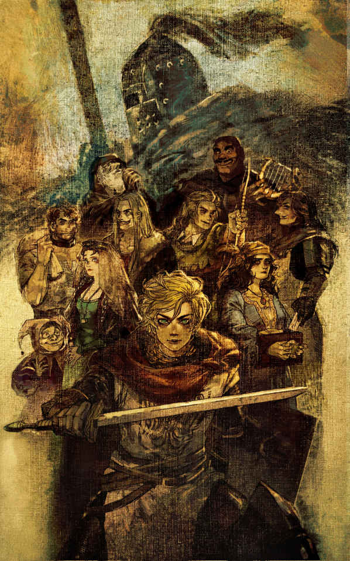

| アイヴァンホー (幻想迷宮ノベル) | |
| ウォルター・スコット | |
| GENSOUMEIKYUU SHOTEN (2019) | |

幻想迷宮ノベル
ウォルター・スコット
堂本秋次＝訳
このイングランドにて、ドン川の流れる楽しきところ、いにしえの世には広大な森が拡がっていた地。シェフィールドからかのドンカスターの町にかけて広がる美しい丘も谷も、ほとんどがその森におおわれていた。古くからイギリスの言い伝えに偉業が謳われている、あの勇ましき義賊たちが活躍したのは、何を隠そう、この森なのだ。
さて、この物語の始まりは、リチャード一世の統治が終わろうとしている時代に遡る。当時、リチャード一世は長きにわたって囚われの身となっており、すでに死んだものと半ば諦めたものは少なくなかった。この好機に、貴族らは己の権限を取り戻そうと躍起になり、英国枢密院の力を鼻で笑い、それぞれの城の守りを強固に固め、従う者の数を増やし、その者たちの身分を従僕におとしめ、あらゆる手を用いて権力の増強につとめた。やがてやってくると思われていた、国家を揺るがす大騒乱で花を咲かせようと誰もが野心に燃えていた。
身分が低い貴族は、
貴族の独裁的な政治を大いに助長しつつあったその時代の流れ、そして身分が原因となっている苦しみは、ノルマンディー公が成し遂げたイギリス征服によるものだった。共通の言語や相互理解によってノルマン人とアングロサクソン人の血が交わるには、四世代では不十分だったのだ。征服者としてのノルマン人は勝利の余韻にいつまでも浸り、被征服者となったアングロサクソン人は敗北という苦汁を嘗め続けていた。ヘイスティングズの戦いの結果として、権力は完全にノルマン人貴族の手中に収められ、以後は歴史が示しているとおり、容赦なく行使されつづけた。サクソン人の王族や貴族は、ほとんど一人の例外もなく、処刑されるか、廃嫡されるかの憂き目にあった。
また、征服者に対する反感を助長したとされた者の権力は、合法あるいは非合法を問わず、あらゆる手段で弱体化が図られた。ノルマン人の君主はみな、同じノルマン人の臣民を露骨なまでにえこひいきした。 狩りに関する法律を始め、その他、より寛容で自由なサクソン的憲法には見られないような法律が作られ、多くの家来が苦しむこととなり、封建社会の鎖は重みを増していった。
同時に、法廷や、法廷の豪奢さや荘厳さを真似たような偉大な貴族の城の中では、ノルマン系フランス語が唯一の共通言語で、法廷では、弁論も判決もこのノルマン系フランス語で行われた。フランス語はユーモアや騎士道精神、そして正義の言語であるとされていた一方、アングロサクソン語はよりがさつで上品さに欠けるということで、田舎者や時代遅れの者たちのみが使う言語となってしまったのである。しかしそれでも、土地の所有者と土地を耕す者の間で言葉を交わすことは避けられず、そうした場合にはフランス語とアングロサクソン語が組み合わせて用いられていた。
一般的な読者諸兄においては、この物語が以上のような時代を舞台としていることを念頭において頂きたいと思う。戦争や反乱といった大きな歴史的転換があったわけでもなく、それによりウィリアム二世の統治に隷属した存在としてアングロサクソン人が特別に際立ったわけではない。しかし、人々が一つの国の中で征服者と被征服者として厳密に区別されていたこと、彼らが以前には何者であったのかということ、何に成り下がってしまったのかということ、エドワード三世の失墜し続ける統治、イギリス征服がもたらした深い傷から目を背けてはいけないということ、征服者としてのノルマン人と被征服者としてのサクソン人の間には亀裂があったということは、忘れてはならない。
さて、章のはじめに語った、あの森のなか、草の生い茂った空き地の一つに、沈みゆく日の光がさしこんでいた。何百というオークの木、短い幹と広く張った枝であたかも頭でっかちになった木々が、厚い
さて、この風景画、人影を加えることで完成する。人影の数は二つ。いかにも粗野で田舎者、当時のヨークシャーのウェストライディング、その森に住む者に特有の風貌と恰好をしている。二人のうち、年上のほうは、見た目に険しく、粗暴そうな顔つきをしていた。彼の服はとにかくシンプルの一言で、何かの動物のなめし革で作られたのであろう、前が開いていない袖付きの上着姿だ。元々は毛があったのであろうその表面は、所々が禿げている。つぎはぎだらけで、元々の動物についての判断は難しい。
この原始人のような服はのど元から足まで長さがあり、身体を覆う衣服としての機能をその一枚で担っていた。首元にはそれ用の穴があるというわけでもなく、頭が通るのがやっとという大きさの穴が空いているだけで、そこから察するに、おそらくは頭からすっぽりと被って着るだけのものなのだろう。
履き物を見てみると、ボアの革でできた革紐で縛られている。そこから視線を上にやると、巻物のように巻かれた薄い皮が意図的に対になるようにふくらはぎより上に巻かれていて、脛は露出した状態になっていた。まるでスコットランドの
上着はしっかりと身体のサイズに合うように、真ん中あたりで幅の広いベルトで締め付けられ、真鍮のバックルで留められていた。ベルトの片方には何か袋のようなものが取り付けられていて、もう片方には羊の角。羊の角には、吹き鳴らすための口金がついていた。ベルトには他にも、刃渡りがあって切れ味の鋭い両刃のナイフの類いがあり、そのナイフには雄鹿の角でできた持ち手がついていた。
男は頭には何も被っておらず、その頭を守るのは豊富な髪の毛だけだった。その髪の毛は互いに縮れて絡まり、太陽の光に焦がされて
あと彼の見た目で特筆するべき箇所は一つだけだが、あまりに目につくので説明を省くわけにもいくまい。
真鍮の首輪だ。
犬の首輪に似ているが、取り外すために開くような箇所がない。それが彼の首回りをぐるりと、きつく囲んでいる。もちろん、息苦しくない程度には余裕があるが、それでもやすりで削らなければ動かせない程度にはきつく作られている。この嫌でも目につく首当てには、サクソン文字で次のような意味合いのことが書いてある。
ベーオウルフの息子、ガースは、生まれながらにしてロザウッドのセドリックの奴隷である。
この、豚飼いのガースの豚の群れの近く、ドルイド教が使っていたのであろう、壊れたモニュメントの上に、もう一人の人物が座っていた。見た目からするとガースよりも十歳かそれ以上若い。着ているものは、作りはガースと似ているが、素材が上質で、見た目も華々しい感じだ。
上着は明るい紫色に染められており、その上からさまざまな色でグロテスク風の装飾模様を描こうとして失敗した跡がある。彼はその上着の上に更にマントを羽織ったが、丈が短すぎて太ももまでの半分の長さもない。色は深紅。ひどく痛んではいたが、鮮やかな黄色で縁取られている。
彼が片方の肩からもう片方の肩にマントを動かしたり、全て前に持ってきて閉じたりすれば、丈よりもかなり余裕のある横の長さのおかげで、魅力的なカーテンのような造形となった。加えてこの者は薄手の銀のブレスレットを両腕にしていて、首元にはガースと同じ文句が書かれた首輪があった。
ウィットレスの息子、ウォンバは、ロザウッドのセドリックの奴隷である。
ウォンバもまたガースと同じような履き物を履いていたが、丸められた革紐ではなく、その両脚は脚当てを装着していて、そのうちの片方は赤、もう片方は黄色だった。また、ウォンバは帽子を被っており、その帽子の周囲には、
ウォンバもまた、ガースと同じように袋のようなものをそのベルトに身につけていたが、何かの角やナイフといったものは身につけていなかった。おそらく、そうした先のとがったものを、身につけさせるには危険な職業だと思われているのだろう。ただ、その代わりとして、薄っぺらい木製の剣を身につけていた。
この二人の男の外見と同じくらい、その仕草と表情もまた二人の間でまったく異なっていた。農奴の方、つまりガースは悲しく沈んだ顔をして、ひどく落ち込んだ格好で地面を見つめていた。ほとんど放心といった様子だが、彼の赤目に宿る炎がその兆しを時折見せる。一方ウォンバの方はと言うと、普段通りの彼の様子で、移ろう好奇心を振りまき、そわそわと落ち着きなく何度も姿勢を変えて、何一つ不満のなさそうな顔をしている。この二人が話すのは、彼らの身分に相応のアングロサクソン語だ。しかし、アングロサクソン語で二人の会話を書き起こしたとしても何を言っているかさっぱりだ、となるかもしれない。そこでここでは、現代風に訳してみよう。こんな感じだ。
「この豚どもが！」
荒々しく角笛を吹いて豚飼いがそう口にした。散らばった豚の群れをかき集めるためだ。豚たちこの笛の音に同じ音を返して答えるが、贅沢極まるブナの木とドングリの餌から急いで離れようという素振りは全く見せないし、半分以上泥まみれになってくつろいでいるところを
「夜のとばりが下りれば、二本脚で歩く狼がやってくる！ そうなれば皆喰われちまうぞ！ さあ、ファングズ！」
彼は、狼のような見た目をしたみすぼらしい犬にあらんばかりに声をあげた。マスチフとグレーハウンドの混血、猟犬だ。猟犬が、ぶーぶーとうるさいそいつらを、主人に従って囲い込むかのように足を引きずって走っている。しかし、豚飼いの指示を間違って理解したのか、それとも己の使命を忘れたか、あるいは悪意が成せる業か、ファングズと呼ばれた猟犬はただ、豚たちをより高く遠くへと追いやっただけで、状況はますます悪くなってしまった。
「あの役立たずが。悪魔に牙をやっちまうぞ！ おいウォンバ、起きて手伝えよ。回り込んで反対側から追い込むんだ。風上に立ったら、やつらを前の方に優しく追い出すんだ。子羊みたいに扱うんだ」
「なるほどね」ウォンバがその場から動きもせずに答えた。「ちょうど今、ぼくの両脚に相談してみたところさ。彼らの意見としてはね、ぼくの派手派手な服をこんな絶体絶命大ピンチの中運ぶのは、この服をくれたぼくのご主人様と、この高貴な服装それ自体に対して友情に
「豚がおれのためにノルマン人になっちまうだって？ そんな馬鹿なことがあるか」
「じゃあさ、あのぶーぶーうるさい四足歩行の動物、君はなんて呼んでる？」
「
「今ここで言う、スワインって言葉。そいつはサクソン語でしょ。でもさ、あいつらの皮を
「
「どうやらこれも、どんな馬鹿でも知ってるらしいや。......そしてさ、このポークって言葉。こいつはノルマン系フランス語だ。つまり、豚は生きているうち、つまりサクソン人の奴隷の管理にあるうちはサクソン語の名前が付けられるけどさ、お城に入って貴族たちに振る舞われるようになると、これがポークだなんて洒落たノルマン語になっちゃうわけ。どう？」
「いやいや、面白いが、できすぎた話だ」
「ところがこれにとどまらない。例えば
「なんということだ......。あぁ神よ。こうして吸い込む空気の他は、わたくしたちはほとんど何も享受できないというのか。彼らがわたくしたちの双肩に載せる重みに堪えられるよう、それだけのために残されたものだけを享受しろというのか。一番高級一番美味しい、そんなものは全て彼らの食卓へ。美人も皆彼らの庭。戦う力も全て奪われた。不幸なサクソン人を守ろうと、意志か権力を持って残った人は居ないに等しい。......それでもセドリック様はおれを守って下さった。本当に素晴らしいお方だ。だが、レジナルド・フロン‐
ド‐
ブーフがこの国にやってくれば、また話は変わるんだろうな。......お、こっちだ、こっちだ。いいぞ、いいぞ。ファングズ、よくやった！ うまくおびき寄せてくれたな。偉いぞ」
「良いのかな、そんな言い方をして。レジナルド・フロン‐
ド‐
ブーフか、それともフィリップ・ド・マルヴォアザンか、あのあたりのお方に今きみが言ったことを言えば、きみは見せしめに木の上で揺れることになるよ。ゆらゆら」
「おい、おれにあんな道理もないことを言うように仕向けさせておいて、それでおれを裏切るつもりじゃないだろうな、な？」
「裏切るだって？ まさかだね、ぼくはそんなに賢くない。自分のことの半分でも精一杯だよ......おや、誰か来るみたいだよ」
ウォンバはそう言ってから、耳を澄ませた。馬の蹄の音が聞こえるような気がした。いや、確かに聞こえる。
「誰だって構いやしないさ」
そう言いながら、ガースは豚の群れを見えるところに並べ、猟犬に手伝わせて森の道を追いやった。
「いやいや、何者なのかは見届けないと。たぶん、妖精の国から、オベロン王の手紙を届けに来たのさ、ぼくには分かる」
「そんなこと言ってる場合か。ほんの数マイル先まで酷い嵐が来ているのが分からないのか。雷だって鳴って......あんなに一直線に落ちる雷など見たことがない。オークの木もそうだ。天気は穏やかなのに、
ウォンバもこの言葉に「そう言われてみれば」と感じ、そばに転がっていた
馬の
嵐が来る前に早く帰ろうというガースの苦言にも耳を貸さず、ウォンバはハシバミの実から一房のまだ熟していない木の実を手にとったり、通りかかった田舎娘に流し目を送ったりしていた。そういうことを繰り返しているうちに、関わりたくないというガースの忠告も空しく、騎馬隊は二人に追いついてしまった。
その数は十人といったところ。先頭を行く二人は特に重要な役職に就いている人物であると思われた。そのうちの一人は、明らかに身分の高い僧侶だった。シトー修道会の僧の服を着ているが、戒律で許されているよりもずっと上質な素材でできている。彼の外套とフードは最上級の布でできており、裾も上品さを失わないままに幾重にも折り重なっている。
しかしその表情はあくまで律されていた。普段の表情はユーモアのある社会的紳士のそれに近いものだったが、彼は自由に表情をそれらしく変えるすべを身につけているのだ。教会からは贅沢を禁じられているはずだが、この身分が高い男の袖は豪華な羽毛で飾られており、マントは金色の留め具で首元のところで留められている。形式こそ修道会の決まりにのっとってはいるが、華美な飾り付けが多すぎて、いやらしい俗っぽさがまるだしになっている。
この聖職者のローブは、彼が乗っているこれまた素敵な
教会の高位者であるこの男と一緒に、齢四十を過ぎている、長身痩躯だが力強く筋肉質な男が居た。身体を鍛えているようだという見た目で、長年培われた努力の結果、人間という形の柔らかい部分を一切残していないという有様だ。残っているのは筋肉と骨、そして腱だけで、これまで何千もの苦難を乗り越えてきたその身体は、これからの何千もの苦難をも乗り越えられる予感を携えている。頭には毛皮に縁どられた真紅の帽子をかぶっており、おかげで顔がはっきりと見える。
その表情は、初めて会う者に、恐怖とはいわぬまでも、畏怖のようなものを抱かせようと狙っているかのようだ。ただでさえ強烈な印象を与える顔が、南国の太陽にさらされつづけたことで、アフリカ人の肌のように真っ黒に焼けている。鋭く突き刺すような闇を携えた瞳は、あらゆる苦難の歴史や冒してきた危険の記憶を宿し、同時にこれからの困難をも見据えている。眉にある大きな傷は彼の見た目に更に精悍さを加えており、片方の目に不吉な様相を与えている。その傷を負ったとき、彼は目も負傷したのだ。そのせいで、視力が落ちたというわけではないものの、少しだけものが歪んで見えるようになっていた。
この人物の上半身の服装は、連れの者たちと形は似ていて、修道士が着る長いマントだった。しかしその色は深紅で、彼が普通の聖職者とは異なることを示していた。マントの右肩には切り込みがあり、白地のところには十字架がある。マントの下には、揃いの袖とグローブとは合わない編み込まれた鉄の鎧を着ており、この鎧は動きやすい素材でできていた。
太ももの前部分にはマントの折り目があって、そこには編み込まれた鎖かたびら。足と脛の部分には鉄の当て物がされていた。足首から脛まで伸びる鎖でできた長靴下は脚の部分をしっかりと守っており、こうして彼の全身はいかんなく守られていた。腰帯には刃渡りのある両刃のダガーを差しており、他に武器は持っていなかった。
彼が乗っているのは、仲間のような騾馬ではなく、道を力強く行くための乗用馬だった。戦いに
この二人の従者に、更に二つ、続く影があった。その顔は薄暗く、白いターバンをしていて、格好は東洋のそれであった。おそらくはどこか遠くの東の国の出身なのだろうことは一目瞭然だ。
この兵士と彼に続く従者たちは野性的で異国風の出で立ちで、従者らの服装はまさに壮観だ。東洋の付き人は首元に銀色の首飾りをしていて、同じ金属でできているブレスレットを浅黒い手首と脚につけていた。肘から先と脚の半分から下、足首までは露出している。彼らが武器として持つサーベルは柄と剣帯に金が埋め込まれていて、より一層価値のある職人技によるトルコ製ダガーとよく似合う。まさに、おとぎ話や寓話で聞く異国の民そのものだ。
この騎馬隊の他にない出で立ちは、ウォンバの好奇心のみならず、ガースさえも興奮させるほどだった。ウォンバには、この聖職者がジョルヴォー僧院のエイマー院長であることがすぐに分かった。狩りと宴をこよなく愛することで万里まで有名で、噂に違わないのであれば、世界中のあらゆる愉悦を愛する男だということだった。
当時は聖職者の行いに対して、僧侶についても俗人についてもとやかく言われる時分ではなかったので、このエイマー院長も、僧院の界隈で己の評判を保ち続けることができていた。彼のおおらかで寛容な性格や、日常的な失敗についてはたいてい大目に見てくれるという点もあって、彼は貴族や紳士の間で好人物として捉えられていた。エイマー院長自身がノルマン系の生まれであったため、そのうちの何人かとは血のつながりもあったというのも大きい。また、狩猟への参加に人一倍熱心で、ノースライディング随一という練度の高い
エイマー院長は老人を相手にするときは非常に丁寧な態度だった。また、彼は本から得た上辺だけの知識を披露することで、無知な群衆に、物知りな人だと錯覚させる術に
当然、このように有名な院長と出会ったガースとウォンバは無視するわけにもいかず、不作法ながら院長に形ばかりの礼儀を見せ、代わりにそれらしい祝福の言葉を頂戴した。
ただ、この一行の不思議な見た目に二人は面を食らった。それで、この近くに泊まれるところはないかと院長に聞かれたときにも、ほとんど返事をすることができなかった。院長の祝福の言葉も、投げかけられた質問も、意味が分からなかったということではないにせよ、ほとんど何を言われているのかが理解できていなかった。
「これ、尋ねておるんだがな」とエイマーは声を張り上げた。ノルマン人とサクソン人とが会話するときに使う
院長はいやにもったいぶった口調でそう言った。言葉の上では謙遜しているが、印象はまるで反対だ。
「はっ、教会に仕える卑しき僕ときたか」とウォンバが相手に聞こえないようにつぶやいた。「これで下働きの召使いってんなら、家令だの、執事だの、お偉い使用人の
エイマーの言葉に悪態をついてから、ウォンバは顔を上げてエイマーから投げかけられた質問に答えた。
「ここから数マイル離れたところに良い修道院がありますよ。ご身分がご身分ですから、きっとよくしてくれます。それとも罪滅ぼしの苦行として一夜をお過ごしなら、あちらの荒れ地に行くのも良いでしょう。隠者がおりますので、一晩雨風を凌ぎながら祈ることができると思いますよ」
ウォンバの答えを聞いて、エイマーは首を振った。
「おまえさん、帽子の鈴の音で頭がおかしくなっておらんかね。知ってのとおり、教会の者は互いにもてなしあうようなことはせんのだ、共倒れは困る。そうではなく、世俗の者からもてなしを受けたいと申しておる。我ら選定されし
「なるほど、ぼくがこんな鈴をつけてるのも、貴方さまの騾馬と同じで、神に仕える機会を頂戴したからにちがいない。ま、それはともかく、慈愛はまず身内から、って
「無礼も大概にせよ」と武装したほうの騎手がぴしゃりと言ってウォンバの無駄口を制した。「貴様、知っておるのならさっさと教えぬか、その、ええと......エイマーどの、なんでしたかな、さきほどおっしゃっていた名は？」
「セドリックですよ、サクソン人のセドリック」と院長。「さあさあ、おまえさんたち、その屋敷がもう近いのではないかな、どうかね、案内を頼めるか？」
「少々わかりにくいところにありますよ」とガースが初めて口を開いた。「それに我らがセドリック様は、就寝なさるのが早いお方で......」
「ええい、ほざくな、下郎」またも武装した騎手が割って入った。「起きて接待するぐらい、なんだというのだ、こちらは訪問客だぞ、もてなしを求める権利こそあれ、頭を下げて頼む義理などないわ」
これにはガースもむっとなって言い返した。
「わかりませんねえ。どうか一夜の宿をお願いしたい、って頼むのが普通でしょうに、それをまるで当然の権利みてえに迫るだなんて、そんな
「おれに口答えするか、奴隷ふぜいが！」
そう言うや、騎手は拍車をあてて馬の向きを変えながら、手にしていた乗馬鞭を振り上げ、無礼千万な農奴にひと打ちくれてやろうとした。
ガースは不満げな顔で相手を
「よせよせ、ブリアンどの。ここは異教徒相手のパレスチナではありませんぞ。我らブリテンの民を鞭で打つなど、ほめられたことではありません。聖なる教会のそれは別といたしましてな、ほれ、愛の鞭と申すでしょう......さて、そこのおまえさん」エイマーはここでウォンバに声をかけ、銀貨を一枚握らせながら、こう続けた。「セドリックとやらの屋敷への道を教えてくれぬか。知らぬはずはあるまい。迷子の旅人がおれば、たとえ我らとちがって世俗の者であろうとも、道を教えるのが道理ではないかね？」
「いえね、司祭さま、お連れのおっかないお顔を見ちまったもんだから、ぼくもすっかり震えあがっちゃって、帰り道も思い出せぬ始末で......さあて、今夜のうちにお屋敷に帰れるかどうか」
「ええい、おぬしまでとぼけるつもりかね。この方はな、聖墳墓の奪還のために今日までずっとサラセン人と戦ってこられた立派な聖職者だ。おまえさんも聞いたことがあろう、あのテンプル騎士団のお一人なのだぞ。つまり、半分は僧侶で、半分は騎士というわけだ」
「ほんとに半分は僧侶さまってんなら、道でばったり出くわした相手に、こっちと関わりのねえこと訊いといて、やれ返事が遅いだのなんだの、無体なことをおっしゃるなんて、おかしくありませんかねえ」
「わかったわかった、おぬしの機転に免じて、こちらはもう責めぬから、代わりに道を教えてくれんか」
「あいよ、じゃあ、申しましょう。この道をずっと行くと、土に埋まってる十字架があるんで、うん、腕ん長さくれえは見えてっから、そこの四つ辻を左に曲がるんだね。嵐が来る前にたどり着ければ良いですなあ」
エイマーはこの道化の助言に礼を言った。騎馬の一行は拍車をかけ、旅人が夜の嵐を恐れて宿へ急ぐのと同じように、馬を全力で走らせたのだった。
蹄の音が聞こえなくなった頃、ガースが口を開いた。
「おまえ頭良いな。これであいつら今晩までに屋敷にたどり着けないだろ」
無理だろうね、と道化師は笑った。
「でも、運が良ければシェフィールドにはたどり着けるかも。そっちの方がお似合いさ。それに、飢えた犬に大切なウサギの居場所を教えるような真似をするわけがない」
「言えてるぜ。あのエイマーにロウィーナ姫を拝ませるなんて、そりゃまずいよな。ましてや、セドリック様があんな修道騎士の奴と喧嘩になってみろ、実際いかにもありそうなことだがよ、もっとまずいじゃねえか。ま、利口な召使いとしちゃあ、目と耳は働かせても、口はしっかり閉じておけ、ってところだな」
さて、走り去った騎馬の一行はといえば、こちらはこちらで、二人が次のような会話をつづけていたのである。
「あの者らですが、どういうつもりだったんでしょうな、急に無礼な態度をとったりして」テンプル騎士が、修道会の院長に言った。「それに、どうしてあのとき、お止めになったのです？」
「いいかね、ブリアンどの。まずあのふざけた
「ならば、すぐにでも礼儀を叩きこんでやったものを。ああいった
「されど、郷に入っては郷に従え、と申すでな。あの男を打ちのめしたのでは、屋敷までの道は聞けなかったし、仮にたどり着いたとしても、セドリックとのあいだで
「それはたしかに厄介ですな。エイマーどの、貴方ほど色の道に通じた方がことさら美女と評されるロウィーナ姫、期待してはおりますが、その父親がセドリック、いま申されたような人物ならば、その機嫌をとるために求められる我が忍耐たるや、いかほどのものになるか。はたして釣り合いがとれるほどの美しさですかな」
「いや、セドリックは姫の父親ではござらぬ。遠縁にあたるというだけのこと。姫はずっと高貴な血筋でしてな、奴の
「おっしゃるほどの美人でなければ、そのときはどうなるか、賭けの内容は覚えてらっしゃるでしょうね」
「私の負けなら、この金の首飾り。貴方が負ければ、ギリシャの高級ワインを十樽ですな。ま、私の勝ちは決まったようなものですがね。もはや修道院の貯蔵庫に収めたも同然」
「しかし、私がほかならぬ審判ですからね。これほどの美人は見たことがない、私がそう言わなければ貴方の負け。首飾りをきっと手放すことになりますぞ。いまから、アシュビー‐
ド‐
ラ‐
ズーシュでの槍試合にて、わが首当ての上からかけているのが見え申すわ」
「公正に勝ち取ったなら、着けるのは御自由に。貴兄も騎士であり、神に仕える者、己の心を偽るような真似はしないと信じてますよ。さりながら、ここで助言させてもらうと、いま少し言葉
「
「そこまでのことにはならぬと思いますがな」院長が答えた。「ところで、ここは道化が言っていた十字架の場所かと。こう暗くなっては、どの道を行けばよいのか、ちっともわからんな。ここを曲がるという話だったが、たしか左だったかな......」
「いや、右ですな、記憶には自信があります」とブリアン。
「左でしょう、ええ、たしかに左です。道化が木の剣で指したのを憶えてます」
「ですが、奴は左手で剣を持ってました。それで体ごしに指したのだから、右ですよ」
二人は
そうこうするうちに、ブリアンが何かを見つけたと言いだした。最初は夕闇が迫っていたせいで気づかなったのだ。
「そこだ、十字架のそば、地面に誰かいるぞ、寝ておるのか、死んでおるのか......おい、ユーゴー、槍の石突きでつついてみろ」
そうしたとたん、寝転がっていた人物が起き上がり、フランス語で叫んだ。
「何者だ！ 人が考え事をしているときに邪魔をするとは、実に無礼な！」
そこで院長がとりなしに入った。
「いや、道を聞きたかっただけでな。ロザウッドへ行く道、セドリックの住まいに向かう道はわかるかね」
「おや、私もそこに向かう途中でね。馬を貸してくれれば案内いたそう。このあたりは入り組んでいて迷いやすいが、私にとっては勝手知ったる道だからな」
「ありがたい。礼を言うぞ、むろん、セドリックのところに無事連れていってくれたら、礼を
そう言って、従者の一人を当人が
この案内人は、ウォンバが迷わすために示した道とは正反対の方向へと進んでいった。道はすぐに深い森へと入りこみ、小さな流れをいくつも越えることになった。湿地を流れる小川なので、危険な道のりだったが、この素性も知れぬ男は、本能的にわかるとでもいうのか、しっかりと固い地面、安全な渡河地点をすべて知っているようだった。それでも用心を怠らず、無事に一行を見通しのきく広い道まで導いた。道のはずれに見える、大きくて背の低い、いびつな建物を指さして、院長にこう言った。
「あそこがロザウッド。つまり、セドリックの住まいだ」
この言葉にエイマーはようやく胸をなで下ろした。その神経は決して図太い方ではなく、ここまで危険な道を歩いてきたせいで、道案内の男に口をきくこともはばかられていたのだが、宿は目の前でもう安心して良いとわかって、ようやく男が何者なのか聞いておきたいと思い、そうすることにした。
「巡礼者ですよ、聖地から戻ったばかりのね」
それが返事だった。そこに噛みついたのがテンプル騎士たるブリアンだった。
「では、とどまるべきではなかったのか、聖墳墓の奪還のためになぜ戦わぬ」
「これはごもっとも、聖なる騎士さま」と巡礼者を名乗る男は答えた。騎士の姿など見慣れたものらしい。「聖地回復の誓いを立てたはずの方が、その務めとは関わりのない、こんなへんぴな場所にいることを考えると、
これにはテンプル騎士も怒声で返そうとしたが、例によってエイマーが割って入った。
「そんなに長く国外にいたのに、森を抜ける小道まで
「それはまあ、このあたりの生まれなものでね」
道案内の男がそう答えたときには、一行はセドリックの屋敷の前にたどり着いていた。高さがなく、妙な形の建物だった。中庭もしくは
ただ、ロザウッドが無防備だったかといえば、そうではない。この乱世の時分、どんな住居であれ、無防備なままでは、一夜のうちに略奪や焼き討ちに遭うことは目に見えている。ゆえに、周囲には深い
この木戸の前で、テンプル騎士は角笛を高らかに吹き鳴らした。ずっと降りだしそうな気配を見せていた雨が、ついに猛威を振るい始めた。
その広間の高さは、部屋の幅や奥行きに対して不自然なほどに低かった。オーク材でできた長テーブルがある。手入れをされている感は無く、この館の主、セドリックの
この屋敷のそのほかの装飾品も、全てサクソン時代の粗野なシンプルさを携えていて、それがセドリックの自慢でもあった。土と石灰を混ぜて踏み固めるようにして作られた床は、この部屋全体の四分の一ほどのところが一段だけ高くなっていた。この高座の部分には家族の中でも地位の高い者か、特別な客人以外は足を踏み入れることが許されなかった。ここには深紅の布を掛けられた長いテーブルが横向きに置かれていて、その中心から、長く背の低いテーブルが部屋全体を横切るようにして置かれていた。ちょうど、アルファベットのＴの文字のような格好だ。そのほか、高座にはオーク材でできた大量の椅子が並べられており、これらの席と、より高位の人物が座るための椅子には布でできた
この高座側の壁にはカーテンか何かが掛けてあって、床にはカーペットが敷かれ、どちらもタペストリーか
高座のテーブルの中央には二つの椅子があり、これは他の椅子よりも高い位置にあった。館の主人とその
この二つの椅子のどちらにも、装飾や彫刻が成されたアイボリーでできた足台が備え付けられており、この椅子に座る者が特別なものであることがより一層明らかだった。その椅子の片方に今座っているのが『サクソン人のセドリック』その人だ。その表情は、晩餐の準備が未だに整っていないことに対する苛立ちを隠してはいない。
彼の顔立ちには、気さくでありながらせっかちで、時折カッとなる気性が見て取れる。体格としては、肩幅が広く腕は長く、戦いや狩猟にも堪えられるようにそうなったのだと感じさせる。髭が生えた顔には大きな青い眼が開かれていて、歯並びも良く、頭髪もよく整えられている。また、権利が常に奪われるという恐れがある現実を見てきた瞳には、矜持と嫉妬が同居している。長い黄色の頭髪は頭頂から真ん中できっちり分けられており眉に垂れていて、肩までの長さがあるがしっかりと櫛が通されている。歳は六十になろうとしていたが、その老いが髪に現れる兆候は無かった。
服装はというと、濃い緑のチュニックで、首元と袖口には毛皮の飾りがついていた。下はというとこれまた高級な素材でできたものだったが、長さは脚の太ももまでしかない。足にはガースとウォンバが履いていたものと同じ履き物を履いていたが、素材はずっと上質で、金色の留め具が用いられている。腕には金でできたブレスレットをしていて、同じ素材でできた首飾りもしていた。腰にはこれでもかというほどの装飾がついたベルトをしており、そこに両刃の短剣を帯刀している。彼の座っている椅子の背もたれには深紅の羽で縁取られたクロークが掛けられており、同じ素材で豪華な模様のついた帽子もあった。また、大きく輝く鉄の刃を持つ槍が椅子の背に立てかけられている。
その彼の視界に、何人かの召使いが命令を待っている。この召使いの服装は、上は主のように煌びやかなものから、下はガースの着ているようなものまで様々だ。召使いの中でも特に位の高い者が二、三人、命令で主人の後ろに立っていたが、他の者は皆高座に上がることを許されていなかった。人間ではないものも居て、例えば二、三匹のグレーハウンドやテリア。テリアの方は食事にありつけるのは今か今かと待ち構えている。しかし、主人の機嫌が悪いことを察してじゃれつくようなことはしていない。大きく古株の狩猟犬だけが、主人の寵愛を受ける権利を有していて、主人が座っている椅子の近くに陣取っていた。時折主人の脛を見るようにして顔を上げたり鼻を手のひらにくっつけたりして気にしてもらいたがっている。しかしこの犬でさえも、そうしているうちに主人に窘められてしまった。
セドリックの苛立ちの原因は明らかだ。遠方の教会に行っていたロウィーナ姫が帰ってきたばかりで、着替えがまだ済んでいなかったのだ。また、とっくに森から戻ってきているはずのガースや、ガースに任せている豚のことについても今日の報告を受けていなかった。嫌な予感が募った。森の近くに住んでいる無法者か何者かの被害を受けたのではないだろうか。もしもそうだとすれば、そして彼の資産の大半を占めているのが豚であることを考えれば、事態は一刻の猶予も許さないとすら考えられた。
これらの不安要素に重ねて、お気に入りの道化師まで帰ってきていない。道化師ウォンバの軽口は、晩餐を彩る大切なスパイスだった。それを肴にエールやワインで喉を潤すのが、セドリックの楽しみだったのだ。更にその上、セドリックは昼からずっと空腹だったというのに晩餐の規定の時間はとうに過ぎていて、つまり何もかもが彼を苛つかせているのだった。
そんなこんなで、彼の気を少しでも鎮めようとワインをついでいた召使いにむかって、あたり散らしたりもする。
「ロウィーナ姫は何をぐずぐずしているのだ」
「姫様はかぶり物をお替えになっているのですよ」そこへ侍女が自信たっぷりに答えた。今も昔も、奥様お気に入りのメイドというのは、主人にはちょっと強く出るものだ。「姫様があんなフードや上着をつけたまま食卓につくのは、ご主人様もご本意ではございませんでしょう。もうすぐいらっしゃいますよ」
これにはセドリックも返す言葉がなく、同意のつぶやきをもらすほかなかった。
「次に教会へ行くときは、天気のいい日にしてもらいたいものだな」などと余計な一言を付け足してから、また酌取りの召使いのほうを向いて、声を荒らげた。遠慮なく怒りをぶちまけられる相手が欲しかったのだろう。
「それよりも、ガースのやつだ。どうしてこう遅いのだ。また豚のことでくだらん愚痴を聞かされそうだぞ。あやつのことは信用できるし、目端の利く働き者だと思っておったのに。もう少しましな仕事に取り立ててやってもいいぐらいだ、そう、兵士か何かにな」
酌取りの召使 い、オズワルドは慎重に言葉を選んだ。
「鐘が鳴ってから、まだたったの一時間じゃありませんか」
「知ったことか！ もう外は暗い、晩の鐘も鳴った、もういつ誰が襲ってきてもおかしくない時間だ。盗むか奪うしか能が無いやつらにわしの財産が奪われるのも時間の問題だ！ 忠臣は殺され、野望は潰えるのだ......。そうだ、ウォンバ、ウォンバはどこだ。ガースと一緒に出かけたといわなんだか？」
はい、そのとおりで、とオズワルドが答える。
「何だって？ これはとんだ笑い種だな。ウォンバもまた連れ去られたというわけだ。サクソン人のものはいつでもノルマン人のもの、そういうわけか。サクソン人はいつまでもノルマン人に仕える阿呆で、やつらの慰みものになる運命というわけだ。だが、わしは違うぞ！」
そこでセドリックは椅子から立ち上がり、義憤と共に立てかけてあった槍を手にした。
「わしは徹底して戦う。わしは一人ではない。味方も家来も大勢居る。奴らに一騎打ちを申し出てやる。好きなだけ武装をして来るが良い、臆病な心を隠す衣だと笑ってやる！ 孤独な老いぼれと侮ったことを後悔させてやろう！ そうだ、わしは孤独などではない！ 孤独などでは......」
ふと、勘当した息子のことが頭をよぎる。冷や水を浴びせられたかのように怒りが引いて、セドリックは槍を置いた。それから椅子に深く座り直し、物思いに耽っているようだった。
そのセドリックを現実に引き戻したのは、角笛の嘶きだった。それに対して一斉に広間の犬が吠え返す。
「皆の者、門だ。何用か聞いてこい。悪い知らせに違いなかろうがな」
その言葉に従った召使いは、数分もしないうちに戻ってきた。
「ジョルヴォーの院長、エイマー様と、騎士団の司令官のブリアン・ド・ボア‐
ギルベール様ご一行です。一晩、雨風を凌ぐ場所を貸してはもらえないか、ということでした。明後日に開催されます槍試合に出る途中とのことで」
「エイマー院長、そしてブリアン・ド・ボア‐
ギルベールだと。どちらもノルマン人だな。だが、ノルマンだろうがサクソンだろうが、わしの目の届くところでのもてなしにとやかく言われるのはいけない。宿が欲しいというのなら快く与えよう。一晩の宿と食事くらいでとやかく言うのも品に欠ける。それにノルマン人とて、客人の立場となれば無礼を慎むくらいはするだろう」
そう一人で呟いて、やがてセドリックは彼の後ろに立っていた家来の名、フンデベルトを呼び、客人を迎えに行かせた。そして、白い杖を持ったその家来が向かおうとするその背中に、こう付け加えた。
「召使いを六人連れて行き、客室に案内してやれ。馬や騾馬については面倒をみてやり、不自由をさせるな。必要なら着替えも与えろ。酒もだ。料理人には客人の分を追加で間に合うように作らせ、ここに同じように並べろ。フンデベルト、客人らには、セドリックは本来なら自ら出向いて挨拶をするべきだが、客人と会うときには高座の上からということに決まっていると伝えろ。さあ、行け。貧乏らしいところを見せるな。寛容な態度でもてなせ」
その言を受けて、フンデベルトと呼ばれた家来は召使いを数人連れ、広間を出て行った。
「エイマー院長、エイマー......わしの記憶違いでなければ、ミドルハムの領主、ジル・ド・モールヴレの兄弟ではなかったか」
ワインを注ぐ家来であるオズワルドを見ながらのセドリックの言葉に、オズワルドが慎重に頷く。
「はい左様です」
「ジル・ド・モールヴレは、ミドルハムのウルフガーという名家の財産を奪っている。しかし、これはノルマン人なら誰でも同じことだ。エイマーという男については、奔放で快活な人物だと聞いている。教会の鐘の音よりも狩猟の角笛、聖書よりもワインが好きらしいとな。手厚く迎えてやろうではないか。して、その騎士の方の名は何だったか」
「ブリアン・ド・ボア‐
ギルベール様です」
その名前を聞いて、またセドリックは少し考えるようにした。それから、長年を召使いと一緒に暮らしていたことで自然に身についた、半分は命令口調のような声色で言った。
「ボア‐
ギルベール。良い意味でも悪い意味でも有名な名だ。非常に勇敢だが、悪行や矜持、傲慢、残忍さ、色恋や酒の噂が絶えない。怖いものなど地上にも天上にも無い、そんな大胆不敵な男だと聞いている。......だがまぁ、一晩だけのことだ、迎え入れてやろうではないか。オズワルド、最も古いワインを開けろ。最高の蜂蜜酒と強いエールもだ。発泡酒も忘れるな。それから、エルジサ、ロウィーナ姫のところに行き、今宵は晩餐に顔を見せなくても良いと伝えて来い。姫自身がそうしたいというなら別だが」
「姫様はきっとご参加なさりたいと申しますよ。姫様はいつでも、パレスチナからやってきた新しいお話に興味が津々でございますから」
セドリックはこの出しゃばりな侍女に一瞬かっとなって、ちらりとにらみつけた。しかし、ロウィーナ姫のことに関しては、万事が特別扱いで、怒りの矛先を向けないことに決めている。そこで、こう答えるにとどめた。
「黙らんか、エルジサ。そちの舌は分別が足りぬ。姫にわしの言伝をそのまま伝えれば良いのだ。あとは姫が好きにすれば良い」
そう言われてエルジサは部屋を出て行った。その後で、またセドリックが独り言を呟く。
「それにしても、パレスチナか。あの自堕落な十字軍やら偽善者の集まりの巡礼者やらが持ってくる話を聞きたがるやつがいかに多いことか。だが、わしも聞くだろう。前のめりになって話を聞くし、一晩の宿のために作られた話だとしても胸を躍らせて聞くかもしれない......」
セドリックは眉をひそめて、また少し、勘当した自分の息子のことを思い出した。一瞬、足下に目をやる。次に目を上げたとき、ちょうど広間に通じるドアが開くところだった。杖を持った家令と、たいまつをかかげた四人の召使いに先導されて、今宵の客人たちが広間へと入ってきた。
屋敷に着いてから、エイマー院長は着ていた服を別のものに着替えた。その服も上質な素材でできていて、その上には僧侶が身につける類いの、見事な
騎士であるブリアンの方もまた、服を着替えていた。装飾はエイマーのそれよりも派手ではなかったが、着ているものの質自体は決して劣るものではなく、その立ち振る舞いは自信に満ちあふれていた。鎖かたびらを脱いで紫紺のチュニックを着る。その上にしみ一つ無い白い外套。外套の肩部分には、テンプル騎士団を示す十字架が黒のビロードで切り抜いた模様がついている。
あの帽子はもうかぶっておらず、あらわになった額には、短くて濃い巻き毛がかかっている。色は鴉の濡れ羽色、並外れて日焼けした顔色と釣り合いがとれている。その所作や立ち振る舞いはいかにも優雅だったが、しかし何よりも目についたのは彼のいかにも高慢な態度の方だった。権力をところ構わず振りかざす者に付きものの、あの雰囲気である。
この二人の後ろに従者が続き、少し距離をあけて、この屋敷まで案内してくれた巡礼者が着いた。この人物については、巡礼者の格好が目につくと言えばその通りだが、それ以上に気になる点はない。外套のようなもので全身を覆っていて、履き物は粗末だ。帽子の鍔は広く顔ははっきりと見えないが、聖地巡礼の印である貝殻が縫い付けてあった。
この巡礼者は、一行の最後尾について、遠慮がちに広間へ入ってきたが、下座のテーブルはセドリックの召使いや客の従者たちで席がほとんど埋まっているのを見てとると、大きな暖炉のそばに腰をおろした。
客人が入ってきたのを見て、セドリックは寛大かつ尊大な歓迎をしようと立ち上がった。高座から下りて三歩、客人に近づき、彼らの方から近づいてくるのを待った。
「ようこそお出でなさいました、院長殿。まずはこれ以上そちらに近づくことができない無礼をお許し頂きたい。すでに案内させた者から聞いているとは思いますが、古くからのしきたりで、どなた様が相手であっても、客人を迎える際にはここより迎えると決まっているのです。また叶うようであれば、わしが生まれたときから用いている言葉で話を交わすのを許されたい。加えて客人にも、その言葉を用いて頂きたい。皆さんが何を仰っているのかを理解する程度には、ノルマン語を知っているつもりではありますがね」
それを受けて、院長は、しきたりか、と呟いた。
「しきたりというものから、人は解放されなければなりません。しきたりは我々を天上に繋ぎ留める結び目。そうしたものから人は自由でなければならない。勿論、教会がそれを許さないと言うのなら話は別ですがね。もう一つ、言葉の方については、私も私が生まれ持った言葉、誉れ高き私の祖母が愛した言葉でお話したいと思っております。祖母はミドルハムのヒルダと申しまして、非常に高徳な人物としてこの世を去りました。私は、その祖母に倣いたいのです」
院長はセドリックを懐柔しようと長広舌をふるったのだが、それが終わるや、連れの騎士のほうはただ簡潔にきっぱりとこう言い放った。
「どんなときであろうとフランス語を話すまでだ。リチャード王と臣下の貴族が日頃使っておる言葉なのだから。だが、イングランドの言葉はわかるぞ、土着の民と話が通じる程度にはな」
セドリックはこの言葉に怒りのこもった表情を向けたが、客人をもてなすべき立場であることを思い出し、その表情をなんとか押さえつけた。それから、自分自身の位置から少し低いところに二人分の客人の席を作るように召使いに身振りをし、続けて食事を運んでくるように言った。
命令に従おうと召使いが動き始めたとき、セドリックの瞳が、たった今広間に入ってきたガースの姿を捉えた。ウォンバも一緒だ。
「おまえたち、どこへ行っておったのだ！ ガース、豚はどうした？ 何者かに奪われでもしたか？」
「豚は無事ですよ」
「なるほど無事か、しかし無事というだけではわしの気は収まらんぞ。こんなに遅くまで戻ってこないとは。先ほどまでずっと、豚がどうにかなってしまったのではないかと、奪われたとすれば奪い返すほか無いと思い込んでおったところだ。次にこのようなことがあれば、鎖で牢に繋いでやるぞ！」
ガースは、己の主人が怒ると手が付けられない気性の持ち主であることを重々承知していたので言い訳をしようとも思わなかったが、ウォンバの方は馬鹿者であるという立場もあっておよそのことは言っても許されるところがあった。
「セドさん、今日は随分、頭がカッカしちゃってるみたいだね」
「何だと？ いくらおまえでも言葉が過ぎれば、懲罰の味を知ることになるぞ」
「いやいやちょっと待って。じゃあ知りたいんだけどさ、誰かのことを、誰か別の人の責任のために罰したりするのって、正しいこと？」
「馬鹿者め、正しいわけがあるか」
「それならどうしてガースを牢に繋ぐなんてするのかな、セドさん。ガースが遅くなったのは、ファングズのせいだよ。遅くなったけど豚の群れをまとめてからは、ぼくらは一分だって無駄にしちゃいないね、誓っても良い」
「ならばファングズを吊せ。そして新しい犬を手に入れろ」
「わかってないなぁ。違うんだよセドさん。ファングズが悪いわけでもないんだ。そもそもファングズが仕事をできなかったのは、ファングズの前足の爪が無いからさ。どうして無いと思う？ まさかファングズが自分から爪を取ってくれって言ったとは思わないよね？」
「ならば誰の責任だというのだ。誰がファングズの爪を奪った？」
「ヒュバートさんだよ。フィリップ・マルヴォアザンの猟場の番人さ。ファングズがその猟場の森をうろついているのが見つかったわけ。向こうの話じゃ、ファングズが勝手に鹿を追い回していたから、その罰だそうだよ」
「奴らめ、呪われるがいい！ あの森は免状で森林法の適用外だというのに、知らぬふりをしおって。まぁ良い、とにかく分かった。おまえたちも席に着け。そしてガース、おまえは別の犬を手に入れろ。もしそのヒュバートとか言うのがまた犬に触れようとしたら、わしがそやつの両腕を奪ってやろう......と、済まない、客人。さぁ、粗末だが宴を始めよう」
粗末な宴というには、それはあまりにも素晴らしすぎた。テーブル全体に広がる食事には、色とりどりの飾り付けがされた豚肉、鹿肉やウサギの肉もあり、様々な種類の魚まである。大きなパンに、薄いケーキ、果物と蜂蜜で作ったお菓子もいろいろある。傍に居る召使いは、皆、客人に必要なだけの分を取って渡した。身分の高い者には銀の杯が、そうでない者にも角でできた杯が配られた。
そして食事が始まろうとした、まさにそのとき、家令が杖を高くかざして、大声でこう言った。
「お控えあれ！ ロウィーナ姫にお席を」
広間の奥のくぐり戸がさっと開いたかと思うと、ロウィーナ姫が入ってきた。四人の侍女があとにつづく。セドリックはロウィーナ姫が姿を見せたことに驚きながら、
「どうやら、槍試合に金の首飾りをつけていくのは諦めた方が良さそうですね」
「だから言っただろう。しかし浮き足立つのはよした方が良い、セドリックが睨んでいるぞ」
エイマーの注意にも耳を貸さず、ブリアンはただただ美しい姫君を見ることができたという喜びに打ちひしがれていた。想像以上に美しいそのサクソン人の姫君から目を離すことなどできるはずもなかった。
女性として理想の肢体というべきか、ロウィーナ姫はすらりと背が高い。といって高すぎて余計な人目を引くほどではない。顔立ちは芸術品のように美しく、被り物や身につけているものからは気品がにじみ出ている。瞳は青く、目尻には気高さが宿っていて、その目があれば、誰であっても
そのまま着ているものに目を向けると、透明感のある翡翠のような色をしたシルクの肌着の上に長くゆったりとしたローブを羽織っていて、その裾は床にまで届いていた。袖は幅が広いが短く、肘のところまでしか届いていない。ローブの色は深紅で、最高級品の羊毛でできたものだった。頭には金糸が編み込まれたヴェールをかけており、必要なときにはそれで顔を隠すことができるようになっていた。
ブリアンから熱烈な視線を送られているのに気づいたロウィーナ姫は、高潔な者がする所作でもってヴェールで顔を隠した。ブリアンの眼窩がまるで洞穴のように昏く、ぞっと感じたのだ。セドリックがこれを見て、ブリアンに向けて口を開いた。
「騎士殿、我らがサクソンの姫君の頬は、日に当たることになれておらず、じっと見られるのに堪えられないのだ」
「気を悪くされたなら申し訳ない。陳謝致します。勿論これは、そちらの姫君に対する陳謝であり、それ以外の者に対するものではありませんがね」
この言葉に、エイマーが割って入った。
「姫がわが友の非礼をお咎めになったのであれば、これはわれら一同お叱りを受けたのと同じこと。つきましては、これから催される槍試合にて、華やかな一団とお会いすることもありましょうが、その者たちにはいま少しお手柔らかに願いたいものでございますな」
「いやいや、槍試合、われら参るかどうかは決めておらぬ。ああいう意味のわからぬ行事は好きになれぬ。祖先の時代にはなかったものだ」
「そこはなんとかお願いしたい。われらがご一緒すると申せば、行くと決めてくださりますかな。道中不安がありましても、ブリアン・ド・ボア‐
ギルベールどのがお守りするとなれば、これはなかなか見くびったものではありませんぞ」
「いや、院長殿、この国を旅するかぎり、従来どおり愛用の剣と忠実な家来どもで充分、ほかの助けなど要るはずもない。それに、もしも槍試合を見にアシュビー・デ・ラ・ズーチェまで行くとなれば、コニンズバラのアセルスタン殿を連れて行く。他にも頼りになる者は大勢居るし、それで充分だ。勿論、貴方のお心
「いやいや、酒を禁じられているのは教会の中でのこと。ここは教会の外であり、教会の外には教会の外の掟がありましょう。酒には酒を、ですよ」
エイマーに続いて、ブリアンもゴブレットに酒を注いだ。
「私も、姫君の美しい瞳に。姫君、貴女のような美しさのためであれば、国が一つ滅ぼうとも納得ですとも」
「私にお気を遣うことはございませんわ、騎士様」とロウィーナ姫は言ったが、ヴェールを外すことはなかった。「それよりも、パレスチナのお話を聞きたいわ。フランス仕込みのお世辞などより、ずっと耳に快い話題ですもの、私たちイングランドの者には」
「パレスチナの話など、物珍しいことは何もございませんよ。強いて上げるなら、シリアの王、サラディンと休戦の議があったらしい、ということでしょうか......」
「おや！ 異教徒との休戦だって？ こいつはぼくもまた年を取っちゃうな」
話の腰を折ったのは、セドリックの席から少し離れた後ろのところに座っていたウォンバだった。時折運ばれてくる料理よりも、彼はずっと、話の腰を折るタイミングを見計らっていたのだ。ウォンバの軽口に、セドリックが興味津々で振り返る。
「また年を取るだって？ どういうことだ」
「つまりだね、ぼくのこれまでの人生で、そういう休戦とやらは三つはあったと思うんだ。たしか、どれも五十年はつづくとされていた。なら、それを全部合わせりゃ、百五十歳になるのが道理だろ」
どうやらここでブリアンが、ウォンバこそ昼間に会った道化師だと気づいたようだった。
「大往生できると思うな、道化。非業の死を遂げること疑いなしだ、旅人に嘘の道を教える奴はな。今日、院長とこの私にしたように」
それを聞いて、セドリックが驚く。
「何だと。旅人に嘘の道を？ それは許されることではない。阿呆なだけではなく不届きなやつだ」
「セドさん、違うんだよ。ぼくは頭が悪いからさ、良いことと悪いことの区別がつかないんだ。それこそ、右も左も分からないってわけ。そんな馬鹿に道を尋ねる方もどうかしちゃってると思うんだよね」
その時、屋敷の門番を任されている者が唐突に部屋に入ってきた。
「何者かが門のところに。屋敷に入れて欲しいと言っていますが」
「入れてやれ、何者だろうと。こうも荒れた夜では、野の獣でさえ、天敵たる人間に保護を求めるというもの、風雨に打たれて
主の
オズワルドが戻ってきて、主人の耳元で囁いた。
「ユダヤ人でございました。ヨークのアイザックと名乗っておりますが、広間に案内してもよろしいでしょうか」
これを聞いて、ウォンバがいつもの厚かましさで割って入る。
「そいつはガースにやらせろよ、オズワルド。ほら、豚飼いがうってつけだろ、豚を食わぬユダヤ人の案内役には」
「ユダヤ人と
とエイマーが言うと、それにブリアンも続く。
「ユダヤの犬めを、この聖墳墓の守り手たる私に近づけようというのか」
「おやおや、テンプル騎士団の御仁ときたら、ユダヤ人が遺したエルサレムのことはお好きなのに、ユダヤ人との同席は御免こうむる、とそういうことかな」
ここでセドリックが口を開いた。
「どうか静粛に願いたい、お客人。わがもてなしは諸君の好悪の感情などで左右されるものではありませぬ。神は長年、かの不信心なる民族の存在に耐えておられる。われらがたった数時間、わずか一人のユダヤ人を辛抱できぬはずもない。むろん、無理に言葉を交わせとも、食事をともにせよとも、申すつもりはござらぬ。卓も食べ物も分けるといたそう。ま、そこのターバン姿の者たちが同席を了承するというなら、止めはせぬが」
「いや、セドリックどの、わがサラセン人の奴隷たちは信心深いイスラム教徒でな、ユダヤ人との交わりを恥とする点ではキリスト教徒と変わりはせぬのだ」
「おやまた、これは」とウォンバ。「マホメットだか、ターマガント（注：中世ヨーロッパでイスラム教徒が崇拝すると信じられた神格）だか、そんなものを拝む連中がかの選民どもをそこまで下に見ているとは、意外だねぇ」
「もうよい、ウォンバ、ユダヤ人はそちと同席させるとしよう。阿呆と外法、お似合いだわい」
「いえいえ、この阿呆」ウォンバはベーコンの食べさしを振りかざして言った。「外法のやからに対しては砦を築いて備える覚悟」
その時、静かに、とセドリックが言った。
「ユダヤ人が来るぞ」
形ばかりの挨拶があって、卑屈なまでにお辞儀をくりかえしながら、おどおどと進み出てきたのは、長身の痩せた老人だった。もっとも、背中を丸めて歩く癖がついているせいで、本来の背丈よりはだいぶ低く見える。男はおずおずと食卓の端へと近づいてきた。目鼻立ちはくっきりしていて、射貫くような黒い瞳。額は広くしわが寄っている。灰色の髪が長く髭も蓄えていた。こうした見た目を総じて言えば美男だと言えそうだったが、それよりもどちらかと言えば、その顔を見た人は『どこにでも居る、卑屈で卑怯なユダヤ人だ』と感じたし、そのせいで、人に好かれるような雰囲気はどこにもなかった。
服装はといえば、嵐のせいでひどいありさまになっていたが、ひだの多い
ここでアイザックが受けた扱いはひどいものだった。セドリックは、男がくりかえし挨拶を述べるのに対し、冷ややかにうなずくだけで、末席につくように身ぶりで合図はしたが、誰も席を空けてやろうとしないのだ。それどころか、おずおずと哀願するような目をひとりひとりに向けてくる老人に対して、居並ぶ召使いたちはことさら肩を怒らせて、意地でも相手にするまいと夕食をかきこみつづけている。新来の客人にほどこしてやる気など、さらさらないといった様子だ。
エイマーの従者たちも、いやにかしこまった面持ちで十字を切ってみせたし、まさしく異教徒であるサラセン人ですら、アイザックが近づくと、怒りに髭をふるわせて、さっと短剣に手をかけた。それ以上近寄ろうものなら、最後の手段に訴えて忌まわしい穢れを取り除いてくれる、とでも言いたげに。
セドリックだけはこの嫌われ者を広間へ通したわけだから、少しは丁重に遇してやるように召使いに言いつけてもおかしくなかったが、たまたまそのときはエイマー院長と猟犬のことで話が盛り上がっていて、腹をすかせたユダヤ人のことなど、もうすっかりどうでもよくなっていた。
このようにして、アイザックはもてなしの食事も、腰を落ち着ける場所もあきらめて、ぽつねんと立ちつくすはめになった。そのとき、暖炉のそばに座っていた、あの巡礼者がいたわしく思ったのか、老人に席を譲ったのである。
「私の服はもう乾いた。空腹も癒えた。次は貴方の番だ」
そう言いながら、巡礼者は炉床に散らばった燃えさしをかきよせて暖炉の火をもう一度大きくしたかと思うと、大きなテーブルの方からスープと
一方、院長とセドリックは猟の話をつづけていたし、ロウィーナ姫は自分に仕える侍女のひとりと話しこんでいた。ただ、騎士のブリアンだけは傲然たる視線をユダヤの老人からサクソンの美姫へと移し、よほど惹きつけられるのか、いろいろと考えをめぐらせていた。
話の途中で、エイマーが言った。
「ところで、セドリックどの、サクソンの言葉をごひいきにされるのはまことに結構ですが、森での猟のことに関してはフランス語を使ってはいかがですかな。狩りに必要な用語がいろいろと豊富ですし、熟練者がその道の悦びを言いあらわすのにこれほどふさわしい言語はありませんぞ」
「フランス語など話さなくとも、狩りは充分に楽しめます」
セドリックがこう答えると、ブリアンがいつも通りの偉ぶった口調で割って入った。
「フランス語は、狩猟の言葉というだけではない。戦争や愛の言葉であり、女性を勝ち取り、敵を打ち砕く言葉なのだ」
「なるほど。しかしだ、聖なる騎士殿。わしが愛した文学にはフランス語の飾ったような言葉は不要だったし、イギリスにも勇敢に敵と戦った素晴らしい
ブリアンがテンプル騎士団の紋章を光らせながら言った。
「手前味噌ではあるが、神の墓を守り戦ったテンプル騎士団こそ、真に武勇を持ち名誉に値すると思いますがね」
それにエイマーが答える。
「ホスピタル騎士団を忘れてもらっては困る。弟がひとり、加わっておるでな」
「彼らはまぁ、そうですね。しかしそれでも我々の方が......」
それに言葉を返したのはロウィーナ姫だった。
「それでは、ブリアン様。貴方は、イギリス兵には名誉に値するような者など、誰一人居ないとそう仰るのですか？」
「いやいや姫様、そう言っているわけではありませんよ。先のパレスチナの戦いでも、イギリス軍の中には非常に豪勇な兵士がたくさん居りました。ただ、聖地を守るという使命に従って生きる騎士団と比べると、やはり劣るところがあるのも事実でして」
「劣ることなど、あるものか」
そうぴしゃりと言ったのは、いつの間にか近くまで来ていた巡礼者だった。ついに堪えきれなくなったという様子でそう言った彼に、その場に居た誰もが目をやった。
その視線を受けながら、たじろぐこともなく、巡礼者ははっきりとした口調で言葉を続けた。
「「イギリス人の騎士精神は決して何者にも劣らない。この目で見たからこそ、申し上げるが、リチャード王その人と配下の騎士五人は、聖ジョン‐
ド‐
アークルの占領後、馬上槍試合をもよおされた。来る者は拒まず、という条件でだ。そして、五人の騎士はそれぞれ三回ずつ試合をしたが、誰も一度も負けなかった。しかも、倒した相手のうち七人はテンプル騎士。このことはボア‐ギルベール殿が一番よくご存じのはず」
ブリアンは、これに筆舌に尽くしがたい憤怒を表す表情を見せた。侮辱されたという気持ち、それをどうして良いか分からないという気持ちが強くわき上がり、思わず剣に手を掛けたが、自分が置かれている状況を思い出し、それを抜くのは何とか堪えることができた。一方のセドリックは、イギリス人の武勇伝を耳にしたことに気を良くするあまり、ブリアンがそのような表情をしていることに気付きすらしなかった。
「そのような素晴らしい武勇伝を持つ騎士の名を、是非とも知りたい。どうだ、名を教えてくれたら、褒美にそちにこの金の腕輪を授けよう」
容易いことです、と巡礼者は答え、こう続けた。
「しかし、腕輪は結構でございます。当座は、立てた誓いにより、金に触れることはできぬゆえ......」
それならぼくがもらおうかな、とウォンバが間に入ってきたが、巡礼者はそれに構わず話を続けた。
「まず何より最初に名を挙げねばならないのは他ならぬリチャード王です。それに続くのがレスター伯爵、ギルズランドのトーマス・マルトンがその後に続きます。そして、フォーク・ドイリー」
「サクソン系だ。フォーク・ドイリーについては母の方だけだがな」
喜ぶセドリックに、巡礼者は更に名を挙げていく。
「五番目が、エドウィン・ターナム」
「生粋のサクソン人だ！ 実に素晴らしい！ して、最後の騎士は？」
「六番目は......」と巡礼者は言いかけて、少し間を開けた。何かを思い出そうとしているようだったが、やがてこう続けた。「若い騎士で、あまり有名ではなく地位も高いわけではありませんでした。おそらくは人数合わせのために呼ばれた者だったかと......名は......記憶にございません」
それに対してブリアンが馬鹿にしたような笑いを浮かべた。
「おいおい巡礼者様、そいつは無いぜ。これだけはっきり覚えているってのに、今更自分は物覚えが悪いとでも言うつもりじゃないだろうな？ おれは覚えているぞ。アイヴァンホー。そう、アイヴァンホーだ。ああ素晴らしい騎士だった。あいつの槍の前におれの馬がしくじって、このおれが落馬したんだからな。だが、次は無い。奴がこの地にいて、今週の槍試合、聖ジョン‐
ド‐
アークルの再戦をしようというなら、こちらは馬も武装もこのままでいい、武器はなんでも自由に選ばせてやる、甘んじて挑戦を受けようぞ」
「その挑戦、すぐにも実現したであろうに。その好敵手とやらが近くにおられたならな。だが、目下のところ、できぬと承知の勝負の行方をあれこれと吹聴して、この静かな広間を騒がすのはおやめなさい。アイヴァンホーがパレスチナより戻っているなら、きっとお会いになるでしょう、この私が保証人となってもいい」
「保証人とはまこと結構！ して、抵当には何を出す？」
「この聖遺物箱を」
そう言って巡礼者が懐から取り出したのは、象牙の小箱だった。さっと十字を切りながら、こう言う。
「中に収められているのは、かの聖十字架の一片、カルメル山の修道院より持ちかえったものです」
ジョルヴォーの修道院長は十字を切って、主の祈りをくりかえし唱えた。居あわせた者もみな、うやうやしく唱和に加わった。黙っていたのは、ユダヤ人とイスラム教徒たち、それにテンプル騎士だけだった。なかでも騎士は、帽子を脱ぐこともせず、名高い聖遺物と言われるものに敬意を一切示さず、いきなり首から黄金の鎖を外すと、テーブルの上に放り出した。
「では、エイマー院長、こちらの抵当とそこの名も知れぬ旅人のそれと、貴殿に預かっていただこう。あのアイヴァンホーめがブリテン島の近海にでも現れようものなら、このブリアン・ド・ボア‐
ギルベールの挑戦を受けることになる、その証拠としてな。もし奴が応じぬとあれば、ヨーロッパじゅうのテンプル騎士団の宿舎に卑怯者の名で貼り出してくれるわ」
「そのご足労は必要ありませんでしょう」と言ったのは、ロウィーナ姫だった。「私は知っているのです。アイヴァンホーという騎士は、誉れ高い戦いには必ず姿を現します。もしもその聖なる箱が、ブリアン様、貴方にとって充分な証拠と感ぜられないのであれば、私の言葉を証拠としては頂けませんか」
この瞬間まで、セドリックはこの話がどう決着するのかが気になるあまり、言葉を失っていた。アイヴァンホーなる人物に対して誇り高く思う気持ち、侮辱されたという怒り、なんとも言えないばつの悪さ。あらゆる感情が頭の中を渦巻いている。広間に居たセドリックの家来たちは、アイヴァンホーという名前に雷を打たれたように静まりかえっていて、主がどのような反応をするか窺っているようだった。
しかし、ロウィーナ姫の『自分の言葉を証拠として欲しい』という言葉には、さすがに黙ってはいられなかった。
「姫よ、軽い気持ちでそのようなことをするべきではない。もしもこれ以上、証拠の品が必要だというのなら......非常に侮辱された気分ではあるし、そう感じるのが当然だとも思っているが、わしがわしの名誉を賭けよう。それで充分だろう、エイマー殿？ それともノルマン流としては、それ以上をお望みか？」
「もう充分でしょう。聖なる箱と首飾りについては、戦いが実現するまで私が預かりましょう」
そう言ってエイマーは、何度も聖なる箱に祈りを捧げてから、従者であり僧でもあるアンブローズを呼び出し、箱と首飾りを渡した。良い香りのする袋に首飾りを納めたところで、こう続けた。
「さてセドリック殿、よろしければ、今一度ロウィーナ姫に杯を傾けてから、そろそろお休みを頂きたいのですが」
「これはこれは、エイマーどの、もうお休みになるなど貴方らしくもない。噂では朝の鐘が鳴るまで飲むこともあるとか、老いたわしではお相手が務まらぬと心配していたほどですぞ。いやはや、わしの若いころには、サクソンの男なら十二歳の子供でも、こうも早く杯を置くことはせなんだはず」
セドリックはそう言ったが、エイマーが休みたいと申し出たのには別の理由があった。反目の予感だ。もともと職業柄争いごとは好まなかったが、それにも増して彼は生来、いざこざや剣呑な雰囲気が嫌いだったのだ。
まず前提としてエイマーは直感的に目の前のサクソン人が癇癪持ちであることを理解していた。それに自身の身内である騎士が遠からず火をつけてしまう、そんな予感がしたのだ。その前にこの場を離れた方が良い、そう考えたのである。
そこで、飲み比べではサクソン人には到底かなわぬと、やんわりほのめかしたあと、こちらは聖職の身なれば、といったような一言を述べることで、部屋へさがって休みたいという提案を押しとおしたのであった。
これを受けて、大きな『
客が集まっているなか、ブリアンはそばを通ったアイザックに言葉をかけた。
「不信心の犬めが、きさまも槍試合を見に行くつもりで参ったのか」
「はい、その予定でございます。騎士さまのお許しさえございますれば」
アイザックはいかにも畏れ多いというように頭を下げて答えた。
「そうだろうな、金貸しというあくどい商売や、女や子どもを玩具でたぶらかすには絶好の場所だ。さぞ裕福な生活をしているのだろうな」
「滅相もございません！ この服だって借り物でして、本当に、本当に貧乏なのです！」
「呪われるがいい、この腹黒い嘘つきめが！」
苦笑を浮かべていた騎士はそう吐き捨て、これ以上の会話は不快とばかりに歩き去ってしまった。そして、イスラム教徒の奴隷たちと傍からは何をしゃべっているのかわからない言葉で話しはじめた。彼が視界から消えるまで、アイザックは哀れなほどに腰を曲げたままだった。まるで雷が足下に落ちて、その轟音がいつまでも耳から離れない、そんな様子だった。
まもなくして、ブリアンとエイマーは家令と酌取りに案内され、たいまつ持ち二人と夜食を運ぶ召使い二人をそれぞれ引き連れて、各自の寝室へ向かった。一方、騎士と院長の従者たちやほかの客は、もっと位の低い召使いたちから、おのおの休める場所を教えられたのだった。
巡礼者が、たいまつを持つ召使いに案内されて、この広くて入り組んだ屋敷のなかを通り抜けていたときのこと、背後から近づいてきた酌取りの男に耳元でこうささやかれた。
「もしよろしければ、私の部屋に良い蜂蜜酒があるので、寄っていきませんか。聖地のお話を聞きたがっている召使いがたくさんおりますもので。特にその、アイヴァンホーという騎士のことなど......」
そこにウォンバもやってきた。
「ぜひぜひ聞きたいな。分かるでしょ、真夜中の酒は、夕方に飲む酒の三倍うまいんだ」
二人からそう言われた巡礼者だが、答えはすでに決まっていた。
「誘いは有り難いが、遠慮させてもらおう。私には戒律もあるし、それに、食卓で話題にできなかったことを厨房なら話せるという道理もあるまい」
これには、酌取りも明らかに気分を害したようだった。
「二階の部屋に泊めてやるつもりだったが、こうも人づきあいが嫌いだというなら、あのユダヤ人のいる馬屋の隣にでも放りこんでおくか」
そんなことをぼやいて、たいまつ持ちに巡礼者を南の馬房へ連れていくように命じてから、巡礼者にはこう言った。
「おやすみなさい、巡礼者さま。つれないお返事にも、一応のお礼は申し上げておきます」
「ありがとうございます。聖母マリアのお恵みがありますよう」
巡礼者は落ち着き払って、そう言った。たいまつ持ちが先に立って歩き出す。
途中、小さな控えの間――いくつか扉のある、小型のランプの灯っている部屋にさしかかったとき、またも声をかけられた。今度はロウィーナ姫の侍女だった。
「姫様が、お話がしたいと」
侍女は横柄な口調でそう言うと、先導していた召使いからたいまつを奪い、戻ってくるまで待っているように、と命じておいて、巡礼者にはついてこいという仕草を送った。さっきのように
短い廊下を経て、堅牢なオーク材でできた階段を七段あがったところに、ロウィーナ姫の部屋はあった。粗雑な点はあるが豪奢に飾られたその部屋は、セドリックがいかにロウィーナ姫を大切に思っているかの
四台もの銀の枝付き燭台に立てられた蝋燭の明かりが部屋を照らし出しているが、ここで姫の暮らしを羨むにはまだ早い。というのも、壁の作りは雑なもので、どこもすきまだらけだからだ。夜風が吹きこむたびに、豪華な壁掛けは揺れるし、風よけの衝立も役に立たず、蝋燭の炎はひるがえる旗のように横へなびくのだ。つまり、住み心地のほうは最悪といってもよい。ただ、当時の人々はそれが当たり前だと思っていたので、特に不満を感じていたわけではない。
ロウィーナ姫は、背後にいる三人の侍女に髪を整えさせながら、先に述べた玉座のような椅子に腰をおろして休んでいた。その様子は生まれついての高貴さを備え、敬意の念を呼び起こすものだった。巡礼者もすなおにそれを認め、片膝をついて礼を尽くした。
ロウィーナ姫が、口を開く。
「顔を上げて下さい、巡礼者様。先ほどはありがとうございました。その場に居ない者の名誉を守る行為は、真実や英名、勇気を大切に思う人々に迎えられて当然のことでした」
そう言った後、ロウィーナは侍女たちに、エルジサ以外は席を外すようにと伝えた。
もっとも、侍女たちはけっして部屋を出るわけではなく、できるかぎり会話の邪魔にならぬようにと、壁に寄せた小さな長椅子に座って、石像のように沈黙を守るだけのことだった。
どのように話を切り出せば良いのか逡巡した様子で、少し間を置いてから、ロウィーナ姫はこう切り出した。
「巡礼者様、今晩、貴方様はある名前についてお話して下さいましたね。その、アイヴァンホーという人について。あのとき広間に居た人間にとって、その名前は非常になじみ深いものでした。しかし、色々とございまして、誰一人として深いお話をお伺いすることはできませんでした。ですので、私だけでもお訊ねしたいのです。アイヴァンホーという人のことを。噂では、体調を崩されたせいで、イギリス軍が引きあげた後も、パレスチナにお残りになったばかりに、フランス勢から酷い迫害を受けたとか、それにはあのテンプル騎士団も
「アイヴァンホーという人物については、私はあまり詳しくありません」と、困ったような声色で巡礼者は答えた。
「ただ、アイヴァンホーは必ずやパレスチナで受けた迫害に打ち勝ったことでしょうし、いまごろは本国に戻るところでございましょう。その後にいかような幸せが待ち受けているか、それは私よりも貴女の方がよくご存じのはず」
ロウィーナ姫は深いため息をついた。
「アイヴァンホーは、いつ頃戻ってくるでしょうか。道中危険ではないでしょうか」
「いつ頃戻ってくるか、私にははっきりと申し上げることは叶いません。道中については、ヴェニスやジェノアを通って、そこからフランスを通れば大丈夫でしょう。アイヴァンホーは、フランスの流儀や言葉にも堪能です。旅路の途中で危険な目に遭うということは、ありますまい」
「どうか、無事にもどってきて、試合でも健勝なお姿を見せてほしいものです。あの、体調が悪いというのは本当だったのでしょうか。病魔に
「獅子心王のお供でキプロス島から来られたころに比べますと、顔色は曇り、だいぶお痩せになっていたかと。とりわけ心労のあとが額に深く刻まれていたような。ただ、こちらとしても面識はございませんので、おそばに寄って見たというわけでは」
「あのかたが故郷にお帰りになられても、お顔の曇りを晴らすようなことは見つからないかもしれません。ともあれ、ありがとうございました、巡礼さま。幼なじみの消息を教えてくださったことに感謝いたします」
そう言ってロウィーナは、侍女を呼び寄せると、巡礼者に就寝前の一杯を差しあげるように命じた。侍女の一人が香料入りの葡萄酒をついだ銀の杯を出したが、姫はそっと唇をつけるだけにとどめた。それから巡礼者にまわされると、彼は深々とお辞儀をしたあと、やはり数滴を口に含む程度にとどめたのだった。
「最後に、これを。お手数をおかけしたことへの感謝のしるしと、お詣でになってこられた聖堂への寄進のこころざしにございますので」
そう言って姫は金貨を一枚差し出した。巡礼者はこの恵みをまたも深く一礼してから受け取ると、侍女に連れられて部屋を出た。
控えの間に戻ると、案内役だった召使いがまだ待っていた。侍女からたいまつを受け取り、礼儀のことなどそっちのけで急かすように導いていく。向かった先は建物の外側で、ひどくみすぼらしい場所だった。部屋というより、独房に近いものがいくつか並んでいる。召使いでもかなり下働きの者か、卑しい身分とみなされた客が休むための一画だった。
巡礼者が辺りを見渡して訊ねる。
「例のユダヤ人はどこに？」
「あの不信心の犬っころなら、あんたさんの隣の房で寝てるよ。ったく、今度まっとうな人様を泊めようと思ったら、どんだけ床をごしごし磨かにゃならんことか！」
「ところで、ガースとか言ったか、あの豚飼いは？」
「ガースか、奴はあんたの右の房だよ。ユダヤ人めがあんたの左、つまり、あの割礼野郎と、連中の忌み嫌う豚がらみの男をへだてるのがあんたの役目ってわけだ。やれやれ、オズワルドの誘いを断らなきゃ、もっとまともなところで寝られたのにな」
「充分だよ、これで。いくらユダヤ人と隣り同士でも、この厚いオークの壁を通して、穢れを受けるようなことはあるまい」
そう言って巡礼者は割り当てられた房に入り、召使いからたいまつを受け取り、礼を言った。扉を閉めて、たいまつを木製の受けに差しこみ、室内を見まわしてみる。家具はいずれも簡素なものだった。粗末な木の腰掛け、それよりもっと粗末な箱でしつらえた寝床。一応はきれいな
巡礼者はたいまつの火を消して、服を脱ぐこともなく、そのまま寝床へと身を滑り込ませた。そして仰向けになって眠った。
巡礼者が目を覚ましたのは、朝日がまだ昇ったばかりの頃だった。朝の光と空気で目を覚まし、朝の祈りを唱え、それから服装の乱れを直し、部屋を出てユダヤ人のアイザックの部屋へと向かった。扉の掛け金をできるだけ静かにあげて、そっと中に入った。
アイザックは、巡礼者が一晩を明かしたのと同じような寝床の上で苦しそうに夢を見ていた。昨晩に脱いだ衣服の一部は、眠っているあいだに盗まれるのを恐れたかのように、身体のすぐそばに大切そうに置いてあった。
その両手は痙攣しているかのように震えている。ヘブライ語で何かを呟いていたが、何とか理解できたのはほんの少しだった。
「どうか、哀れな老人をお助け下さい......私は貧乏なのです、無一文なのです......私の手足をもぎり取るようなことがありましても、ご満足させることなど、私には何一つできないのです......」
巡礼者は持っていた杖でアイザックの身体を揺すってみた。どうやら夢の中で味わっていた恐怖と身体を揺すられたのが相まったらしく、アイザックは驚いて飛び起きた。全身の毛が逆立っているような様子で、衣服を慌てて抱えて距離を取り、恐怖の目で巡礼者を見たので、巡礼者がそれに応えた。
「怖がるな、危害を加えるつもりはない」
「それならば、このような時間に私に何のご用件が......？」
「伝えておかねばならないことがあってな。......この屋敷を早く出た方が良い。さもなくば、酷い目に遭う」
「酷い目！ このような老いぼれに誰がそのようなことを！」
「昨夜、ブリアンがイスラム教徒の奴隷にサラセン語で話しかけていた。聞き耳を立ててみると、今日の朝、おまえの後をつけて屋敷から離れたところで捕まえて、フィリップ・マルヴォアザンの城か、レジナルド・フロン‐
ド‐
ブーフのところに連れて行く算段を立てているようだった」
これを聞いたときのアイザックの表情を形容することは到底できない。両手はだらりと力が抜け、首も頭を抑える力を失ったがごとく、頭が前に項垂れた。膝から崩れ落ち、全身の神経と筋肉が壊れて力を失ったかのように、へなへなと巡礼者の足もとに座りこんでしまった。それは、自分から
「ああ、聖なるアブラハムの神よ！ 偉大なるモーゼよ！ 悪夢が現実になろうとしている！ 私の手足はすでに鉄枷にかけられ、腱を引き裂かれているかのようだ！ 私の身体に拷問台が食いこんでくる！ のこぎりのように、まぐわのように、鉄の斧のように......」
「アイザック、しっかりしろ。私の話を聞け。ここから逃れる手立てを教えてやる」
その巡礼者の言葉から、ここから無事に出られそうだ、ということが、アイザックにも分かってきた。彼は少しずつ自分の力を込め、立ち上がり、そのまま何とか両脚で体重を支え、長い灰色の髪を掻き上げて、真っ黒な瞳で巡礼者の顔を見つめた。その瞳には希望と恐怖、そして僅かながらの猜疑心が映っていた。
「良いか、すぐにここを出るのだ。皆が起きてくる前にな。森にある秘密の道を教えてやろう。そして安全なところまで送ってやる。誰か信用できる者のところまで。後のことは巧くやるといい」
「信用できる者と申しましても、キリスト教徒に私めのような者が気に入られようとすれば、先立つものがご入り用でございましょう。それをどうして、私のような貧しい老いぼれが用意できましょうか......」
そこでまたどうしようも無い恐怖が襲ってきた様子で、アイザックはがくりと項垂れてしまった。
「どうかお願いです。私を裏切らないでください。本当に一銭も持っていない私が、どうしてキリスト教の人に好んで守って貰えるでしょうか！」
アイザックは痛々しい表情を浮かべながら巡礼者のマントを掴んだが、巡礼者はそれを払った。まるで穢れが移るとでも言うような所作だった。
「裏切るような真似をする道理が無い。たとえ貴様が、あくどい商売で金を儲けているのだとしてもな。私は巡礼者、馬一頭と鎧一つ以外の贅沢は持ち合わせないことになっている。それに、別に貴様がどうなろうと本来は知ったことではない。何ならここに残るか？ サクソン人のセドリックが匿ってくれるかもしれない」
その言葉に、アイザックは首を横に振った。サクソン人も、イスラエル人がいることを恥辱とみなす点では、ノルマン人と変わらぬことを知っていたからだ。
ようやく、巡礼者とともに屋敷を
「......行きましょう！ ええ、ご一緒に参りますとも、急いで急いで、早く逃げますよ！ さ、あなたさまも杖を持って、おや、何をぐずぐずされておいでで」
「急げ、だが慌てるな。慎重に事を運ばねばならない。任せろ」
そう言ってから巡礼者はガースの部屋へと向かい、ガースを起こした。
「起きろ、ガース。さっさと起きろ。裏口の門を開けろ。私とこのユダヤ人は屋敷を出る」
「ユダヤ人がロザウッドを去る、か。巡礼者様をお供に？ そいつは結構」
巡礼者の馴れ馴れしく高圧的な口調に苛立たしさを覚えながらガースが答えたとき、別の声がした。
「こりゃ夢にも思わなかったな。豚の燻製を盗んで、ここからずらかろうだなんて」
ウォンバだった。彼はいつの間にか部屋に入っていた。
ガースは、枕代わりにあてがわれた丸太にまた頭を戻して、こう言った。
「だが、何者であったとしても、表の門が開くまでは待ってもらおう。こんな時間に客人を勝手に外に出すわけにもいかないしな」
「何、おまえは私の頼みを断りはしないさ」
巡礼者は有無を言わさない口調でそう言って、仰向けに寝ているガースに近寄り、サクソン語で耳元に何かを囁く。次の瞬間ガースは飛び起きた。巡礼者は「静かに」という意味を込めて人差し指を立てた。
「ガース、分かるな。おまえは慎重な男だ。もう一度言うぞ、裏の門を開けろ。まずはそこからだ」
ガースは慌てて巡礼者の言葉に従い、ウォンバとアイザックが後に続いたが、どちらもガースがどうして急に巡礼者の言うことを聞こうと思ったのかは分からなかった。
裏門から外に出たとき、アイザックが言った。
「私の騾馬、騾馬は......」
「ガース、まず騾馬を。それから、私にも一頭。しばらくはこのユダヤ人と行動を共にしなければいけないのでな。アシュビーで、セドリックの使いの者の誰かに無事に返す。それから......」
そこでまた、巡礼者はガースの耳元で何かを囁いた。
「えぇ勿論、仰せのままに」
そう言ってガースは、すぐに走り出してしまった。その様子を見ていたウォンバが言う。
「不思議だなぁ。巡礼者様っていうのは、人に言うことを聞かせる術まで聖地で習うことができるのかな？」
「馬鹿なことを言う。祈り、贖罪、断食と節制......私が聖地で学んだのは、そういったありふれたものだ」
「それよりもっと、効き目がバツグンな何かを学んだんじゃないの？ まさか祈りや贖罪の力でガースに言うことを聞かせたってんじゃないでしょ」
「道化には分からんよ」
その時、ガースが騾馬を連れて、塀の向こう側に姿を現した。アイザックと巡礼者は跳ね橋を渡って塀を越え、ガースのところへと移動した。小さなくぐり門があって、そこから出れば森へと通じているようだった。
騾馬を取り戻すやいなや、アイザックは外套の中から亜麻色の袋を取りだし、そそくさと震える手でそれを騾馬の鞍の後ろに縛り付けた。
「これは、着替えでございます。ただの、着替えで......」
そして老年とは思えないすばしこさで騾馬に跨がったかと思うと、服の裾で鞍の後ろにつけた袋を隠してしまった。
巡礼者はそれよりも落ち着いた動作で騾馬に跨がり、出発前にガースへと手を差し出した。
ガースはその手の甲に口づけをした。
これ以上無い畏敬の念が現れていた。
それからガースは、アイザックと巡礼者の姿が森の中に消えるまでずっと見つめていたが、やがてウォンバの声で我に返った。
「おお、わが友ガースよ、汝がかくも、妙に礼儀正しく、いつになく信心深く見える、そんな夏の日の朝があったであろうか......なんてね。ぼくも巡礼者になれば、きみからそういう態度で接してもらえるのかな。ま、ぼくなら、手の甲にキスなんてものじゃ、絶対済ませないけどね」
「ウォンバ、おれはお前がそこまで馬鹿じゃないことを知っているつもりだ。だがな、お前は見た目を重視しすぎるところがあるよな。......さぁ、仕事の時間だ」
そう言って豚飼いは屋敷に戻っていき、その後を道化師が続いた。
一方その頃、巡礼者とアイザックは急ぎ足で森の中を進んでいた。アイザックは恐怖しながらも、この辺りの道に詳しいという巡礼者の後をついて行ったが、完全に信用していたわけではなかった。
アイザックが懐疑的になるのも無理はない。何せ、これまでユダヤ人というだけで迫害を受け続けてきたのだ。何かと理由をつけては財産を奪われ、それはノルマン人やサクソン人の元へと収まった。ノルマン人やサクソン人の間で諍いがあったとしても、ユダヤ人だけは共通の敵で、どちらの方がより嫌いかを競い合うという様子だった。かのジョン王については、こんな有名な話がある。ある裕福なユダヤ人を王城の一つに監禁し、毎日一本ずつ歯を抜かせていったのだが、とうとう半分にまで減ったとき、その哀れな犠牲者は大金を差し出すことに同意したという。貴族たちもためらうことなく王の例にならい、ありとあらゆる抑圧、ときに直接的拷問まで使って、ユダヤ人から金を絞り取っていたのだ。それでもユダヤ人は懲りることはなく、更に儲けよう、更に蓄えようと試みた。イギリスという国が、金儲けには最適であるということを知っていたからだ。
こうして更にユダヤ人への目が厳しくなると、ユダヤ人は為替というものを発明し、財産を他の国に移して守るようにまでなった。ユダヤ人の強欲さは、支配層の凶暴さと張り合うかたちになっていて、富を築けば築くほど、危険は増大するものの、影響力を拡げて、ある程度の保護を得るのに使うことができたのだ。それだけに、彼らの性格はうたぐり深く、臆病ですらあった。そのくせ強情で頑固だったが、ふりかかる危険を避けることには
曲がりくねった道をいくつも進んでいき、やがて巡礼者が口をきいた。
「あの大きな、朽ちたオークの木が見えるか。あそこから先がフロン‐
ド‐
ブーフの領地だ。マルヴォアザンの領地からはかなり離れた。もう追手のおそれはなかろう」
「神よ、かのエジプト王の軍勢が迫ったとき、戦車の車輪を外したように、わが追手を引きとめたまえ！ いやいや、巡礼者どの、どうかいま少し安全なところまで......あの残忍なるテンプル騎士とサラセン人どものことをお考えくだされ。誰の領地だろうと、気に留める連中ではございません」
縋るように言うアイザックに、巡礼者はぴしゃりと言った。
「ここでお別れだ。元々一人旅の方が性に合っているのでね。それに、私が居たとしても、騎士様を相手にしては何もできまい」
「いえ、貴方なら私を守って下さるでしょう、そうでしょう？ お礼はきっと致しますから。お金はありませんが、きっと......」
「金も礼も必要ない。そう言っただろう。確かに連れて行くことも、守ってやることも、できなくはないだろう。だが、シェフィールドの町に届けるのがせいぜいだ。そこで誰かに匿ってもらうのだな」
「ありがとうございます、それで結構でございます......。シェフィールドまで行けば、私の親類がおります。そこまで行くことができれば......」
「ならば、シェフィールドで別れるとしよう。あともう少し行けば町も見えてくるだろう」
そうして移動を始めた二人は、また互いに言葉を交わさなかった。巡礼者はもともとユダヤ人と必要以上に口をきくつもりはなかったし、アイザックの方もこの巡礼者に自分から話しかけるなど恐れ多く感じられたのだ。
二人が小高い丘の上に立ったとき、シェフィールドの町が眼下に見えた。
「では、ここでお別れだ」
「まだお礼もできていませんのに。そうだ、一緒に私と行きましょう。私の知り合いにザレスという男が居ります。彼なら、貴方に充分なお礼をする手助けもできるかもしれませんし......」
「何度も言っているだろう、礼は結構だ。どうしてもと言うのなら、貴様が金を貸している中にキリスト教徒が居て、もしそいつが金を返せなくて困っているようなら、少し力になってやってくれ。私はそれで充分だ」
「お待ち下さい、どうかお礼をさせてください。何か、ご入り用のものはございませんか。お金はございませんが、それ以外でしたら何でも......。きっと何か、ご入り用なのではありませんか？」
「仮に貴様の言うことが正しいとしても、貴様に用意できるとは思えぬがな」
「私は確かに、財産はないのに借金がある、哀れな男でございます。しかしそれでも、私には貴方が必要としているものが分かりますし、それを用意することもできます。......馬と鎧、そうでしょう？」
巡礼者は驚き、アイザックの方に慌てて向き直った。
「どうしてそう思った？」
「貴方の外套、その内側には騎士が着るものと同じ鎖かたびらが見えました。今朝、私の寝床に貴方がいらっしゃったときに、ちらりとそれが見えたもので。それで分かったのです、貴方には新しい鎧か、馬が必要なのではないかと。槍試合にご出陣なさるのでしょう？」
「なるほど慧眼だな。同じ目で貴様の服の
「私の話は良いのです」とアイザックは言い、会話を打ち切るかのように急いで書き物をするための道具を一式取り出した。そして騾馬から下りることもなく、何かを紙に書いてそれを巡礼者に渡した。ヘブライ語で書かれていた。「レスターという町に、キリヤス・エイラムという金持ちのユダヤ人が居ります。その者にその紙をお渡し下さい。そうすれば、彼は喜んで貴方が望むものを譲ってくれるでしょう。それで貴方は槍試合の準備が整う。終わったら無事に返して下さればそれで良いのです。あるいは、そのままお買い上げ頂いても大丈夫です」
「待て待て、知らないのか。こういう試合では、馬から落ちた者が身につけていたものは勝った者の戦利品になる。私が負ければ、馬も鎧も返せず、金を払うことだってままならないかもしれない」
こう言われて、アイザックもちょっと驚いた顔を見せたが、すぐに肝っ玉を奮い立たせたのか、あわてて答えた。
「そ、そ、そんな、そのようなことはございますまい。考えないことにいたします。神さまのご加護があるでしょうから。貴方の槍は、預言者モーゼの杖のごとく、奇跡の力で敵を打ち倒すことでしょう」
「そう楽観的な話でもあるまい。馬は殺されるかもしれないし、鎧は傷がついて駄目になるかもしれない。ユダヤ人は決して無益なことはしないだろう。もし借りたものに傷がつけば、私はどうやってそれを償えばよい？」
「なに、かまいませぬ。お気になさらず。傷がついても、貴方に支払わせるようなことはいたしません。使用料を、ということなら、このアイザックめの名を出せば、キリヤス・エイラムの奴も免除してくれるはずでございます。では、お別れといたしましょう......ただ、巡礼者どの、今度のつまらぬ騒ぎにはあまり深入りなさらぬことです。いえ、馬や鎧が惜しくて申すのではありません。貴方のお身体のため、それだけを思って......」
「ご忠告をどうも。何とか努力してみるとしよう」
巡礼者がそう言うと、アイザックは騾馬を走らせて去って行った。それを見送ってから、巡礼者も別の道から、シェフィールドへと騾馬を走らせた。
この頃のイギリスの有様は凄惨たるものだった。リチャード王は幽閉の身となっており、道徳観などかけらも持ち合わせていないオーストリアの公爵の手中にあったのだ。王が囚われている場所さえ定かではなく、その行く末がどうなるのか、臣民は皆気が気でなかった。
一方、このリチャード王の弟であるジョン大公は、これを王権奪取の好機とみた。リチャード王は、自身が死んだ場合にはジョンではなくアーサーを跡継ぎとするとしていたからだ。そこでジョンはフランスのフィリップと手を組み、リチャード王を監禁している公爵にあれこれと助力することで兄の幽閉を長引かせ、その間に勢力を拡大していった。こうしたジョンの企みは結果として成功した。彼自身は決して王に
臣民の鬱憤や憂慮の種はこれだけに止まらなかった。貴族のやり方や法律に反旗を翻そうと無法者が徒党を組んでのさばっていたのである。貴族らは貴族らで自分たちの城に閉じこもり、自分の所有する土地で僅かな権力を振りかざすのみとなっており、結局やっていることは先の無法者となにも変わらないのだった。更に、家来に言うことを聞かせ影響力を誇示するため、貴族らはユダヤ人から高金利で大金を借り入れたが、これが癌のように彼らの財産を蝕んでいた。貴族らは、この借金を無かったことにする機会が訪れないかと皆虎視眈々と考えていた。
こうした不幸な状況から生じた重荷の数々に、当時のイギリス国民はすっかり打ちひしがれ、将来への不安をいよいよ募らせるばかりだった。これにとどまらず、恐ろしい伝染病が大陸中に広がり始めた。衣食住の不十分から多くの命が失われたが、そんな死者の運命を、生き残った者たちが、やがて来る不幸の魔手からは逃れられたのだから羨ましいぐらいだ、と思わずにはいられない事態と化していた。
だがこうした終わりの見えない絶望の中であっても、貧者も裕福も、ならず者も貴族も、槍試合が開かれるとなれば話は別だった。仕事があろうとなかろうと、病気であろうと、老いも若きも、皆がこの一大イベントに熱狂した。「武術大会」と呼ばれたそれは、レスター州のアシュビーで行われることになっていたが、一流の戦士たちが王弟ジョン大公の御前という晴れの場で技を競うとなれば、広く耳目を集めるのは当然のことで、あらゆる階級の人々がこぞって試合場に詰めかけたのも無理はなかった。
試合の場所は実に浪漫あふれる光景といえる。アシュビーの町から一マイル、ちょうど森へとつづくあたり、とても美しい緑の芝の広がる草地があった。森に囲まれているのと反対の側は、巨木まじりのオークの木立でまばらに区切られていた。そこは、まるで観覧用にあつらえたかのように四方から中心へなだらかに傾斜しており、平らになった底には、縦四分の一マイル、横二分の一マイルの空間が頑丈な矢来で仕切られて、試合場を設けていた。
その囲いはおよそ長方形で、四隅だけは丸くなっており、見物人への便宜が図られていた。武芸者の入場口は北と南の端にあり、そこに作られた丈夫な木の門は、馬上の騎士が二人並んで通れるだけの広さがあった。それぞれの門には、伝令官が二人、ラッパの布令が六人、伝令官補佐が同じく六人、そして、治安の維持につとめたり、参加を申しこむ騎士の技量を確かめたりする、屈強な兵士の一団が置かれている。
南の入り口の向こうに地面が高くなっている平地があり、そこに五つ、豪奢なテントが張ってあった。五人の挑戦者の騎士が選んだ、
このうち真ん中のテントがあてがわれているのがテンプル騎士であるブリアンだった。ブリアンは騎士として当然有名であったこともあり、今回の大会を開くにあたって是非にと参加を申し込まれていた。更にそれだけではなく、彼は挑戦を受ける側のリーダーまで任されることとなっていた。
そのテントの一方がレジナルド・フロン‐
ド‐
ブーフとリチャード・ド・マルヴォアザンにあてがわれており、もう片方には近隣の男爵であるヒュー・ド・グランメニルのテントがあった。そして残りのテントには、エルサレムのホスピタル騎士団の団員であったレイフ・ド・ヴィポンが居た。この五つのテントに向かって競技場の入り口からなだらかな昇りになっている通路が通じていて、通路の両側には厳重な
南とは逆に北の方の様子を見てみると、こちらにも似たような通路があったがこちらの通路は少し広くなっており、たまり場のようなところがあった。挑戦者と共に試合場に入ろうとする騎士の便利のためのものだ。更には食べ物や飲み物、武具、蹄鉄に至るまで様々なものが用意されている。
試合場の外側には簡単な見物席が作られていて、クッションなども用意してあった。この見物席と試合場の間の僅かな
その他この場について特筆するべきこととしては、この試合場の左側にある、他よりも高く、かつ豪華に装飾された特別席だろう。王座と
この席とはちょうど向かい側、つまり試合場の西側にも同じように高く作られた見物席があり、こちらは豪勢の極みというほどではないものの、ジョン大公の見物席に引けをとらないほど上品な作りになっていた。見目麗しい者ばかりを選んだと見える、小姓と若い娘たちの一団が、緑とピンクの派手な衣装に身を包み、同じ色で飾られた玉座を取り巻いている。まわりでひるがえる旗には、傷ついた心臓、燃える心臓、血を流す心臓、あるいは弓と矢筒など、愛の神キューピッドの勝利をあらわす、ごくありふれたシンボルが描かれていて、席に刻まれた銘文には、見物人に向けて、この栄光の座は「美と愛の女王」のためのものである、と記されていた。ただ、誰がその役目を演じるのか、今日のところは、まだ誰にもわかっていなかった。
やがて、身分も見た目も様々な人が我先にと会場に押し寄せてきて、自分が先に座っていたなどといった喧嘩があちこちで起こり始めた。そのうちのいくつかは警備兵がやってきて簡単に諫めて片付け、それで引かない相手の場合はちょっと武器をちらつかせればたいていは収まった。場内を監督していたのはウィリアム・ド・ワイヴィルとスティーヴン・ド・マーティヴァルで、どちらも完全な武装をして馬で試合場を見回っていた。
しだいに上の見物席は平時の装いをした騎士や貴族たちで埋まっていった。紳士たちのまとう色鮮やかなマントが、淑女たちのより派手で豪華な衣服と美しいコントラストをなしている。淑女というと、残酷で危険な競技の観戦には向いていないと思われがちだが、実際には男よりも多く詰めかけていた。
下のもっと内側の席は、裕福な小地主や中産階級の市民、あるいは上流といっても、慎みがあったり、金に困っていたり、肩書きがあいまいだったり、諸般の事情で上の席には遠慮があるという括弧つきのお歴々でたちまちいっぱいになった。席をめぐっての喧嘩が一番起こりやすいのが、むろん、ここの連中のあいだである。
案の定、叫び声が響いた。
「この不敬者が、犬の分際で！」
声の主は老人で、すりきれたチュニックは貧しさのあらわれだが、剣と短剣を身につけ、金の鎖をさげていることから、位の高さをひけらかすだけの自負は持っているらしいとわかる。
「狼の
この忠言というにはいささか乱暴な罵声を浴びせられた相手は、ほかならぬアイザックである。ここでは立派に、いや豪華といってもいいほどに着飾っており、かわいい一人娘のために良い席を確保しようとしていたのだ。この娘、名をレベッカといい、アイザックとはアシュビーで合流したのだが、いまは父の腕にすがりつき、総じて親の無遠慮さが引き起こしたと思われる大衆の怒りに少なからずおびえている様子だった。
ところが、当のアイザックはといえば、森ではあれほどおどおどしていたくせに、いまはもう、何を恐れることがあろうかと確信に満ちた様子だった。人の多く集まる場所、特に同じ貴族の目があるところでは、強欲非道の貴族たちも手出しはできないと知っていたのだ。つまるところ、こうした公開の集まりでは、ユダヤ人といえども一般の法に守られていたのだ。仮に法の保証が弱いとしても、こういう集まりには身分の高い貴族が何人かはいるもので、金が目当ての不純な動機からとはいえ、庇護役を買って出てくれるのが常だった。
更にアイザックは、ジョンが巨額のお金をユダヤ人から借りる商談を進めている最中であることを知っていた。アイザックもこの商談には決して無関係ではなく、ジョンは話をまとめるためにも必ずやユダヤ人の味方をしてくれることだろうと考えていたのである。
そういった理由から強気になっていたアイザックは、身分だの血筋だの信仰だのは気にも留めず、目的を優先した結果、ノルマン人のキリスト教徒を押しのけてしまったのだ。老人はつい泣き言を並べたが、これがかえって、ほかの見物人の怒りに火をつけた。その中の一人に、がっしりした体格の射手がいた。
「おまえは人々を食い物にして築いた巨万の富で、ふくれあがった蜘蛛みたいに肥え太っているな。隅っこでおとなしくしている分には見逃してやるが、陽の当たるところに出てくるというなら、いつでも踏みつぶしてやるぞ」
この言葉にはアイザックもひるみ、その場をさっさと退散しようかと思ったところに、ちょうどジョン大公が姿を現したものだから、満場の注意がそちらに奪われた。ジョン大公には大勢の派手な一団が付き従っており、その半分は聖職者だったが、ほかの俗人に劣らぬ華やかな恰好をして、陽気なふるまいを見せていた。そこには、ジョルヴォーの修道院長エイマーもいたが、毛皮に黄金の飾りと贅を尽くした装いで、悦に入った様子で馬にまたがっていた。ジョン大公のほかの随行者には、寵愛を受ける傭兵隊長、略奪を得意とする貴族、道楽者ばかりの廷臣、それにテンプル騎士団やホスピタル騎士団の団員がいた。
ここで言っておきたいのは、この二つの騎士団は、リチャード王とは敵対しているとみなされていたということだ。フランスのフィリップ王とイギリスの獅子心王とのあいだにパレスチナで生じた長い抗争では、フランス王の側についていたからである。この不和の結果として、リチャード王のたび重なる勝利は無駄になり、エルサレムを攻め落とす夢想的企ては潰え、手に入れた数々の成果もサラディンとの休戦という不確かなものに堕してしまった。イングランドやノルマンディにいる騎士団員たちが、聖地にいる同志の決めた方針に同調して、ジョン大公の派閥に
王弟ジョンのほうはどうかと言うと、イギリスにまだ少数残っているサクソン人の有力家系を毛嫌いし、何かにつけて
さて、そうした堂々たる供を引き連れ、自ら馬で乗り入れたジョン大公だが、その装いはといえば、深紅と金色の壮麗な服、手には一羽の
このジョン大公の容貌を目にすれば、厚顔無恥というか、
大公は機嫌よく場内をまわっていたのだが、ちょうどアイザックが引き起こした騒ぎにふと目がとまった。すぐに見知ったアイザックであると気づいたが、それよりも目を奪われたのは、おびえた様子で老人の腕にしがみついている美しい娘の姿だった。
このレベッカの容姿は、ジョン大公ほどの名うての目利きから見ても、イギリスの誇る美女たちと比べてまったくひけをとらない美しさがあった。その肢体は絶妙に均整がとれていて、東洋風の衣装がそれをいっそう引きたてている。黄色い絹のターバンは、濃い色の肌とよく似合っていた。まなざしは凛として、眉は美しい弧を描き、鼻筋は見事に通っている。口からのぞく白い歯は真珠のよう。豊かな黒髪は巻き毛を活かすようにして編みこまれ、たくさんの房になって、うなじから胸元へと垂れさがっている。暑さのせいか、本来は首まで留めている服の留め金が上から三つまで外され、少しあらわになった肌に高価なダイヤの首飾りがひときわ目立って見える。この美しいユダヤの娘を、上の見物席にいる貴婦人たちは冷ややかに笑って蔑んでいたが、実のところ、内心は強く嫉妬していたにちがいない。
「なんと、アブラハムの禿げ頭にかけて！」とジョンは言った。「あそこにいる娘、まさに美の極致ではないか。かの賢王ソロモンをも狂わせる色香だぞ。エイマー院長、そちならば、あれをなんと申す？ 兄上も奪回できなんだという賢王の聖堂にかけて、あの娘こそ、ソロモンの雅歌に謳われた花嫁の再来よ！」
「然り然り、『シャロンの薔薇、谷間の百合』というやつですな。されど、殿下、お忘れなきよう、あの女はユダヤ人にございます」
エイマーの言葉に、しかしジョンは耳を貸さなかった。
「おや、余の罪深き
ジョンは騒ぎに近づいていき、アイザックに声を掛けた。
「アイザック、そちらは誰かな？ 妻か、娘か？ おまえが宝箱のように抱いておる、その天女のことだが」
「わが娘、レベッカにございます、殿下」
アイザックは、大公の挨拶にまごつくことなく、深々とお辞儀をして答えた。ただ、
「抜け目がないのう、そちは」とジョンが笑い、供回りの者たちもどっと
そう言って、二人のために良い席を、と上の方を見る。
「あんなところに卑しいサクソン人どもがおるではないか。無精にごろごろしおって！ 面汚しめが！ もっと詰めて座らせて、この賢い金貸しとその娘御のために席を空けさせるのだ」
この誹謗中傷の先にいたのが、サクソン人セドリックの一家である。盟友でもあり親類でもあるアセルスタンの一家も一緒だ。コニンズバラのアセルスタンは、イングランド最後のサクソン王から直系の血を引いているということもあり、イギリス北部の生粋のサクソン人からは最高の敬意を払われていた。
アセルスタンのその見た目は整っており、身体は屈強だったが、顔つきはどうも気が抜けたようで、目に力がなく、動きは鈍重で決断力もない男だったので、ついについたあだ名が『愚図のアセルスタン』だった。それでも彼には友人も多く、友人たちは「アセルスタンがとろいのは、勇気が足りないからではない、単に決断したがらない性格のせいだ」と言ったが、一方では「先祖代々伝わる深酒をする悪癖のせいで、もともと切れる方ではなかった頭がより鈍くなってしまったのだ、残っている積極的に発揮しない勇気や優男らしいところは、この時代に生まれてしまっては何の価値もない」と言う人もいた。
ジョンが横柄に席を譲れと命じた相手が、このアセルスタンだった。ひどい侮辱としか思えない命令にすっかり面食らってしまったアセルスタンだが、もちろん従うつもりはなく、かといって抵抗の意思を示すだけの決心もつかず、ただ「惰性にまかせる」ことで意向を無視した。つまり、行動を起こすでもなく、服従するそぶりも見せず、大きな灰色の眼を見ひらいて、滑稽とすらいえる驚きの顔で大公を見つめていたのだ。
「サクソンの太った豚めが。寝ぼけているのか、余の命には従えぬというのか。おい、ド・ブレイシー、そちの槍で突いてやれ！」
ジョンがそう呼びかけたのは、そばにいた馬上の騎士で、傭兵隊長のひとりだった。
大公の命令には供の者のあいだでもざわめきが起こったが、金で雇われているだけのド・ブレイシーは、その職業柄、なんのためらいも見せず、見物席に向かって長い槍を突き出した。アセルスタン危うし、と思われた次の瞬間、セドリックが電光石火で剣を抜き、一撃のもとに槍の穂先を切り落とした。のんきなアセルスタンも一歩しりぞくだけの気転を取り戻し、なんとか槍をかわすことができた。
ジョンの顔は逆上で真っ赤になった。神の名を汚すような呪いの言葉を思わず吐き出し、さらに暴力にも等しい脅し文句を口にしようとしたが、そこで
ジョンは怒りを宿した目で、もっと扱いやすい標的はいないかと、あたりを見まわした。すると、ふと視線があったのが、あの緑の服の射手だった。この男、大公が苦々しい顔をしているというのに、にらみつけるのをやめようともせず、セドリックへ向けた拍手をつづけている。
「そち、何故そのように騒いでおる？」
「いえ、喝采せずにはおられぬのです」と射手が言った。「見事な弓の腕前を見たときはもちろんですが、
「抜かしおって。ならば、そちも相当の使い手、的を射るなどお手の物であろうな」
「森の狩人にふさわしい的と相応の距離であれば、射当てて御覧に入れましょう」
そのとき、ティレルの的と百ヤードの距離でどうだ、という野次がどこからか飛んだ。
これにジョンはまたかっとなったが、同時に不安も覚えた。このあてこすりは、祖父のウィリアム二世が狩りの際にティレルという貴族の放った矢で死んだとされることに結びついていたからだ。しかし、ひとまず試合場を囲む兵士たちに射手を指さして、このうぬぼれ屋から目を離すな、と命令することで満足した。
「そやつの腕前、試すといたそう。
「お試し結構、逃げも隠れもいたしませぬ」と、射手は彼の平生通り落ち着き払って応えた。
「よし、それはそれとして......そこなサクソン人ども、さっさと動かぬか、すでに申しつけたであろう。ユダヤ人めの座る席をそこに空けよ」
これを受けて、アイザックが慌てて声を挙げる。
「とんでもないことです、この国のお偉い様と一緒の席に座るだなんて、私どもには、とてもとても......」
アイザックは慌てて声をあげた。落ちぶれた貧しいノルマン人が相手なら、席を争う気にもなったが、金持ちのサクソン人の権力者たちのあいだに割りこもうなど、そんな気力はまったくなかった。
「行くのだ、異教徒の犬よ、余が命じておるのだからな。さもないと、その浅黒い皮を
こう言われて、アイザックはその客席へと足を進めたが、セドリックがそれを制止した。
「邪魔をするのか」とジョンは怒気を込めて言ったが、セドリックはアイザックを客席から突き落とさんばかりの様子だった。
あわや大惨事となるところを救ったのはウォンバだった。ウォンバはセドリックとアイザックの間に割って入り、ジョンの言葉に叫び返した。
「もちろんそうとも、お邪魔をするよ」
そう言ったかと思うと、木刀を振り回しながら、自分で後々腹が減ったら食べようと思っていた塩漬けにした豚肉を取り出し、それをアイザックの鼻先につきだした。
アイザックはこれにたじろぎ、段差から足を踏み外して、そこから転がり落ちてしまった。その場に居た全員がこれを見て大笑いし、ジョンや供回りもそれに続いた。
「さぁて、正々堂々と剣と盾で敵を打ち負かしたこのぼくに、この国のお偉い様はいったい何をくれるのかなぁ、楽しみだなぁ」
まだ笑いながら、ジョンが訊ねる。
「はて、あっぱれな戦士よ、そちは何者だ？」
「由緒正しい道化だよ。名はウォンバ。父は阿呆のウィットレス、そのまた父は愚か者のウェザーブレイン、さらにそのまた父はかの名高い......」
「もうよい。ユダヤ人には下段の前のほうに席をとらせよ。敗者が勝者と並んで座るなど、紋章学の決まりに反するのでな」
大公としても、最初の命令をひっこめる口実ができたのはありがたいようだ。
「阿呆の上に外法、というのはまずいもんね。豚肉の上にユダヤ人、なんてもってのほかだ」
「よくぞ申した！ 面白い奴だ、気に入ったぞ。おい、アイザック、金貨を
これにはアイザックも驚いたが、断るわけにもいかず、渋々ながら腰にさげた袋の中に手を入れて、一つかみと言って許されるぎりぎりの枚数をどうにか模索していたところ、大公が馬から身を乗り出し、袋ごと取り上げてしまった。そこから二枚の金貨をウォンバに投げ与えると、また馬で場内をまわることに戻っていった。残されたアイザックはまわりの嘲笑を浴びるばかり。ジョンのほうは、まるで立派なおこないでもしたかのように、客から喝采を受けているのだった。
騎馬の列で場内をまわっていると、ジョン大公はふと馬を止め、ジョルヴォーの院長に向かって、きょう一番の務めを忘れていたと告げた。
「いやはや、失念しておったぞ、エイマー院長、愛と美の女王を指名せねば。勝利の栄冠を授ける清き手の持ち主をな。因習にとらわれぬ我としては、あのレベッカという娘を選んでも一向にかまわぬのだが」
エイマーは驚いてジョンに向き、正気か、という目をした。
「ユダヤ人ですぞ！ そんなことをしたら私たち自身が他の観客からどのような目に遭うか......。私にこの年で殉教せよと、そう仰るのですか。あの席は、ロウィーナ姫と致しましょう。姫の方が、何倍もお美しくありますし......」
「サクソン人かユダヤ人か......そんなもの、犬か豚か、その程度の違いしかあるまい？ もうよい、レベッカを指名するのだ。サクソンのくずどもを悔しがらせる、そのためだけでもかまわぬ」
これには、すぐそばにいた供回りの者たちからも不満の声がもれた。
「お
「まさに気まぐれのなせる御所業」と言ったのは、ジョンに仕える者のなかでも年長の重臣である、ウォルデマー・フィッツアースだった。「さようなことをなされては、貴方様の企ても水泡に帰することは
「そのほうが余の知遇を得ておるのは、家臣としてだ。意見番としてではない」
「恐れながら、貴方様に長年付き従ってまいりました家臣といたしましては、ご意見番を務めるだけの資格は備わっておるかと存じます」と、ウォルデマーも小声にはなったが負けずに言い返した。「と申しますのは、殿下の利害と安否はそのまま我ら家臣の利害と安否につながっておるからです」
深く発せられた声に、ジョンは渋々でも頷いた方が良さそうだと感じた。
「なんだ、ちょっとふざけただけではないか。それを寄ってたかって噛みつきおって！ ええい、もうよいわ、誰でもふさわしいと思う者を指名しろ、そちたちの勝手にせい」
「いえ、こうしてはどうでしょう」とまたド・ブレイシーが言う。「あの席は、空席としておくのです。そして、勝者が決まったら、その者に自身が女王に
エイマーはこれに賛成して、こう付け加えた。
「もしも挑戦者ではなくブリアンが勝利を手にすることがあれば、私が愛と美の女王を選びましょう」
「ブリアンか。それがしも聞いたことがある良い槍使いだが、今回の戦いではどうかな」
ド・ブレイシーがそう言ったとき、ウォルデマーが口を挟んだ。
「お二人ともお静かに。殿下に席について頂きましょう。戦士も観客も開始を待ち焦がれておりますし、そろそろ始めなければ......」
やたらと仕切りたがるウォルデマーの言葉に、ジョンはまた渋々ながら黙って従い、家来たちに囲まれて上席につくと、試合の取り決めについて布告するように伝令官たちに合図を出した。
取り決めとは、簡単にまとめれば以下のようなものだった。
一つ、五人の待ち受ける騎士は、全ての挑戦者を受けいれること。
二つ、挑戦者は、好きな相手を指名して戦いを挑んで良い。その時は、指名したい相手の楯に触れること。もしも槍の持ち手側で楯に触れれば、怪我をする危険のない偽の武器を使って形式的な試合が行われる。しかしもしも刃で楯に触れたなら、それは本気の試合ということになり、実際の武器を用いた戦いが行われる。
三つ、挑戦者が五人の騎士を打ち倒したとき、その者を本日の勝者とする。この勝者には比類無き美しさと強さを持つ軍馬を一頭と武勇の賞が与えられる。そして、美と愛の女王を自ら選ぶ誉れも与えられると付け加えられた。
四つ、次の日には、
この二日間で騎士たちの競技は終わることになる。しかし、さらに次の日、つまり三日目には、弓の技比べやそのほか人気の催しがおこなわれる。一般庶民がより身近に楽しめるようにだ。ジョン大公はこのようにして人気の基盤を固めようと努めていたが、気まぐれに大衆の感情を逆なでしたり、不当に権益を侵害したり、と軽率な行動で台無しにするのがしょっちゅうだったから、効果はほとんど出ていないようだった。
試合場はいまや目を見張るほど華やかな光景が広がっていた。傾斜した客席は、貴族や有力者、金持ち、淑女といった面々で埋め尽くされ、そんな品位のある観客が着ている色とりどりの衣装のコントラストは豪華絢爛というほかない眺めを生み出している。一方、内側の低い場所は、資産のある市民や小地主がいたが、服の地味さもあって、ぐるりと黒い縁取りのようになっている。おかげで、きらびやかな
伝令官たちは布告を終えると、恒例の「立派な騎士の皆様、どうかご祝儀を！」という呼びかけで結んだ。客席からは金貨や銀貨が次々と投げこまれる。伝令官に気前のよさを見せるのは騎士道の習いだったからだ。観客の施しに対しては、やはりお決まりの「淑女がたの愛に！ 戦士たちの死に！
一方、試合場の北端につながる囲いの場所は十分な広さがあったのだが、いまや挑戦者に対して腕前を示さんとする騎士たちでいっぱいになっていた。上の見物席から見ると、まるで羽飾りの海原といった様子で、きらめく
ついに門が開かれた。五人の騎士がまず場内にゆっくりと進んでいった。順番を決めるくじで選ばれた五人で、一人が先頭に立ち、あとは二人ずつ並んで後ろにつづいた。みな華々しく武装していたが、その外観をここでつぶさに語るのはやめておこう。たとえば、彼らの紋章のことなど、現代ではすっかり忘れ去られている。それどころか、名すら後世に知られてはいない。どういう騎士がいたのか、その名を挙げ連ねても、ましてや武門の位を示す仮初めの目印を細かく説明しても、まったく詮無きことだとわかっていただけるだろう。
だが、いまこのときは、己の名も
大観衆の目が釘付けになるなか、五人の騎士は挑戦者のテントが設置された盛土にあがり、各自そこで分かれると、対戦を望む相手の盾にそれぞれ槍の持ち手で軽く触れた。
一般庶民の観客は、いや、身分ある者たちの多くも、そして淑女と言われる幾人かの婦人でさえ、かなり失望の色を見せた。本気の武器を選ばなかったからだ。いつの世も、物見高い連中というのは、参加者の危険が大きくなればなるほど、試合に強い興味を示すものなのだ。
穏やかな闘いの意図を表明したところで、騎士たちは試合場の端まで下がり、一列に並んで待った。挑戦者のほうは、おのおの天幕から出てきて、馬に乗ると、ブリアン・ド・ボア-ギルベールを先頭に盛土を下り、自分の盾に触れた騎士と向かい合う位置にそれぞれついた。
高らかなラッパのファンファーレを合図に、向かい合った両者の馬が一気に相手めがけて突進した。
かと思うと次の瞬間、三人の騎士が地面に転がっていた。腕が上なのか、ツキがあったのか、ボア‐
ギルベール、マルヴォアザン、フロン‐
ド‐
ブーフの三人が相手を突き落としたのだ。残る二人の騎士だが、グランメニルの相手は、兜もしくは盾に向けて槍をまっすぐ構えることができず、大きく傾いだままで身体へ斜めにぶつけて、ぶざまに折ってしまった。これは、単に落馬するよりも不名誉な結果とされていた。落馬は不測の事態でも起こりうるが、槍を突きそこねて折るというのは、武器も馬もろくに扱えない、未熟さのあらわれだったからだ。五人目の騎士だけは面目を保ったといえ、ホスピタル騎士団のヴィポンと渡りあい、両者の槍が盾に当たって見事に砕け散ったことで互角の勝負、きれいに引き分けた。
大観衆の歓声がどっとあがり、伝令官の喝采、ラッパの大音声をともなって、勝敗が決まったことがわかった。勝者たちは天幕に引き上げたが、敗者たちはなんとか気力をかき集め、屈辱と失意のなか試合場を去っていく。このあと、試合の規定で没収されると決まった、武具と馬を買い戻すための話し合いをもつことになっている。ひとり引き分けた騎士だけは、しばらく場内にとどまって観客の拍手を受けていたが、そのなかを退場する四人にとって、それは悔しさをいっそう募らせるものだったにちがいない。
こうしたかたちで、第二戦、第三戦と行われ、さまざまな決着を見たが、全体で見ると、形勢は明らかにブリアン率いる挑戦者たちが上だった。落馬したり、突きそこねたりした者は一人もいなかったのだ。そういう目に遭ったのは常に相手側で、各試合に一人か二人出た。だから、挑戦者側の連勝で、騎士たちの士気はかなり下がったものと思われる。第四戦では三人の騎士しか現れず、しかも、ボア‐
ギルベールとフロン‐
ド‐
ブーフの盾は避け、それよりは力量が下と見た三人の盾を選ぶというありさまだった。ここまでしても、結果は同じで、挑戦者側の勝ちだった。
この第四戦の後、長い休憩に入ってしまった。競技を再開しようと望む者が出てくる気配はまるでなかった。見物客のあいだでも不満の声があがりはじめた。勝っていた挑戦者たちのうち、マルヴォアザンとフロン‐
ド‐
ブーフは人柄が好かれていなかったし、グランメニルは別として、残る二人も初めて見るよそ者ということで嫌われていたからだ。
この場内全体の不満を特に強く感じていたのが、ほかならぬセドリックだ。その目には、ノルマン人の挑戦者が勝つたびに、イギリスの名誉が踏みにじられているように映っていた。ただ、このサクソン人、先祖伝来の武器でなら猛者として腕を振るったこともたびたびあったが、騎士道の勝負に関わる武芸となると、なんの教えも受けていなかった。そこでアセルスタンに期待のまなざしを向けた。自分と違って、アセルスタンは当世の武芸というものをたしなみとして身につけている。あのテンプル騎士とその同輩から勝利をもぎとることに骨を折ってくれないか、と切望するような目で見ていたのだが、怠慢で、覇気に欠けるアセルスタンに、そのつもりはまったくないようだった。
「どうやらイギリスに分が悪い」とセドリックが少し力を込めて言った。「どうだ、貴君も一つ槍をとって出てはみぬか」
「明日な、明日」がアセルスタンの答えだった。「メレーには出るよ。きょうはわざわざ武具をつけるほどのこともない」
アセルスタンの答えにセドリックが気に入らないところがあったとすれば、それはまず彼が、一斉試合のことをノルマン語でメレーと言ったこと、そしてもう一つは自国の誉れについて無関心らしいというその態度だった。しかし、アセルスタン本人が言うのであれば仕方がない。更にその上ウォンバまで口出しをしてきたので、セドリックはアセルスタンに一言もの申すタイミングを完全に逸してしまった。
「まぁ、百人のなかで勝ち残るのと、二人のあいだで勝つのとじゃ、どっちがえらいかは誰でもわかるよね。えらいにもいろいろあるけど」
アセルスタンはこの言葉を本気のお世辞と受け取った。が、セドリックは裏の意味がよくわかったので、道化をきっと
試合は再開されぬまま、伝令官たちの叫ぶ声だけが場内に響いた。
「淑女の愛よ、槍をも砕け！ 雄々しき騎士は前に出よ、麗しき眼に武を示せ！」
挑戦者側の音楽も、ときおり勝利の喜びや不屈の闘志をあらわした調べを荒っぽく奏でていた。
一方、田舎者の観客は、祭日が盛り上がらずに終わりそうだと恨みごとを言いだし、騎士と貴族の年寄りたちは、武門の気風が衰えたと小声で嘆いたり、若かりしころに立てた武功のことを話したりした。ただ、昔の槍試合に華を添えた絶世の美女がいなくなった、という意見にはみなうなずくのだった。
ジョン大公はというと、宴の仕度について回りの者と話しだし、一本の槍で二人を突き落とし、一人を打ち負かしたブリアン・ド・ボア-ギルベールに賞を授けるべきかどうか、相談を始めていた。
その時だった。
ラッパの独奏が、試合場の北端から挑むような音色で響きわたった。
新たな戦士の登場を告げる曲だった。観衆の目がこぞって、そちらへ向けられる。
門が開くや、場内に男が一人悠然と入ってきた。
鎧に身を包んでいるが、外観から判断するに、身長は中背を少し越えたぐらい、たくましい体格というよりは、むしろ痩せ型に見える。鋼でできた甲冑は、豪勢にも金の象眼がほどこされている。盾の図案は、根付きのオークの苗木で、そこにスペイン語のデスディチャード、すなわち『勘当された者』という意味の文字が刻まれていた。
堂々たる黒馬にまたがって、場内を通るときは、槍を下げることで、ジョン大公と淑女たちにうやうやしく礼をした。その若々しい仕草と気品に、観衆はたちまち魅了されてしまった。客席からはこんな声も飛んだ。
「レイフ・ド・ヴィポンの盾を選べ！ あのホスピタル騎士団の盾だ！ 立っとるのがやっとのあいつが狙い目だぞ」
この新たな戦士は、そういった声援を受けながら先へ進み、坂道をのぼって挑戦者のテントがある盛土のところに上がった。そして、なんと中央の天幕にまっすぐ乗りつけると、槍の穂先でブリアン・ド・ボア-ギルベールの盾を叩いたのだ。音が響くほどの強さで二度。この無礼ともいえる大胆さには誰もが呆気にとられたが、一番驚いたのは当のブリアン本人だろう。いまや死闘を挑まれた身なのだ。しかも、これほど突然申しこまれるとは思ってもいなかったので、天幕の入り口につい立ちつくすありさまだった。
「告解は済ませたか？」テンプル騎士が言った。「今朝のミサには出たな？ こうもあっさりと命を懸けるのだ、当然のことであろう？」
「死を迎えるのにふさわしいだけの覚悟はありますよ、貴方よりはね」
勘当の騎士は答えた。ここでそう呼ぶのは、試合の参加名簿にも「勘当の騎士」の名で登録していたからだ。
「ならば、お相手しよう。試合場に戻る前に、日の光を目に焼き付けておくと良い。永遠の眠りには縁遠いものだからな」
「お気
勘当の騎士はそう言って、来た道を試合場へと、行きと同じように優雅に戻っていった。この一連の所作に、また会場がわっと沸き上がった。
一方、ブリアンは対戦相手の忠告に激しい怒りを覚えていたが、さすがに無視はしなかった。己の名誉がかかった切実さゆえと、あの厚顔無恥な敵に対して勝利を確実に収めるためには、いかなる手もおろそかにはできないと思ったからだ。馬は心身ともに優れていると折り紙つきのものに替え、槍は新しい丈夫なものを選んだ。最後に、すでに少し傷ついていた盾を捨て、これまた新しい盾を従者から受け取った。この盾には、髑髏をかぎ爪でつかんだ大鴉が翼を大きく広げている図案が描かれ、銘としてフランス語で「
二人の騎士が試合場の両端にそれぞれ立って向かい合ったとき、観客の緊張は最高潮に達した。この一戦、勘当の騎士に分があると思う者はほとんどいなかったが、その勇敢さには誰もが好意を抱かずにはおれなかったのだ。
ラッパが開始の合図を出した瞬間、双方の戦士が稲妻のごとく飛び出した。一瞬見失うほどの速さだ。気づいたときには、試合場の中央でぶつかっていた。雷鳴もかくやという衝撃。槍は双方とも握りのところまで
どっと沸きかえった観客の叫び、激しく振られるスカーフやハンカチ、場内に響きわたる拍手喝采、すべては観衆がこの一戦を存分に堪能したことのあらわれだった。まさにこの日一番の、誉れ高い互角の勝負だった。しかし、二人の騎士がふたたび位置につくと、称賛の声で騒がしかった場内はまた静まりかえった。誰もが息を詰めて見守らなくてはならない、そんな雰囲気の水を打ったような静寂だった。
数分の休息、それは人馬がともに呼吸を整えるために与えられた時間だった。ジョンが杖で合図を送ると、再開のラッパが鳴った。両者、二度目の突進をおこない、真ん中でぶつかり合った。おたがい、同じ速度、同じ技量、同じ激情。だが、同じでなかったものが一つ、武運だけは今回、一方に傾いた。
二度目の激突で、ブリアンは相手の楯の中心を狙った。狙いは正確、力の入れ方も申しぶんなく、まともに命中した結果、槍は見事砕け散ったし、勘当の騎士もたまらず鞍の上でぐらついた。これに対して、勘当の騎士のほうは、走り出した初めこそ楯に狙いをつけていたが、ぶつかる直前にさっと変え、兜に槍を向けた。当てるのは難しい的だが、成功すれば、持ちこたえられない衝撃をお見舞いできる。そして実際、それは成し遂げられたのだ。槍は面頬に命中し、穂先が
あぶみから足を外して倒れた馬から脱け出すのに、いくらもかからなかったのは、さすがテンプル騎士である。受けた屈辱と、観衆から勝者に送られた歓呼の声のせいで、激昂に駆られたブリアンは、剣を抜いて振り上げた。敵将何するものぞという構えだ。勘当の騎士もすぐさま馬から飛び降り、同じく剣の鞘を払った。あわやというところで、式典官の二人が馬を駆って、あいだに割って入ると、槍試合の取り決めでは、現状こういった剣の立合いは許されないと注意した。
「いずれまた相まみえようぞ」ブリアンは怒りに満ちた目を向けて言った。「邪魔の入らぬところでな」
「逃げも隠れもしませんよ。どのような勝負であれ、こちらも一戦交える用意はできております」
この言葉の応酬はさらに激化してもおかしくなかったが、式典官がすかさず二人の間に槍を差し入れ、無理やり分けてしまった。勘当の騎士はまた馬に乗って元の位置に戻ったし、ブリアンは己のテントに引き取った。なお、ブリアンはこの日ずっと失意で悶々と過ごすことになるのだが、それはおいておくとしよう。
勘当の騎士は馬から降りずに、勝利の酒を求めた。一杯のワインを受け取り、兜の
「真のイギリスの勇士すべてに！ そして異国の圧制者に破滅あれ！」
そう宣言してから、一気に飲みほした。そして、ラッパ吹きに挑戦者たちへ決戦を促す合図を出すように命じ、伝令官にはこう要求した。相手をいちいち選ぶつもりはない、出てくる気がある者には順番に相手をする、と伝えるように、そんなことを言ったのだ。
最初に応えて現れたのは、フロン‐
ド‐
ブーフだった。漆黒の鎧に身を固めた巨漢だ。白い盾には黒い雄牛の頭が描かれていたが、数知れぬ戦いで半ば消えかかっている。傲慢にも銘としてラテン語で『
三人目の相手、フィリップ・マルヴォアザンとの戦いでも、勘当の騎士は優れた腕前を見せた。マルヴォアザンの兜は面頬も顎当てもないタイプのものだったが、それを強く打って宙に飛ばしたのだ。マルヴォアザンは、緒が切れて兜を失ったことで落馬を免れただけとみなされ、彼もまた同じように敗北を宣告された。
四戦目の相手、グランメニルとの戦いでは、勘当の騎士はこれまで示した勇気と技量だけでなく、礼儀もまた秀でているところを見せた。グランメニルの馬は暴れん坊で、突進の最中にいきなり棹立ちになって跳ね、乗り手の槍の狙いを狂わせた。ところが、勘当の騎士はこれを好機とは捉えず、構えていた槍を上げてみせ、そのまま手出しせずにすれちがい、馬を反転させて元の位置に戻ったのだ。そして、伝令官に言って、再戦に応じることを伝えたのだった。グランメニルはこれを辞退し、腕前以前に礼儀で負けた、と自ら宣言した。
最後にレイフ・ド・ヴィポンが敗者の名簿に加えられた。勘当の騎士の完勝だった。ヴィポンはとてつもない力で地面に放り出され、鼻と口から血を流して意識をなくしたまま試合場から運び出された。
何千という観衆の歓呼の声のなか、ジョン大公と式典官たちの合意のもと、この日の栄誉は勘当の騎士に授けられることが発表されると、惜しみない拍手が送られた。
まず優勝者に祝辞を呈したのは、式典の進行役である式典官の二人、ウィリアム・ド・ワイヴィルとスティーヴン・ド・マーティヴァルだった。そして、今日の褒美をジョン大公が手ずから授与なさるので、その前に
ジョンはといえば、この素性の知れぬ騎士が秘密を守ろうとしたことで、かえって好奇心をかきたてられた。しかも、試合は自分がひいきにしている挑戦者たちがたった一人の騎士に次々と敗れるという結果に終わったのだ、面白く思うはずがない。そんなわけで、式典官にもつい横柄な態度で答えていた。
「なんとなんと、この騎士は勘当された際に領地のみならず礼儀まで失ったと見える。我らの前に素顔を晒さずして参上しようとはな」
そこでジョンは自分の家来の方を向いた。
「おい、かくも尊大にふるまうこの色男、いったい何者だと思う」
「見当もつきません」と答えたのはド・ブレイシーだった。「なにせ、あの五人の騎士をみな一日のうちに打ち負かす者など、このブリテンの世にいようとは思いもいたしませんでした。最後にド・ヴィポンがくらった一撃、あの威力ときたら、とても忘れられるものではございません。投石紐で飛ばした石みたいに鞍から放り出されてましたからな」
これにはたまらず、そばにいたホスピタル騎士団の一員が口を挟んだ。
「偉そうに抜かすようなことか。おぬしの推す、お勇ましいボア-ギルベールどのも転がされたではないか、地面をごろごろごろと三回もな。そのたび、必死に止まろうと砂をいっぱいつかんでおったぞ」
ド・ブレイシーはテンプル騎士団の側についていたので、すかさず言い返そうとしたが、ジョン大公にさえぎられた。
「静かにいたせ！
「恐れながら、殿下、あの勝者はお声がかりを待っておると存じますが」と式典官のド・ワイヴィル。
「いくらでも待たせておけばよい。あやつの名か素性くらいはわかる者がおらぬかどうか確かめるまではな。日が暮れてもかまわぬ、あれだけ派手に働いたのだ、体が冷えるということもなかろう」
「それでは、勝者に対して、あまりに礼を失するというもの」とウォルデマー・フィッツアース。「誰も知らぬとなれば、いつまでも
「となると、ソールズベリ伯では？」とド・ブレイシーが言う。「背格好が似てますし」
「いや、それよりは、ギルズランドの騎士、トマス・ド・ムルトンのほうが」とウォルデマー。
家来のあいだで、ああでもないこうでもないと言い合いが起きたが、やがて、誰がきっかけかはわからないが、あるささやきが生まれた。
「まさか、陛下では......リチャード獅子心王ご本人であらせられたら？」
一瞬、その場の空気が凍りつく。
ジョンは、そんなはずは、と言ったものの、みるみる顔面蒼白になり、雷に打たれたかのように縮みあがってしまった。
「ウォルデマー！ ド・ブレイシー！ いや、ここにいる者みなに申す、よいか、盟約を忘れるでないぞ、余に忠誠を誓ったのだからな！」
ジョンを落ち着かせようと言葉を発したのはウォルデマーだった。
「まだ差し迫った危険はございませぬ。あの騎士の甲冑をご覧ください、リチャード陛下の魁偉なお体が入る大きさではございませぬ。さあ、ワイヴィル、マーティヴァル、あの騎士を殿下の御前にお連れするんだ。間近でご覧になれば、殿下も、全てが杞憂だったとお気づきになるだろう」
式典官の二人はすぐに勘当の騎士をジョンの前に連れてきた。そのあいだにも、ウォルデマーは勘当の騎士とリチャード王がいかに見た目で違っているか指摘を並べていたが、ジョンにしてみれば、受けた恩を仇で返した当の相手、兄が国に戻ってきているかもしれないと思うと、気が気ではなかった。短い賛辞でどうにかこうにか武勇をたたえ、褒美として軍馬を授ける旨を伝えたが、その実、目の前にいる鎧姿の人物、その兜の面頬の奥から、リチャード獅子心王の低い声、畏怖を呼び起こす声がいまにも返ってくるのではないかとおののいていたのだ。
しかし、一方の勘当の騎士は大公からの賞賛の言葉に一言も返さずただ
褒美として差し出された馬は、これまた一級品の戦用の馬具を装備していたが、仮にそれがなかったとしても、その馬の価値が相当なものであることは誰の目にも明らかだった。勘当の騎士は、あぶみを使わずにひらりと馬の背中に飛び乗ると、槍を高く掲げながら試合場を優雅に、様々な動きで回って見せた。己の馬術の誇示と言うよりも褒美として頂いた馬の素晴らしさを示すことでジョンの顔を立てた面が目立ち、その場の皆は改めてこの騎士を賞賛した。
一方で、エイマー院長がジョンの耳元で囁き、今日の勝者は美と愛の女王を決定する権利を有していることを思い出させた。それを受けてジョンが手に持っていた棒で勘当の騎士に合図を送ると、勘当の騎士はそちらの方を向いて槍を下ろし、そっと大公の眼下まで馬に乗って戻ってきて言葉を待った。先ほどまであれだけ見事な馬さばきを見せておきながら、今度はまるで彫刻のようにぴくりとも動かない巧みな馬術に、観客はまた息をのんだ。
「勘当の騎士どの、でよいかな」ジョンが語りかけた。「ほかに呼びようもないのでな。そなたには、明日の祭りを司ることになる美女を、名誉と愛の女王として、指名する義務がある。いや、特権と申すべきかな。この地が初めてで、誰を選んだらよいのか助言が欲しいと申すなら、一人推薦しておこう。勇敢なる騎士ウォルデマー・フィッツアースの娘御アリシアは、身分の点でも美貌の点でも宮廷一と久しく評されておる。むろん、この冠を誰に贈るかはそなたが得た当然の権利、好きに選ぶがよい。冠を授けた女性が文句なく正式に明日の女王となるのだ......さあ、槍をあげられよ」
勘当の騎士がすなおに槍をあげると、穂先にジョンが冠をかけた。緑の
ジョンがウォルデマーの娘の名を出したのには、いくつかの思惑があった。その目論見はどれも、安直な発想と小狡い打算の入り混じった代物だ。一つには、レベッカについて口にした冗談で
しかしてその通りになった。アリシアはその美しさを誇るようにして、自分が選ばれるのが当然かのように観客席に座っていたが、勘当の騎士はその前を素通りした。
勘当の騎士は、見物席を彩る大勢の美女たちの前を、審査の権利をただ行使しているだけといった
そんななか、審査を受ける美女たちのふるまいは、一見の価値があったといえる。頬を赤らめる者もいれば、すまし顔で威厳をつくろう者、正面だけを見据えて気づかぬふりをする者、芝居がかっているが驚いたように身をひく者もいる。笑いをなんとかこらえようとする者、そのなかで実際に吹きだしてしまった者も二、三人。あえてヴェールで顔を隠した者もいたが、これはいわば古参の美女で、若手に機会を譲ったといったところだろう。
やがて勘当の騎士は、バルコニーの下で馬を止め、ロウィーナ姫に目をやった。観客の期待が最高潮に高まる。
一つ言っておくと、この場所から熱心な声援が勝利のたびに送られていたことを考えれば、それに気を惹かれた勘当の騎士がその前で馬を止めたのは、まことにもっともなことであろう。セドリックは、ボア-ギルベールの失態には大喜びしていたし、悪意ある隣人の二人、フロン‐
ド‐
ブーフとマルヴォアザンが敗北したときはさらに喜びを爆発させており、いずれも席から身を乗り出し、一戦ごとに目を奪われるばかりか、心まですっかり奪われていたのだ。ロウィーナ姫も、表にこそ出さないようにしていたが、劣らぬ熱意で試合の成り行きを見守っていた。あの無感動を常とするアセルスタンでさえ、勘当の騎士に乾杯して葡萄酒の大杯を飲みほしたときは、しらけとはかけ離れた情熱のほとばしりを一瞬だけ見せた。
ところで、もう一組、この日の勝負の結果に同じく強い関心を示していた者たちがいた。サクソン人たちの見物席のすぐ下にいた二人、すなわちアイザックとレベッカである。
テンプル騎士ブリアンと勘当の騎士の最初の勝負のとき、アイザックはこんなことを言っていた。
「こりゃたまげた、あの男、なんと激しい乗り方だ！ あのアラブの名馬を野生の驢馬みたいに手荒く扱いおって。それに、あの見事な鎧、ミラノの甲冑師ジュゼッペに大枚払うだけの価値がある逸品だぞ、それを道端で拾ったものみたいに、傷つくことをちっとも気にかけておらん！」
「父さん、あのかたは五体を危険にさらして、あんな激しい戦いをなさっておられるのよ。馬や鎧のことまで気になさるはずがありません」と答えたのはレベッカだ。
「やれ、知った風な口を」アイザックはかなり興奮している様子だった。「五体はあの騎士のもの、だが、馬と鎧は私の......おお、やりおるわ！ はて、何を言おうとしてたかの......とにかく、大した若者よ......見ろ、レベッカ！ もう一度あのゴリアテめとぶつかる気だぞ......祈ろうではないか、娘よ......あの若者が無事でありますように......あの駿馬、あの甲冑もどうか無事で......なんと、やりおった！......勝った、勝ったぞ。我がダビデがあのゴリアテを打ち負かしたぞ......あの男、きっと連中の金貨も銀貨も、軍馬も甲冑も、みんな戦利品としてぶんどってくれるに違いない」
アイザックはその後も一戦あるごとに、同じことでやきもきしていたが、勘当の騎士が勝ちを収めるたびに戦利品として取り上げた馬と鎧の値段をすばやく計算してみることは忘れなかった。
このように、勘当の騎士が馬を止めた場所の前にいた人々というのはみな、その勝利について決して小さくはない関心を抱いていたのだった。
決断がつかなかったのか、何かほかの理由で躊躇があったのか、勘当の騎士は一分以上もその場から動かなかった。その一挙手一投足に静まりかえった観衆の目が釘づけになっていた。やがて、騎士はおもむろに槍の先を下げたかと思うと、尖端にかけられていた冠をロウィーナ姫の足もとに置いた。
たちまち鳴り響くラッパの音。
伝令官が、ロウィーナ姫が美と愛の女王として選ばれたこと、その権威に従わぬ者にはしかるべき罰が下されると触れて回った。そしてまた「どうかご祝儀を」と呼びかけたが、セドリックは有頂天になって祝儀を
ノルマン系の女性陣からは不満の声もいくらかあがったが、これは自分たちをさしおいてサクソンの美女が選ばれるという事態に慣れていなかったからだ。そういうところは男たちが試合で体面にこだわるのとよく似ている。だが、そんなぼやきも「正当に選ばれた愛と美の女王、ロウィーナ姫万歳！」という大衆の声にかき消されてしまった。下のほうの席にいる庶民たちの多くは「サクソンの王女万歳！ 不滅のアルフレッド大王の末裔に繁栄あれ！」といった言葉を添えていた。
こういった歓声はジョン大公とまわりの者にとって当然気に入らないものだったが、勝者が指名した以上は承認せざるをえなかった。そこで馬を呼び、席を立つと、供を引き連れて騎乗し、また場内に入った。それからアリシア嬢の席の下で馬を止めると、形ばかりの挨拶をして、まわりの者にはこんなことを言った。
「いやはや、諸君、あの騎士は武芸によって偉丈夫ぶりを示してみせたが、美女の選定では目が節穴であることを露呈しおったな」
ここでもまた、ジョンは失敗した。不幸なことに、いつもそうなのだが、機嫌をとりたい相手の性格というものをよくわかっていないのだ。ウォルデマーは、自分の娘が無視された件をあけすけに言われたことでかえって腹を立ててしまった。
「騎士には、自分が美しいと思った者を美しいと認める権利がありましょう。それにとやかく言うことは決してできません。それに、私の娘は美しいと認めてもらおうと乞いもしません。それでも、私の娘の美しさを認めてくれる者がきっと、それ相応の名誉を娘に与えてくださることは間違いございません」
これにはジョンも言葉を詰まらせ、胸の内の苛々のはけ口を探すようにして、今度はロウィーナ姫のところへと馬を走らせた。冠は、まだ彼女の足下にあった。
「姫よ、女王の冠をとりなされ。このアンジュー家のジョン、誰よりも厚く忠誠を誓う者にござりますれば。本日、アシュビーの城にて催す祝宴に、父君と御友人がたと共に、御出席いただけるなら、我らも明日お仕えすることになる姫殿下とお近づきになれようかと」
ロウィーナが応えず黙っていると、セドリックがサクソン語で代わりに応えた。
「ロウィーナ姫は、貴方様のお言葉に返すためのお言葉や、その宴で役目を務めるための言葉を持ち合わせておりません。私も、アセルスタンも、生まれ育った元々の言葉しか持ち合わせておりません。ですので、せっかくのお誘いではありますが、ご辞退させて頂きたく思います。明日には、ロウィーナ姫はきっと、その役目を果たすことでしょう」
そう言ってセドリックは冠を手に取り、それをロウィーナの頭に載せて、彼女が間違い無く明日の試合を見守る女王の役を引き受ける旨を改めて示した。
ジョンは、本当はサクソン語が分かっていたが、敢えて知らない振りをして家来にフランス語に訳させた。そして、なるほど、と言った。
「ならば、明日はこの沈黙の女王を直々に上座へ案内いたすとしよう」ジョンはここで、まだ近くにいた勘当の騎士に向かって声をかけた。「ところで、騎士どの、せめて貴殿はきょうの宴に出てくれるであろうな？」
騎士はこのとき初めて口を開いた。低い声で、慌てた口調だったが、疲れているので、そして明日の試合に備えたい、と言って辞退した。ジョンはそれに嫌みで答えた。
「なるほど、こうも
そう言ってからジョンは試合場を去ろうと出口の方へ馬を向けた。それが、今日の出し物は終わり、という合図だった。
自尊心を傷つけられると、その恨みは忘れられぬものだが、己の不徳を自覚している場合、これが特に執念深いものとなる。ジョンがまさにそうで、馬で三歩も進まないうちに振り返り、試合が始まる前に生意気な口をきいていた例の射手に激しい怒りの目を向けた。そして、そばにいた兵士たちに、あの男を絶対に逃がすな、と命令を下した。
射手のほうは、相変わらずの態度で、ジョンが睨んでいるのにも動じず、不敵な笑みを浮かべて、こう言った。
「あさってまでアシュビーを離れるつもりはありませんよ。スタッフォード州やレスター州の連中がどれだけ弓を引けるのか、ぜひとも見届けなくては。このあたりの森はきっと弓の名手を育てておることでしょう」
ジョンはこれに直接答えることはせず、家来に向かって言った。
「奴がどれだけ弓を引けるか、こっちが見てやろうではないか。あの大口に見合うだけの腕前を示さぬときは、あやつめ、ただではおかんぞ！」
「良い機会ですな」とド・ブレイシーがうなずいた。「ああいう下郎どもの
ウォルデマーは、仕える主人がこれでは民の人気を得られるはずもないと思ったのか、肩をすくめて黙っていた。
ジョン大公が馬を戻して試合場を後にすると、観衆もやがて散り散りになっていった。
引きあげる人々の家路はみなばらばらで、その数もいろいろだったが、特に多かったのはアシュビーへ向かう流れだった。身分の高い者は城に泊まるし、そうでない者も町に宿をとるからだ。そのなかには、試合に出た騎士たちもいて、通りかかるや歓呼の声があがった。
喝采を一番受けるべきなのはもちろん優勝者だが、当の騎士は人の目から早く逃れようと、試合場の端に張られた天幕の一つに泊まることにした。式典官が親切に提供してくれたのだ。騎士がテントに引っこむと、正体が気になって一目見ようと居残っていた連中も、やっと散っていった。
一つところで興奮を共有していた群衆のざわめきは、家路につく人々の遠い話し声に変わっていたが、それもすぐに聞こえなくなって静かになった。残ったのは、客席の敷物を片づけたり、酒肴の残りを奪いあったり、そんなことをしている使用人の声ぐらいだ。
試合場の外には、鍛冶場がいくつか設けられていたが、それぞれ夕闇のなか赤い光をともしはじめていた。甲冑師の仕事が始まったのだ。翌日また使う鎧を修繕したり、一部手直ししたり、夜どおしつづく作業だ。
あとは屈強な兵士たちが試合場のまわりを
勘当の騎士が天幕に入るや、従者と小姓が次から次へと寄ってきて、武具を外そうとしたり、着替えを持ってきたり、入浴を勧めたり、と世話を焼きたがった。こうもかいがいしいのは、おそらく興味本位からだったのだろう。あれだけの栄冠に輝いたというのに、ジョン大公の命に従わず、面頬を上げることも名を名乗ることもしなかった騎士の正体をみな知りたがっていたのだ。
しかし、そういうお節介な連中の好奇心は満たされずに終わった。勘当の騎士は、自身の従者一人を除いては一切の奉仕をはねつけたからだ。その従者は、いかにも無骨な感じの男で、黒っぽい外套に身を包み、ノルマン風の黒い毛皮の帽子を深くかぶって顔を見られないようにしていた。主人と同様、その正体を隠しておきたいらしかった。
テントから詮索好きの連中を全員締め出すと、従者は騎士の甲冑をひとまず動きの妨げになる部分だけ外し、食事と酒を出した。一日の努力がまずまず報われる瞬間だったといえよう。
騎士がそそくさと食事をすませたちょうどそのとき、従者の取り次ぐ声がした。五人の男がそれぞれ軍馬を
五人のうち、一番手前にいた男が口を開いた。
「騎士道の掟により、このボールドウィン・ド・オイリー、すなわち堅固なる騎士ブリアン・ド・ボア‐
ギルベールの従者めが、貴方さまに、本日の試合で主人の用いました馬と鎧をお届けに参りました。そのままお納めいただくか、こちらの買い戻しに応じてくださるか、それはどうかお望みのままに。それこそ勝負の習いでございますので」
その他の従者も同じようなことを口にして、勘当の騎士の反応を待った。勘当の騎士は、最後に口上を述べた男に歩み寄りながら、こう応えた。
ほかの従者も同じようなことを口にして、勘当の騎士の裁定を待った。騎士はあとに口上を述べた面々に歩み寄って、こう答えた。
「貴方がた四人に、そして立派な御主人がたにも、私が申し上げることはただ一つ。気高い騎士のみなさまには、くれぐれもよろしくお伝え願いたい。馬も武具も奪うようなことはいたさぬ。元の持ち主に勝る使い手があろうはずもない。ただ、本当はここで終わりとしたいところだが、名乗っているとおり、正真正銘、いまの私は勘当の身、御主人がたの好意にすがるほかはなく、馬と鎧を買い戻していただけるなら、それはまことにありがたい。私自身のですら借り物という体たらくでな」
これに対し、レジナルド・フロン‐
ド‐
ブーフの従者が応えた。
「恐れながら申し上げます。私どもは、この馬と装備の代わりに差し上げるものとして、金貨を百枚預かっております」
「それで充分だ。その半金をいただければ、さしあたって入り用の分は間に合う。残り半分については、さらにその半分を貴方がたで分けられ、最後の半分は伝令官と補佐役、楽師、随行人らで分けられるのがよかろう」
従者たちは思わず脱帽して礼をした。これほどのお金が気前よく、下の者まで広く与えられることはめったにないので、いたく感じ入ったのだ。ところがそのとき、勘当の騎士は、ボア‐
ギルベールの従者であるボールドウィンに向かって、こんなことを言いだした。
「貴方の主人からは、馬も武具も要らぬし、金を受け取るつもりもない。我が名において、伝えてもらいたい。決着はまだ着いておらぬとな。槍だけではなく剣で、馬上だけではなく
「我が主人は、
「よく申された、従者どの。その度胸、主人の代弁者にふさわしいものだ。されど、馬と鎧を置いていくのは断じて認めぬ。主人のもとに返すことだ。誇り高い
その言を受けてボールドウィンは深くお辞儀をすると、仲間と共に去っていった。それを見送った勘当の騎士は天幕に戻った。それから、例の従者に声をかけた。
「ガース、いまのところは順調だな」
「はい、何とか私もノルマン人の従者のように見えているようです。サクソン人の豚飼いの演技力にしては、ですがね」
「あぁ、しかし貴様には冷や冷やさせられる。おまえはもともと粗野なところがあるからな。それで正体がばれるのではないかと」
「はっ、まさか。見破れるのは悪友のウォンバくらいのものですよ。ま、あの道化も抜けてるのか、抜け目ないのか、ようわからん奴ですがね。そういえば、うちの
「よい、もうわかった。それより、約束は覚えておろうな？」
「当然ですとも。皮
「ガース、私は、私を想うおまえの気持ちを利用して、おまえを危険に巻き込んでいることを申し訳なく思っている。せめてもの気持ちに、金貨を十枚、受け取ってもらいたい」
ガースは驚いてそれを受け取り、自身の財布に入れながら言った。
「豚飼いをしていても奴隷をしていても、こんなに金が貰えることはありませんでしたね」
「そして早速で悪いが、この金貨が入った袋をアシュビーに届けてくれないか。そして、アイザックというユダヤ人に、馬と鎧の代金を支払ってきて欲しい」
「ユダヤ人にですか？ 気が進みませんね」
「私の
「そりゃ、まっとうな御命令ならいいですがね、こいつはそうとは思えませんよ。ユダヤ人に金を払うなんて、不正でもしてるみてえで、主人に顔向けできませんし、まるで筋が通ってねえというか、阿呆か異教徒のやることでさあ。キリスト教徒から掠めた金で不信心者の私腹を肥やすんですからね」
「面倒なことを言うな。とにかく言うとおりにしてくれ」
「......仰せのままに」と言って、ガースは金貨の入った袋を外套の下に隠し、テントを出たが、騎士には聞こえないようにつぶやいた。「ったく、こうなったら、言い値の半分で手打ちにさせてやる、文句は言わせねえぞ」
あとに残された勘当の騎士は、ひとり物思いに沈んでいた。心をかき乱す悩みに苦しめられている、そんな様子だった。
さて、舞台は変わって、アシュビーの村の近く、ある裕福なユダヤ人の屋敷。ここに、アイザックと娘、および供の者たちが宿をとっていた。ユダヤ人というのは、同胞間では実に気前よく、寛容の心でもてなしあうのが常だったからだ。
その屋敷の、小さいが美しく東洋風に飾り付けられた部屋で、
「ああ、まったく、なんということだ！ 大損したわい、モーゼの掟を一言一句守ってきたのに！ あの暴君め、金貨を袋ごとかっさらっていきおったぞ！」
「でも父さん、私には、父さんは進んで大公にお金を渡していたように見えたけど」
「進んで、だと？ あぁそうだな、確かにそうだったかもしれない。ちょうど昔、嵐で船が難破しそうなときに、どうしようもなく荷物を海に捨てたときのような気持ちでな！」
「でもあれは、天が私たちをお救いになるために必要な捧げ物だったのよ。あれ以来、お父さん、蓄えもあるし、商いも順調でしょう？」
「それはそうだ、だが今日、私の財産を奪っていったのは天でも神でもなく、あの悪逆の大公だ。それでも笑顔でそれを受けいれろというのか？ なぁ、レベッカ。こうして身寄りもなく放浪の身である私たちにとって、一番の厄災は、私たちが虐げられ奪われているとき、周りの人々がそれを笑って見過ごしていることだ。そういうとき、私たちは心に復讐を誓いながらも、傷ついた心を見せずして、へらへらと
「そんな風に考えちゃだめよ父さん。私たちにだって利はあるわ。あの紳士気取りたちは、彼らが軽蔑し迫害しているユダヤ人に多額の借金を負っているじゃない。私たちの富がなければ、あの人たちは戦争で勝つこともできなければ、今日みたいな武術試合だってできないの。私たちが貸し付けた金貨は、何倍にもなって返ってくるの。私たちは、踏まれれば踏まれるほどに増える、野草のようなものなのだから」
「そうだ、今日の試合と言えば、あの馬と鎧、あれはどうなったか。まだ代金も貰っていない......このままでは大損だ。杞憂だと良いが。あの若者は良い若者だと思うが......」
「大丈夫、その騎士様にして頂いたことにお礼をした、そのことを父さんが後悔するようなことには、きっとならないよ」
「勿論、私もそう信じているとも。信じているとも......」
そう言いながら、アイザックは不満げな様子でまた部屋の中を歩き始めた。慰めようとしても逆に
外は暗くなりつつあった。ユダヤ人の召使いが部屋に入ってきて、テーブルの上に二つ、香油の入った銀のランプを置いた。それに加えて、芳醇な葡萄酒、贅を尽くした食事も、銀で象眼した黒檀の食卓に並べられた。多くのユダヤ人がそうであるように、アイザックも、家の中では贅沢に食事をするのにやぶさかではなかった。
さて食事を、とアイザックが思ったとき、召使いが言った。
「ナザレ人が来ておりまして、お会いしたいと言っております」
ナザレ人というのは、ユダヤ人がつけたキリスト教徒の呼び名だった。仕事の話であるなら仕方ないと、アイザックはまだ口にも入れていなかった食事を止め、レベッカにベールを被るように言って、そのナザレ人を中に通すように召使いに伝えた。
レベッカが足下まで届く長さの銀色の薄絹を顔にかけたその時、部屋の扉が開いた。ガースだった。全身をノルマン風の外套で覆っている。その見た目は不審者そのものだった。彼は帽子をとることもなく、むしろ深く被りなおした。
「ユダヤ人のアイザックってのはあなたか」
ガースがサクソン語で丁寧を装って訊ねた。アイザックは、相手に合わせてサクソン語で、「そうだ」と応えた。
「ところで、どちら様で？」
「そんなことはどうでも良い」
「私の名前が貴方にとって大切であるように、私にとっても貴方の名前は大切です。そうでなければ、お話するのにも不便でしょう」
「不便などない。私がここに来たのは、金を払うためだ。相手が誰であろうと、金を受け取るだけなら問題なかろう」
「お金を、お支払いに？ なんと素晴らしい！ それなら話は別です。誰からのお支払いですか？」
「勘当の騎士から預かってきた。世話になった鎧の代金だ、とな。馬はもう馬小屋に戻した。して、鎧の代金を知りたい」
「見込みのある青年だと思っておりましたとも！ よろしければ、一杯、ワインでもいかがです？」
そう言いながら、アイザックはワインをガースに勧めた。一口含んでみて分かった。ガースがこれまでに飲んだワインの何よりもはるかに芳醇な味わいだった。
「ええと、鎧の代金でしたね......ちなみに今は、お幾らくらいお持ちですか？」
「こいつはうめえな！」と杯を置きながらガースは言った。「不信心の犬が飲むには贅沢すぎんだろ。おれらキリスト教徒は豚にやる搾りかすみてえな濁ったエールを喜んで飲んでるってえのによ......なんだ、いくら持ってるか、だって？ ほんの少ししか持ってねえよ。おい、アイザック、おまえにだって良心くらいあるだろ。ユダヤ人のちっぽけな良心だとしてもよ」
「えぇ、勿論......。しかし、確か貴方の主人は、その槍の腕前で、相手から素晴らしい名馬と鎧を勝ち取ったはず。それを代金として頂くことに致しましょう。余剰の分は、お返ししますので......」
「馬も鎧も、もう処分しちまったよ」
「なんですって？ それはまずい、なんと愚かなことを。ここのキリスト教徒にあれだけの馬と鎧を買える金はないはず。ユダヤ人ですら、私のほかは、正当な値の半分も出さんでしょうに。まあ、それでも、いま貴方はその袋の中に、そうですな、金貨百枚はお持ちですね？」
詮索するような目でアイザックはガースの外套を見た。
「重そうにしていらっしゃる」
「これは
なるほどそれなら、と言いながら、アイザックは逸る気持ちを抑えていた。いつものように少しでも儲けたいという気持ちと、今だけは気前の良いところを見せたいという気持ちに挟まれていたのだ。
「仮に、金貨八十枚をもらい受けるとしましたらいかがでしょう。それでようやく、帳尻が合う程度なのですが......」
「どうだろうな」とガースは言ったが、それは実際には彼が想定していたよりもだいぶ安い金額だった。「そんなに支払っては主人が無一文になってしまうが、それでもそれがそっちの限界というのなら、支払う他あるまいな」
「ありがとうございます。どうぞもう一杯、お飲みになってください......。しかし金貨八十枚は、少し安すぎましたかね。色々と工面した割には、こちらにうま味がなさ過ぎる。それに、あの名馬も戦いで幾分か消耗しているに違いありません。相手とも激しくぶつかり合いましたし......」
「馬は無事だ。どこも
「いや、いや......どうか、金貨八十枚で......。ご不便はさせませんから」
ガースはとうとう頷いて金貨八十枚をテーブルの上に出し、アイザックはそれを自分の方に寄せた。それから、金貨を七十枚まで喜びに手を震わせながら数え、最後の十枚は、一枚ずつ慎重に、ゆっくりと間をおきながら、一枚一枚を手に取るときに何かを口にしつつ、自分の財布の中に入れていった。彼の中で、強欲と良心が戦っているようだった。一枚ずつ金貨を財布に入れるたびに、少しくらい金貨を返したいという気持ちが沸き上がっていた。
「七十一枚、七十二枚......。いや、貴方のご主人様は素晴らしい青年です。七十三枚......実によくできたお方だ......。七十四枚......、この金貨は少し削れておりますね......。七十五枚......これは少し軽い......。七十六枚......もしご主人が、お金が入り用ということがございましたら、ぜひ、このアイザックめにお声かけください。七十七枚......勿論その時には、担保が必要とはなりますがね......」
ここで彼は長い間手を止めた。
ガースは、もしかして残りの三枚はおまけしてくれるのではないか、と期待を抱いたが、やがて七十八枚目が数えられた。
「......貴方は、良い従者だ。......七十九枚......貴方にも何か、褒美があって然るべきだ......」
ここでまた、アイザックは手を止め、最後の金貨をじっと見つめた。この時、その金貨をガースにやろうと思っていたことは間違いなかった。指先で金貨の重さを量る。そのとき、指を滑らせた。金貨がテーブルに落ち、音を鳴らした。もしその音が軽ければ、アイザックはきっと、その金貨をガースに手渡していただろう。しかし、金貨の奏でた音は美しく重く、金の比重が非常に高いことは明らかだった。アイザックには、それを手放したくないという気持ちに抗うことができなかった。彼はそのまま、心を無にしてその金貨も手に取り、財布に入れた。
「これで八十枚、確かに頂戴いたしました。きっと、ご主人は貴方に相当の礼をしてくださることでしょう、えぇ、きっと......」そう言ってから、アイザックはガースの持っていた袋を見て、こう付け加えた。「まぁ、その袋にはまだ、金貨が残っているのでしょうけれど」
思わず大笑いしそうになるところを、ガースはすんでのところで堪え、歯を見せて笑う程度に抑えた。
「あんたが今、随分と慎重に数えた分と同じくらいには入っているとも」
そう言ってガースは受取証を受け取って折りたたみ、帽子の中にしまい込んだ。それから勝手に三杯目のワインを注いで飲んで、挨拶も無しに部屋を出て行った。
「あの男、なかなかの
と、レベッカに話しかけているつもりで言ったアイザックだったが、振り返ってみると、いつの間にかレベッカは居なかった。
部屋を出たガースは、階段を下り、薄暗い広間に着いた。どこから入ってきたのだったか、と迷っていると、遠くの方に、ぼんやりと白い人影が現れた。手には銀のランプを持っていて、彼を手招きして近くの部屋の中に誘っている。幽霊か、それともユダヤ人の魔術か。ガースは少し怯えたものの、その白い影の誘いに従い、部屋へと入った。
明るい部屋で見た白い影の正体は、レベッカだった。
「父が無礼なことをしませんでしたか。ただ少し、貴方様をからかっただけだったのです。父は、貴方のご主人様に大きな恩を受けております。たとえ貴方がどれほどの金貨を支払ったとしても、到底お返しできない恩を。......いったい、お幾らお支払いになられたのですか？」
「金貨八十枚だよ」
ガースはとりあえず応えたが、意外な質問を受けたことに驚きは隠せなかった。
レベッカは、革袋を取り出しながらこう言った。
「この中には、金貨百枚が入っております。どうかこれを、ご主人様にお届けください。それだけのことを、私たちはして頂きました。そして、残りは貴方様自身がお納めください。お礼は無用です。どうか、お急ぎを。帰り道にはお気を付けて」
そこでレベッカは、手を叩きながら人の名を呼んだ。
「ルーベン、灯りをつけて、この者を迷わせないようにお導きして。お見送りしたら、戸締まりをしっかりとお願い」
ルーベンと呼ばれた色黒のユダヤ人がこれに従い、松明を手に持って、外へと通じる扉の鍵を開け、外へと出してくれた。門の外にガースが出ると、まるで牢屋にかけるのと同じような鍵で門戸は閉められた。
暗い道をたどるなか、ガースは誰に言うでもなく、つぶやかずにはいられなかった。
「なんてこった、あれはユダヤ娘なんかじゃねえ、地上に舞い降りた天使だ。ご主人様からは金貨十枚、今度の別嬪さんからは二十枚。こりゃ、どえらい一日だぞ、おい。こんな日がもう一回来りゃ、このガース、奴隷の身から脱け出してよ、自由な民の仲間入りをするんだがな。豚飼いの角笛も杖も投げ捨ててよ、自由のあかしに剣と盾を持つんだ。そしたら、ご主人様に死ぬまで仕えたっていいや、顔も名も隠さずによ」
その夜ガースが経験した予期せぬ出来事にはまだつづきがあった。当のガースは仕事をほぼ終えた気になっていたが、村はずれの離れ家を一、二軒過ぎたところで、いつのまにかハシバミとヒイラギの生い茂る斜面にはさまれた細道に入りこんでいるのに気がついた。道の上も、ここかしこでオークの低木が枝を張っている。しかも、槍試合のために最近いろんな物資を運んだせいか、馬車のわだちでひどいでこぼこ道になっている。仲秋の月の光も細道には届かず、あたりは真っ暗だった。
村のほうからは、酒盛りの騒ぎがかすかに聞こえてくる。大きな笑い声やら、かん高い叫びやら、やかましい楽の音やら、たまに混ざって、ここまで届いてくる。そういった騒ぎはすべて、騎士と道楽仲間が集まっているアシュビーの混乱ぶりを示すものだったが、それだけにガースはちょっと不安になってきた。
「こりゃ、あのユダヤ娘の言ったとおりだぞ。ああ、まったく、こんな大金を持って無事帰りつけるかどうか。本職の泥棒ばかりじゃねえ、
そこでガースは足を速めて、細道の先にあるはずの開けた場所へ出ようとした。が、そこで運が尽きた。あとちょっとで細道を出られる、というところで、そこは一段と深い茂みだったが、不安的中、四人の男に襲われた。道の両側から二人ずつ、すばやくガースを押さえこんでしまったのだ。抵抗できたのは最初だけで、もはや完全に手遅れだった。
「荷物をよこしな」と一人が言った。「おれたちゃ、救国の士よ。人民の重荷を取り除くのがお役目でね」
「そう簡単にやらせるかよ。こちとら三発喰らわすだけの力は残ってるんだぜ、いつでも来やがれ」
ガースはそうぼやいてみせた。目の前に暴力が迫っても、頑固一徹、自分を曲げないのがこの男だ。
「なあに、すぐにわかるさ」と相手は言い、仲間たちにはこう告げた。「こいつを連れていけ。巾着を切られるだけじゃ足りねえんだと。おつむのほうもかち割られたいらしい。
この命令にはガースもすなおに従って足早についていった。左手の斜面を上がるときは多少手荒に引きずられたが、やがて細道からも開けた場所からも離れた、だだっ広い木立に連れこまれた。荒っぽい案内で無理やり奥へ奥へと連れていかれたが、不意に空き地へ出たところでみなの足が止まった。木がだいぶまばらで、月光が枝葉にさえぎられることなく差しこんでいる。ここで、一味らしき人物が二人加わった。おのおの腰には短い剣をさげ、手には六尺棒を持っている。ガースはこのときやっとわかったのだが、六人全員が覆面をつけていた。これまでの成り行きでだいたいわかっていたことだが、連中の職業にいまや疑問の余地はなかった。
「で、金はいくら持ってる？」盗賊の一人が訊いた。
「おれの手持ちは金貨三十枚だ」
ガースがここでもしぶとくそう答えると、追い
「サクソン人がそれだけ持って、村から素面で戻ってくるとはな！ こりゃ救いようがない、全部没収して当然だ」
「自由を買うために貯めておくことにしたんだ」
「この間抜けめが。強さ二倍の特製エールを瓶三本もやってみろ、自由なんていくらでも手に入ったさ、おまえの主人と同じくらいにな。いや、そいつも不遇なサクソン人なら、それ以上に自由な気分になったかもしれんな」
「残念なことに一理あるな。だが、この金貨三十枚であんたらからの自由を買えるってんなら、さっさと解放してくれよ。ちゃんと払ってやるからさ」
「待て」と頭目らしい態度をとる人物が言った。「おまえが持っているこの袋、外套の上から触ったかぎりじゃ、いま言ったよりも、ずっとたくさん入ってるんじゃないか」
「こいつは御主人さまの分だ。まあ、たしかに黙ってるつもりだったさ、おれの分に手をつけるだけで満足しといてくれりゃあな」
「おいおい、正直な奴だな。いいか？ こちとら根っからの盗人集団ってわけじゃない。おまえが率直にふるまうなら、その金貨三十枚は見逃してやってもいいんだぞ。とりあえず預からせてもらうがな」
そう言って、男はガースの胸元から大きな革の袋を取り上げた。その中には、レベッカから貰った財布も、ほかの金と一緒に入っていた。それから男は尋問をつづけた。
「それで、おまえの主人というのは？」
「おう、勘当の騎士さまよ」
「あの槍の使い手か。きょうの試合は見事だったな。名はなんという？ どこの家系だ？」
「ご意向でね、明かす気はないとさ。なら、おれも絶対に口を割らねえ」
「では、おまえの名はどうだ、どこの家の者だ？」
「そいつを言ったら、主人のこともばれちまうかもしんねえ」
「口が減らぬ奴だ。まあ、それはいいとしよう。で、主人はその金をどうやって手に入れた？」
「そりゃ、槍の腕で勝ち取ったのよ。馬四匹、鎧四着、その代金が袋に入っとる」
「全部で幾らだ？」
「金貨二百」
「たったの二百だって？ 随分と気前の良い取引をしたもんだな。それで、この金を勘当の騎士様に支払ったのは誰だ？」
「今日の試合に出てた騎士のうちの四人だよ。ブリアンを除く、な」
「それなら、ブリアンの鎧と馬の金はどうなった？」
「ご主人様は、あの騎士とは命以外をやりとりするつもりはないと仰せだ。だから一銭も貰ってねえのさ」
なるほど、と頭目らしき追い剥ぎは言い、少し間を置いてから言葉を続けた。
「それで、こんな大金を預かって、おまえはアシュビーで何をしていた？」
「ヨークのアイザックってえユダヤ人に金を払いに行ったのさ。きょうの試合のために、そいつが主人に用意した甲冑一式、その代金だ」
「で、アイザックとやらにはいくら払った？ 思うに、この重さからすると、まだ二百枚は残ってる感じなんだが」
「払ったさ、八十枚をアイザックにな。ところがどっこい、代わりに百枚を返してきたんだなあ、これが」
すると、追い剥ぎたちがいっせいに叫んだ。
「なんだ、そりゃ！ てめえ、おれたちをおちょくろうってのか？ そんな見えすいた嘘をつきやがって」
「なんと言われようと、この話は本当さ。革袋の中を見てみな、絹の財布があるから。そこにその金が入ってる、ほかの金とは別にしてな」
「おい、わかってるのか」と頭目。「おまえはいま、ユダヤ人の話をしてるんだぞ。金を返すなんて、あるわけなかろう。砂漠で巡礼が水をこぼしたとする。乾いた砂は水の入った杯を返すか？ それと同じだ、絶対ありえん」
「まったくだ、無慈悲な奴らだぜ」とは別の追い剥ぎ。「代官所のよ、買収してねえ役人よりひでえぞ」
「そうかよ、でも、おれの言うとおりなんだから」
「よし、では灯りをつけてみろ」と頭目が命じた。「その財布とやらを調べてやる。こいつの言うとおりなら、ユダヤ人のお恵みなんて奇跡もあるってことだ、荒野でモーゼが岩を打って水を出したみたいにな」
どうにか灯りがともされると、頭目は財布を調べにかかった。ほかの追い剥ぎたちも周りに集まった。ガースを押さえつけていた二人の男も、財布の中身を見ようと思わず身を乗り出し、その時、ガースを押さえつけていた手が緩んだ。その油断に乗じて、ガースはすばやい身のこなしで力いっぱい手を振りほどいた。ここで主人の金を置いて一目散に逃げる決断をしていれば、きっと成功していたことだろう。が、そんなつもりは毛頭無かった。ガースは男の一人から六尺棒をもぎとり、すっかり気をゆるめていた頭目を打ち据えた。あとちょっとで金の入った袋を取りかえすところだったが、そこは追い剥ぎたちも機敏な反応を見せ、袋をしっかり押さえ、ガースもふたたび捕らえられてしまった。
頭目が起き上がって言った。
「この野郎！ よくも頭をかち割ってくれたな。これがほかの連中だったら、おまえの無礼きわまる行為、ただじゃ済まさんところだったぞ。ま、沙汰はすぐに出す。まずはおまえの主人についてだ。騎士道の掟じゃ、いつも騎士のことが最優先、従者はそのあと、ってのが決まりなんだろ。とりあえず、そこでじっと立ってろ。次に余計なことをしたら、二度と暴れられん身体にしてやるからそのつもりでな」
それから、ほかの仲間たちに向かって声をかけた。
「みんな、聞いてくれ。この財布だが、ヘブライ文字の
追い剥ぎの仲間のうちの一人が首を傾げた。
仲間の一人が首を傾げた。
「似てるだって？ どうしてそういうことになるのか、聞きてえんだがな」
「わからんのか。あの騎士は、金もないし、勘当されてるって話じゃないか、我らと何が違う？ 奴も得物をふるって金を稼いでいる、我らと変わらんだろ？ あいつはフロン‐
ド‐
ブーフとマルヴォアザンを打ちのめしてくれた。できることなら、我らがやりたかったことだろ？ しかも、ブリアン・ド・ボア‐
ギルベールを敵に回し、死闘を受けた男だぞ。あのテンプル騎士は我らにとっても恐るべき敵じゃないか？ 仮にこれが全部偽りだったとしても、あのユダヤ人さえ見せた道義心に劣ることを我らがしてもよいというのか？」
「いや、そりゃまあ、みっともねえけどよ」と不満そうに言う男がいた。「言っちゃなんだが、ガンデリン親分とこでやってたころはよ、道義心なんてこたあ誰も気にしなかったぜ。それに、このくそ生意気な野郎はどうすんだ、まさか、こいつも無傷で返してやるつもりか？」
「無傷かどうかは、おまえ次第ってのはどうだ」と頭目は答え、今度はガースに向かってこう言った。「おい、おまえは棒を使えるらしいな、さっきの手並みは本物か？」
「まあな、それについては、あんたが一番よくわかってるんじゃねえのか？」
「なるほど、たしかに強烈な一撃だったな。では、この男を相手に同じことをやってみろ。できたら、無事にかえしてやる。ま、やられても、おまえは頑丈そうだし、主人の代わりに私が身代金を払ってやる」
頭目はさっき不満を言った男に声をかける。
「さあ、粉屋、棒をとれ。おっと、あわてなさんな。ほかの者はそいつを放してやれ、棒を渡してやるんだ。この月明かりなら、やらせても大丈夫だ」
勝負することになった二人はめいめい六尺棒を持ち、月の光で一番明るくなっている空き地の真ん中に進み出た。追い剥ぎたちは笑いながら、
「粉屋！ 相手の技量はきっちり
粉屋のほうは、六尺棒の中央を握り、俗に『
「来やがれ、くそ野郎！ 粉屋の親指はな、どんな粉の品質だって見抜けるんだぜ、てめえがクズだってことをこれで証明してやらあ！」
「けっ、粉屋といやあ、泥棒勘定が付き物じゃねえか」ガースも臆さず言葉を返す。同じく巧みに頭上で棒を回している。「それがこんな真似してんだから、二重の盗人野郎ってことだな。真人間のおれが受けて立とうじゃねえか」
言うが早いか、二人の打ち合いが始まった。数分のうちに、力と技と勇ましさ、ともに互角の棒使いを見せ、目にもとまらぬ早業で受け止めたり、打ち返したり、激しい攻防を繰りひろげた。棒のぶつかり合う音は、遠くで聞いていたならば、六対六の闘いと思っても不思議はないほどだった。世の叙事詩にはもっとあっけない勝負もうたわれているというのに、このガースと粉屋の対決が残されていないのは、その場に詩人が居あわせなかったからに違いない。せめてこの散文にて、豪の者両名の決闘をば伝えるとしよう。
しばらく互角の戦いが続いたが、とうとう粉屋が相手の固い守りに、かっとなってしまった。仲間が笑っているのを聞いたせいでもある。こういうときにわざと面白がる連中なのだ。もちろん六尺棒の試合にその手の激情は禁物で、必要なのは常に冷静さを保つことだ。その点、無愛想だが、いつも落ち着いているガースに分があった。好機を見事な技でものにすると、形勢を有利に導いたのだ。
粉屋は猛然と迫るや、棒の両端を交互に使って打ちかかり、棒半分の距離、つまり懐に飛びこもうとした。
ガースは受けに徹し、両の握り手を三尺ほど空けて、すばやく動かすことで攻撃を防ぎ、頭と胴を守ろうとする。かくも守勢にまわっていたが、目と手足の連動が乱れることはなかった。ついに相手が息を切らすのを見てとると、左手で顔めがけて突きをくり出した。
粉屋がその突きを受け流そうとしたとき、ガースはさっと右手をすべらせて両手で同じ箇所を持ち、すかさず振り抜いて相手の左側頭部に一撃をくらわせた。そのまま粉屋は、緑の芝生の上に大の字で倒れた。
「やりやがった、大したもんだ！」追い剥ぎたちが口々に叫んだ。「すげえ試合だった、イングランド万歳だ！ こいつ、財布も、てめえの皮も守りやがった。粉屋はいい好敵手を得たぞ」
「まったくだ、おまえはもう帰っていいぞ」頭目がガースに向かって、念押しとでもいうように声をかけた。「仲間を二人つけてやるから、安全に主人の天幕まで戻るんだな。こんな夜は我らより
ガースは頭目から受けた厚遇に感謝して、忠告に従うことを約束した。無法者が二人、六尺棒を手に、後ろからついてくるように言って、森の抜け道をどんどん歩きだした。鬱蒼たる茂みとでこぼこの地面を次々と踏破する、そんな道だった。森の
やがて開けた野原に出たが、ガースが迷うといけないと思ったのか、追い剥ぎたちはそこからまっすぐ小さな丘の上まで案内してくれた。そこから見えたのは、月明かりに照らされて、眼下に広がる、矢来でできた試合場の景色だった。端に張られた天幕もぼんやりと見え、その上に飾られた三角旗が月光を浴びて
そこで、案内役の二人は立ちどまった。
「おれたちが行けるのはここまでだ。これ以上は危険だからな。いいか、受けた忠告を忘れるなよ。今宵経験したことは、すべて秘密にしておけ。そうすりゃ、何も心配することはねえ。万が一にも背くようなことがあれば、報復を受けるぞ。たとえロンドン塔でも守る助けにはならねえぞ」
「そりゃどうも、お疲れさん」とガースは言った。「その警告も心に留めておくさ。ただ、老婆心から言わせてもらうがね、あんたらはもっと安全で真っ当な商売についたほうがいいんじゃねえかな」
これが別れとなった。二人の無法者は来た道を戻っていったし、ガースは主人のいるテントへと急いだ。いざ主人のもとへたどり着くと、あれだけ言われたにもかかわらず、その夜にあった出来事をすべて話してしまった。
勘当の騎士はもちろん驚かずにはいられなかった。まずレベッカの親切は思いがけぬものであったが、好意に甘えることはすまいと心に決めた。そして、追い剥ぎたちの度量の広さがまた意外だった。そういう手合いの稼業には無縁のものだと思っていたからだ。そんな奇妙な事態について熟考を重ねてみたかったところだが、いまは眠る必要があった。その日の疲れもあったし、明日の試合のために回復の務めもあった。とにかく、休息が不可欠だったのだ。
そんなわけで、騎士はテントにしつらえられた豪華な寝床にごろりと横になって休んだ。一方、忠実なガースは、敷物として広げられた熊の毛皮に寝ころがり、テントの入り口をふさぐかたちで眠ることにした。誰かが中に入ってきたら、自分が先に目を覚ますようにだ。
翌朝、雲一つない空のもと、まだ日もあまり昇らないうちから、観客たち、それも特に暇な手合いか、やたら熱心な連中が広場に姿を見せ、ぞろぞろと吸い寄せられるように試合場へとやってきた。一晩待った試合の続きを見物するのに少しでも良い場所を確保しようという人々だ。
次にあらわれたのは、式典官とその従者、それに伝令官といった面々だ。出場する騎士の申請を受理するためだ。名簿には、前もって二つの軍のどちらにつくかも記載される。対戦する両軍の数が同じになるように、そういう予防策を講じているわけだ。
正式な決まりに従って、前日の優勝者である勘当の騎士と、二位の成績を収めたブリアン・ド・ボア‐
ギルベールが、それぞれの軍の将に選ばれていた。例の挑戦者側にいた騎士たちはもちろん今日も同じ側についたが、レイフ・ド・ヴィポンだけは別で、落馬の怪我で甲冑を着られるほどにはまだ回復していなかった。それでも、両軍ともに、名のある騎士たちが続々と参加を志願したので、数が足りぬということはあるはずもなかった。
実のところ、この全体試合というのは、一度に全員が戦うという乱戦なので、一騎打ちよりも危険が多かったが、それでも当時はこちらのほうが頻繁におこなわれていた。騎士の多くは、高名な相手に一騎打ちを挑む自信がなく、乱戦なら互角か格下の敵とあたる可能性もあるということで、全体試合こそ武勇を披露する場として望ましいと考えたのだ。今回も、両軍それぞれの志願者の登録は五十人を数え、式典官が受付を締め切ったときは、あぶれたせいでがっかりした者が数人はいた。
十時ごろになると、平野は一面、試合を見ようと急ぐ騎馬の男女と歩きの者でいっぱいになった。ほどなくして、鳴りわたるラッパの音がジョン大公御一行の到着を告げた。大公と家来の引き連れる大勢の騎士たちのなかには、試合に参加するつもりの者もいたが、もちろんそんな気はさらさらないという連中もいた。
ほぼ同時刻に、セドリックとロウィーナ姫も到着したが、アセルスタンは同行していなかった。アセルスタンはその巨躯を甲冑に包み、戦いに
アセルスタンがブリアンの側についたのにはそれなりの理由があった。アセルスタンは感情を表に出す方ではなかったので、自分からロウィーナ姫に言い寄ることはなかったが、それでもロウィーナ姫の美しさには惹かれていた。そして、自分の立場を鑑みるに、ロウィーナ姫を妻とするのは自分以外には決してあり得ないし、他の者もそう考えているはずだと考えていた。そんなとき、あの勘当の騎士が現れた。あの騎士は、あろうことか自分が妻としようとしている女性に王冠を授けるなどという無礼をやらかした。身の程を知らしめてやる必要があった。腕には自信がある。家来からも「さすが、さすが。結構なお手前です」と言われている。それをもって、斧の一太刀を浴びせてやろうという魂胆だったのだ。
ド・ブレイシーをはじめ、ジョン大公に付き従う騎士たちは、
ロウィーナ姫が到着したのを見たジョン大公は、さっといかにも丁重な態度を取り繕ってみせ、出迎えのために馬を進めた。わざわざ帽子を取って馬からおり、姫に手を貸して鞍からおろしてやるほどだ。そこで家来もいっせいに脱帽し、うち名のある一人がやはり馬をおりて姫の馬の綱を取る、そんな待遇ぶりだった。
「このように、愛と美の女王には恭順の意を表すのが礼儀というもの、みなの手本になれましたかな。それでは本日の女王の座へとお連れいたしましょう。さあ、ご婦人がた、女王のおそばに。いずれ同じ誉れを頂戴したいのであればな」
そう言ってジョンは、自分の王座と向かい合う位置にある女王の座にロウィーナを
ロウィーナが着座すると、たちまち楽の音が鳴り響いた。歓声で
それから伝令が、「静粛に」と全体に告げた。その日の取り決めの再確認だった。本物の剣と槍を使った試合になるため、できるだけ危険を排除したいがための取り決めだった。
まず、剣で突きを行うことは禁止されており、切りつけることのみが許可されていた。また、棍棒や斧は武器として許可されていたが、短剣は禁止だった。他、落馬した者は、敵軍で同じく落馬した者とであれば交戦しても良いこととなっていたが、馬に乗った者が落馬した者に攻撃を加えることは禁止された。また、試合場の端まで追い詰められ、身体の一部か槍が仕切りに触れたなら、その者は負けとなり試合場から抜け、鎧と馬を相手に差し出す取り決めとなっていた。
もし打ち倒され、自分の足で立ち上がれなくなったときは、従者か小姓が試合場に入り、主人をひきずり出してよいことになっていた。その場合、その騎士は負けと判定され、やはり馬と鎧を没収される。また、ジョン大公が指揮棒を投げ入れたら、それが試合終了の合図だった。これは必要以上に血が流れないようにするためだった。
また、こうした決まりに違反した騎士、あるいは騎士道本来の掟に背いた者は、武具をはぎとられ、楯を逆さに持たされたまま、
以上の取り決めの説明の後、伝令官は、騎士のみなさまにおかれましては、ご本分を尽くされますように、そして女王の御心にかないますように、と奨励して口上を締めくくった。
布告が終わると伝令官は持ち場に下がった。騎士たちが長い列を作って試合場の両端から入ってきて、両軍がぴったり向かい合うかたちでどちらも二列横隊に並んだ。両軍の将はそれぞれ、自軍が整列するのをきちんと見届け、みなを正しい配置につかせた後、前列の真ん中に位置を占めた。
まさに壮観、それでいて張り詰めた雰囲気の眺めであった。雄々しい戦士たちが、騎乗の姿も勇ましく、豪華な武具に身を固め、恐るべき一戦を前に覚悟を決めて、ずらりと居並ぶさまを目にしたら、そう思わずにはいられまい。おのおの鉄の柱のごとく鞍に腰を据え、開始の合図をいまかいまかと待っているが、馬のほうも意気込んでいるのか、しきりにいなないたり、地面を
まだ騎士たちは長い槍を上に向けたままだ。磨かれた穂先が陽光にきらめき、飾りに付けた旗が
「
号令に合わせてラッパが鳴った。いっせいに、槍が前方に向けられ、狙いを敵に定める。拍車が馬の腹を蹴る。両軍の前列は全速力で突進し、場内の中央でぶつかり合った。激突の音は一マイル先まで届くかと思われた。後列は少し遅めに前進していた。前列の敗者を支えるため、あるいは勝者の後に続いて攻撃をかけるためだった。
両軍の衝突の
乱戦は両軍の後列が加わったことで、さらに苛烈を極めた。いわば予備軍が仲間の救援に投入されたようなものだ。
ブリアン側の騎士たちが叫ぶ。
「行け！ ボーセアン！ ボーセアン！ 聖堂のために！」
ボーセアンとはテンプル騎士団の軍旗のことで、上半分が黒、下半分が白になっている。
これに対して、相手側も応じる。
「デスディチャード！ デスディチャード！」
もちろんこの掛け声は勘当の騎士の盾に記された銘『
かくして戦士たちの激突で場内は興奮のるつぼと化した。形勢は何度も逆転し、どちらかが勝つたびに、戦況はあっちへ傾いたり、こっちへ傾いたり、一進一退の様相を見せた。剣戟の響きと武闘の叫び、それにラッパの音がひどく混じりあい、馬に踏みつけられるがままになっている怪我人のうめき声もかき消される喧噪だった。輝いていた鎧もいまは塵と血に汚れ、剣や斧の一撃をくらっては壊れていった。兜からちぎれた華やかな羽根飾りが、雪片のように戦場を舞っていた。開戦前の整列時に見られた美しさや荘厳さといったものはすべて消え失せ、いま目の前にあるのは、恐怖と
だが恐ろしいことに、観客はこの光景に慣れつつあった。品の無い者たちがこうした恐ろしい戦いに嬌声をあげるのみならず、品のある貴婦人たちまでもが、瞬きすらもするまいと、興奮する心持ちで戦いを見続けていたのだ。所々では、恋人や兄弟、あるいは夫が落馬する様子を見て、健康的な色をしていた頬を青く染める貴婦人や、叫び声をあげて失神する貴婦人が現れたりした。それでも、ほとんどの貴婦人は手を叩いて喜ぶのみならず、ベールやハンカチを振る他、素晴らしい一撃を目にしたなら「いいわ！ 最高！」などと叫んだりしていた。
ご婦人がたまでがこの血なまぐさい勝負にそれほど熱中したのだから、男どもがどうなったかは言うまでもない。それは形勢が変わるごとに大歓声となって表れた。みな試合場のなりゆきに釘付けで、誰かの一撃が決まるたびに、自分がやったかやられたかのように反応してみせた。少しでも打ち合いの音が止もうものなら、伝令官の煽る声が飛んだ。
「勇士たちよ、戦え！ 人は死ぬもの、だが名は残る！ 戦い続けよ！ 死は
刻々と戦況が変わるなか、観客の目は両軍の将の姿を捜し求めていた。どちらも戦いの渦中にあって、言葉や行動で仲間の士気を高めていた。両者ともに見事な武芸の業を披露しており、ブリアンといい、勘当の騎士といい、向かうところ敵なしといった感があった。おたがい敵意を燃やしていたし、将を倒せば勝負が決するとわかっていたので、二人は何度も一騎打ちの機会を狙っていたが、はじめのうちは大混戦で、敵将に挑んで栄誉を勝ち取ろうとする野心家たちにことごとく邪魔をされていた。
しかし、両軍とも、試合場の端に追い詰められた者、別の理由で戦闘続行ができなくなった者、と敗者の数が増えて場内が空いてくると、ブリアンと勘当の騎士はついに相対することとなった。たがいに、恨み骨髄に徹し、名誉のかかった勝負とあって、すさまじい気迫がこもっていた。一閃、
だがこの時、勘当の騎士に忍び寄る影があった。巨大な腕を持つフロン‐
ド‐
ブーフと、横暴なアセルスタンが、それぞれ両脇から迫ってきたのだ。フロン‐
ド‐
ブーフとアセルスタンは近くに邪魔する者が居ないと見るや否や、これを好機とみて、ブリアンに加勢することで自軍を勝利に導こうと考えたのだった。二人は同時に馬の進路を変え、両側から馬が勢いよく勘当の騎士に向かう。あわやこの攻撃の餌食になるところを救ったのは、観客からの叫び声だった。このような
「勘当の！ 気をつけろ！」
満場の総意ともいえる声。おかげで勘当の騎士も危険に気づいた。テンプル騎士に強烈な一撃をくらわせ、同時に手綱を引いて馬を止めると、アセルスタンとフロン‐
ド‐
ブーフの突進をよけた。かわされた二人は攻撃が空振りし、あわや互いに衝突するところだったが、そこはすんでのところで馬を止めた。それから手綱をしぼって立てなおすと、くるりと向きを変え、ブリアンともども三人で勘当の騎士を倒しにかかった。
この危機にあってそれでも勘当の騎士が三人に対して遅れをとらなかったのは、先日の戦いで勝ち取った名馬のおかげだった。また、ブリアンの馬は負傷していたこと、フロン‐
ド‐
ブーフとアセルスタンの馬はそれぞれの主人が身につけていた鎧の重さで動きが鈍っていたこともあり、勘当の騎士は三人の馬をできる限り固めないようにしながら、一方を攻撃しては引いてまた別の相手に攻撃するといったことを繰り返し、反撃の
場内の観衆は勘当の騎士の妙技に拍手喝采を送ったが、いつまでも攻撃を避け続けられるわけがないことは誰の目にも明らかだった。ジョン大公を取り巻く貴族たちは、声をそろえて指揮棒を投げ入れるように嘆願した。ここまで立派に戦った騎士を三人がかりで打ち負かすなど、そんな名を汚す行為はやめさせるべきだというのだ。だが、その返答は否だった。
「ならぬ、断じてな！ あの若造、名も明かさず、余の誘いを断ったあやつめは、すでにきのう賞を獲ったではないか。きょうはほかの者に譲ってやるのが筋であろう」
ジョン大公がそう答えていたとき、誰も予期していなかったことが起きた。試合の運命を変えた出来事だった。
勘当の騎士の軍のなかに、黒の甲冑をつけ、黒馬に乗った戦士がいた。大きな図体で、背も高い、見るからに強そうな馬で、乗り手の印象とよく似ていた。この騎士、盾にはなんの紋章もつけておらず、戦いのなりゆきにもずっと興味を示さぬ様子で、いわば降りかかる火の粉は払うものの、追いかけて戦果をあげようとはせず、まして自分から動いて敵を攻めたてることは一切しなかった。つまり、ずっと高みの見物を決めこんでいる、そんな態度だったので、いつしか観客のあいだでは、ル・ノワール・フェネアン、すなわち『黒い
この黒騎士が我関せずの立場をついにかなぐり捨てたのは、自軍の将が苦境に立たされていることに気づいたときだった。血気盛んな黒馬に拍車をくれて、電光石火、すごい速さで助勢に駆けつけたのだ。そして、ラッパのような大音声で呼ばわった。
「デスディチャード！ 加勢いたすぞ！」
まさに危機一髪だった。ブリアンに肉薄していた勘当の騎士に向かって、近づいたフロン‐
ド‐
ブーフが剣を振り下ろそうとしていたからだ。しかし、それよりも早く、黒騎士が頭を狙って一撃を加えた。この一撃は磨かれた兜をかすめて、勢いを殺さずに馬の
黒騎士は次にアセルスタンのほうへ馬を向けたが、あいにく剣はフロン‐
ド‐
ブーフへの一撃で折れていた。そこで今度はアセルスタンから斧を奪い取り、まるで使い慣れた武器のように、サクソンの大男の兜に真上から一撃をくらわせた。これにはたまらずアセルスタンも気を失って倒れた。まさかの活躍に観客の歓呼の声はさらに高まったが、そんな連続の早業を見せた当人はまた『黒い
といっても、もはや勝負はついたようなものだった。ブリアンの馬は出血がひどく、勘当の騎士が強くぶつかると簡単によろめいた。ブリアンはあぶみから足をはずしそこねたのが災いして、地面に転落してしまった。すかさず勘当の騎士は馬から飛びおり、とどめの剣を相手の頭上に振りあげて、降伏を迫った。そのとき、ジョン大公はこの大逆転にすっかり動転していたが、せめて自ら負けを認める屈辱からブリアンを救ってやろうと、指揮棒を投げ入れて、戦闘を終わらせた。
実はすでに、戦いは下火となっていて、いわば
戦いの進行中は、主人の介抱など危ないし、難しいからと手をこまねいていた従者たちが、やっと世話ができると場内にどっとなだれこんだ。怪我人は大事に運び出され、近くの天幕か村の宿所で手当てを受けることになっていた。
こうして、後世に伝わるアシュビー‐
ド‐
ラ‐
ズーシェの一戦は終わった。当時開かれた馬上試合としても、屈指の名勝負だったといえよう。たしかに、この場で命を落とした騎士は、甲冑にこもった熱で窒息死した一人を含めても、わずか四人にすぎなかったが、重傷を負った者は三十人を超え、そのうち四、五人が回復せぬまま世を去った。ほかにも数人は障害が残ったし、一番うまく助かった者も傷痕を一生抱えることになった。それゆえにというべきか、古い記録にはいつも『アシュビーの勇と悦に満ちし武術大会』という名で記されている。
さて、ジョン大公はその日最も活躍した騎士を称えなくてはならなかったが、みなが『黒い
ところが、みな驚いたことに、そうして選ばれた黒騎士の姿がどこにも見当たらなかった。試合が終わるや、すぐに立ち去ったらしく、何人かの見物客が見たという話では、あの呼び名のとおり、とにかく無頓着で何事も面倒だという様子で、悠然と森のほうへ向かったというのだ。ラッパと伝令官の布告を使って、二度も呼び出しをかけてみたが、無駄に終わり、結局ほかの誰かを選ぶしかなくなった。ジョンとしてはもう勘当の騎士を推す声を拒む口実が見つからず、やむなく彼にその日の栄誉を授けることにした。
試合場は血があちこちに滴っていて滑りやすくなっており、壊れた鎧や、死んだ、あるいは怪我をした馬の身体で足の踏み場もなかった。そんな中を伝令役は、この日の勝者を連れて、ジョン大公のもとまでやってきた。
勘当の騎士に向けて、ジョン大公が口を開く。
「勘当の騎士よ、他にそう呼ぶ他ないのでそう呼ばせて頂くが、我らは貴殿に、この馬術試合で二度目の名誉を授ける。貴殿の武勇に相応しい名誉の花冠を、愛と美の女王のその手から受け取るが良い」
勘当の騎士は深く礼をしたが、言葉は返さなかった。
ラッパの音が鳴りわたり、伝令官が勇者の得る名誉と勝者に輝く栄光について触れ回った。貴婦人たちは絹のハンカチや
勘当の騎士は女王の座の下、階段のそばに
そのとき、式典官が口をそろえて異議を唱えた。
「それはいけませぬ。
すると、勘当の騎士はかすかに何か呟いたようだった。兜のなかでくぐもって聞こえなかったが、どうやら脱ぎたくないということらしかった。
だが、式典官たちは、儀礼を重んじるゆえか、あるいは単なる好奇心からか、彼のいやがるそぶりなど気にも留めず、兜の緒を切って、のど当ての紐をほどき、さっと脱がせてしまった。そこに現れたのは、よく整っている、日に焼けた、若い男の顔だった。歳は二十五といったところか。短くも豊かな金髪がはらりと垂れる。ただ、顔色は死人のように蒼く、血が幾筋か伝っているのが見えた。
その顔を見て、ロウィーナ姫は短く声をあげた。しかし自分の立場を思い直し、進行だけは守ろうと自分に言い聞かせているのか、降って湧いた感情に激しく揺さぶられながらも、うなだれている騎士の頭に花冠を乗せた。そして、はっきりとした声で、こう言った。
「勘当の騎士様、貴方様に、今日という日の貴方の栄光を称え、この花冠を授けます」そこで彼女は一度、言葉に詰まり、なんとか付け加えた。「騎士道の
騎士は
場内の誰もが呆然となった。
セドリックは勘当した息子が思いがけず現れたことに言葉を失っていたのだが、それをきっかけに飛び出してきた。まるで、一刻も早くロウィーナ姫から息子を引き離さねば、と思っているかのようだった。
もっとも、式典官が知ってか知らずか、それはすでに果たしていた。
この勘当の騎士、アイヴァンホーが失神した理由を察したらしく、式典官たちは急いで鎧を脱がせた。
槍の穂先が胸当てを貫いて、脇腹に深々と刺さっていた。
アイヴァンホーの名が口の
「諸君、いや、特に院長どのにお訊ねしたいが、人は生まれながらに敵味方が決まっているとか、そういう教えをどう思われる？ 思うに、余は兄の寵臣がおることに感づいておったのだな、あの甲冑の下に何者が隠れておるか見当もつかなかったときから」
「フロン‐
ド‐
ブーフは腹をくくることでしょうな、アイヴァンホーの領地を返さんといかんわけですから」
ド・ブレイシーが言った。試合から無事戻って、供回りにまた加わっていたのだ。
「いかにも」とウォルデマー・フィッツアース。「あの者は当然、城と領地の返還を求めるでしょう。あれは元々リチャード王から賜ったもの、それを
これにジョンが応えた。
「あのフロン‐
ド‐
ブーフという男、アイヴァンホーごときの領地であれば、一つと言わず、三つでも進んで呑みこむだろうが、吐き出すとなれば、一つでも首を縦には振るまい。ところで、諸君、余の権限で王領を割いて授けることに、まさか異存はなかろうな。遠い異国をうろついて、臣下の礼をとることも召集に応じることもせぬ連中の分を、そばで控えて、いつでも軍務につく用意がある忠臣にまわしておるわけだが」
これを聞いた者たちは、私利に大きく関わる問題だったので、みな一様に、殿下のおっしゃるとおり、疑う余地はございません、と言上するほかなかった。
「殿下の御心のままに！ かくも忠臣に報いてくださる気高きお方がいずこにおられようか！」
と、こんな言葉が周りから飛び出したのも、要は、リチャード王の家来や寵臣の領地をまんまと自分のものにしたか、まだありついていないだけで今後に期待しているか、そういう連中ばかりだったからだ。
エイマー院長も大体のところは同意していたが、いつものように余計なことをしゃべりつづけた。
「はてさて、かの祝福の地、エルサレムを異国に含めてよいものですかな。いわゆるコンムニス・マーテル、すなわち全信徒の母と申すべき土地ですからな。ただ、アイヴァンホーとやらがそれをうまい口実に使うことはないでしょうな。と申しますのは、リチャード王率いる十字軍が進んだのはせいぜいアスカロンまでとのこと、あそこは周知のとおりペリシテ人の町、これはもう聖都エルサレムと同じ扱いをするわけにはまいりませぬ」
そのとき、倒れたアイヴァンホーを好奇心から見に行っていたウォルデマーが戻ってきて、こう言った。
「あの者、殿下の悩みの種となるようなことはありますまい。フロン‐
ド‐
ブーフの領地はそのままでしょうな。瀕死の重傷でございますゆえ」
「あやつがどうなろうと、きょうの勝者であることに変わりはない。たとえ仇敵であろうと、兄の腹心だろうと、傷は手当てしてやらねばならぬ。そこで、我ら
そう言ったジョンの口もとには恐ろしい笑みが浮かんでいた。
ウォルデマーは慌てたように答えた。アイヴァンホーはすでに試合場から運び出され、内々で手厚い世話を受けているとのこと、と説明して、さらにこう続けた。
「それにしても、愛と美の女王があれほど悲しまれようとは、見ているこちらが辛うございました。きょう一日の女王としての威光も、たちまち服喪のしめやかさに変わりましたからな。恋人の不幸を嘆く女を見たくらいでは、当方の心は動かされぬものと思っておりましたが、このロウィーナ姫は違いますな、威厳ある態度で悲痛を隠そうとしておられた。それとわかるのは、しっかりと合わせた手と、涙を見せようとせぬ目だけ、いえ、その目は横たえられた身体にじっと据えられ、小刻みに震えておられました」
「そのロウィーナ姫とやら、さんざん話には聞いたが、素性はどうなっておる？」
このジョンの質問に答えたのはエイマーだった。
「あのサクソン人の娘は大きな所領の跡取りにございますよ。たとえるなら、うるわしき薔薇、至上の宝石、薫り高き
「なるほど、そのような女性の悲しみは癒やしてやらねばなるまいな」とジョンは言った。「そうだ、ノルマン人に
「むろん、土地さえ気に入りますれば、花嫁に文句など付けようもありません」とド・ブレイシー。「殿下には全身全霊お仕えする所存にございますが、臣下にお約束いただいたこと、すべて果たしていただけるなら、幸甚の至りに存じます」
「忘れはせんとも。では、さっそく取りかかるとするか、家令に命じて、すぐ伝えさせよう。ロウィーナ姫とあの二人、ほれ、後見人とかいう無礼な田舎者と、試合で黒騎士にやられたサクソンの雄牛、あやつらを今宵の宴に出席させよ」とジョンは言って、家令を呼びつけた。「よいか、ド・ビゴー。今回の招待には、言葉を慎重に選べ。連中の自尊心をくすぐって、今度ばかりは断れぬようにせい。奴らに礼を尽くすなど、豚に真珠というものだろうがな」
それだけ言い終えて、ジョンが試合場を引き上げる合図を出そうとしたとき、小さな封筒を手渡された。手紙を届けた者を見やって、どこからだ、とジョンは訊ねた。
「国外からでございます。ただ、どこからかはわかりません。持参いたしましたのはフランス人で、その者が申すには、殿下のお手元に届くようにと昼夜馬を乗り継いでまいったとのことです」
ジョンはまず表書きをじっくり調べて、それからふと封蝋に目をやった。
『用心せよ。悪魔は鎖から放たれた』
ジョンは真っ蒼になり、まず地面をじっと見て、それから天を仰いだ。まるで死刑宣告を受けた男のようだった。なんとか気を取り直すと、ウォルデマーとド・ブレイシーをそばに呼び、手紙をまわして、たどたどしく言った。
「つまり、こ、これは......兄が、リチャードが、自由の身になったということか......？」
「誤報ではありませんか。いえ、偽の手紙ということも考えられます」とド・ブレイシー。
「手跡といい、封印といい、フランス王のものだぞ」とジョン。
ならば、とウォルデマーは言った。
「いよいよ機は熟したかと存じます、ヨークかどこか、一つの拠点に集結いたしましょう。数日の遅れが命取りになりかねません。殿下、こたびの茶番は早々に切り上げるのが得策ですぞ」
「されど、庶民にも楽しみを分けてやりませんと。不満を抱かせたまま、解散というわけにはいかんでしょう」
ド・ブレイシーがそう言うと、ウォルデマーは少し考えて、こう答えた。
「幸い、まだ日が高い。きょうのうちに弓の勝負をとりあえずやらせて、賞を出してやりましょう。サクソンの農奴どもにはそれで充分、殿下の約束も果たされたことになるはずです」
「かたじけない、ウォルデマーよ。それで思い出したぞ、きのう余を侮辱した、あの生意気な射手、あやつには借りを返さねばならぬ。それはともかく、今宵の祝宴は予定どおりに張るといたそう。余の権勢がこの宴で終わるというなら、復讐と快楽に捧げる宴としてくれるわ。なに、明日のことは、明日に考えればよい」
まもなくラッパが鳴らされ、すでに帰りかけていた見物客たちの足を止めた。そこで出された布告は、ジョン大公が緊急の国事により、やむなく引き上げるため、明日の催事は中止せざるをえないこと、ただし、せっかく集った射手たちを弓の腕も競わぬうちに帰すのは忍びないので、殿下のお計らいで、明日の予定だった弓術大会を急遽これから行うことだった。優勝者には、銀で
当初、参加を表明した射手は三十人を越えていた。なかには御料林の管理人やその部下たちもいた。ただ、対戦相手がわかると、次々と辞退する者が現れた。これは負けそうだと思ったら、わざわざ恥をさらすこともない、と考えるのもしかたない。当時、弓の名手ともなれば、その腕前は広く聞こえていたのが当たり前だったのだ。
結局、出場者として残ったのは八人だった。ジョン大公は玉座から降り立って、八人の選手をわざわざ近くで見分した。王家のお仕着せを着た射手も何人かいた。ひととおり調べて気が済んだのか、今度は目の敵にしている例の男を捜し求めた。はたして見つかった。きのうと同じ場所に、これまた同じ平然とした顔つきで立っている。
「貴様、逃げるのか」
「恐れながら申し上げます」とその射手は言った。「勝負に負けるのが怖いのではありません。他に理由がございましてね」
「理由とは？」
「さて、まず普段使っている
これを聞いて、ジョンは顔を真っ赤にしながら訊ねた。
「貴様、名は？」
「ロクスリーと申します」
「では、ロクスリー、この者らが腕前を披露した後で、そちが弓を引いてみせよ。優勝したら、褒美に加えて金貨二十枚をくれてやろう。されど、この腕比べに敗れたら、そのときはよいか、その緑の服を
「さような賭け、こちらが応じぬと申せば、いかがなさるおつもりです？ なるほど、殿下なら、周りの兵士に命じて、すぐにでも私を裸にし、鞭打ちに処すことはできましょう。しかし、力ずくで弓を引かせることなどできますまい」
「余の公正な申し出を蹴ると申すなら、貴様の弓弦を切るまでだ。いや、弓も矢も全部へし折ってくれる。あとは面前より追い払うのみ、臆病者の烙印を押してな」
「こんな勝負を押しつけて公正も何もないでしょう、大公さま。名だたる射手のみなさまと乾坤一擲の腕比べ、わずかでも外したら、名誉を
「よいか、兵士ども、こやつから目を離すな。だいぶ怖じ気づいておる様子、いつ逃げ出そうとするかわかったものではない。さてと、それではみなの者、存分に弓を引かれるがよいぞ。勝負の後は、向こうのテントに鹿肉と酒樽を用意してあるでな、大いに楽しんでもらいたい」
的が置かれたのは、試合場へ通じる南側の道、その
一人ずつ射手が前に出て、それぞれ勇ましく矢を放った。全部で二十四本の矢のうち、十本が的に当たった。外れた矢も、的から近く、距離を考えれば、上々の成績といってよかった。当たった十本のうち、中心の輪の内側に命中したのは二本、どちらもヒューバートの放った矢だった。マルヴォアザンに仕える森番で、このヒューバートがひとまず優勝ということになった。
「さて、ロクスリーとやら」ジョンは意地の悪い笑みを浮かべて、例の射手に言った。「ヒューバートと雌雄を決する覚悟はあるかな？ それとも、降参して、弓も矢筒も飾り帯も審判長に引き渡すか？」
「なに、どうせなら、自分の運を試してみるとしますよ。ただし、それには条件が一つ。あの的の輪に同じく二本の矢を当てたときは、ヒューバートどのにも一本、私が用意する的を射ていただきたい」
「せめて公正に、というわけか。ならば、断るわけにもいくまいて。それでは、ヒューバート、この法螺吹きを打ち負かしてみせたら、褒美の角笛に銀貨をたんまり詰めて取らせようぞ」
「人事を尽くして、とは申しますが」とヒューバート。「我が祖父はヘイスティングズの戦いで名を馳せた長弓使い、その名誉を汚すことは決していたさぬ所存」
その後、既に使われた的は片付けられて新しい的が同じ場所に設置され、暫定の勝者であるヒューバートが先に矢を放つこととなった。
ヒューバートは、弓を左手に握り、矢をつがえたまま、距離をじっくり目測し、慎重に狙いをつけた。それから、ようやく一歩踏み出すと、ぴんと伸ばした左腕をあげて、握りが顔の高さまできたところで、右手が耳のあたりにくるまで弓を引きしぼった。
矢が放たれた。風を切って飛んでいく。的に見事命中した。ど真ん中とはいかなかったが、きっちり内側の輪のなかに当たっている。
「風のことを考えないと、ヒューバートどの。そうしておけば、もっと狙いどおりにいったんじゃないかな」
ロクスリーは弓を用意しながら、そう言った。
もっとも、当のロクスリーは狙いをつけるのに不安な様子は微塵も見せず、規定の場所に進み出ると、的など見てもいないかのように、事も無げに矢を放ってみせた。
矢が弓弦を離れる瞬間でさえ、何やらしゃべっていたのだが、それでも命中してしまった。的の白丸部分、ヒューバートよりも二インチは中心寄りに矢が突き立っていた。
「いったい何をしておる！」ジョン大公はヒューバートに言った。「そち、わかっておろうな、あの
ヒューバートは馬鹿の一つ覚えのように答えた。
「そうおっしゃられましても、ただ人事を尽くすまで。ご存知のとおり、我が祖父は名だたる......」
「ええい、貴様の祖父も、その子孫も知ったことか！ さあ、よく狙え、力を尽くせ、さもなくば無事では済ませぬぞ！」
そんな叱咤を受けながら、ヒューバートは規定の場所にまた立った。ロクスリーから受けた注意を忘れず、ちょうど吹いてきた微風すら考慮に入れて、矢を放った。
まさに的中、矢は的のど真ん中に当たった。
「ヒューバート！ ヒューバート！ 的中！ 的中！ ヒューバート万歳！」
観衆はいっせいに声を上げた。見知った人間をひいきするのは世の常だろう。
「どうだ、ロクスリー、貴様とてこれ以上のことはできまい」
ジョンはそう言って、あなどるように笑みを浮かべた。
「それなら、あの矢に一つ印を刻んで差しあげますよ」
ロクスリーはそう言って、さきほどよりは少し慎重に弓を構えた。
そして放たれた矢は、的中どころか、なんとヒューバートの矢に直撃した。真ん中に突き立っていた矢を、自分の矢で粉々に砕け散らせたのだ。
この絶技に周囲の人々は呆気にとられ、普通ならあるはずの驚きの声を上げることすらできないありさまだった。
「無茶苦茶だ、人間業じゃない。この国で弓術が生まれて以来、あれほどの手並みがあっただろうか」
そんな囁きが射手たちのあいだで交わされた。
「さて、殿下にお許しを願いまして、北部の者が使うような的を用意いたしましょう。我こそはと思う射手のかた、腕試しをしてみてはいかがかな。好いた娘御から微笑みかけてもらいたくはないかね」
ロクスリーはそう言って、場外へ向かった。
「ご心配なら、見張りをつけていただいても構いませんよ。なに、そこの柳から枝を一本切るだけでして」
逃亡させまいと、ジョンは合図を出して見張りをつけようとしたが、観衆から「信義にもとる！」と声が上がったもので、度量の狭さが恥ずかしくなったのか、やめておくことにした。
実際、ロクスリーはすぐに戻ってきた。手には、長さは六フィートほど、親指よりは少し太い、まっすぐな枝を一本持っていた。それから悠然と枝の皮を
「狩人たるもの、いや、生国の者なら誰でも、あんな的など、かのアーサー王の円卓、六十人の騎士が座ったという大円卓を狙うようなもの。七歳の子供に練習用の矢で射させても当たるだろうに」
ロクスリーはそう言いながら、ゆっくりと試合場の端まで歩いていき、地面に枝をまっすぐ突き立てた。
「されど、百ヤード先の枝に当てるなら、王の御前で弓矢を帯びるにふさわしい立派な射手と言えるでしょうな。かの剛胆なるリチャード王の御前でも恥ずかしくありますまい」
「我が祖父は」とまたしてもヒューバート。「ヘイスティングズの戦いで名を馳せた長弓使い。その祖父でさえ、あのような的を射たことはありませぬ。私もそれは同じ。この射手があの枝を矢で裂いてみせたなら、
「この臆病者めが！」とジョンは吐き捨て、ロクスリーのほうを向いた。「おい、ロクスリー、そちは射るのだぞ。もし当てたなら、
「力を尽くすとしますよ。ヒューバートどのの口癖ではないが、人事を尽くせば、もうやれることはない」
ロクスリーはそう言って、また構えに入ったが、今度は入念に弓を調べて、ひとまず弦を張りかえた。二度射たことで少しすり減ったのか、弦輪のずれが気になったのだ。それから、いくぶん慎重に狙いをつけた。観衆が
射手はその腕前が口だけではないことを証明してみせた。狙いどおり、矢は柳の枝をまっぷたつに裂いた。
すぐに大歓声が沸き起こった。ジョン大公ですら、そのあまりに見事な腕前に、ロクスリーに対する
「約束の金貨二十枚、褒美の角笛とあわせて、たしかに取らせよう。なんなら、金貨を五十枚にしてもよいぞ、余に警護役として仕えるならな。そちほどの弓の使い手、その剛腕といい、その眼力といい、これまで見たことがない」
「それはご勘弁を、殿下。いえ、もし貴顕に仕えるのであれば、お兄上のリチャード陛下と心に決めておりまして。この金貨二十枚、ヒューバートどのにお譲りいたす。きょうも立派に弓を引いておられた、ご自慢の祖父と同じようにね。謙譲の美徳というもので挑戦をご辞退なさらなかったら、私と同じく枝に当てていたかもしれませんので」
ヒューバートはしぶりながらも賞金を受け取り、やれやれというようにかぶりを振った。ロクスリーはこれ以上注目を集めるのは避けたかったのか、うまく群衆にまぎれこみ、そのまま姿を消してしまった。
こうも簡単に行方をくらませることができたのは、ジョンにはいろんな心配の種ともっと気がかりなことがあって、それどころではなかったからだった。引き上げる合図を出して、侍従を呼ぶと、アシュビーへすぐさま急行すること、それからユダヤ人のアイザックを捜しだすことを命じた。
「あのユダヤの犬めに伝えよ。日没までにクラウン金貨を二千枚持参いたせとな。担保のことは奴も承知、それでも食い下がるようなら、この指輪を手付けとして見せい。残りの金は六日以内にヨークで渡してもらおう。約束を守らぬとあれば、首を
そう言って、ジョンも馬に乗り、アシュビーへと戻っていった。ジョン大公がその場を離れたことで、見物人たちも徐々に散り散りになっていった。
ジョン大公はその夜、アシュビーの城で盛大な祝宴を開いた。厚いもてなしと豪勢な装いで客人を驚かせてやろうと、これ以上はないというほど華やかな宴となるように、万全の手はずを整えるよう命じてあった。
大公の
それゆえ大公がずっと温めていた計画が、そういう普段付き合いのない客を少しとまどわせるくらいに手厚く遇することだった。ただ、この大公、私利私欲のためなら平生の態度やら感情やらを平気で曲げられる人物なものだから、すぐ軽率な言動をとったり、癇癪を起こしたりして、せっかく本心を隠して得た人気もすべて台無しにするのが常だった。
何はともあれ、ジョンは計算ずくで決めておいたことを実行しようと、セドリックとアセルスタンをことのほか丁重に迎えた。ロウィーナ姫は気分がすぐれず、お招きいただいた宴には欠席するとのことで、セドリックからその旨を説明されたときも、残念だと言うにとどめ、怒りを見せることはなかった。また、両人がサクソン人の伝統衣装を着ているのを見て、いかにめかしこんでいようと、その場違いぶりには危うく吹き出しかけたが、それもなんとか堪えてみせた。あとでウォルデマーから褒められたほどの自制ぶりだった。
食卓についた客の前には、おいしそうな御馳走がうなるほど盛られていた。大公の巡幸に付き従う大勢の料理人たちが、腕に
とはいえ、なるほど贅沢には違いないが、ノルマンの貴族がみな不摂生だったというわけではない。食の楽しみに
そんなわけで、ノルマンの貴族は、自分たちの宴の作法に慣れていないアセルスタンとセドリックが何か間違ったことをしでかすたびに、ちらちらと目配せしあうだけで、真顔を保っていたが、内心はあざ笑っていたのだった。こんな辛辣な目で見られながら、サクソン人たちはその場だけで常識とされていた勝手な決まりをそれと知らずに何度も破っていた。よくあることだが、世間の良識や道徳を堂々と破ってしまうとなぜか大目に見られるのに、ちょっとしたエチケット違反で無知をさらすとひどく責められるものだ。たとえば、アセルスタンが外国の珍味をたっぷり詰めたパイをまるごと一人で平らげてしまったことはさして問題にされなかったのに、セドリックが濡れた手を上品に振って乾かすのではなく、タオルで拭いたというだけで、物笑いの種にされたのだ。本来、食い意地が張っていることのほうが笑われるべきだったはずだ。
長い宴もついに終わりに近づいて、大いに酒杯がまわされていたころ、話題はその日の武術大会のことになっていた。弓術競技で優勝をさらった素性のわからぬ男のこと、勝ち取った栄誉を辞退した無欲な黒騎士のこと、大きな犠牲を払って本日の優勝を得た勇士アイヴァンホーのこと。どれも武人ならではの率直さで話し合われ、広間はさんざめく笑いで満たされていた。そんななか、ジョン大公は何か気がかりなことでもあるのか、ひとり顔を曇らせていた。ときどき側近の者にそれとなく指摘を受けると、周囲のことに注意を向けるようだった。そんなとき、まずはっとして、気合でも入れるように酒を呑みほしてから、会話に加わるのだが、話すことはでたらめだった。
「では、一つ乾杯といこうではないか」とジョンが言った。「こたびの武術大会の勝者、アイヴァンホー、いや、ウィルフレッドどのの健勝を祈ってな。負傷により欠席とは遺憾千万。さあ、みなの者、乾杯いたせ、末頼もしき御子息をお持ちの果報者、ロザウッドのセドリックどのにな」
「いえ、殿下」とセドリックが立ち上がり、口をつけていない杯を食卓に置いた。「あの親不孝者にその名を許すわけにはまいりませぬ。我が言いつけをないがしろにし、先祖から受け継いだ家風を顧みぬ、あのような者には」
「おや、そんなはずはあるまい」とジョンはいかにも驚いたふりをして声をあげた。「あのあっぱれな騎士がこともあろうに親不孝者とは！」
「それが、殿下、あのウィルフレッドめはそうなのです。我が家を棄て、貴方の兄君の廷臣に仲間入りして遊びほうけておるのです。お褒めいただいた馬術の芸当もそこで身につけたんでしょう。家を出たのは、我が願い、我が言いつけに背いてのこと、世が世なら、親不孝の罪で重い罰を受けたはずです」
それを聞いて、ジョンはいかにも同情するかのように、ため息をついてみせた。
「なるほど、あの厄介な兄上を信奉しておったのなら、親不孝の教え、どこで誰に学んだものやら、訊くまでもないな」
こんなことを言っているが、ヘンリー二世の息子というのはみな親不孝の
「ところで、これは聞いた話だが、我が兄はそなたの息子に目をかけて領地を授けてやると言ったとか。それがあのアイヴァンホー領だったのだな」
「そのとおりです。それも、息子との確執の原因となっておりましてな。もともと先祖より受け継いでいる土地を、何故わざわざ家臣として拝領せねばならぬのか、理解いたしかねます」
「では、セドリックどの、一つこういうことでよろしいかな。その土地は、王領をいただくことで辱めを受けたとは思わぬ人物、そう、この者につかわすということで。のう、フロン‐
ド‐
ブーフ。そちなら、立派にアイヴァンホー領を守ってくれよう。ウィルフレッドどのがあの土地に立ち入っては、父君の御不興をさらに買うでな、そういうことのなきように」
すると、浅黒い顔をした巨漢がそれに答えた。
「おう、聖アントニウスの名にかけて！ セドリックだかウィルフレッドだか、いや、イングランドの血を引く、いかなる者が相手であろうと、殿下から拝受いたしたものを奪われるようなことあらば、殿下にサクソン人として扱われても文句は申しませんぞ」
ノルマン人が蔑んだ物言いをするのはよくあることだったとはいえ、これにはセドリックも我慢ならなかった。
「おぬしをサクソン人と呼ぶ者がいるとすれば、それは身に余る栄誉、ありがたいと思いなされ」
フロン‐
ド‐
ブーフも一言返したかったはずだが、ジョンが先にいつもの悪い癖で皮肉を口にした。
「なるほどな、諸君、セドリックどのは正しい。日ごろより、系図の長さではサクソン人が上だと言っておられる。ほれ、あの古くさい衣装、裾の長さでも我らは負けておる」
「たしかに戦場でも先を行くのは奴らですな。犬に追われる鹿といったところか」とマルヴォアザン。
「これ、正しさでも先を行く、となっておらぬかな」とエイマー院長がたしなめた。「礼儀作法の点で負けておりますぞ」
「まさしく、あの酒食の節度、並外れておったわ」とド・ブレイシー。サクソン人の嫁をもらう話のことなど、すっかり忘れているらしい。
「それに、御先祖はさぞや勇名を轟かせたのでしょうな、かのヘイスティングズの戦いなどでも」
ブリアン・ド・ボア‐
ギルベールまでが嫌味を言いだす始末。
このように、御機嫌取りの廷臣たちが、にやにやと笑みを浮かべながら、大公の手本にならって、次々と愚弄の言葉をセドリックに浴びせた。セドリックは怒りで顔を真っ赤にし、一人ずつきっとにらみつけたが、あんまり立て続けに侮辱が並べられたものだから、誰にどう言い返すべきかわからなくなっていた。憤りに声を詰まらせながら、やっと矛先を向けた相手は、もちろん中心にいるジョン大公だった。
「我らの民にいかな過ち、悪癖があろうと、自ら広間に招いた客分に対し、それも酒杯を交わす最中に、いま殿下がなされたような扱いをいたした者は、いや、それを見過ごした者も、サクソン人のあいだでは『
「いやはや、戯れにしては手厳しい！」とジョンが言った。「諸君、この冗談はお気に召したかな？ この落ち着かぬ御時世、サクソンの臣民も度胸が据わったのか、知恵は回るし、ふるまいは大胆になったと見える。みなの意見はいかがかな？ こうなっては、とっとと軍船に乗りこんでノルマンディへ引き上げるのが一番かもしれんぞ」
「サクソン人を恐れてですか？」ド・ブレイシーは笑い声をあげた。「奴ら豚どもを追いつめるのに武器も要りますかどうか、猪狩りに使う突き棒があれば充分ですよ」
「騎士の方々も、冷やかすのはそこまでになされよ」と言ったのはウォルデマーだった。「殿下、セドリックどのには一度はっきり申し上げておいたほうがよいのではありませんか。すべては戯言、聞き慣れぬかたには不快と思われるでしょうが、侮辱するつもりは一切ないということを」
「侮辱とな？」と、ここでジョンはいつものうわべだけは丁重な態度に戻った。「わかってくれると思うが、さようなつもりは毛頭ないし、誰であろうと余の面前では許されぬことだ。さあ、セドリックどのに一つ乾杯いたそう。御子息の健勝に捧げるのは御免こうむるということなら」
形ばかりの拍手のなか、酒杯がまわされたが、いまさらセドリックの気持ちが晴れるはずもなかった。元々察しのいい人物ではなかったが、だからといって、こんな見えすいた祝辞でそれまでの侮辱をなかったことにしようとは、まったく見くびられたものである。次に、「コニンズバラのアセルスタンどのに！」と乾杯の音頭がとられたときも、セドリックは無言をつらぬいた。当のアセルスタンは一礼して、大杯をぐっと飲み干すことで彼なりの意地を示した。
「さて、諸君」とジョンが言ったときは、酒がだいぶまわっているようだった。「サクソンの客人らには充分礼を尽くしたと存ずるわけだが、今度は我らにぜひお返しの祝辞をいただきたい......セドリックどの、誰かひとり、ノルマン人で、貴殿が口にしても構わぬという者の名を挙げてくれんかね。乾杯のあと、今宵の恨みつらみはさっぱりと水に流す、それでよろしいかな？」
ジョン大公がこう言っている間、ウォルデマーは立ち上がり、セドリックの席の後ろ側にそっと移動して、ジョン大公の名を挙げるように進言した。そうすれば、二人の間の確執も解消されると考えたのだ。しかし、セドリックはこれには応えなかった。そのまますっと立ち上がり、杯いっぱいにワインを注いで、ジョンに向かってこう言った。
「今宵の宴をしめくくるにふさわしいノルマン人の名を挙げよ、と殿下はおっしゃる。けだし、これはなかなかの難事。征服された苦しみにあえぐ敗者に、征服者を讃えて歌えと命じるようなもの。それでも、誰かの名を一人挙げよと仰せなら、そういたそう。武勇においても、地位においても、右に出る者なし。ノルマン随一の高潔の士。まこと評判どおり、その名に捧げる杯に口をつけぬ者があるとすれば、偽りの騎士、武人の名折れと言わざるをえまい。我が命にかけて言明いたすゆえ、覚悟なされよ。では、この大杯を捧げよう、リチャード獅子心王のために！」
完全に虚を突かれた。
ジョンはてっきり、最後に出てくるのは自分の名だと思っていたのだ。それなのに出てきたのは、よりによって、自分が
束の間とはいえ、勝利の味を噛みしめたセドリックは、連れに声をかけた。
「さあ行こう、アセルスタン！ ずいぶんと長居をいたしたが、今宵の殿下のおもてなしに応えられて何よりというもの。そうそう、我ら手荒いサクソンの作法をもっと御覧になりたいとあれば、今後はこちら、先祖伝来の屋敷へお越しいただくほかありませんぞ。王家の御宴会も、ノルマン流の礼儀も、たっぷり見せてもらって満足いたしましたからな」
そう言ってセドリックは立ち上がり、宴会場を後にした。それに続いて、アセルスタンと何人かの客も出て行った。みなサクソン人の血を引く者で、ジョン大公と廷臣たちの嫌味に面目を潰されたと感じた者ばかりだった。
「なんということだ、サクソンの連中においしいところをかっさらわれたぞ、意気揚々と引きあげていきおった！」
ジョンがそう言うと、エイマー院長がぺらぺらとしゃべりだした。
「なに、我らみな、充分きこしめしましたし、話に花を咲かせましたでな。お開きにいたす頃合いと存じます」
「院長どの、帰り支度を急ぐのは、今夜、美人の
「まさか、騎士どの。家路につくだけですが、今宵のうちに数マイルは稼いでおきませんと」
「みな急いで帰りおるわ」ジョンはウォルデマーにそっと耳打ちした。「事のなりゆきを懸念してな。あの腰抜け院長めが、真っ先に逃げ出す気だぞ」
「ご懸念にはおよびません。事情を話して説得いたしますので、ヨークに集結する際は加わっておることでしょう」
ウォルデマーはそう言って、エイマーに呼びかけた。
「院長どの、馬にお乗りになる前に、内々でお話しておきたいことがありましてな」
ほかの客もどんどん帰っていったので、あとに残ったのは大公の一派に連なる者と、ジョンの従者たちだけだった。
「そちの助言に従った結果がこれか」とジョンは言って、ウォルデマーに向かって怒りの色をあらわにした。「余の宴の席で酔っ払ったサクソン人どもに鼻をあかされる、兄の名が出ただけで疫病持ちでも見るかのように離反者が出る」
「ご辛抱を、殿下。私とて言いがかりをつけられてはお言葉を返そうというもの、あのご短慮のほどはいったいどういうことです、おかげで計画は台無し、殿下の分別はどこへやら。まあ、罪のなすり合いをしておるときではありませんな。あの逃げ口上を並べる腰抜けどもについては、すぐにでもド・ブレイシーと私でまわって、もはや後には退けぬことを説き伏せてまいります」
「無駄だ、無駄......」ジョンはそう言いながら、おぼつかない足取りで歩きまわった。酒のせいもあるのだろうが、はっきりと動揺がおもてに出ていた。「奴らは、そう、奴らは......砂の上に獅子の足跡を見つけたのだ......森をふるわす獅子の咆哮を聞いたのだ......腰抜けどもにもう一度立ち上がる度胸などあるものか」
その様子を見ながら、ウォルデマーはド・ブレイシーに言った。
「やれやれ、何はともあれ、まず殿下に立ち上がるだけの度胸があればよいのだが！ 兄君の名をお聞きになっただけで震えあがっておられる。良きにつけ悪しきにつけ、堅忍不抜の精神を持ち合わせぬ、そんな大公の相談役とはとんだ外れくじを引いたわい！」
ウォルデマー・フィッツアースが散り散りになった大公一派を再結集させようとした努力というのは、蜘蛛がひとたび破れた巣をつくろうときの苦労に似ていたかもしれない。一派に加わったのも、馬が合って、という者などほとんどおらず、心酔して、という者にいたっては皆無だったのだ。それだけにいま必要なのは、新たなうまみをちらつかせるか、既得の権益を思い出させるかだった。血気盛りの貴族には勝手気ままに楽しむための免罪符を、野心家には権力そのものを、欲張りには富と領地の増大を、といったふうに利をほのめかすのだ。傭兵隊長が受け取るのは
もっとも、ウォルデマーが金よりも気前よくばらまいたのは口約束だった。結局、揺れている者には決心をうながし、消沈している者には励ましの声をかけるなど、やれることは全部やった。リチャード王の帰還は到底ありそうもないことだと説いてまわった。それでも不審そうな顔であいまいな答えを返してくるので、これこそ連中の一番の懸念材料なのだと見てとり、思い切った意見を述べることにした。仮に帰還が実現したところで、こちらの計画、つまり政治的思惑を変えるべきではない、というものだ。
「仮に王が戻られたとして、その目的は何か。むろん、聖地遠征に付き従わなんだ者から富を取り上げ、貧窮した十字軍兵士にまわすことだ。そして、不在のあいだに、国法なり王権なりを侵犯したとみなされる者に重い処罰を下すことだ。とりわけ、聖地の
大公の腹心、狡猾なウォルデマーは言葉巧みに論じつづける。
「なるほど、王はお強い、勇猛なおかただ。されど、アーサー王の時代でもあるまいし、戦士単身で何ができよう。本当に戻ってきたところで、王一人きり、家来もいないし、味方もいない。あの勇ましき軍勢はいまごろパレスチナの砂漠に骨をうずめておる。帰ってきた臣下はほんのわずか、あのアイヴァンホーのように、乞食同然のうらぶれた身でどうにかたどり着いただけのこと。なに、継承権のことが気になると？」
その順位について多少の抵抗を覚える者には、こう答えた。
「いやいや、継承順位というものにどれほどの根拠がありますかな。ノルマンディ公ロベールの例を見れば、おわかりかと。征服王の長男だというのに、即位したのは、次男の赤顔王ウィリアム、三男の碩学王ヘンリの順で、これは国民の声に推されたからではないか。リチャード王の美徳とやらは、どれもロベール公にもあてはまるもの。まさに豪傑、味方や教会にも気前よく、なによりも、十字軍で聖地奪還に成功しておられる。にもかかわらず、最期はみじめな虜囚としてカーディフ城にて亡くなられたのだ。ひとえに、民の気持ちに背くあまり、統治者として支持を得られなかったゆえのこと。我らに与えられた権利というのは、王家から大権を握るにふさわしい人物を選ぶこと、すなわち貴族の利益を図る人物を選ぶことではないかな。まあ、資質の点で、大公殿下は兄君より劣るかもしれんが、考えてもみよ、王は復讐の
このような弁論がほかにも、相手の事情に合わせるなどして、あの手この手でなされた結果、大公一派の貴族たちには期待どおりの影響をもたらした。大半がヨークで集結する提案に同意し、加わることを約束した。そこでジョンを即位させる算段をつけようというのだ。
夜も更けたころ、ウォルデマーは根回しの労でへとへとに疲れていたが、その成果には満足を覚えながら、アシュビーの城へ戻ってきた。広間で出くわしたのは、妙な恰好をしたド・ブレイシーだった。宴会のときから服を着替えたらしく、緑の上着、同じ生地の緑のズボン、革の帽子、腰には短い剣、肩には角笛、手には長弓、ベルトには矢を一束、といった出で立ちだ。表に近い部屋で見かけていたら、警固の射手かと思って、気づかずに通りすぎたかもしれないが、場所が奥の広間だったので、軽く注意を惹かれ、イングランド人を装ったノルマン騎士、ド・ブレイシーだとわかったのだ。
「とんだ茶番だな、ド・ブレイシー」とウォルデマーは怒りを
「こっちはこっちで用事がありましてね、フィッツアースどの、御意見無用と申すもの」
「御意見無用だと！ かくも忙しくしておるのは大公殿下のため、我ら共通の
「おやおや、貴殿が動くのは世のため人のためとでも言いたげですな、結局は御自身の私利私欲のためでしょうに。なあ、フィッツアースどの、お互いさまではありませんか、そっちは野心を満たし、こっちは快楽を求める、それだけのこと。ま、歳の違いですかな。ただ、殿下についての意見は同じ。惰弱すぎて果断な王にはなれず、横暴すぎて寛大な王にはなれず、
「随分と頼もしい支えだな、危急存亡の
「なに、妻を手に入れることにしたまで、ベンヤミン族の流儀でな」
「ベンヤミン族だと？ さっぱりわからん」
「ほれ、きのうの宴で、エイマー院長が吟遊詩人の向こうを張って、一つ話をしたでしょう。イスラエル人と戦ったベンヤミン族というのは、女を根絶やしにされたが、その後は法王さまの勧めで、馬上試合に居あわせた淑女をさらって、妻にするようになったとかなんとか」
「ベンヤミン族といえば、聖書に出てくる話だろうに、時代も何もでたらめではないか。院長のおふざけか、おぬしの勝手な解釈か、知ったことではないが」
「とにかく、決めたのですよ、妻を力ずくで獲得するとね。この恰好で、今夜城を出たサクソンの牛どもを襲い、麗しのロウィーナ姫をひっさらおう、というわけです」
「おい、正気か？ 考えてもみよ、いかにサクソン人といっても、金も力もある連中だぞ。同族からも一段上の敬意を払われておる。富も名誉もあれほどとなると、めったにおらぬからな」
「では、いっそ無くしてやればよい。イングランド征服もそれで完了となり申す」
「そんなことを言ってる場合か。この危機に際し、近い将来、大衆の人気が不可欠となる。それを害するような真似をすれば、殿下といえども、裁きを下すほかなくなるのだぞ」
「できるものなら、やっていただくまで。我ら傭兵の武力と、サクソン人の烏合の衆、どちらが味方として心強いか、すぐにおわかりになるはず。そもそも、正体を最初は隠しておきますしな。このなりであれば、ただの狩人にしか見えますまい。
「どうにも小賢しい計画よな。この絵を描いたのはおぬしひとりではなかろう。さあ、ド・ブレイシー、はっきり申せ、誰に手伝ってもらった？ 実行の際は誰の助けを借りるのだ？ たしか、おぬしの隊は遠くヨークへ向かっておるはず、ほかに加勢が必要だろう」
「おやまあ、お知りになりたいのでしたら、申し上げますよ。思いつきはベンヤミン族の故事から出たものですが、計画を練りあげたのはブリアンどのです。襲撃の助勢もしていただけるとのこと、自ら家来を率いて無法者の一団を演じてくれるそうで。暴漢どもの手から姫を見事お救いするのが、扮装を解いた私という筋書きでして」
「なるほど、
「あの者はテンプル騎士団の一員、妻帯を禁じられた修道士ではありませんか。姫との結婚において、競争相手にはなりえませんよ。それに、このド・ブレイシーが花嫁と決めた女性に無礼を働こうなどと......いや、まさか！ テンプル騎士団を背負って立つ人物ですぞ、そんな不埒はいたしますまい！」
「ならば何も申すまい。その軽挙妄動、いまさら止められるとも思えぬでな。この頑固者めが。せめて極力早く片づけてくれ。時節も悪い上に、手間取られたのではいい迷惑だ」
「心配御無用、ほんの数時間で済むことですよ。ヨークには勇壮なる手勢を率いて加わる所存、こたびの企み、貴殿の策と同じく、我が兵力が物を言うでしょうからな。おっと、そろそろお仲間が外郭に集まっておるかと。いまにも馬の足音といななきが聞こえるかのようです。では、ごきげんよう。これより、真の騎士よろしく、美の女王から笑顔を頂きに参る」
「真の騎士だと？」見送りながら、ウォルデマーは内心つぶやいた。「むしろ阿呆のふるまい、いや、子供のふるまいではないか。大事な務めを後まわしにしおって。まるでアザミの綿毛を追いかける
この陰謀家の秘めた考え事は、ここにいたって、奥の部屋から「ウォルデマー・フィッツアース卿！」と呼ばわるジョン大公の声で断ち切られた。将来の宰相（このノルマン人が抱く大望とはこれだったのだ）はさっと帽子を脱いで、同じく将来の国王の
すでにご存知のとおり、武術大会二日目の試合は、観客から『黒い
翌朝、黒騎士は早めに宿を出発した。長い路程を予定していたのだ。前日に体力を温存させておいたからか、馬の状態はよく、さほど休憩を挟まずに結構な距離を移動できそうだった。ところが、困ったことに横道へ迷いこんでしまったので、もう日も暮れようかというのに、まだヨークシャーのウェストライディング辺境をうろうろしているありさまだった。このころには馬も乗り手も疲れていて、休む必要があったし、おまけに夜が迫っていたので、泊まる場所を探さねばならなかった。
ただ、気づけばそこは、宿や食事を求めるにはおよそ不向きな場所らしかった。こういう場合、旅の騎士がよくやる手、馬を放して草を食ませ、自分は木陰で横になり、愛しい女に思いを馳せる、それぐらいしかすることがない。だが、あいにくとこの黒騎士には思い人がいないのか、試合のときと同じように色恋にも無関心なのか、女の美しさや冷たさにあれこれ思い悩むことで疲労と空腹がまぎれる、いわば恋心こそ宿代わり、という手は効かぬようだった。それゆえ、あたりを見て思わず嘆息した。森の奥に踏みこんだのか、空き地や小道もあるにはあったが、放し飼いの家畜の群れか、猟の獲物となる獣とそれを追う狩人、その踏み跡ばかりらしかった。
方角の頼りとしていた太陽も、左に見えていたダービーシャーの山並に沈んでおり、いまから先に進んだとしても、道筋から外れてしまうおそれがあった。牧童の住む家か森番の小屋でも見つからないかと、一番踏み慣らされていそうな小道を選んでみたのだが、無駄に終わった。しまいにどの道を選んでいいのかたびたび決めかねる始末、そこで馬の勘を頼りにしてみることにした。これまで何度も経験していたのだが、馬というのは不思議な本能を持っていて、こういう窮地を乗り手とともに脱する力があるのだ。
さすがの名馬も、鎧に身を包んだ主人を乗せて一日ずっと旅をしていたので、すっかり消耗しきっていたが、手綱を緩められて進路をまかされたと気づくや、どこからか力が湧いてきたらしく、さっきまでは拍車にもろくに応えなかったのが、信頼を寄せられて誇らしく思ったのか、耳をぴんと立てて、自ら進んで元気よさそうに歩きだした。その進路は騎士がそれまで目指していた方角からはかなりそれていたが、馬が自信ありげに選ぶので、乗り手もただまかせることにした。
この判断が正しかったことは、まもなくわかった。小道が少し広くなり、より踏み慣らされたものになったかと思うと、小さな鐘の音が聞こえたのだ。礼拝堂か、隠者の
案の定、それらしいところへ出た。開けた芝地なのだが、その向こう、なだらかな上り斜面の先に、いきなり巨大な岩がそそり立っていて、雨風に削られた灰色の肌を見せていた。この絶壁にはところどころ蔦が這い、ほかにも割れ目に根づいたオークやヒイラギが崖を見下ろすように揺れていた。さながら
その崖の下に、寄りかかるように建つ、粗末な小屋があった。近隣の森から伐採されたであろう丸太でできていて、雨風をしのぐために、
湧き水のそばにはとても小さな礼拝堂があった。屋根が一部崩れ落ちて廃墟と化している。往時でも、奥行十六フィート、間口十二フィートは越えぬ大きさだったろう。低い屋根が四隅から中心に集まる四つのアーチに載っていて、それを短い柱がどっしりと支えている。うち二つのアーチはリブだけが残り、あいだの屋根は落ちていた。入り口の低い円形のアーチには、古いサクソン建築によくある、サメの歯に似た互い違いの装飾が幾重にもほどこされていた。張り出した玄関の上には四本の小柱に支えられた鐘楼があり、風雨にさらされて緑青をふいた鐘が吊り下がっていた。黒騎士がさきほど聞いた鐘の音はここから響いていたのだ。
平穏で静かな情景が一幅の絵のように、薄明のなか黒騎士の目の前にほんのりと浮かびあがっていた。これで今夜の宿は決まった。行き暮れるか道に迷うかした旅人をもてなすのは、森に棲む隠者の務めとされていたからだ。
黒騎士は景色をそれ以上じっくり眺めるようなことはせず、旅人を守護する聖ジュリアンのお導きに感謝して、馬を降りると、槍の石突きで庵の戸をノックした。
返事が返ってくるまでにしばらく間があった。その返事も、あまり
「どなたかは存ぜぬが、よそへ行くんですな」と、しゃがれた太い声がなかから聞こえてきた。「神の
「これはこれは、信仰
「いやいや、あいにく、聖母さまと聖ダンスタンのおぼしめしでな、善行をほどこすよりも、むしろほどこされる側に定められた身で。犬に食わせる餌にも事欠く始末、寝床といったら、育ちのよい馬なら一顧だにしない代物。さあ、もう行きなされ、よい旅を」
「そう申されてもな、こう暗くなっては、森で道を捜すなど到底無理というもの。頼むから、隠者どの、神の信徒として、この戸を開けて、せめて道だけでも教えてはくれぬか」
「頼むのはこっちのほうだわ。これ以上邪魔しなさんな。すでに、主の祈りを一回、マリアさまのを二回、それに使徒信経も一回、さえぎられたというに。当方、哀れな罪人なのでな、誓いにより、月の出までに祈りを済ませたいのだ」
「だから道だ、道！」黒騎士はとうとう怒鳴った。「道を教えてくれればよい、おぬしに頼むのはもうそれだけだ」
「道など、いくらでもあろうに。その森の小道を行くとな、沼地に出る。そこから川の浅瀬を渡る。いまは雨も少ないよってな、大丈夫だろう。渡り終えたら、左手の岸を登りなされ。ちょっと急なんでな、足もとには気をつけるこって。あとは川沿いに行けば......ああ、そうそう、聞いた話では、近ごろ、その道はあちこち崩れておるとか。当方、勤行で礼拝堂を離れることはめったにないのでな、よく知らんのだ。まあ、とにかく、そこをまっすぐ進めば......」
「崩れた道ときたか！」黒騎士が口を挟んだ。「その前に急な登り、川の浅瀬、おまけに沼地とは！ 隠者どのよ、その伸ばした髭なり、つまぐる珠数なりに見合う大聖さまと信じたいものだが、まさか今夜そのような道を行けとおっしゃるつもりか。よいか、おぬしはこの国のほどこしで生くる身であろう、いや、その価値もあるかどうか、とにかく、そういうおぬしが途方に暮れる旅人の宿の求めを拒むとは、これはもう不徳の極み。ええい、さっさと戸を開けよ、さもなくば蹴破ってでも入らせてもらうぞ」
「あのなあ、旅人どのよ。しつこいのも困りものだぞ。こちらも身を守るためなら俗世の武器を手にせにゃならん。あんたにとっても、まずいことになると思うがね」
そのとき、少し前から聞こえてはいた、犬の吠えたり唸ったりする声が、急に激しく、獰猛そうなものに変わった。黒騎士は思った。無理にでも押し入ると脅したから、隠者が身を守ろうと奥につないでいた犬をけしかけているのではないかと。この偏屈隠者、もてなしを断るためにそんな用意までしていたのか、と腹が立った黒騎士は、怒りにまかせて戸を蹴りつけた。留め金ばかりか柱まで、ぐらぐらと激しく揺れた。
これには隠者もたまらず、またやられては敵わないと思ったのか、大声で応じてきた。
「あいや、待たれい！ いやいや、力ずくというのはどうも。旅人どの、扉はいま開けるでな。まあ、そうしたところで、お気に召すとはとても思えんがね」
こうして扉は開かれた。たくましい体つきの大男が、眼前にぬっと現れた。粗末な麻の長衣を着て、頭巾をかぶり、腰に
だが、隠者は、相手の
黒騎士はまず部屋をざっと見まわした。そこにあったのは、木の葉を敷き詰めた寝床、オークを大雑把に削りだして作った十字架、祈祷書、荒削りのテーブルと腰かけが二つ、あとは不細工な家具が数点、そのくらいだった。
「清貧そのものといった宿房ではないか、隠者どの。これほど効果のある守りはあるまいて、泥棒対策というならな。忠犬二匹など過ぎたる助け、あれほど大きな猛犬なら、人間はもちろん、大鹿を引き倒すのもたやすいだろうに」
「なに、親切な森番どのが預けてくれただけのこと。まだまだ物騒な御時世、よい守りになり申す、独り者にとってはな」
こう言って、隠者は鉄の棒をねじって作った間に合わせの燭台に炬火を差した。それからオーク製の三脚台を焚き火の燃えさしの前に置き、枯れ木をくべて火を大きくすると、腰かけをテーブルのそばに置いて座り、騎士にも同じことをするように手ぶりで示した。
二人は向かい合って座り、しばらく真剣に目を合わせた。お互いに、これほど屈強な、体格のいい人物はめったに出会えるものではない、と内心思っていた。
黒騎士は長いあいだ庵の主人をじっと見つめていたが、ようやく口を開いた。
「さて、隠者どの。敬虔な黙想のお邪魔にならなければ、お訊ねしたいことが三つあり申す。一つ、馬はいずこにつなげばよいか。二つ、食事は何をいただけるのか。三つ、寝床はどこに定めればよいか」
「お答えいたそう。ただし、指にて。身ぶりで示せることを言葉でしゃべるというのは、当方の掟に反するのでね」
そう言って隠者は、部屋の隅を二つ順番に指さした。
「
次に近くの棚から煎り豆を
「夕食はこれで」
黒騎士は肩をすくめると、まず庵を出て、とりあえず木につないでおいた馬を
そうした愛馬をいたわる様子に、手際のよさだけでなく、気
戻った黒騎士はその扱いに礼を述べたが、それが終わると、二人はまたテーブルの席に着いた。そこには例の煎り豆を入れた皿がある。隠者は食前の祈祷を長々と唱えた。そのラテン語はもはや原型をとどめておらず、語句の終わりにやたら巻き舌が入ることで、かろうじてそれらしく聞こえていた。それから、客に手本を示すかのように、煎り豆を三、四粒、つつましく口に入れた。その大きな口のなかに見えた歯は、硬さといい、白さといい、猪のそれかと思うほどで、わずかばかりの穀物を挽いている丈夫な石臼を連想させた。
黒騎士は、この殊勝にも見える手本にならおうというのか、兜に胴鎧、そのほか防具の大部分を外して脇に置いた。こうしてやっと、その風貌を隠者の目にさらしたのだ。豊かな巻き毛の金髪、高貴な顔立ち、ひときわきらめく美しい碧眼、形のよい唇、髪より濃い色の口髭。いかにも大胆不敵で意欲旺盛といった態度は屈強な体つきによく似合っていた。
隠者のほうも、客の示した信頼に応えようとしたらしく、頭巾を後ろにやって、まだ血気盛んな男という感じの、大きな丸い頭を見せた。てっぺんはきれいに剃られているが、周りを縮れた剛毛の黒髪が取り巻いている。その顔つきには、禁欲の修道生活からくる厳格さ、困窮感はまったく見えない。それどころか、黒々とした太い眉、見栄えのする
そのちぐはぐさに黒騎士も黙っておられず、煎り豆を一口どうにかこうにか咀嚼しおえたところで、ここは一つ酒を出してくれと頼んでみないことにはおさまらなかった。が、隠者もしたたかで、例の湧き水を汲んできて、注文の品はこれだとばかり、大きな水差しを目の前に置いてみせた。
「これなるは聖ダンスタンの泉から汲みあげた水。かの聖人はそこで一夜にして五百人もの異教徒に洗礼を授けられたとか。ありがたや、ありがたや！」
そう言って髭面の隠者は水差しに口をつけたが、御利益のほどを語ったわりに、申し訳程度に一口飲んだだけだった。
「なあ、隠者どの、このまことささやかな食事といい、いかにありがたくとも、ろくに味のしない飲み物といい、これでその体格を保てるというのは不思議でならん。見たところ、格闘試合で褒美の羊を勝ち取るもよし、あるいは棒術競技でも剣術勝負でもなんでもござれ、そういうのが似つかわしい御仁と存ずるのだが、こんな寂しい荒野で祈りを捧げ、煎り豆と水だけで暮らしておるのはどういうわけだ」
「いやいや、騎士どの、その発想は凡俗のもの、見た目にとらわれすぎておる。愚僧がわずかな食事で我慢できるのも、聖母さまと守護聖人の祝福があればこそ。ほれ、ダニエル書にもあるとおり、神の信徒というものは、バビロン王の定めた酒と肉で身を穢すより、野菜と水を選び申すのだ」
「それはまた、大した奇蹟を見せられたものよ。ところで、この罪深い俗人めにも、一つお名前を教えていただきたいのだが？」
「コプマンハーストの僧とでも呼ばれるがよかろう。ここらではその名で通っておってな。まあ、聖なる、とか余計な形容をつけたがる者も多いが、さすがにそんな柄ではないのでね。して、お客人のお名前もうかがってよろしいかな？」
「ごもっとも。ここらでは黒騎士の名で通っておる。同じく『
この切り返しには、隠者も思わず笑みをこぼした。
「なるほど、なまくら騎士どの。お知恵のまわる御仁とお見受けする。それに、修道生活のこの粗食、どうもお気に召さなかったようだが、宮廷か軍隊の気ままな暮らし、都の贅沢に慣れた身ならば、それも無理からぬこと。そこで思い出したわけだが、あの親切な森番どの、番犬を残していってくれたおりに、かいばと一緒に、食料もいくらか置いていったはず。どうせ使わぬからと、ほかの大事に気をとられ、すっかり頭から抜け落ちておったわ」
「やはりそうか。聖なる僧どの、ご尊顔を拝したときから、ほかに食い物はあると思っておったぞ。その森番どのとやらは、愉快な男よ。まあ、おぬしが石臼みたいな歯で煎り豆を噛み砕き、味も素っ気もない水を飲むのを見ればな。こんな馬の餌同然の代物を味わうところなど、正視に堪えぬと思うのは当然のこと。馳走の一つも持参せずにはおられまい。さあ、早いとこ、森番の置き土産とやら、拝見いたそうではないか」
隠者は困ったような目を騎士に向けた。この客人をどこまで信用してよいものか、ちょっと逡巡している様子は滑稽と言えなくもなかった。ただ、騎士の表情を見ると、これ以上はないというほどあけっぴろげに素直な気持ちをあらわしていたし、笑顔ともなれば、こちらまで笑いがこみあげてくる魅力にあふれていた。つい信頼で応えたくなる安心感とでもいうのか、主人としては共感を覚えずにいられない明るさがあった。
無言で一、二度顔を見合わせたが、とうとう隠者は庵の奥へ行き、巧妙かつ念入りに隠していた
「その森番どのだが、いつごろこちらへ参ったのだ？」
「
「いやはや、聖なる僧どの、この庵は奇蹟に満ち満ちておるな！ この肉の味、てっきり一週間ほど前には、まだ野を駆けまわっていた鹿のものだと思ったが」
この言葉に隠者は内心ちょっと焦っていた。その上、黒騎士は目の前で容赦なくパイを平らげていくので、少々情けない顔になっていた。さっきまで禁欲を公言していた手前、このパイ争いに参戦する口実もなかったのだ。
そのとき、黒騎士が急に食べるのをやめ、こう切り出した。
「ところで、僧どの、拙者はパレスチナからの帰りでな。たしか、かの地のならわしでは、客人をもてなすとき、いわば毒見役として主人も食事を共にすることで安全を請け合った。むろん、おぬしは神の
「なるほど、騎士どの、無用な御懸念をはらすべく、今夜限りは掟を破るといたそう」
隠者はそう答え、すぐさまパイを手づかみにして食べはじめた。
こうして堅苦しさがほぐれると、あとは客と主人のどちらが
空腹が満たされたところで、黒騎士は言った。
「聖なる僧どの、そこの名馬を金貨一枚で賭けてもよいが、この鹿肉をふるまってくれた森番どの、パイによく合う酒の一つも置いていったのではないかな。むろん、そのような些細なこと、厳格な隠者どのがいちいち憶えておられるとは思えぬが、なに、そこはもう一度あの穴蔵を探ってみれば、この当て推量、正しかったかわかろうというもの」
これに対して隠者はただにやりと笑ってみせた。そして例の櫃のところへ戻り、今度は四クォートは入りそうな革袋を取り出した。銀の環が巻かれた、野牛の角杯も二つ手にしていた。食後の酒を用意したことで、もう隠者に求められる格式だの戒律だのを気にかけるのはやめたようだった。
二つの角杯になみなみと酒を注いで、サクソン流に乾杯をした。
「
「
一杯目の酒を飲み干した後で、黒騎士が言った。
「聖なる僧どの、おぬしほどの筋骨たくましい御仁、類まれなる大食漢が、こんな荒野に隠遁するとは、一体全体どうしたことか。お見受けするに、一国一城の主として、脂身を食らって強い酒をあおる、そんな暮らしがお似合いだと思えるのだ。おぬしと立場を入れ替えたなら、御料林の鹿でも狩って大いに楽しむんだがな。ここらの森には充分な数の群れがおるはず、一匹くらい、聖ダンスタンの堂守の腹に消えたところで、誰にも気づかれぬことだろうて」
「なまくら騎士どの、言葉が過ぎるでな、少しはお控えなさるがよかろう。我こそは真の隠者、王と国法に仕える身ゆえ、陛下の獲物を横取りするなど、牢屋行きは必定、僧衣を着ておらねば、縛り首でもおかしくはない」
「それでもだ、拙者がおぬしの立場なら、月夜の晩に出かけて、森番どもがぬくぬくと寝ておるあいだに、時々は......ま、祈りは早口で済ませてだな、空き地で草を食む鹿の群れに矢を放つ、それくらいはしそうなものだ。どうかな、隠者どの、そういう気晴らしをしたことはないかね？」
「なあ、なまくらよ。我が家であんたが興味を持ちそうなものは全部見せたと思うがな。いや、力ずくで居座った相手には充分以上にだ。まあ、聞いてくれ、神からの授かりものは黙って享受すればよいではないか。過程がどうとか、余計な詮索はやめるんだ。さあ、酒を注ぐといい。ともに楽しもうぞ。頼むから、これ以上探るのは勘弁してくれ。こちらとしても、やむなく争うことになったら、当然あんたを泊めるわけにはいかなくなるぞ」
「やれやれ、そう言われては、いよいよ好奇心がうずくのだがな。なんとも不思議な隠者に出会ったものよ。おぬしのことをもっと知るまでは、ここを動かぬぞ。脅しても無駄だ。いま目の前におるのは、危険と見れば、どこであろうと飛びこんでいく、そういう
「なまくら騎士どの、まずは乾杯いたす。あんたの勇気には感服したが、分別のほうは随分足りぬとこれまた驚き申した。同じく武器を取らせようというなら、そこはあえて友愛の精神で、今後一年詮索の罪を犯さぬように、たっぷりと
黒騎士は乾杯を返し、武器は何を望むかと訊いた。
「なんでもいいぞ、デリラの
そう言いながら、隠者は別の
「
「まったく、騎士どの、あんたの『
ハープの音合わせは、愛想のよくなった隠者の助言に快く応じてはみたものの、なかなかうまくいかなかった。
「隠者どの、思うに、このハープ、弦が一本足りんのではないかな。残った弦も酷使されたか、かなり
「おう、ばれたか。これはお手前、おみそれいたした。なに、酒のせいだよ。すべて酒が悪い！ アラン‐
ア‐
デールって奴がいてな、北の出の吟遊詩人なんだが、七杯目からは楽器にさわるな、壊れるから、と申したんだが、これがちっとも聞かなくてね......まあ、それはいい、あんたの演奏がうまくいくことを祈って、一つ乾杯だ」
隠者は、酒癖の悪いスコットランド人のハープ弾きのことは忘れようとでもいうように首を振ると、えらくまじめぶった顔つきで酒を一杯飲みほした。
そのあいだに、黒騎士はどうにか調弦を済ませ、軽く試し弾きをしたあと、何かやってほしい歌はあるか、と隠者に訊ねた。プロヴァンスの
「イングランド民謡に決まってるわい。フランス語などまっぴらだわ。なあ、騎士どの、こちとら生粋のイングランド人なんだ、聖ダンスタンさまもそれは同じ、フランス語なんてものは悪魔の
「では、一つやってみるといたそう。これなる
演奏が始まると、ほんのひと節ですぐにわかったが、名手とまではいかないにしても、きちんと指導を受けて技を修めた弾き手なのはたしかだった。歌は音域が狭く、美声とは言いがたい、生まれつきのしゃがれ声だったが、その欠点を演奏でうまく和らげていた。つまり、習得した技で生得の欠陥を補う、ということを見事やってのけていたのだ。なので、演奏のほうは、隠者より耳の確かな者が聞いても、なかなか大したものだと褒めたに違いない。とりわけ、ときにぐっと鼓舞する調べ、ときに哀愁を誘う調べ、と音色に思いをこめるので、歌われる内容もずっと力強いものになるのだった。
十字軍戦士の帰還
一、
武功立てしは輝く誉れ
肩に帯びるは十字の印
戦塵風雨に色あせ破れ
盾に残りし窪みの
今は薄暮に
愛しき
二、
「いや麗人よ！
富は要らぬと
頼れる武具と
いざ駆け寄せるは
かたきを討つは槍かつ剣ぞ
手合いの記念は数々あれど
夢に見たるは
三、
「いや麗人よ！
汝がためにこそ
貴顕つどいし華やかな場で
人目を惹くは佳人のさだめ
お触れのごとく詩人は歌う
『かのうるわしき乙女を
アスカロンにて勝利を得しは
乙女の澄んだ
四、
『かの笑みを見よ！
トルコの
寡婦を
見しや陽に照る髪の隙目に
雪のうなじが隠顕するのを
金糸を房に編みこまねども
五、
「いや麗人よ！ 我が名は秘めて
手柄はすべて汝にこそ捧ぐ
なれば門戸をいざ開かれよ
シリアの暑さに慣れたる
北風いたく
汝を
この吟唱のあいだ、隠者がとった態度というのは、当世の例にたとえるなら、新作オペラを観劇する一流批評家のそれだった。半眼で、後ろにもたれかかると、手を組んで親指をぼんやり回すなどして聞き入っていたかと思えば、お次は広げた手を節に合わせて静かに振って調子を取ったりもした。気に入った旋律にくると、その音運びが騎士の求める理想に届いていないのを察してか、自分も声を出して助け舟を出すのだった。演奏が終わるや、実にお見事、歌いぶりもよかった、と褒めちぎった。
「それにしても、近ごろじゃ我がサクソンの民も、ノルマンどもと馴れすぎたせいか、すっかりお涙頂戴の小唄にはまってしもうたわ。やれ、真っ正直な騎士が十字軍で国を出て、帰ってみれば、ああ、想い人は
隠者はそんなことまで言って、相手をじろりと見やった。ちょうどそのとき、黒騎士は酔いが回ってきたので、例の水差しを使って酒を水で割っていたところだった。
「何か悪いかね、聖ダンスタンの泉から汲んできた、ありがたい水なんだろう？」
「いかにも、かの守護聖人は何百という異教徒にあそこで洗礼をほどこした。ただ、水をお飲みになっていたとは聞いておらん。いいか、物にはすべて使い
そう言って隠者はハープを手に取ると、なにやら癖の強い歌を披露しだした。古いイギリス民謡にありがちな、語句の繰り返しが出てくる歌だった。
一、
ひと
東はビザンツ 西はスペイン
これほどまでに
見当たらぬぞと 裸足の坊主
二、
淑女に
槍に突かれて 宵には還りぬ
御婦人がためと 裸足の坊主
三、
国王だろうが 嫌気がさせば
法衣に替えたと よく聞く話
たわけだけだと 裸足の坊主
四、
坊主行くとこ
土地の恵みにゃ事欠かぬもの
ぶらり出歩き 疲れりゃ眠る
この世が我が家 裸足の坊主
五、
馳走のきわみも 炉端の席も
おれのものぞと 裸足の坊主
六、
夕餉に坊主が来るともなれば
熱々パイにビールとシチュー
旦那が野良から帰らぬうちに
七、
マントに履物 まことに結構
悪魔が怖けりゃ
ひとりひたれる 裸足の坊主
「誓って申すが、まこと大した歌いぶり、感服いたした。ただ、ご同輩を持ち上げすぎてはおらんかな。悪魔がどうのと歌っておったが、おぬしは怖くないのかね。破戒の暮らしをしてれば、悪魔の
「破戒僧だとぬかすか！ ひどい言いがかりだ、まったく、けしからんわい！ 礼拝堂の勤行はちゃんと果たしておるぞ。朝晩のミサはもちろんのこと、朝、昼、晩と時課の祈りも欠かさぬし、マリアさまへの祈りも、使徒信経も......」
「月夜の晩は例外か、それが鹿の猟期ならな」
「
「なるほどな、聖なる僧どの。されど、悪魔はそういう例外には目ざといもの。ご存じのとおり、悪魔というのは常に徘徊いたしておるゆえ、さながら吠える獅子のごとく」
「吠えるというなら、吠えさせておけ。縄で一つ引っぱたいてやれば、聖ダンスタンに火箸で鼻をつままれた悪魔みたいに、大きな悲鳴をあげるだろうて。人を怖いと思ったことはないし、それが悪魔だろうと子分の小鬼だろうと、まるで同じ、怖いと思うはずがないわ。名だたる聖人がたに誓って、ほんのささやかな我が功徳にかけて、どんな悪魔にも、尻尾の長いのにも短いのにも、かかってこいと言ってやる。いや、まあ、実を申せば、朝の祈りを済ませるまでは、その手の話は一切したくないんだがね」
そう言って隠者は話題を変えた。それから酒興はますます盛り上がった。二人のあいだで多くの歌が交わされたが、この浮かれ騒ぎに突如、邪魔が入った。それは
この戸を叩いたのが何者なのか、その説明には、ひとまず別の話をしなければなるまい。事件はいろんな場所で同時に起きており、語られるべき人物はほかにもたくさんいるからである。
セドリックは試合場で自分の息子が気を失って倒れたのを見たとき、まずとっさに思ったのは、家来に言って看護にあたらせることだったが、その命令は喉まで出かかって、ついに言葉にならなかった。公衆の面前で、勘当した息子の存在を認める気にはなれなかったのだ。それでも、酌取りのオズワルドには、アイヴァンホーから目を離さぬように言いつけ、観衆が散ったらすぐに召使い二人を使ってアシュビーへ運ばせるように指示した。ところが、オズワルドの役目を誰かが見越したらしく、実際に群衆がいなくなってみると、もう勘当の騎士の姿はどこにもなかった。
オズワルドはかつての若君がどこへ消えたかと周囲を見まわしたが、無駄に終わった。さっきまで倒れ伏していた場所に血の跡があるだけで、当人はいない。妖精にでもさらわれたかのようだ。サクソン人というのは迷信深いものだから、オズワルドも、アイヴァンホーが消えた理由をそんなところで済ませかねなかったが、ふと目に入った人物のせいで、ばかげた仮説は霧消した。騎士の従者という
なおもアイヴァンホーの行方を調べた結果、目撃者から得られた手がかりは、騎士が立派なお仕着せ姿の召使いたちに助け起こされ、どこかの婦人のものと思われる
当初、セドリックは息子のことが心配で、それはもう気が気ではなかった。親子の情とはそんなもので、自然と湧き起こるものだからだ。己で決めた道義心でいくら抑えようとしても無理なのだ。ところが、アイヴァンホーはどこかで味方の手当てを受けていると聞くと、たちまち息子の安否を気づかう親の情愛もどこへやら、またも屈辱感と怒りでいっぱいになった。おなじみの、このウィルフレッドの親不孝者めが、というやつだ。
「ええい、勝手にさせておけ。ノルマンから受けた傷は、ノルマンに治療させればよいわ。所詮、あいつはノルマン騎士道の曲芸でもやっておるのがお似合いということだ。サクソン伝来の
このセドリックの言葉に、そばにいたロウィーナ姫は思わず口を出した。
「家名を守るということでしたら、文武両道に秀でたかたというだけで充分でしょう。
「お控えなされよ、ロウィーナ姫！ いかに姫のお言葉でも、この件で聞き入れるわけにはまいらぬ。それより、大公の宴に出る仕度をなされよ。珍しく下にも置かぬ招待を受けたのだ。お高くとまったノルマンどもが我らにこれほどの礼を示したのは、ヘイスティングズの敗戦以来なかったといってもよかろう。わしは出席するぞ、息子の安否なぞサクソンは気にもかけておらぬと見せてやる、そのためだけにでもな。あいつが連中の代表を打ち負かしたからといって、どうだというのだ」
「宴など、わたくしは参りません。どうかお気をつけくださいませ、主義をつらぬく御覚悟というのは、思いやりのない態度と受け取られかねません、そのようなことのないように」
「では、家に残られるがよい、不義理な姫君よ。思いやりがないのはそなたであろうに。くだらぬ
こうしてセドリックは出かけたわけだが、ジョン大公の宴の席で起こったことは、すでに語られたとおりである。
宴の席を立って城から出るとすぐ、サクソンの領主たちは、供回りを引き連れて、馬にまたがった。そんな出立の準備でばたばたしている最中に、やっとセドリックは逃亡者扱いされたガースのことに目をとめた。ご存じのとおり、宴から去った直後のセドリックは、とても穏やかな気分とは言えなかった。誰かに怒りをぶつけたい、その口実を探していたのだ。
「おい、
ガースと同じ召使いたちも、主人を
「我が身を呈して、お身内をお助けした結果がこれですかい」
「みな、乗馬！ では、出発！」セドリックは無視して号令をかけた。
「まったく、ぎりぎりだわい」とアセルスタン。「急がぬと、ウォルシオフ院長どのが夜食をせっかく用意してくれていても、全部台無しになっちまうぞ」
だが、一行は馬を急がせたので、取り越し苦労は無駄に終わり、聖ウィソールドの僧院に到着した。院長もサクソンの古い家系の生まれだったので、同胞ならではの至れり尽くせりのもてなしで迎えられた。その夜は遅くまで、というより翌日早い時刻まで、飲み食いにふけった。
朝になっても、一行が僧院を辞したのは、豪華な朝食をたっぷり楽しんでからのことだった。
さて、この騎馬行列が僧院の中庭を後にしたとき、サクソン人にとって思わず不安を抱くようなことが起きた。当時、サクソン人はとかく縁起を担ぐところがあった。いまも残る迷信の数々もそういった因習が元になっていることが多い。ちなみに、ノルマン人はむしろそういうものに縛られないことを誇りにしているところがあった。
そしていま、サクソン人たちを震え上がらせた不吉な影というのは、痩せこけた大きな黒犬だった。
行列の先頭の馬が門を出ようとしたとき、背筋を伸ばして座っていた犬は哀れみを誘う声をあげた。その後すぐに、あちこち跳ねまわって、しきりに吠えだした。仲間にどうしても加わりたいかのようだった。
「犬のああいう
「いや、まったくだね」と道化のウォンバ。「まさか、あんな鳴り物芸に金を払わにゃならんのかね」
「思うんだが、ここは引き返して、昼まで僧院にとどまらんかね。坊主に兎、吠える犬、この三つが行く手をよぎったら、道中よからぬことが起こるから、次の食事を済ませるまでは待てと言うぞ」
そう言うアセルスタンの頭のなかは、僧院で出されたビールがいかにうまかったか（バートンの町は当時から酒の名産地だった）、そのことでいっぱいだった。セドリックはいらだって一喝した。
「急げ！ 日は短いんだぞ、出立には遅すぎるくらいだ。あの犬のことならわかっておる、あれはガースの駄犬だわ、飼い主に似て役立たずの野良になりおった」
そう言いながら、セドリックはあぶみを踏んで立ち上がると、よほど腹に据えかねたのか、投げ槍を手にして、ファングズ目がけて投げつけた。たしかにファングズだった。この哀れな黒犬は、ガースを追ってきて一度は見失ったのだが、やっと姿が見えたので、獣なりのやり方で喜びをあらわしていたのだ。ファングズは、飛んできた投げ槍で肩に傷を負ったが、地面に串刺しという結果はなんとか免れた。そして、怒り狂った領主の前から、吠えながら逃げていった。
ガースの心は張り裂けんばかりだった。あの忠実だった相棒をそうやって殺そうとしたことに、自分が受けている手荒い扱いよりも、はるかにきつい痛みを覚えた。こぼれる涙をぬぐおうとするも、手を縛られていて、それができない。そばに、主人の怒りを察して避難してきたウォンバがいたので、声をかけた。
「なあ、頼むよ。おまえのマントのすそで涙をふいてくれんか。目にごみが入っちまったんだが、両手がこれじゃ、どうにもならんのでな」
ウォンバは言われたとおりにしてやった。それからしばらく二人並んで馬を進めたが、ガースはふさぎこんだ様子で黙ったきりだった。やがて、ついに思いを抑えきれなくなったのか、口を開いた。
「なあ、ウォンバ、あのセドリックに仕える阿呆は大勢いるがよ、おまえだけだろ、馬鹿をやっても大目に見られる、そんな才能を持ってんのは。だから、ちょっくら行ってきて、伝えてくれねえか、ガースはお仕えする気がもうねえってよ、こっちから願い下げだし、脅されてもまっぴら御免ってな。首を
「なるほど、ぼくは阿呆だけどさ、あんたみたいな阿呆の使いをやるのはちょっとね。ほら、セドリックの旦那はまだ投げ槍を一本残してる。次も狙いを外すとは限らないからね」
「次はおれを狙うってか、かまうもんか。あいつはな、きのう若君のウィルフレッドさまを見捨てたんだ、実の息子だぞ。きょうはおれの目の前で大切な相棒を殺そうとしやがった、おれにやっとなついていてくれた犬だったのに。いいか、ここに誓うぞ、聖エドマンド、聖ダンスタン、聖ウィソールド、聖エドワード
こういう揉め事の仲裁役をちょくちょく買って出ている道化は、なんとかガースをなだめようとした。
「あのさ、思うんだけど、旦那さまだって本気でファングズを
「それならよかったがな、そういうふうに思えたら......でも、無理だ。あの投げ槍は狙い澄ましたもんだ。ひゅっと空気を切って飛んでったあれには、投げ手の怒りと憎しみがこれでもかとこもってた。地面に刺さった後もぶるぶる震えてたほどだ、仕留めそこねたのが悔しいって感じによ。畜生め、二度と仕えるもんか！」
怒りの収まらない豚飼いは、また黙りこんでしまった。いくらウォンバが頑張ってみても、口を開かせることはできなかった。
一方そのころ、先頭を行くセドリックとアセルスタンは閑談を続けていた。話題は、国内情勢、王家の不和、ノルマン貴族の確執や争い、起こりうる内乱の際に、サクソン人がノルマン人の支配から脱却する、そうでなくとも、せめて国民としての尊厳と自立心を向上させる、そんな機会が生まれることへの期待、といったことに及んだ。そういう話になると、セドリックはいつもその気になってくる。民の独立を取り戻すのは悲願であり、そのためにこそ、息子の利益はもちろん、身内の幸せを喜んで犠牲にしてきたのだ。ただ、この革命を成し遂げるには、同胞の団結と、それを統率する指導者が必要だった。当然、その長はサクソンの王族から選ぶ必要があったし、内々の同志たちもそれを絶対の条件としていた。
その点、アセルスタンは一応の資格をそなえていた。推したくなるほどの才覚には乏しいが、見栄えはいいし、臆病者ではない。軍事に明るく、自分より賢い相談役の声に耳を傾ける度量もある。なにより、気前よく客をもてなすことで知られ、親切な人柄だと思われている。ところが、彼のそういった評判とはまた別に、民の多くはロウィーナ姫にこそ正当な権利があると考える傾向にあった。姫はアルフレッド大王の直系だし、父親は知恵と勇気と仁愛の三拍子そろった長として有名で、その名声は死後も民のあいだに深く刻まれていたからだ。
むろん、セドリックを第三の候補と考えるのは無理からぬことで、本人にその気があれば、ほかの二人と同じくらい有力といえる。血筋という点では負けても、勇気と行動力があるうえ、大義に燃えているのは強みだ。平生より自らサクソン人と名乗るだけのことはある。生まれも、先の二人を別にすれば、誰に劣るものでもない。
だが、そういった資質を、私利私欲のために利用する気は少しもなかった。自分の派閥を作ることで、国民を分裂させて力を弱めるよりは、アセルスタンとロウィーナ姫を結婚させることで、みなの意向の統一をはかる、それがセドリックの計画の主眼だった。このせっかく温めていた計画に、思わぬ邪魔が入ったわけで、それが息子とロウィーナ姫の相思相愛というやつだった。ウィルフレッドを勘当した原因も、元をただせば、ここにあった。
そういう厳しい処断を下した裏には、ウィルフレッドのいないあいだに、姫の気持ちが離れるのではないか、という願いがあった。が、この期待は見事に裏切られた。そうなった一因は、姫がどんなふうに育てられたかにある。セドリックにとってアルフレッド大王といえば神の一柱みたいなもので、たった一人の末裔ともなれば、当時の名家の王女でさえ受けなかったほどの敬意をもって遇するのが当たり前だった。ロウィーナの意向はもはや家内の法律と言ってもよかった。セドリック自身、せめて内輪では姫に主権があるものと周知されるようにと、第一の臣下を演じることに誇りを感じているらしかった。
そんなわけで、ロウィーナは単に気ままというより、専制君主としてふるまうことに慣れており、そのせいもあって、恋の気持ちを変えさせるとか、意に反した婚約をさせるとか、そういう試みには徹底抗戦した。とにかく自己主張が強く、思ったことはなんでもはっきり口にする。こんな姫の意見を尊重する癖が抜けなくなったセドリックは、後見人の権威をどうやって示せばよいのか、すっかり途方に暮れていたのだった。
女王の座が待っているぞ、と憧れを抱かせようとしても無駄だった。思慮深いロウィーナは、それが絵空事にすぎないとわかっていたし、万一実現したところで、個人的にはいい迷惑だと思っていた。ウィルフレッドに思いを寄せていることは隠すどころか公言していたし、彼との恋が論外だというなら、修道女になるのを選ぶだけのこと、アセルスタンと結婚して王妃になるなどありえない、とまで言い放ったのだ。アセルスタンのことはもともと軽蔑していたが、こうも面倒な関わりが生じてくると、嫌悪を通り越して憎しみすら抱くようになっていた。
それでも、女の
この独立の件に関しては、いまもアセルスタンと協力しているわけだが、ことあるごとに、どうしてこんな人物に奮起を促さねばならぬのかと嘆くのは無理からぬことだった。
実際、アセルスタンというのはひどい
冷めた気持ちに火をつけようとセドリックがどんなに熱弁をふるおうと、まるで灼けた
いまも、くたびれた馬に拍車をあてるような、あるいは冷えてしまった鉄を打つような、空しい説得を続けていたのだが、やっと諦めたのか、今度は後方のロウィーナ姫のところへ向かった。が、実のある話はろくにできなかった。というのも、ちょうど姫は侍女のエルジサと密談していたところで、ウィルフレッドの武勇とその後の安否について語り合っていたのに、セドリックが割りこむかたちになったからだ。エルジサはすかさず話の腰を折られた仕返しとばかりに、試合でアセルスタンが黒騎士にまんまと倒されたことを持ち出した。たしかにこれほどセドリックにとって耳の痛い話はなかった。
そんなわけで、この質実剛健のサクソン人には、きょうは不愉快なことばかりある道行きとなった。おかげで、あの馬上試合、それを布告した人物、出かけようと思い立った自分の愚かさ、そういったことを内心何度も呪ったのだった。
正午になって、アセルスタンの提案で、一行は森のなかの泉のほとりにある木陰で休憩をした。馬を休ませるためと、院長がありがたくも荷運び用の騾馬に積んでくれた食事をとるためだった。この昼食にはかなり時間をとられてしまった。
そんなこんなで、夜通し旅を続けでもしないかぎり、一日でロザウッドにたどり着くのは無理だと思われた。そのことをみな確信したのか、一行はこれまでよりも馬の脚を速めて先を急ぐことにした。
旅の一行はいよいよ森林地方へ入るところに差しかかり、茂みの奥へ踏みこもうとしていた。
当時、森というのは無法者がたくさんいることから危険な場所とされていた。圧政と貧困に苦しむ者たちが
ただ、セドリックとアセルスタンは、いくら時刻が遅いといっても、そこは大丈夫だろうと考えていた。道化のウォンバと囚人のガースは別にして、ほかに頼りになりそうな従僕が十人はいたからだ。あと、単に度胸があるというだけでなく、自分たちの家柄も当てにしていた。無法者というのは、法の厳しさから盗賊に身を落としたにすぎず、元はサクソンの農民であることがほとんどなので、同じサクソンの民に手を出すことはないと思われていたのだ。
一行が道を進んでいると、助けを求める悲鳴が続けざまに飛びこんできた。不安を感じつつ、声のしたほうへ馬を進めたところ、驚いたことに、馬で担ぐ
アセルスタンとセドリックはいくつか質問してみたが、老人はアブラハム、イサク、ヤコブといった
話によれば、アイザックはアシュビーで護衛を六人雇い、病気の友人を駕籠に乗せて騾馬二匹で運んでいた。その病人をドンカスターまで送り届ける責務を負っていたのだ。ここまで無事に来ていたが、たまたま出会った木こりから、森で無法者の一団が待ち伏せていると聞かされたものだから、雇われ者の護衛たちはさっさと逃げ出したばかりか、駕籠を担ぐ騾馬まで連れていってしまったそうだ。残されたアイザックと娘のレベッカは、身を守るすべも、どこかへ逃げるすべもなく、いまにも襲ってきそうな盗賊たちに、身ぐるみ
「お願いです、
このアイザックの
「これだからユダヤの犬は！」
アセルスタンはつまらないことをいろいろ憶えているようなところがあったが、わけても受けた無礼はどんなにささいなことでも忘れないという男だった。
「貴様、武術大会の席で我らに公然とたてついたこと、もはや忘れたわけではあるまいな。無法者が来たら、戦うなり、逃げるなり、金で折り合いをつけるなり、好きにせい。我らに助けだの同道だのを求めるなど、もってのほか。どうせ貴様も世間から金を盗んでおる身、そこから盗むだけなら、こりゃありがたい、むしろまともな連中に思えてくるわ」
セドリックのほうは、さすがにそこまで言うのはどうかと思ったらしく、次のように言った。
「こうしてはどうかな、従僕二人と馬を二頭残してやって、一番近い村へ送り返してやるのだ。戦力が減るといっても、ごくわずか。アセルスタンどの、おぬしの剣があれば、残った家来の加勢もあるし、わしらで
ロウィーナも、無法者が大勢待ち受けていると聞いて心配になったのか、セドリックの提案を強く支持した。が、そのとき、ずっと
「かようなお願いをいたしますのも、
そう哀訴するレベッカに、ロウィーナは気高さと実直さを感じ取り、その言葉をさらに重く受けとめた。
「こちらはお年寄りで、体も弱っておられる様子」と姫はセドリックに言った。「美しい御息女はまだうら若い方。お連れは病気で命の危険もあるとのこと。たとえユダヤ人でも、このまま見捨てるのはキリスト教徒としてあるまじき所業です。荷運びの騾馬を二匹、空けさせてはいかがかと。おろした荷物は従僕が乗る騾馬の後ろに積むのです。空いた二匹で駕籠を担ぐことができるはず。お二人にはちょうど、
セドリックはすぐさま姫の提案に乗ったが、アセルスタンは一言付け加えずにはおれなかった。
「ただし、行列の最後尾を行かせることだ。そこなら、ウォンバが付き添える、例の豚肉を盾代わりにしてな」
「あちゃあ、あの盾、試合場で落としてきたんだよね。ま、ぼくよりずっと強い騎士さまだって、おんなじ目に遭ってたと思うけど」
ウォンバの言葉に、アセルスタンは顔を真っ赤にした。自分も試合で惨敗を喫したからだ。一方、ロウィーナは情のない求婚者が悔しい思いをすればするほど気が晴れてきて、彼のふざけた暴言の償いにでもなればと、レベッカに自分と馬を並べるように頼んだ。
「いえ、そういうわけにはまいりません」とレベッカは遠慮したが、堂々たる返事だった。「私との交じらいで、あなたさまの名を穢すようなことがあっては大変です」
そうこうするうちに、荷物の積み替えが終わっていた。無法者という一語のおかげで、みなきびきびと動いたのだ。日没が迫っていたから、その一語はいっそう効果をあげた。この騒ぎのなか、ガースは馬からおろされたが、その際にウォンバをくどいて両手を縛る縄をいったんゆるめてもらった。当然ウォンバは縛りなおさなくてはならなかったが、わざといいかげんに結んだらしく、ガースは苦もなく
相当どたばたしていたので、しばらく誰もガースが消えたことに気づかなかった。つまり、従僕の一人が曳いていくはずだったのが、みな誰かがやってくれているものと思いこみ、ガースの姿が見えないと囁かれだしたころには、無法者の襲撃がいつあるかわからない状況にあったので、それどころではなかったのだ。
一行の進む道はしだいに狭くなっていき、一列にならないと通れないほどになった。さらに渓谷へと下っていき、そこを小川が流れていたが、岸はあちこち泥でゆるみ、低い柳の茂みでいっぱいだった。先頭を行くセドリックとアセルスタンは、この
かくして、隊列の乱れたまま、一部の供だけを連れて川を渡り終えたとき、前後左右からいっせいに襲撃を受けたのだった。相手はきわめて迅速で、こちらは不意をつかれて大混乱、ろくに抵抗もできなかった。周囲から「サクソンの白き竜、ここにあり！ イングランドを守護する聖ジョージの御加護を！」という雄叫びがあがった。それは無法者たちがよく掲げる大義名分だった。四方八方から次々と現れるせいで、その人数も実際の倍はいるように感じられた。
サクソン領主は二人とも、あっというまに捕まったのだが、そこに至るまでの過程はそれぞれ性格を映したものになった。セドリックは、敵が現れるや、すかさず投げ槍を投げつけ、標的を背後の木に刺しとめた。そこまではよかったが、馬に拍車をくれて剣を抜き、怒りにまかせて次の敵に斬りつけたのがいけなかった。頭上にかかる太い枝を直撃し、自滅というかたちで武器を取り落としたのだ。たちまち数人の盗賊に囲まれて馬から引きずりおろされ、捕虜となった。アセルスタンのほうは、剣を抜くこともできず、防御の構えをとることすらできぬうちに、手綱をつかまれて、無理やり馬からおろされてしまった。
家来たちは、そもそも荷物が邪魔だったし、目の前で主人が捕まるのを見て恐慌をきたし、あっさり敵の餌食となった。列の中央にいたロウィーナ姫も、後方にいたユダヤ人親娘も、同じく囚われの身となった。
そんななか、うまく逃げおおせたのは、ウォンバだけだった。こういうとき、利口なふりをしている連中よりも勇気を発揮するのがウォンバなのだ。従僕のひとりが剣を抜くのもためらっているのを見て、それをさっと奪い取り、獅子奮迅の勢いで振りまわして、迫ってきた敵を何人か追い払った。大した度胸だったが、さすがに主人を救おうとするには無謀だった。かなわぬと見ると、馬から飛びおり、茂みのなかに逃げこんだ。あとは混乱に乗じて、その場を脱することができた。
だが、いざ自由になってみると、この勇ましい道化は二の足を踏んだ。心から慕う主人が捕まっているのだ、ここは運命を共にすべく引き返すのが正しいのでは、と迷ったからだ。
「自由ってのはありがたいもんだと話に聞いてたけど、こうして手に入れてみりゃあ、はて、それをどう使っていいやら、誰か教えてくんないかなあ」
そんな独り言をつぶやいていると、すぐそばで声がした。低く抑えた声で「ウォンバ！」と呼びかけられたのだ。と同時に、犬が跳びついてきた。ファングズだった。尻尾を振って、じゃれついてくる。道化も「ガース！」と抑えた調子で答えると、豚飼いが目の前に姿を見せた。
「おい、何があった？」とガースがせっつく。「さっきの叫び声、それに剣戟の音、いったいどうしたってんだ？」
「このごろ
「みんなって誰だ？」ガースはたまらず声をあげた。
「ご主人さまに、お嬢さま。それから、アセルスタン、フンデベルト、オズワルド、といったとこ」
「なんてこった！ どうやって捕まった？ どこのどいつに？」
「旦那さまは戦いを焦りすぎ、アセルスタンは逆に焦らなすぎ、ほかのやつらはやる気なし。犯人は緑の服に黒い覆面。ってなわけで、みんな地面に転がされてるよ、きみが豚の餌にとゆすって落としてやる林檎の実みたいに、ごろごろとさ。これじゃ笑えないか......ほんとは笑いたいんだけどよ、泣くぐらいだったら......」
根が正直な道化はすでに涙を流していた。その悲しみに偽りはなかった。
それを見たガースも、顔つきがさっと変わった。
「ウォンバ、おまえは武器を持ってるだろ。それに心が強い、おつむはともかく。こっちはたった二人だが、決死の覚悟で不意打ちをかけりゃ、なんとかならあな。さあ、ついてこい！」
「え、どこに？ 何しに行くって？」
「セドリックさまを助けるんだよ」
「でも、旦那さまに仕えるのはもう御免だって、たしか」
「そいつは、ご無事だったころの話よ。ほら、ついてこい！」
その言葉にウォンバが従おうとしたとき、突如もう一人別の男が現われて、待て、と二人に声をかけた。服装と武器からして、主人を襲った無法者の一人かとウォンバは一瞬思ったが、覆面をしていないし、肩からかけた飾り帯とそこに下がった角笛、落ち着いた声と威厳ある態度から、夕闇のなかでも正体がわかった。例の弓術大会で不利な条件をものともせず優勝した射手、あのロクスリーだった。
「これはいったいどういうことだ？」とロクスリー。「この森で、
「あいつらの着てる服を近くで見てみなよ。子分がいるなら、それと同じか、わかるんじゃないの。連中の恰好、あんたと瓜二つだったけどな」
「じきにわかるというわけか。では、言っておく。命が惜しくば、ここから動くな、私が戻ってくるまでな。まあ、聞け。そのほうがおまえらのためにも、主人らのためにもなる。おっと、そうだ、なるべく連中に姿を似せんとな」
そう言って、ロクスリーは角笛を下げた飾り帯を外し、帽子の飾り羽も取って、ウォンバに渡した。そして隠しから覆面を取り出すと、じっとしているようにと念を押したうえで、偵察に出かけていった。
「このままじっとしてるかい、ガース？ いっそ、とんずらするかい？ 阿呆なりに考えたんだけど、あの小道具、準備がよすぎやしないかな、ありゃあ、ほんとに盗人稼業をしてるんじゃないの」
「好きにやらせておけ。あいつの帰りを待ったって、これ以上悪くはならんだろ。奴らの仲間だったら、とっくに連絡が行っただろうし、戦うのはもちろん、逃げたところで無駄だろう。あと、最近学んだことなんだがな、泥棒連中ってのは、意外と話の通じない相手でもねえんだよ」
数分のうちに、射手は戻ってきた。
「やあ、ガース、あっちにまぎれこんで連中と話をしたから、誰の手の者か、どこへ向かっているのか、はっきりしたぞ。囚われた者たちに連中が危害を加えるようなことはまずなかろう。いま三人で奴らに挑むのは、正気の沙汰じゃない。
そう言うと、射手はかなり足早に森のなかを歩きだした。道化と豚飼いも急いで後を追った。ただ、ウォンバの
「思うんだけどさ」とウォンバは切りだし、預かったままの飾り帯と角笛を見ながら、こう続けた。「こいつを見たのは最近のことじゃないかなあ、そう、たしかすごい弓の離れ業があって。クリスマスより前ってことはないよね」
「実はおれもな」とガース。「声に聞き覚えがあるんだが、驚いたことによ、昼間だけじゃなく、夜中にも聞いた気がするんだよ。お月さまを見るかぎりじゃあ、三日と経ってねえぞ」
「おい、頼むよ、お二人さん」と射手から声がかかった。「私が何者かなど、いまはどうでもよいだろう。おまえらの主人を助けたあかつきには、終生の友と思ってもらえるかもしれんがな。通り名がなんであろうと、弓の腕前がどうであろうと、月夜の晩の散歩好きであろうと、いまのおまえらには関わりのないこと。もう詮索するのはやめてくれ」
「こりゃあ、ぼくたち、獅子の口に頭を突っこんだかな」ウォンバがガースにささやいた。「がぶりとやられなきゃいいけど」
「しっ、黙ってろ。つまんねえこと言って怒らすんじゃねえよ。信じるしかねえだろ、万事うまくいくってな」
かれこれ三時間は歩いただろうか、セドリックの忠僕二人は、謎の多い先導者に連れられて、森のなかの小さく開けた場所に着いた。中央にはオークの巨木がそそり立ち、ねじれた枝を四方に広げていた。木の下で四、五人の男たちが大の字になって寝ていた。ほかに一人、見張りらしき男が月下の木陰を行ったり来たりしている。
近づく足音を聞きつけたらしく、見張りはすぐに急を知らせた。寝ていた連中は跳ね起きて弓を構えた。つがえられた矢は計六本、近づいた三人にぴたりと狙いがつけられていた。が、先導者が誰なのか気づくと、敬愛をあらわにした歓迎に変わり、手荒い対応を受けそうな雰囲気はすっかり消え失せていた。
「粉屋はどこだ？」ロクスリーがまず訊いたのはこれだった。
「ロザラムへ向かう道のほうに」
「何人連れていった？」質問の口ぶりは頭目のそれだった。
「六人で。かなりの獲物が見こめるかと」
「だといいな。で、アラン‐
ア‐
デールは？」
「ワトリング街道のほうへ出かけました。ジョルヴォーの院長を見張るとかで」
「ああ、それも悪くない。あと、坊主は？」
「例の僧房に」
「では、そこへ行くとしよう。おまえたちは手分けして仲間を捜せ。できるだけ数を集めろ、いい獲物を見つけたが、厳しい狩りになりそうだ。追い詰めると反撃してくるぞ。夜明けまでに、ここで落ち合おう。おっと、待て、肝腎なことを忘れていた。誰か二人、すぐにトークィルストンへ向かってくれ。フロン‐
ド‐
ブーフの居城にな。我らとそっくりの身なりに変装した連中が、捕虜を連れてやってくるはずだ。よく見張っておけ、こちらが手勢を集める前に城へ入られようとも、目に物見せてやらんと我らの名折れよ。なに、手立てはあとで考える。とにかく監視をゆるめるな。それから、足の速いのを一人選んで送り出せ。周辺の同胞たちの動静を探らせるのだ」
手下たちは言われるがまま黙って従い、早速それぞれの役目を果たすべく散っていった。ウォンバとガースはといえば、この頭目にだいぶ尊敬の念を覚えるようになったが、まだちょっと恐ろしさも感じていたのだった。そんな三人は坊主がいる僧房とやらへ向かう道を進むことになった。
やがて月明かりに照らされた小さな空き地に出た。寂れているが厳かな雰囲気の礼拝堂と、いかにも禁欲生活にふさわしい
「ここが盗人の住処なら、あのことわざはほんとだね。ほら、教会に近いほど神から遠くなる、ってやつ。ぼくの道化帽にかけて、まったくそのとおりだよ。庵から歌まで聞こえてくるんだから、ありゃあきっと黒ミサだ！」
たしかに、なかでは隠者とその客人が、あらん限りの大声で歌っているところだった。昔から酒飲みが歌うようなやつで、くりかえしの詩句はこんな調子だった。
さあ飲め、歌え、杯まわせ、
あんたが大将、無敗の大将。
さあ飲め、歌え、杯まわせ。
一杯飲ませりゃ、輩は白状、
さあ飲め、歌え、杯まわせ。
「おや、意外と悪くないね」とウォンバ。自分でも何度か合いの手を入れている。「でもさ、まさか夜中に僧房からこんな陽気な歌が聴けるなんて、びっくりだよ！」
「いや、そうでもねえぞ」とガース。「コプマンハーストの坊さんといやあ、結構知られてるからな。このあたりで消えた鹿の半分は、その坊主が食っちまってるってよ。噂じゃ、とうとう森番もお上に訴えたってんで、ちっとはおとなしくしねえと、頭巾も法衣も
二人がそんな話をしているあいだ、ロクスリーは戸をどんどんと叩き続けたので、やっと隠者と客も気づいたようだ。
隠者は気持ちよく歌っていたのをやめて、こう言った。「行き暮れた客人がまた来たらしい。これでも修行の身、このような酒の席を見つかるわけにはいかんでな。なあ、なまくらどの、人は誰しも敵を持つ。とりわけ悪意のある奴は、おぬしのようなくたびれた旅人を三時間ばかり酒肴でもてなしただけで、飲んだくれだの放蕩者だのと、こちらの身柄、人柄とは本来無縁の悪習に結びつけたがるんだ」
「なんと卑劣な中傷か！」と騎士が応じた。「ひとつ懲らしめてやりたいものよな。とはいえだ、聖なる僧どの、誰しも敵を持つというのはまことでな。拙者にもおるのだ、この国に
「では、なまくらどの、その鉄鍋みたいな黒いのをさっさとかぶりなされ。あんたの異名がどうあれ、大急ぎでな。そのあいだに、こちらは
そう言うと、隠者は大声で詩篇の『
「こんな時刻にいったいなんの祈りだ？」と外からの声。
「お許しを、旅のかた！」と隠者が答えた。大声で歌っていたのと、おそらく酩酊していたせいだろう、聞き慣れているはずの声がわからなかったのだ。「ここは
「いかれた坊主め、ロクスリーだ、開けろ！」
「ありゃ、ほんとだわい。すまん、大丈夫だ」隠者は客人のほうを向いて言った。
「待て、何者だ？」と黒騎士。「こっちも知っておく必要がある」
「何者か、と言われてもな。友人だ、としか」
「では、どういう友人だ？ おぬしには友人でも、拙者にはそうでないかもしれん」
「どういう友人か、ときたか。訊くのは易しいが、答えるのは難しい、そういう質問だぞ、そりゃあ。どういう、か......ああ、そうだ、こう言えばいいのか、ほれ、さきほど話に出た親切な森番、そいつだよ」
「なるほど、信心深い隠者に、親切な森番というわけか。いや、疑っちゃおらんよ。それなら、戸を開けてやれ。蹴破られてはかなわんだろう」
この騒ぎが始まったころは、例の犬二匹が吠えまくっていたのだが、どうも外にいる声の主がわかったらしい。すっかり様子が変わって、戸をひっかいたり、鼻をくんくん鳴らしたり、早く入れてやれと仲立ちをしているかのようだった。隠者はかんぬきを急いで外し、ロクスリーと連れの二人をなかに導いた。
ロクスリーは黒騎士を目にして、まずこう訊いた。
「なあ、隠者よ、こりゃどういう飲み仲間なんだ？」
「なに、我が教団の仲間だよ。祈りを唱えて夜を明かそうとしてたところだ」
コプマンハーストの僧は首を振りながら答えた。
「いわゆる『
「よく知りもせぬとは、なんだ！」隠者は図太かった。「むしろ旧知の仲といってもいいぐらい、知っておるわ」
「ならば、名はなんという？」
「名だと......そう、スクラベルストンのアントニーどのよ。酒を酌みかわす相手だぞ、名を知らんとでも！」
「おぬし、もうできあがっておるではないか。余計なおしゃべりをしたんじゃあるまいな」
「あいや、失礼」と黒騎士が進み出た。「お仲間をそう責めるものではない。この主人もしかたなく、拙者をもてなしたまでのこと。仮に断られておったら、無理強いしてでも入ったはずだ」
「無理強いだと！」と隠者が噛みついた。「では待たれい、この灰色の僧衣、緑の服に着替えるまでな。おぬしの脳天、六尺棒で何度だって打ちすえてみせるぞ。愚僧が森の
そう言いながら、坊主は僧衣を脱ぎ、黒い下着姿になったかと思うと、すばやく緑の上着とズボンを身につけた。
「すまんが、紐を結んでくれんか」と彼は道化に声をかけた。「やってくれたら、お礼に一杯やるから」
「そりゃ、ありがたい」とウォンバ。「けどさ、お坊さんが悪党みてえな恰好になるのを手伝って、ばちがあたんねえかな？」
「案ずるな。緑の外套のしょいこむ罪は、灰の僧衣に
「
そんなことを言って、ウォンバは隠者が紐を結ぶのを手伝ってやった。当時の衣裳で、ズボンがずり落ちないようにたくさんの紐を上着と結びつける必要があったのだ。
二人がそんなことをやっているあいだに、ロクスリーは黒騎士を少し離れたところに寄せて、こう言った。
「騎士どの、どうか本当のことを。貴殿は、アシュビーの大会二日目に、異国の連中に対してイングランド人が勝つように助勢された御仁であろう」
「そうだとしたら、どうするおつもりかな？」
「そのときはただ貴殿を弱者の味方と存ずるだけのこと」
「それこそ真の騎士なら当然の務め、さようなことで疑われるのは心外と申すもの」
「こちらにも事情がござってな、貴殿には、良き騎士であることはもちろん、良きイングランド人であってほしいのだ。と申すのは、これよりお話しいたすことは、正しき者の務めというだけではない、わけても生粋のイングランド人の務め、そうお考えいただきたいのだ」
「ならば、まさにうってつけ。イングランドとその民の暮らしのことで、拙者ほど心にかけておる者はほかにおらんぞ」
「面白い、その言葉、信じるといたそう。この国はいままさに愛国の士の力を必要としておる。よいかな、いまより話す計画において、貴殿がお見かけどおりの武人であれば、ぜひ大役を引き受けていただきたい。ある悪党の一味が、不釣り合いにも義賊のふりをして、イングランドの貴人がた、サクソン人のセドリックと申される領主、その後見を受けている姫君、そしてコニンズバラのアセルスタンなる同志を捕らえ、この森のトークィルストンという城へ連れ去ったのだ。貴殿を良き騎士、良きイングランド人と見こんで頼み申す、
「騎士の誓いから申しても、助勢いたすことにやぶさかではないが、おぬしが何者か知っておきたいところよ。いかに同胞のためとはいえ、助けを求めるからにはな」
「あいにく名は伏せておる。だが、国を愛する者だし、同じ愛国の士の味方だ。いまはこの説明で勘弁してもらいたい。貴殿のほうも素性を隠したまま動きたければ、なおさらな。ただ、信じてほしい、ここで申した言葉に嘘偽りはない。黄金の拍車をつけた騎士の誓いと同じに考えてくれ」
「それも信じるといたそう。拙者、人の
「おや、味方が一人増えたってことか？」ウォンバがガースに向かって言った。隠者の着替えはとっくに終わっていたので、小屋の向こう側にまわったところ、たまたま二人の会話の結びを耳にしたのだ。「ま、どうせ頼るなら、騎士さまの武勇だよね、坊さんの信心に、射手の誠実さ、それと比べりゃ、
「おい、静かにしてろ、ウォンバ」とガース。「そりゃあ、おまえの言うとおりかもしれねえけどよ。セドリックさまと姫君を助け出すのに手を貸してくれるってんなら、それがおっかねえ悪魔の申し出だってよ、そんなのきっぱりお断り、すっこんでろと言いわたす、そんなお堅い信心は持ち合わせてねえな」
隠者はというと、どう見ても森のならず者といった出で立ちになっており、剣と小型の盾、弓と矢筒を装備し、肩にはごつい
「なあ、坊主よ、その状態でまともにやれるのか？」とロクスリー。「へべれけになってるんじゃなかろうな？」
「聖ダンスタンの泉から清水を一杯いただけりゃ、すぐ治まるわい。頭んなかでひゅうひゅう音が鳴っとるし、足もともふらふらしとるが、いまこそお目にかけるとしよう、どっちもきれいさっぱり吹き飛ぶさまをな」
そう言って隠者は石の水盤のほうへ向かった。そこへ落ちる湧き水に
「コプマンハーストの聖なる僧どの、岩清水をそんなに飲んだのはいつぶりかね？」と黒騎士。
「酒樽にばちあたりな穴が空いて、中身が全部なくなったとき以来だな。あのときばかりは、我が守護聖人のお恵みで渇きを癒すしかなかったわい」
そう言いながら、両手ばかりか頭まで泉にひたした。深夜の酒盛りの影響を洗い落とす気のようだった。そうやってさっぱりすると、この陽気な修道僧は例の重たい
「さあ、娘っ子たちをかどわかした悪党どもはどこだ？ 凶漢の十人や二十人、単身で充分、できぬとあらば、悪魔よ、この身をひっさらうがよいわ」
「聖なる僧よ、みだりに毒づくのはいかがかな」と黒騎士がとがめた。
「僧と呼ぶのはよしてくれ。聖ジョージと竜にかけて、坊主をやるのは僧服をまとったときだけだ。ひとたび緑の平服に身を包めば、酒も飲む、悪態もつく、嬢ちゃんも口説く。このウェストライディングで、森の道楽者どもには引けを取らぬぞ」
「もう行くぞ、のら坊主」とロクスリー。「口は閉じてろ。おぬしは騒がしすぎる。祭日前夜、院長が寝たあとの僧院なみの騒々しさだ......さあ、おぬしらも行くぞ、おしゃべりなんぞでぐずぐずするな。そう、行かねばならん、手勢を集めなくては。レジナルド・フロン‐
ド‐
ブーフの城を攻めるとなれば、まだまだ数が足りぬというもの」
「なんと！ フロン‐
ド‐
ブーフなのか？」と黒騎士。「あやつが天下の往来で王の領民を害したとはな。圧制者、いや、盗賊にまで身を落とすとは」
「圧制者なのは昔からだろ」とロクスリー。
「盗賊にしてもな、当方の知るかぎり、大抵の盗賊よりも倍はあくどいぞ」と隠者も乗った。
「おい、坊主、さっさと進め、口は閉じてな。集合場所まで案内するのがおぬしの仕事。礼儀の点でも分別の点でも、黙っておるのに越したことはない」
セドリックたちを救出する方策が講じられていたころ、当の誘拐犯である武装集団は、囚人たちを監禁するために、根城とする場所へ向かって急いでいた。が、どんどん暗くなって、森の小道にも不案内だったのか、たびたび動きがとれなくなり、引き返して別の進路をとることも一度や二度はあった。夏の夜が明けるのは早く、選んだ道が正しいとわかったときには朝になっていた。それでも、陽の光に自信を取りもどし、また足を速めて進み続けた。
そんななか、首謀者の二人、テンプル騎士のブリアン・ド・ボア‐
ギルベールと、傭兵隊長のモーリス・ド・ブレイシーは次のような会話を交わしていた。
「そろそろ隊を離れられてはいかがかな、モーリスどの。芝居の第二幕に備える必要がござろう。お次は救いの騎士として登場する、そういう段取りのはずだが」
「そのつもりではあったがな。せっかく手にした戦利品、フロン‐
ド‐
ブーフの城にしかと預けるまでは、離れぬことにいたす。あとは城にて、本来の恰好でロウィーナ姫の御前に参上するだけのこと。なに、
「待て、ド・ブレイシー、いまさら計画を変えるとはどういうわけだ？」
「いや、ご懸念には及ばんよ」
「そう申されてもな、その変更、まさか我が真意を疑ってのことではあるまいな。フィッツアースに何か吹きこまれでもしたか」
「あくまで自分で考えたこと。なんでも、泥棒が同業から盗めば、悪魔が笑うとか。されど、テンプル騎士ともなると、たとえ悪魔が業火を吐こうと、やりたいようにやるのが当たり前、そう聞いておる」
「それは傭兵隊長も同じだろう。広く世間に
「この言い争い、無益ばかりか、危険な感じがいたすぞ。あえて申すが、テンプル騎士団の風紀とやらは先刻承知。我が身を賭けて手に入れた美しき獲物、みすみす
「いやはや、そんな心配をしておったとは！ 騎士団の誓いは存じておろうに」
「百も承知。それがどれだけ守られておるかもな。なあ、ブリアンどの、パレスチナでは騎士道の解釈にえらく幅があるようだ、こたびの件でも人の道義心を当てにしようとは
「ならば、本心を明かしてやろう。あの碧眼の美女とやらに興味はないのだ。あの一行には、妻として目をつけた女がほかにおるのでな」
「なんと！ あの侍女で手を打つつもりではあるまいな？」
「まさか、そんなわけがあるか。捕虜のなかに、おぬしの姫君にも劣らぬ戦利品がおったであろう」
「驚いたな、あのユダヤ娘のことか！」
「何が悪い、誰にも文句は言わせんぞ」
「そりゃかまわんがな、ご自身はどうなのだ。妻帯を禁ずる貞潔の誓いがあろうし、いかに美しくともユダヤの女と密通するなど良心がとがめやせぬか」
「誓いについては、団長から特別免除をいただいておる。良心については、三百人ものサラセン人を殺してきた剛の者にむかって、ささいな過ちを数えあげたところでしかたなかろう、
「さすが、ご自身の特権にはお詳しい。さりながら、断言してもいいが、お目当てはあの老いぼれ金貸しの財産だろう、娘の黒い瞳などではなく」
「どちらも結構なものだと思うがね。ただ、老人のほうはフロン‐
ド‐
ブーフと山分けするのがせいぜいだろう、ただで城を使わせてくれるような男ではないからな。そうなると、この略奪で独り占めできるものがぜひとも欲しいところ、そこで自分の取り分として、あの美しいユダヤ娘に狙いをつけたのだ。さあ、こちらの意図は呑みこめたはず、元の計画に戻してはくれんか。おぬしの邪魔をいたす心配はもうないとわかったであろう」
「いや、駄目だ。こちらも自分の取り分から目を離す気はない。おっしゃったことは本音だろうが、団長の特免で得たという特権も、サラセン人を三百人殺して得たという
こうした押し問答がつづくなか、囚われのセドリックはというと、自分を護送する連中から、その正体と目的をなんとか引き出せないかと、懸命に話しかけていた。
「貴様ら、同じイングランドの民であろう。なのに、この仕打ちとは！ 同胞を食い物にするなど、ノルマン人のやることではないか。このあたりに住んでおるなら、我らともお仲間のはず。そう考えるのが道理というもの。よいかな、たとえ無法者の烙印を押された者であっても、我が庇護のもとにあるのだ。その窮状には同情しておるし、横暴な貴族どもの圧制には怒りを覚えておる。それで、わしに何をしようというのだ？ かような狼藉を働くのはどうしてだ？ 貴様らのやっとることはケダモノ以下だぞ。そうやって一言も口をきかんのはケダモノをまねておるからか？」
どんなにセドリックがそそのかしても、すべて無駄に終わった。怒りをぶつけられようが、優しく
巨大な城というよりは
セドリックがまず目にしたのは、その
「これはしたり、とんだ濡れ衣を森の盗賊に着せておったわ。この悪党どもを無法者の一味と勘違いするとは。このへんの
この言葉にも護送役は相変わらず無言のままだった。そして、とうとう城門の前までやってきた。ド・ブレイシーが角笛を三回吹き鳴らした。一行が来るのを見て城壁の配置についていた弓兵や
囚人たちは無理やり馬からおろされ、一室に導かれると、急いで食事をとるように言われたが、アセルスタン以外はとてもその気にはなれなかった。このサクソン王の末裔ですら、出された料理を平らげる余裕はなかった。というのも、セドリックともども、ロウィーナ姫とは別の部屋に監禁すると言いわたされたからだ。抵抗しても無駄だった。二人は、サクソン風の円柱に支えられた、古い修道院の食堂みたいな大きい部屋にほうりこまれた。
次に引き離されたのはロウィーナ姫で、こちらは丁重に、といっても有無を言わさず、離れた部屋に連れていかれた。意外にも同じような特別扱いを受けたのがレベッカだった。悲嘆に暮れる父親は、金なら払うから一緒にいさせてくれと哀願したが、聞き入れられるはずもなかった。護送役の一人に「不信心者めが、貴様に用意された寝床を見たら、娘が一緒でなかったことをありがたく思うだろうよ」と言われ、あとは問答無用、ほかの囚人とは別の方向へ引きずられていった。
ほかの従僕たちは念入りに検分され、武器を取りあげられると、城の別の一画に閉じこめられてしまった。エルジサもその一人だったので、ロウィーナは侍女から慰めを受けることすらできなくなったのだった。
さて、まずサクソン領主の二人が監禁された部屋というのは、いまは衛兵の詰所に使われているらしいが、かつては城の大広間だったところだ。用途の格が下がったわけだが、それは現在の城主が、利便性や防備面、貴族の屋敷にふさわしい美観といったものを向上させようと増築した際、立派な広間を新たに設けたからだった。そちらは優美な柱に支えられた丸屋根があり、ノルマン人が建築に採り入れていた高度に精緻な装飾がほどこされていたのだ。
セドリックはここに至るまでの経緯を思いかえして、
「そう、まさにここだ」セドリックは独り言ともアセルスタンにかけた言葉ともつかぬ口調で言った。「ノルマンどもに武運つたなく敗れたハロルド王を、かのトークィル・ウルフギャンガーが迎えたときに、この広間で父が宴を催したのだ。
「そりゃいいな」とアセルスタン。話のなかでそこだけ興味を惹かれたらしい。「酒はぜひとも付けてもらいたいものだ、昼飯にはな。朝飯のときは息つく暇もなかったろう。馬からおりた直後の食事というのは体に悪い。医者はなぜか勧めておるがな」
セドリックはそういう茶々には気づきもせずに話を続けた。
「トスティの使節は、しかめ
「ああ、乾杯したいものよ、心からな。舌が口蓋に貼りつきそうだわい」とアセルスタン。
セドリックはますます興に乗って、聞き手が興味を失っているのに話を続けた。
「困った使節は退出し、御不興なる王の凄みをきかせた返答を、トスティと盟友に伝えたそうな。そのあと、ダーウェント川のそばで、かのスタンフォード・ブリッジの戦いが起きたのだ。実に勇猛果敢なところを示されたが、ノルウェー王もトスティも
「悲しいことにな」とアセルスタン。「だが、払えぬ額の身代金を要求されることもあるまい。まあ、とにかく飢え死にさせる気はなさそうだ。ただ、そろそろ正午になるはずだが、食事の支度がまだ始まらん。窓を見上げればわかるだろう、光の差しこみ具合からいって、もう正午近くになっとるのを」
「そうかもしれん。とはいえ、あの色ガラスの格子窓を見るのは御免こうむる。いろいろ思い出さずにはおれぬからな。いや、この
「なるほど、いかに粗末な食事でも、いまなら贅沢に思えるだろうよ。それにしても驚かされるわ、セドリックどの、昔のことをそこまでありありと思い出せるとはな。食事の時間についてはお忘れのようだが」
「こやつに食い物以外の話をするのは時間の無駄か！」
セドリックはアセルスタンから距離を置くと、我慢できなかったのか吐き捨てるようにつぶやいた。
「かの悪名高いハーディカヌート王の霊に取り憑かれておるかのようだわ。飲んで、食って、お代わりを頼む、それぐらいしか楽しみがないとは！」
セドリックはアセルスタンを憐れむような目で見ながら、愚痴をこぼしつづけた。
「ああ、肉体だけは立派だが、宿った精神は
そんなふうにセドリックがひとり
食事の世話をする者たちはみな外套を着て、頭巾で顔をすっぽりと隠していた。
「いったいなんの茶番だ？」とセドリック。「こうして貴様らの主人の城におるというのに、我らを監禁した相手が誰かわからぬと思っておるのか？ 主人に早う伝えい」
この機会を利用して解放の交渉を始めようというのか、セドリックはたたみかけた。
「貴様らの主人、レジナルド・フロン‐
ド‐
ブーフに伝えるがよい。金が目当ての犯行ならいざ知らず、我らをここへ留め置く理由がわからぬと。略奪が目的なら、降参いたすまでのこと、本物の強盗を相手にしたときと同様にな。解放に必要な身代金の額を申せと伝えよ。要求がこちらの財産に見合ったものであれば、すぐにでも払ってやるわ」
配膳長は無言のままだったが、頭を下げてみせた。
「ああ、こちらもフロン‐
ド‐
ブーフどのに伝えてくれ」とアセルスタンも続いた。「生死を賭けた決闘を申しこむとな。
「お申し出は、しかと主人に伝えます」と配膳長が答えた。「いまはお食事のほうを」
アセルスタンの挑戦は、言葉ほどには決まらなかった。ただでさえ口ごもる
「フロン‐
ド‐
ブーフごとき、十人でも相手にしてくれるぞ、牢獄から早く出られるならな。なんたって、ここのポタージュはニンニクを効かせすぎだ」
また食うこと以外に興味のない男に逆戻りかと、あきらめたように食卓の向かいの席についた。そこでわかったのは、何もないうちは食事のことなど忘れて、国を憂いてもいられたが、いざ料理を前に置かれると、先祖から受け継いだ特質の一つ、サクソン人ならではの
だが、まだ大して味わいもせぬうちに、二人の食べる手がとまった。城門のほうから角笛の音が響いてきたのだ。おかげで、食事という一番の楽しみから気をそらされたわけだ。
角笛は三たび吹き鳴らされた。その音色は激しく、あたかも運命に選ばれた騎士が幻想の城の前で吹く角笛、広間も塔も、楼門も城壁も、朝
虜囚の二人は席を立って、窓のほうへ急いだ。が、何かわかるのでは、という期待は裏切られた。窓から覗いても下に
一方そのころ、ヨークのアイザックはもっとひどい監禁を受けていた。哀れなことに、この老ユダヤ人はすぐさま地下牢へと投げこまれたのだ。牢は、床が外の濠の底よりもまだ低いところあったので、湿気がすごかった。採光は手の届かぬところにあいた通風用の穴で、それも一つか二つ、昼間でも鈍い光を通すだけだった。城のなかで真っ先に闇が訪れるのはここだろう。
この身の毛もよだつ部屋の
この地下牢を
これは憶測にすぎないが、ユダヤ人というのは、いつも恐怖にさらされているせいで、実際にふりかかる暴虐の数々には心がまえができているのかもしれない。おかげで、どんな迫害を受けても、恐怖を最大限に活かす不意打ちの効果はなくなっているというわけだ。
アイザックがこうした危険に陥ったのも、今回が初めてではなかった。それゆえ、今度もうまく敵の手から逃れられるのではないか、という希望的観測のみならず、経験上の勘が働いていた。おまけに、民族特有の反骨精神というものを持ち合わせていた。周知のとおり、イスラエル人は圧制者におもねるぐらいなら、力による弾圧をじっと耐え忍ぶことがある。まさに
いまもそういう消極的抵抗を示そうというのか、アイザックは濡れた床に手足が触れぬように服をすぼめて、牢屋の隅にじっと座っていた。合わせた手、乱れた髪と髭、毛皮の外套にユダヤ帽、という姿が一筋の微光に浮かびあがっている様は、この時代にレンブラントがいたら、さぞやいい画題になったことだろう。身動き一つ取らぬまま、三時間ほどが過ぎたころ、誰かが地下牢へ降りてくる足音が聞こえてきた。かんぬきを抜く音がして、
フロン‐
ド‐
ブーフは背の高い、屈強な大男で、人生を戦争と私闘と喧嘩に費やし、権力拡大のためなら手段を選ばぬ人物だった。容貌もその性格にふさわしく、見るからに残忍非道という
付き従っていた奴隷たちは豪華なお仕着せを脱いで、粗いリネンの上下に着替えており、袖を肘までまくりあげていた。まるで屠殺場で仕事にとりかかる者の姿だった。二人とも小さな
アイザックは恐怖のあまり、ぽかんと口を開けて、目の前の凶漢をひたすら見つめていた。文字どおり縮みあがってしまい、まがまがしい凝視の力で本当に小さくなったような気さえした。もはや立ち上がってお辞儀をするどころか、帽子をとる気力もなく、哀訴の言葉を口にするなどできるはずもなかった。これから拷問を受けたうえに処刑されるのだと確信し、すっかり気が動転していたのだった。
一方、フロン‐
ド‐
ブーフのほうは、堂々たる体躯がさらに大きくなったような迫力を発散させていた。それは大鷲が獲物に飛びかかる際に羽毛を逆立てて体を大きく見せるのに似ていた。片隅で縮こまっているアイザックのところまであと三歩という距離で立ちどまり、奴隷の一人を手招きした。奴隷はさっと進み出て、籠から大きな秤といくつかの分銅を取り出し、主人の足もとに置いた。そして引きさがると、控えていた連れと並んで、主人に遠慮する距離を保った。
そうした一連の動きは、ゆっくりとしていて、どこか
「呪わしき民のなかでも、最も呪わしき犬めが」その陰鬱な低い声は牢のなかで不気味にこだました。「この秤が見えるな？」
アイザックは弱々しく、はい、と答えた。
「この秤で銀貨一千ポンド、きっちり量って差し出すのだ。ロンドン塔にある原器、あれと同じ標準の単位でな」ノルマン貴族の言葉は容赦がなかった。
「聖なるアブラハムさま！」ここが命の瀬戸際と思ったか、老ユダヤ人はやっとまともに口がきけるようになった。「さような御要求は聞いたことがございません。吟遊詩人の歌にさえ、銀貨一千ポンドなど出てきたことがございますか？ さような大金を拝んだことのある者がこの世におりますかな？ ヨーク広しといえども、私の家なり、ほかの全同胞の家なり、くまなく探したところで、お申しつけになった量の十分の一も見つかりませぬぞ」
「なに、無理は申さぬ。銀貨が足りぬなら、金貨でもよい。銀貨六ポンドにつき金貨一マルク、それで払えぬようなら、その身をもって想像を絶する刑罰を受けてもらうぞ」
「どうかお慈悲を！ 私めは、ただの老いぼれ、金もなければ、力もありません。屈服させたところで、なんの価値がありましょう。そう、虫けらを
「老いぼれなのは確かだろう。貴様のような高利貸し、白髪になるまで生かしておいたのは残念至極、まったく愚かなことよ。力がないのも確かだろう。ユダヤ人に力があったためしはない。だがな、金があることは誰でも知っておるわ」
「お誓い申し上げます、我が神の御名にかけて、いえ、みな等しく信ずる神の御名にかけて......」
「
フロン‐
ド‐
ブーフはふたたび奴隷たちを手招きした。今度は少し離れたところに立ち、アラブ語で何か命じた。おそらくパレスチナにも行ったことがあり、そこでは拷問など日課だったのだろう。サラセン人たちは籠から、大量の炭と、ふいご、油壺を取り出した。一人が例の錆びた火格子に炭を敷き詰めると、もう一人が
「見よ、アイザック、あの炭火の上に鉄の棒が並んでおろう？ これより服を脱がせて、あそこに寝かせてやろう。柔らかな寝床で休むがごとくだ。奴隷の一人が火を絶やさぬようにしてくれようし、もう一人は身体じゅうに油を塗ってくれようぞ、黒焦げにならんようにな。さあ選べ、火の床でこんがり焼かれるか、銀貨一千ポンドを支払うか。はっきり申しておくが、ほかに
「そんなまさか......そんなこと、本当になさるはずがありません！ さような
「それは当てにせんことだ、アイザック。取り返しのつかんことになるぞ。敵の手に落ちた町が略奪を受け、何千というキリスト教徒が凶刃に、大水に、大火に
「アブラハムさま、ヤコブさま、その他もろもろの御先祖さま、どうかお助けを！ 選びようがないのです、法外な御要求にお応えする手だてを持たぬゆえ」
「こやつの服を
奴隷たちは、言葉でというよりも目つきと手ぶりで命令の内容を察したらしく、またも前に進み出て、アイザックをつかむと、床から持ちあげた。二人のあいだにアイザックを捕らえたまま、次の合図を待っていた。哀れなユダヤ人はきょろきょろして、怒りの解ける兆しが見つからないかと、奴隷たちとフロン‐
ド‐
ブーフの顔色をうかがった。が、領主の表情は相変わらず苦笑とも冷笑ともとれるもので、次に起きる残虐行為を予感させるものだった。奴隷たちの眼光は陰鬱で、白目が恐ろしい印象を与えており、これから始まる惨劇についても、しぶしぶ手を貸すというよりは、後ろ暗い喜びを感じているように見えた。アイザックは火格子のほうに目をやった。このままではあれに寝かされるのだ。拷問者の情けに期待できない以上、さすがに強情を張っていられなくなった。
「お支払いします！ 銀貨一千ポンド、必ず」ここで一息ついて、老人は続けた。「ただ、それには仲間の助けが要ります。なにぶん前代未聞の金額なもので、
「ここだ、ここで渡せ。目方も
「では、お支払いしたあとに、放免していただける保証はどこにございます？」
「ノルマン貴族の言葉を疑うのか、金貸し風情が。ノルマン人の、それも貴族の誓いというのはな、貴様らユダヤの金銀よりも純粋な、信頼に足るものなのだ」
「どうかお許しを、領主さま」老人はおどおどと言った。「ただ、私めの申すことを何も信じてくださらぬお方の言葉を、どうして丸呑みできましょう？」
「そうする以外にないからだ」領主はぴしゃりと言った。「よいか、仮にここがヨークの貴様の金蔵で、こちらが金を貸してくれと頼んだとする。その場合、返却の期限と抵当の条件を指定するのは貴様だ。だが、ここは我輩の金蔵だ。こちらに決める権利がある。放免の条件を二度も言わせるでないぞ」
アイザックは苦しげにうめいた。「では、せめて私の放免と併せて、一緒に旅をしていたみなさまの放免もお願いいたします。あの方々も私をユダヤ人というだけで蔑みますが、危難に遭った身の上を憐れんでくれました。道すがら私を助けるのに手間どったばかりに、巻き添えになった次第。そうです、身代金に多少は拠出していただけるやも」
「あのサクソン人どものことを言っておるなら、連中の身代金はまた別の話よ。貴様は自分のことだけ考えておればよい。他人のことに口出しは無用だ」
「それでは、あの怪我人の連れだけでも、共に放免していただけますか？」
「ユダヤ人めが、同じことをまた言わせるのか。自分のことだけ気にしておけ。ほかの者は放っておくのだ。貴様は金を払うほうを選んだ。残る問題はいつ手に入るかだ。答えよ、アイザック、さあ、いつ支払う？」
「娘のレベッカをヨークへお
「娘だと！」フロン‐
ド‐
ブーフは驚いたように言った。「なるほどな、アイザック、それは早く知っておくべきだった。あの柳眉を逆立てた女、てっきり貴様の
この無情な知らせを聞いて、アイザックは思わず叫び声をあげた。牢獄に響きわたった叫びは、二人のサラセン人が驚きのあまり、老人をつかんでいた手をつい放してしまったほどだった。その機に乗じて、アイザックは床に身を投げると、フロン‐
ド‐
ブーフの膝にしがみついた。
「おお、どうか......お望みのものはすべて差し上げます。いえ、その十倍でも差し上げます。そう、無一文になってもかまいません。いっそ、その短剣で刺し貫かれようと、その火格子で
さすがのフロン‐
ド‐
ブーフもこれには少し憐れみを覚えたようだった。
「もっと早くにわかっておればな。ユダヤ人というのは金袋が一番で、ほかに大事なものはないと思っておったが」
「ユダヤ人といえども、そこまで下劣ではございません」ちょっとでも同情を惹いたと見たのか、アイザックはここぞとばかりに訴えた。「狩られる狐も、いたぶられる山猫も、仔がかわいいのです。
「なるほど、そうかもしれんな。アイザック、おぬしに免じて、今後はそのように考えるといたそう。だが、いまはなんの助けにもならんぞ。まさしく覆水盆に返らず、もはや後の祭りだ。戦友に約束してしまった以上、ユダヤ娘があと十人いようが、破るわけにはまいらぬ。そもそも、ボア‐
ギルベールのものになったからといって、必ず不幸になると決まったわけではあるまい？」
「いえ、きっとなります、絶対にそうです！」両手を痛いほどに握りしめて、アイザックは叫んだ。「テンプル騎士団の方々は、男には蛮行を働き、女には凌辱に及ぶ、そうと決まっておるではありませんか！」
「異教徒の犬めが！」フロン‐
ド‐
ブーフは
「この泥棒、悪党めが！」人を人とも思わぬ侮辱に、アイザックもとうとう怒りをぶちまけた。たとえ無力とわかっていても、もはや抑えることができなかったのだ。「払わんぞ。そう、銀貨一ペニーだって払うものか。娘を無事に返さんかぎりな！」
「貴様、気でも触れたか？ 灼熱の鉄と油から身を守る魔力でも持っておるつもりか？」
「知ったことか！」アイザックは娘を思うあまり、もう
「とくと拝見しようではないか。貴様ら呪わしき民が忌み嫌う、聖なる
アイザックの微々たる抵抗もむなしく、奴隷たちはさっさと上着を剥ぎとってしまい、いまにも裸にひんむこうとしていた。
そのときだ、角笛の音が城外から響いてきたのは。
それは遠く地下牢の奥まで届いたのだった。
残されたアイザックは、ひとまず助かったことを神に感謝した。しかし、すぐにまた我が子を思う親の情が
ロウィーナ姫が連れてこられた部屋は、飾りつけは雑然としていたが、豪華にしつらえてあった。囚人としては別格の待遇だったわけだが、元はフロン‐
ド‐
ブーフの奥方が使っていた部屋だった。奥方は亡くなって久しいので、ずっと放置されていたのか、趣味に合わせた飾りつけも
そのように荒れてはいたが、この城でサクソン王家の正統な姫君にふさわしいと判断された部屋がここだった。ひとり残された姫は、この先どうなるのか、思案をめぐらしていた。一方、この陰謀劇の役者陣、フロン‐
ド‐
ブーフとド・ブレイシーと例のテンプル騎士は、話し合いの場を持った。役割に応じた分け前をそれぞれ要求するものだから、議論は熱を帯び、長引いたが、ついに囚人たちをどうするのか結論が出た。
そんなわけで、この大胆な計画の発起人たるド・ブレイシーが、いよいよロウィーナ姫を我がものにしようと現われたのは、正午ごろのことだった。
ド・ブレイシーは共謀者との相談にいつまでもかまけていたわけではなく、めかしこむのに時間を割いて、いかにも当代の洒落男といった姿になっていた。豊かな長髪は一風変わった編みこみで、豪勢なマントの上に垂らしていたし、髭はきれいに剃っていた。上着はすねまで届く長さで、それを留める腰帯には金糸の
まずは姫に挨拶を、とド・ブレイシーは帽子を脱いで一礼した。その
「私を監禁なさったのは、騎士さま、貴方でございましょう。この状況ではそうとしか考えられません。ですから、あくまで囚人として、立ったまま応対するのが一番でしょう、その身に待ち受ける運命がわからぬうちは」
「何をおっしゃる、姫君！」とド・ブレイシー。「むしろ囚われておるのはそれがしのほうで。このド・ブレイシーこそ、姫の美しい瞳の
「貴方のことは存じませぬ」姫はたとえ囚われの身でも品格を精いっぱい保とうとして、すっと威儀を正した。「どこのどなたであろうと、なれなれしく
「ああ、美しき御方よ」ド・ブレイシーは相変わらずの調子で答えた。「すべては姫の色香のなせる
「騎士どの、もう一度申しますが、貴方のことは存じませぬ。それに、一人きりの女の部屋へかようにずかずかと踏みこんでくるなど、殿方としていかがなものかと」
「ご存じないとは、この身のなんと不運なことか。されど、ド・ブレイシーの名はお聞きになったことがありませんかな。試合場か戦場かを問わず、我が武勇は詩人の歌や伝令の口上で大いに
「では、詩人なり伝令なりに任せてみてはいかがです。御本人の口からお聞きするよりはずっと似つかわしいでしょう。こたびの武勇伝も歌や記録でさぞや語り草となりましょう。わずかばかりの小心な従僕を連れた老人を打ち負かし、戦利品と称して、哀れな娘を一人、盗人の城へ無理やり連れ去ったのですから」
「なんと御無体な、ロウィーナ姫」ド・ブレイシーはそう言って、ちょっと困惑したように唇を噛んだ。そこで、最初の気取った口調はやめて、普段どおりの言葉
「どうか、さような物言いはおやめください。放浪の詩人が使うなら普通の言葉かもしれませんが、騎士や貴族の方が口にされてはそらぞらしいだけです。陳腐な言いまわしを借用したところで、私を座らせるのがせいぜいでしょう」
「思いあがった小娘めが」とド・ブレイシー。せっかく色男を気取ったのに、軽侮を招いただけだとわかって、とうとう逆上したのだ。「高慢ちきな女には、こちらも居丈高に物申すまで。よいか、これまではそちらの身分も考えて、求婚にあたって、しかるべき礼を尽くしたのだ。どうやらその気性にふさわしいのは、口上や修辞ではなく、弓や矛に頼るやり方らしい」
「いかに言葉遣いが丁寧でも、野卑な行いをとりつくろうのに使われたのでは、騎士のベルトを下郎が胸に巻くようなもの、きつくて胸が痛むのは当然のことでございましょう。見せかけの弁舌と態度で隠そうとするくらいなら、いっそ無法者の服を着たままで、盗人らしい物言いをしたほうが、まだいさぎよかったのではありませんか」
「御忠告いたみいる。では、率直なふるまいに適した率直な物言いで話すといたそう。そのほう、モーリス・ド・ブレイシーの妻とならねば、この城を二度と出られぬものと思え。我が意は必ず押しとおす、これまでどおりな。こちらはノルマン貴族、サクソンの娘ごときにおのが所業を弁明いたす必要などないわ。求婚されるだけで名誉であろうに。ロウィーナ、そなたは気位が高い。それゆえに、我が妻として迎えるにふさわしいのだ。それがしとの婚姻以外に、いまより高い栄位につく手だてがおありかな？ ほかにどうやって、あの
「いま
「おっしゃりたいことはわかる。ぼかした言い方でこちらに理解できぬとお思いか。いや、リチャード獅子心王が玉座に戻られるなどと、夢は見ぬことだ。ましてや寵臣アイヴァンホー、ウィルフレッドめの花嫁として、王の膝下で迎えられることなど、夢のまた夢。さようなことで嫉妬に狂う求婚者もおろうが、それがしの決意は固くてな、子供じみた夢想などでは小揺るぎもせんのだ。よいか、姫、その恋敵は我が手中にある。城内に奴がおるという秘密、フロン‐
ド‐
ブーフに漏らすかどうか、すべてはこちら次第だぞ。ここの城主はそれがしよりも嫉妬深い、きっと命取りになろう」
「ウィルフレッドがここに？」ロウィーナは鼻で笑うように言った。「それにフロン‐
ド‐
ブーフどのが恋敵ですか、どちらも事実無根でしょう」
ド・ブレイシーは一瞬じっと姫のほうを見つめた。
「なるほど、本当に気づいておられなかったか。ご存じなかったようだが、アイヴァンホーはユダヤ人の
ド・ブレイシーは声をあげて嘲笑った。
「仮にここにおられたとして、フロン‐
ド‐
ブーフどのがどうして恋敵になりましょう？」ロウィーナは抑えきれない不安のせいで内心震えあがっていたが、努めてさりげない口調で答えた。「騎士道の流儀からすれば、虜囚となるのは
「ロウィーナ姫、やはり女だな、よくある心得違いをしておるわ。女というのは、嫉妬と聞くと、恋敵としか思わぬらしい。男にはな、野心ゆえの嫉妬、富ゆえの嫉妬があるのだ、むろん愛ゆえの嫉妬もだが。この城の
「......どうかあの方をお助けください、後生ですから！」
愛する人の身に破滅が迫っていると知って、心配のあまり、気丈だったロウィーナもついに観念した。
「助けてやれるとも。いや、もとよりそのつもり、我が趣意なのだ。姫が結婚を承諾してくださるなら、そなたの身内、つまり後見人どのの子息にして、幼なじみだという人物に、手出しなどさせるものか。ただ、庇護を求めるには、愛してくださらねば。大願の妨げに一番なりそうな男を、なんの対価もなく救ってやれるほど、このド・ブレイシー、おめでたい阿呆ではないのでな。我が心を動かせるのはそなただけ、奴のためにそうするのだ。さすれば、奴は無事、いやだと申すなら、ウィルフレッドは死ぬまで。そなたも自由の身となる日は遠のくばかりだぞ」
「そのおっしゃりよう、ぶしつけなのは確かですが、恐ろしいのは表向き、裏には何か別のお気持ちがあるのではありませんか。言葉ほどには悪意もなく、権力もお持ちではない、そう思えるのですが」
「そうお思いなら、それで結構。時がくれば勘違いだったとわかる。いまの想い人はこの城で
「あのセドリックも！」ロウィーナがおうむ返しに声をあげた。「ああ、お優しい後見人のセドリックさま！ 御子息が窮地とはいえ、あの方のことを失念しておりましたとは、かような目に遭うのも自業自得と申すもの！」
「セドリックの運命もそなたの決断次第ということだ。あとは御自分でお考えになるとよい」
ここまでロウィーナは、勇気を出して苦境をなんとか乗り切ろうとしてきたのだが、それはこの状況を深刻な、切迫した危機とは考えていなかったからにすぎなかった。彼女は育てられた環境のおかげで、いわば硬い殻のようなものが形成されるように尊大になったところがあるが、そもそも、生来の気質は温和で
要するに、ロウィーナの高慢な態度というのは、本来の性格の上に作られた偽りの仮面にすぎなかったのだ。だが、自分ばかりか、想い人と後見人まで危険にさらされていると気づいたとき、その仮面はあっさりとはがれ落ちた。自分の意見を押し通そうとする男、それも手に入れた優位な条件を利用すると決めている男を前にして、彼女はひるんでしまった。
あるはずもない救いを求めるように、ロウィーナは周囲にきょときょと目をやっていたが、
美しい女性がそこまで追い詰められているのを見ては、誰しも感ずるところがあるものだ。ド・ブレイシーもそうだった。もっとも、心打たれたというよりは、当惑したというべきか、つまるところ引くに引けなくなっていたのだ。こう泣かれては、いまさら説き伏せるのも脅しつけるのも効くはずがない。なんとかなだめようとするも無駄に終わり、あとはどうしたらよいものか迷うばかりで、部屋をあちこち歩きまわった。
この悲しみに打ちひしがれた女の涙にほだされたのでは、せっかくここまで危険を冒し、大公一味の笑いを買ってまで、やっと手にした大願をみすみす失うだけではないか、とド・ブレイシーは考えた。
「とはいうものの」と内心の独白が続いた。「こんな役を演じるのには向いてなかったのかもしれんぞ。あの美しい顔が悲痛で曇るのを、あの眼が涙に濡れるのを、とても見てはおれぬ。はじめの高慢な態度を保っておったらよかったのに。それか、自分もフロン‐
ド‐
ブーフのように、鍛えられた
そうした思いにかられながらも、やれることといったら、慰めの言葉をかけるぐらいで、何もそこまで絶望の淵に沈むことはあるまい、と言うのがせいぜいだった。
だが、ちょうどそのとき、角笛の音が響いてきた。この城内で、それぞれの思惑を
城内の各所で事態は進行していたが、レベッカもまた同じころ、運命が下されるのを待っていた。このユダヤ娘が例の変装した凶漢たちのうちの二人に連れていかれた先は、ほかから隔離されたような場所にある
「おい、
「あれまあ、こんなかたちで報いようってのかい」老婆はぼやいた。「昔はあたしがひとこと言えば、あんたら兵士の上役だって、即お払い箱になったもんだよ。それがいまじゃ、あんたみたいな下っ端に命じられて、こっから出ていかなきゃならんとはね」
「なあ、アーフリード」もう一人のほうが言った。「
「二人とも、凶兆にクンクンつけまわされるがええ！ ほいで、じゃれあって墓場でねんねしな！ この糸巻棒に麻糸を紡ぎ終えるまでは、ここを離れるもんか、たとえ悪魔ザーンボックに我が身を引き裂かれようとね！」
「口の悪いばばあめ、そいつぁ、主さまに申しあげるこった」
そんな捨て台詞のあと、男たちは出ていった。レベッカは老婆と残されたので、いやでも目の前の相手を意識させられることになった。
「連中、今度はいったい何を企んでるんだろうねえ......」
老婆はそんな独り言をつぶやいたが、ちらっちらっと横目でレベッカのほうを見ていた。悪意に満ちた目だ。
「まあ、わかりきったことか。きれいな瞳に、つややかな黒髪、染み一つない白い肌。そうとも、こんな娘をこの寂しい小塔に連れこむ理由など、わかりきったこと。ここで悲鳴をあげたところで、地の底五百
「怒らないで、おばあさん」とレベッカ。
「ああ、もう言わんでええ」とアーフリードが返す。「ユダヤ娘はしゃべれば、すぐ尻尾を出すってね」
「ごめんなさい、教えてほしいの。ここまで無理やり連れてこられたんだけど、一体全体どうなることやら！ ユダヤ教徒というだけで、処刑されるのかしら......もしそうなら、命をなげうつ覚悟はできてる」
「命だって、あんたの？ あのねえ、あんたの命なんか奪って、何が楽しいんだい？ 間違いなく、命の危険はないよ。あんたの使い
「助かる道はないの？ 逃げる手立てはないの？ 手を貸してくださるなら、お礼はいくらでも、いくらでもするわ」
「変な気を起こしなさんな。こっから逃げたきゃ、死の門をくぐるしかないね。ま、そんなことになりゃあ、完全に手遅れだわな」老婆は白髪頭を横に振った。「あたしらと同じように惨めな連中が後ろに並んでると思ったらよ、ちったあ慰めにもなるかね。じゃあの、お別れだよ、娘さん！ ユダヤであろうがなかろうが、あんたの運命はおんなじだ。良心の
「待って！ 行かないで！ 後生だから！ お願い、いくら罵ってくださってもかまいませんから。いてくださるだけで、心の拠り所になるの」
「あのな、マリアさまがおられても、なんの頼りにもならんかったよ。ほれ、そこにいらっしゃる」と言って、老婆が指さした先には、粗末なマリア像があった。「あんたの運命を変えてもらえるかどうか、その目で確かめるんだね」
そう言いながら、老婆は立ち上がった。冷笑らしきものを浮かべた顔は、さっきまでのしかめ面よりも、もっと気味の悪い表情に見えた。独房を出て、扉に錠をおろすと、急な階段をどうにかおりていったようだが、一段ごとに悪態をついている声がレベッカの耳に届いたのだった。
レベッカを待ち受ける運命は、ロウィーナのそれよりもずっと恐ろしいものだと思われた。サクソンの正統な姫君ともなれば、少しは手心なり礼儀なりを期待できたのだろうが、虐げられたユダヤの娘となれば、そんなことはまずありえない。ただ、一つ強みがあるとしたら、長年
幼いころからしっかりしていて、物を見る目があったからか、人の栄華というものを、父が誇示する屋敷内でも、裕福な同胞の家でも見ていたが、それがいかに
父から受けた訓戒もあって、接してくる人にはいつも丁寧に応じることを心がけていた。アイザックみたいに媚びへつらうことはさすがにできなかったが、それは卑屈さとは無縁の性格だったからで、人の目を気にしてばかりいる必要を感じなかったからだ。ただ、謙譲の気持ちだけでなく、自尊心も忘れなかった。蔑まれるユダヤ人の娘という不幸な立場を甘受しつつも、宗教的偏見から生まれた圧制さえなければ、取り柄を生かして
そういうわけで、逆境への心がまえはできていて、そんな場合でも毅然とふるまうだけの気骨はあった。現状、レベッカが一番必要としていたのは平静さで、それをものの見事に取り戻してみせた。
まずやったのは室内を調べることだった。が、逃げ出すのも、身を守るのも、望み薄だった。秘密の抜け道や落し戸はない。入るときに通った扉が唯一の出口で、まわりはすべて
そうとわかれば、これはもう泰然と天祐を待つほかなかった。正しい者に救いが訪れるようにと祈るばかりだ。レベッカもユダヤ人である以上、自分を運の悪い犠牲者と考えるくせがあり、子供のころから立場をわきまえて、いずれやってくる困難にも向きあえるように精神の修養を積んでいた。
とはいえ、階段をあがってくる足音が聞こえ、扉がゆっくり開いたかと思うと、この不幸の元凶たる無法者たちと同じ服装をした長身の男が悠然と入ってきて、後ろ手に扉を閉めたときには、さすがのレベッカも震えあがって蒼白になった。男は帽子を
「どうか、お納めになって。ただ、後生だから、私と老父にお情けを！ この飾りはみな価値のあるものばかり、でも、この城から無事に帰していただけるなら、ほんのささいなことだわ」
「パレスチナの
「こんな非道はおよしになって。身代金を払うので、どうかお慈悲を！ お金があれば、愉しみは手に入るはず。私たちに乱暴を働いても、後悔が残るだけかと。父ならば、お望みのものをなんでも用意するわ。うまく立ちまわれば、そのお金で更生して社会に戻ることもできるのでは。過去の過ちを清算して、罪を犯す必要のない暮らしがきっと手に入る」
「口の達者な娘だ」と、ここはフランス語で返してきた。レベッカがサクソン語で話しだしたので、それに合わせていたようだが、続けるのはどうやら難しいと思ったらしい。「だが、聞け、谷間の輝ける百合よ！ おまえの父親はもはや錬金術師の手の内にある。大した男でな、牢屋の火格子で
「無法者じゃないのね」レベッカも同じくフランス語で答えた。「お金の申し出を断った無法者なんて聞いたことがないもの。それに、この地でそんな言葉を話す無法者はいないわ。わかった、ノルマン人ね、それも高貴な生まれの。なら、そのようにふるまうべきよ、恐ろしい暴虐の仮面をはずしてね」
「なるほど、察しがよいな」と言って、顔を覆うマントをおろしたのは、ブリアン・ド・ボア‐
ギルベールだった。「その若さと美しさがなければ、サウル王の故事にある霊媒女もかくやと思うほど。いかにも無法者ではない、麗しの薔薇よ。その飾りを奪おうとは思わぬ、むしろおまえにふさわしい真珠とダイアモンドをその首と腕につけてやりたいと思う、そういう男だ」
「富でなければ、何が欲しいの？ 私とあなたでは何もかも違うというのに。あなたはキリスト教徒、私はユダヤの女、婚姻を結ぶなど、どちらの教会の掟にも背くものだわ」
「たしかにそうだな」ブリアンは笑って答えた。「ユダヤ娘と結婚？ 笑止千万！ シバの女王でも御免だわ！ それにな、シオンの娘御よ、たとえ立派なキリスト教徒の王に娘をやると言われても、おまけに持参金としてラングドック領をやると言われても、このおれは結婚できんのだ。ただ、
「いまのこの状況で、よくもそんなものをひけらかせたものね」
「見せたところで、おまえの気にすることではなかろう。こうした神の救済の象徴を信じておらんのだからな」
「私が信じるのは父に教えられたこと。それが間違いなら、神よ、お許しください！ でも、騎士さま、あなたの信仰はどうなってるのかしら。騎士として、一人の信徒として、最も神聖な誓いを破ろうとなさっておきながら、その一番尊ぶべき標をなんのためらいもなく見せびらかすなんて」
「これはお堅い説教だな！ されど、お上品な聖女どの、ユダヤ人の狭量さが妨げになって、我らの特権というものがわかっておらぬようだ。テンプル騎士団において、たしかに結婚は永劫に消えぬ罪。ただ、それより軽い不行状であれば、
「聖書や聖人伝をお読みになる理由が、御自身の不埒な悪行を弁明するためだけだとしたら、最も有益な薬草から毒だけを抽出するようなもの。不敬にもほどがあるわ」
この非難には、さすがのテンプル騎士もその眼に
「もうよい、レベッカ。ここまではやんわりと言って聞かせたつもりだが、今からは征服者の言いつけとして聞くんだな。おまえは我が得物で囚われた身。我が意志に従うのは、これ世の
「待って、お下がりになって！ 大罪を犯そうとおっしゃるなら、その前にお聞きになって！ たしかに力ではかなわないわ、神は女を弱い者としてお造りになったし、その庇護を男の度量にお預けになったんだもの。でも、こっちだって、あなたの悪行をヨーロッパじゅうに隅から隅まで広めてあげる。御同僚から同情をひくことは無理でも、物忌みの迷信を引き出すことはできるはず。騎士団の総会という総会に知れわたるのよ、あなたが異端者同然にユダヤ娘と邪淫を犯したことを。罪の恐れに震えぬ方々も、十字の標を
「まったく、頭の切れる娘だ」
ブリアンにも、レベッカの言い分が正しいことはわかっていた。テンプル騎士団の掟では、このような情事におよぶことは、厳罰をもって処断される罪状だったし、場合によっては地位の
「実に抜け目ない。だが、いくら大声で訴えても、この金城鉄壁の内におっては、誰の耳にも届かぬぞ。ここで、文句を言おうが、泣きわめこうが、正義か救助を求めて叫ぼうが、むなしく消えゆくのみ。レベッカ、助かる道は一つだ。運命を受け入れよ。改宗いたすがよい。さすれば、華美さの点でノルマンの淑女たちにも引けを取らぬ身分でここを出られる。そう、槍の腕前はテンプル騎士団随一と
「運命を受け入れよと！ ああ、なんてことかしら！ どんな運命だというの？ 改宗しろだなんて！ こんな悪党をかくまう宗教に移れと？ あなたがテンプル騎士団随一の男？ 卑怯な騎士のくせに！ とんだ破戒坊主ね！
そう言いながら、レベッカは張り出し櫓に通ずる格子窓を開けて飛びこみ、あっというまに胸壁の縁に立っていた。足をすべらせれば奈落、そのあいだに受け止めてくれるものは何もない。
それまで身動き一つしなかっただけに、まさかそんな捨て鉢な行動に出ようとは、ブリアンも予想外だったらしく、止める暇もなかった。近寄ろうとすると、レベッカが声をあげた。
「そこを動かないで。いえ、来られるものなら、来てみなさい！ 一歩でも近づいたら、ここから飛びおりてやるから。あんたみたいなケダモノの餌食になるくらいなら、あの
そう言いながら、レベッカは両手を合わせて天に差し伸べた。身を投げる前に、死後の慈悲を請うかのような仕草だった。
これにはさすがのブリアンもたじろいだ。いままで同情だの苦悩だので決意をひるがえしたことなど一度もなかったが、ここで彼女が見せた覚悟の強さには感心するほかなかったのだ。
「おりてこい、無茶をしおって！ よかろう、大地と水天に誓って、危害を加えぬと約束いたす」
「信用できないわ。テンプル騎士団の徳目とやらがどの程度のものか御自身で明かしたくせに。次の総会でまた赦免がもらえるんだから、不幸なユダヤ娘の
「そなたは誤解しておる」ブリアンは切々と訴えた。「我が名にかけて誓ってもよい、いや、この胸の十字架にかけて、この腰に
「ああ、なんてこと、それはまさにそのとおりだわ。でも、信じていいのかしら？」
「まだ気に入らぬ理由があるなら、この名を穢されてもかまわぬ！ 数々の掟と戒律を破ってはきたが、約束をたがえたことは一度もない」
「なら、そこまでは信用するわ」レベッカはそう言って、胸壁の縁からおりてきたが、銃眼のそばに立ったままで、それ以上は来ようとしなかった。「私はここ。あなたはまだそこよ。一歩でも距離を詰めようとしたら、ユダヤ娘が神に魂を捧げるところを見るはめになるわ。テンプル騎士に操を奪われるよりはずっとましだから！」
そう話すレベッカの確固たる決意の表情は、その美貌と相まって、見た感じと振る舞いに神々しいほどの威厳をもたらしていた。これほど恐ろしい運命に直面しながら、視線をそらすこともなく、顔色を失うこともなかった。それどころか、自分の運命を掌中におさめたという思い、死を自ら選ぶことで辱めから逃れられるという思いで、顔はいよいよ紅潮し、眼はひときわ輝きを帯びていた。いつも
「レベッカ、ひとまず和解といかぬか」
「そうね、お望みなら。和解といっても、この距離は保ったままよ」
「もう怖がらずともよいのだ」
「怖がってなんか。この塔を建てたかたには感謝してる。目もくらむような高さだけど、ここから飛びおりたら必ず死ねるもの。あとはもちろん、イスラエルの神のおかげね！ そう、怖がってなどいないわ」
「誤解だと申しておろう。大地と水天にかけて、誤解もはなはだしい！ 身勝手で冷酷無慚な男とお思いかもしれんが、元々はそうではない。おれに冷酷さを教えたのは女だ。女につらく当たるのはそのせいなのだ。いや、おまえは別だ、ほかの女とは違う。まあ聞け、レベッカ。世に槍の達人は数あれど、このブリアン・ド・ボア‐
ギルベールほど、愛する淑女に心を捧げた騎士はおらぬ。その女はけちな貴族の娘だった。所領といっても、寂れた塔と痩せた葡萄畑、それにボルドーの荒れた畑地をいくらか持っているだけの小領主でな。娘の名だけが騎士道の盛んな
ブリアンは狭い露台をうろうろと往復しながら、話をつづけた。その熱の入りようは、目の前にレベッカがいることを忘れているかのようだった。
「そう、おれの武功が、冒険が、決闘が、アデレード・ド・モントマールの名を広めたのだ、西はカスティーリャ、東はビザンティウム、ヨーロッパじゅうの宮廷にな。それで、どのように報われた？ 血と汗を流して手に入れた栄誉の数々、それらを担って、恋人のもとへ帰ってみれば、ガスコーニュの地主風情に嫁いでおったわ。ちっぽけな領内を除いては、誰も名を知らぬ男にだぞ！ 心から愛していたのに。だからこそ、その裏切りには嫌というほど復讐してやった！ ただ、その復讐は我が身にはね返ってきたのだ。その日以来、おれは人生とそのしがらみから切り離された気分を味わっている。もはや夫として家庭の喜びを知ることはない。優しい妻の慰めを受けることもない。老いては炉辺の
「なんてこと！ そこまでの犠牲を払って、どれほどの埋め合わせがあるというの？」
「復讐という原動力だよ、レベッカ。それに栄達の道も見えてくる」
「人として一番大切なものをなげうったにしては、ぞっとしない報償ね」
「抜かすな、小娘。復讐こそ神々の享楽ではないか！ 説話にあるとおり、神々がそれを独り占めするのは、貴重な娯楽であるがゆえ、人間ごときには譲れぬというだけのこと。栄達の道のことか？ これぞルシフェルの野心、天上の至福さえ乱そうとするほどの誘惑よ」ここで一息ついたが、すぐに話をつづけた。「レベッカよ！ 恥辱よりも死を選ぶ、そのほうもまた誇り高い女、強さを持った女だ。おまえこそ、おれの女にふさわしい！ いや、待ってくれ。それには同意が必要だ、そちらの条件でな。ぜひ承諾してもらいたい、玉座からの眺めよりも広大な展望を共にわかちあおうではないか！ 答えはあとだ、まずは聞け。断る前によく考えろ。たしかに、テンプル騎士というのは、社会上の権利と行動の自由を失った男だが、同時に玉座を揺るがすほど強力な団体の手足でもあるのだ。いわば海に落ちた雨粒一つ、それでも荒れ狂う大洋の一部となって、岩礁を浸食し、王室の艦隊を飲みこむ。この膨れあがる大水こそ、テンプル騎士団なのだ。その強力な教団において、おれは
「ユダヤ人の私に向かって、そんなことを？ よくお考えになったほうが......」
「教義の違いを持ち出して、とやかく言うつもりならやめろ。騎士団の密議では、さような
そのとき、例の角笛の音が響いてきた。ブリアンは、自分を必要とする事態が何か起きたのかもしれない、と判断して、話を切りあげることにした。
「ここで話してきたことをよく考えてみるのだな。では、さらばだ！ そのほうを脅しつけた無礼の数々、いまさら詫びるつもりはない。その
そう言って、ブリアンは
室内に戻って、レベッカがまずしたのは、ヤコブの神にこれまで与えてくれた加護を感謝し、今後も自分と父の身に同じ加護があるように
ブリアンが広間に着いたとき、すでにド・ブレイシーがそこにいた。
「察するに、貴殿も愛の告白を邪魔されたようだな。こちらもだ、やかましく呼び出しおって」とド・ブレイシー。「そちらは、なごり惜しげに遅れてきたところを見ると、だいぶ首尾よくいったらしいな、こっちよりも」
「では、おぬしの求婚はあのサクソンの姫君にはねつけられたと？」
「いやはや、聖トマス・ベケットの遺骨にかけて、ロウィーナ姫は知っておったのだ、それがしが女の涙に弱いことをな」
「よしてくれ！ 名だたる傭兵団の隊長どのが、女の涙を気にかけるとは！ 愛の
「ほんの数滴なら、そりゃありがたかったが、あの乙女に大泣きされてはな。灯火どころか、燃えさかる
「それなら、ユダヤ娘の胸に巣くっておるのは魔物の大群だな。一匹くらいでは、魔王アポリュオンとて、あんな負けん気の強さを吹きこむことなどできぬ。それはそうと、フロン‐
ド‐
ブーフはどこだ？ 角笛の音はうるさくなる一方だぞ」
「ユダヤ人との駆け引きで忙しいんだろ」ド・ブレイシーは冷ややかに答えた。「きっと、アイザックとやらがあんまり悲鳴をあげるものだから、角笛の音が聞こえておらんのだ。ブリアンどのも経験されて、ご存じのはず。ユダヤ人に、我らがフロン‐
ド‐
ブーフの出しそうな条件で財宝を差しだせと迫れば、どれほど騒ぎたてることか、その音に勝つには角笛が二十あっても足りぬ、ラッパを二十足してもまだ足りぬとな。ともかく、家来をやって呼ぶとするか」
まもなくしてフロン‐
ド‐
ブーフが二人と合流した。知ってのとおり、拷問を始めようというところで邪魔が入って地下牢を出たのだが、配下にいくつか必要な指示を出していたので、そのぶん遅れたのだった。
「あの
城主は書状を眺めていたが、そのうち何度も向きを変えるようになった。そんなことで意味がわかるようになると本気で思っているかのようだった。結局、ド・ブレイシーに手渡した。
「よくわからんが、たぶん魔法の呪文だろう」と傭兵隊長。当時の騎士というのは文盲が当たり前で、ド・ブレイシーもその例に漏れなかったのだ。「うちの司祭どのが字の書き方を教えてくれようとはしたんだが、こっちは何を書いても槍の穂先か剣の刃かといった風でな、とうとうあきらめてしもうたわ」
「こっちに寄こせ」とブリアン。「我らは僧侶としての務めもあるのでな、自分たちの武勇を教え広めるための学問くらいは修めておる」
「では、ご教授ねがおうか、そのありがたい学問とやらでな」とド・ブレイシー。「なんと書いてある？」
「れっきとした挑戦状のようだ。が、聖母の名にかけて、こいつはばかげた冗談としか思えん。本気だとしたら、城に送られた宣戦布告としては、これほど珍妙なものもまずあるまい」
「冗談だと！」とフロン‐
ド‐
ブーフ。「さようなやり口で我輩を茶化そうとはいったい何様か！ 読んでくれ、ブリアンどの」
そこでブリアンが読みあげた内容は、次のようなものだった。
「我ら、ここに宣言する。まずは道化のウォンバなり。父はウィットレス、仕える
「おぬし、気でも触れたか」フロン‐
ド‐
ブーフがつい口を挟んだ。
「本当にそう書いてあるのだ」ブリアンはそう答えて、読みあげるのを再開した。「ついで豚飼いのガースなり。父はベーオウルフ、仕える主は前記のセドリック。なお、我ら、こたびの争いにあたって志を同じくする者、すなわち、
書面の終わりには、まず
騎士たちは、この変わった書面が読みあげられるのを聞いていたが、最後は唖然として顔を見交わした。なんと言ってよいものか、さっぱりわからないといった様子だった。初めに沈黙を破ったのはド・ブレイシーで、思わず噴き出したのだが、それに釣られてボア‐
ギルベールもくすくすと笑ってしまった。フロン‐
ド‐
ブーフだけは逆に、時をわきまえぬ笑いに対して憤懣やるかたなしといった顔つきだった。
「率直に言わせてもらうがな、お
「フロン‐
ド‐
ブーフどのは、さきの試合の敗北以来、ご機嫌ななめのようだ」ド・ブレイシーがテンプル騎士に言った。「たかが道化と豚飼いからの挑戦状、その程度のことで恐れをなしておられる」
「それはそれは」とフロン‐
ド‐
ブーフがやり返す。「こたびの矢面に立つのがそこもと一人ならありがたかったのだがな、ド・ブレイシー。こやつらが
そう言ってから、近くにいた家来の一人に声をかけた。
「おい、きさま、物見を出したはずだな。このたわけた挑戦に
「少なく見積もっても、二百は森に集まっておるようです」と近侍の従者が答えた。
「ほれ、思ったとおりだわい！ 城を貸したら、この始末。おぬしら、隠密に事を運ぶこともできんのか、間近で蜂の巣をつついたようなものだぞ！」
「蜂の巣だと？」とド・ブレイシー。「どうせ針を持たぬ雄蜂、怠け者しかおらんだろ。森にこもって働きもせず、鹿をつぶして食ってるだけの、ごろつきの集まりだ」
「針を持たぬと！ 連中が使う長弓の矢は長さ一ヤール、それがフランス銀貨ほどの的を射抜くのだぞ。よくも、針を持たぬなどと言えたものだ」
「醜態をさらすのはいかがなものか！」とブリアン。「いっそ手勢を集めて出陣しようではないか。騎士一人で、いや、兵士一人で、下郎の二十人は楽に蹴散らしてくれよう」
「楽にやれるが、気は進まんね」とド・ブレイシー。「槍を交えるのも恥だろう、連中なんかが相手では」
「たしかにそうだろうな」とフロン‐
ド‐
ブーフ。「トルコ人かムーア人が相手ならばだ、テンプル騎士どの。あるいは、フランスの腰抜け農夫どもが相手ならばだ、お勇ましいド・ブレイシーどの。だが、いまの相手はイングランドの無法者、弓に
「まさか本気で案じておられるのか、奴らにこの城を落とせるだけの人数を集められると？」とブリアン。
「そうではないが、ブリアンどの、この無法者どもの頭目は実に大胆不敵な奴でな。ま、とはいえ、しかるべき兵器と攻城ばしごがなければ、それと城攻めの経験がある将がおらぬかぎり、この城はびくともせんよ」
「近隣に使いを出して、手勢を集めさせてはどうだ。こう助けを請えばよい。ここで騎士が三人、道化と豚飼いに城攻めを受けておるとな！」
「また冗談かね、ブリアンどの。誰に使いを出すというのだ？ マルヴォアザンもいまは配下を率いてヨークにおろう。ほかの同志もそうだ。この忌々しい企てがなければ、我輩も同じくヨークにおったはずなのに」
「では、ヨークに使いを出し、それぞれ御自身の手勢を呼び戻せばよい」とド・ブレイシー。「我が軍旗がひるがえり、傭兵団が現れるのを見て逃げ出さぬなら、敵ながらあっぱれ、森で弓引く無法者とはいえ、その
「その
「おそれながら」と、まだそばに控えていた従者が言上した。「それでしたら、あの老婆、アーフリードめが聴罪司祭の形見といって、どこかにしまいこんでおるはずです。聞けば、あの司祭だけは
「よし、探してまいれ、エンゲルレッド」とフロン‐
ド‐
ブーフ。「それでは、ブリアンどの、この不敵な挑戦状に返事を書いていただきたい」
「どうせ答えを返すなら、ペン先でよりも、剣先でいたしたいものだが、まあ、ここはお望みどおりに」
そうこうするうちに、ブリアンは腰を据えて、次のような趣旨の書簡を書き上げたのだった。
『レジナルド・フロン‐
ド‐
ブーフ、およびその盟友たる騎士の一党は、奴隷や従僕、逃亡者といった輩からの挑戦など、名誉にかけて受けることはできぬ。黒騎士と称する人物がまこと騎士道に恥じることなき資格を有するならば、いま下賤の者と手を結ぶことでいかに品位を下げておるか自覚すべきであり、貴顕に属する紳士の助力を当てにする権利はないものと知れ。我らの手中にある虜囚については、キリスト教の慈愛精神に
この手紙は折りたたまれて従者に渡され、その手で、外で待っていた使者のもとへと届けられた。つまり、挑戦状の返書として受け渡されたのだ。
こうして務めを果たした使者は、返書を持ち帰るべく、
そういった面々のほかに、統制も武装もかなり劣る集団がいた。近くの町に住むサクソン人、セドリックの広大な領地から来た奴隷と従僕、といった連中だ。みなセドリックの救出に力を貸そうと馳せ参じたのだ。ただ、手持ちの武器といえば、猪狩りの突き棒か、大鎌や
まず司祭たる隠者が書簡を渡され、内容を説明するように頼まれた。
「聖ダンスタンに誓って申すが、何が書いてあるのかさっぱり読めん。フランス語かアラブ語か、それすらわからん」
ご立派な坊主はそんなことを言って、ガースに手紙をまわした。ガースは不機嫌そうに首を振って、そのままウォンバにまわした。道化は、こんなとき猿がよくやるように、知った風な笑みを浮かべて手紙をぐるっと眺めてから、ぴょんと跳ねたかと思うと、それをロクスリーにまわした。
「この長い字が弓で、短いのが矢なら、おれにも少しはわかるんだろうが、いまのところ、その意味は十二マイル先の雄鹿も同然、どうにも当てようがないな」
「では、一つ拙者が読むしかあるまい」と黒騎士が手紙を引き取った。まず自分で目を通してから、サクソン語で仲間に内容を説明した。
「セドリックさまを処刑するだって！」ウォンバが叫んだ。「ほんとにそれで合ってるのかい、騎士どの」
「ああ、間違いない。気の毒だが、書いてあるとおりに読みあげたのだ」
「そんなら、カンタベリの聖トマスにかけて、城を落とすしかねえな。おれたちの手でぶっこわしてやるんだ」
ガースの
「でも、ぶっこわすったってさ、石だの
「時間を稼ごうという
ロクスリーの分析に、黒騎士が応じる。
「そこでだ、城に潜入して内情を探ってくれる者がおれば助かるのだがな。幸いむこうは聴罪司祭を遣わすことを要求しておる。ここは聖なる隠者どのにさっそく職能を果たしてもらって、欲しい情報を手に入れていただこうではないか」
「おいおい、勘弁してくれ！」隠者が抗弁した。「あのな、なまくら騎士どの、こちとら僧服を脱いどるときは、お勤めのことなんぞ、いや、ラテン語だって、服と一緒に捨てちまっとる。この緑の上衣を着とるあいだは、鹿の二十匹だって仕留めてみせるが、
「弱ったな、まったく弱ったことよ。さしあたって聴罪司祭の役を引き受けてくれる人材はほかにおらぬと存ずるが？」
みな顔を見合わせたが、黙ったままだった。が、しばらくしてウォンバが口を開いた。
「なぁるほど、阿呆というのはやっぱり阿呆、利口な方々が尻ごみなさる冒険に、つい首を突っこみたくなるわけよ。まあ、みなさん、聞きなって。こう見えて、まだらの道化服を着る前は、朽葉色した服を着て、修道士になる教えを受けてたんだ。ちょいと頭をやられて、道化になるだけの知恵しか残らんことになるまではね。思うんだけど、隠者さまの服をお借りしてだね、ついでに捨てたお勤めのことも拾って、頭巾に縫いこんであるラテン語も覚えときゃ、不幸なセドリックさまとお連れの方々を聖俗両面でお慰めすることぐらいはやれるんじゃないかなあ」
「こやつ、正気なのだろうな？」と黒騎士はガースに訊ねた。
「さあ、どうでしょうな」とガース。「ま、いかれてるとしても、阿呆のやり口を役に立てようと思ったのはこれが初めてなんじゃねえですかね」
「では、僧衣を着るがよい」黒騎士がのたまった。「そのほうの主人に城内の様子をよく話してもらうことだ。敵の人数は少ないはず、賭けてもよいが、思い切って不意を打てば、救い出すこともできよう。さ、時間がない。行ってまいれ」
「そのあいだに、我らは包囲の輪を狭めるとするか。使いを出せぬほど厳重に、そう、蠅一匹逃さぬようにな」ロクスリーはそう言ってから、ウォンバに声をかけた。「悪党どもに会ったら、はっきり言ってやれ。囚人たちに手出しすれば、自分も同じ目に遭わされるぞ、とな」
「
そして、いかにも謹厳実直な修道士といったふりをして、使命を果たすべく出かけていった。
さて、ウォンバは修道士の恰好でフロン‐
ド‐
ブーフの城の門前に立ったのだが、門番にまず
「パックス・ウォービスクム」道化は答えた。「愚僧はフランシスコ会の一修道士、この城におる気の毒な虜囚たちのためにお勤めをいたそうとまかりこした次第」
「こんなところに来るとは大した度胸だがな」と門番。「この城じゃあ、ここ二十年、うちにいた聴罪司祭を別にすりゃ、朝の祈りなんざなかったぞ、まして貴様のような乞食坊主が来るなんて」
「いえいえ、どうか一つ、御城主さまにお取次ぎを」と偽修道士。「さすれば、快く受け入れてくださるはず。朝の祈りが城じゅうに響きわたることになりましょう」
「ありがたいことだが、いいか、貴様の使いで持ち場を離れるのだ。お叱りを受けるようなことがあれば、その灰色の法衣で矢が防げるか試させてもらうぞ。奇しくも灰色
そう脅してから門番は
一方、ウォンバのほうは、後先も考えずに、やれると信じて、この危険な役目をあえて引き受けたものの、レジナルド・フロン‐
ド‐
ブーフという恐ろしげな人物、いや、実際に恐れられている人物をいざ目の前にすると、すっかり自信を失って、例の「パックス・ウォービスクム」の一言を口にするのが精いっぱいだった。それで多少は腹をくくれると思ったのだが、むしろ不安が増すばかり、ついつい口ごもってしまった。
もっとも、フロン‐
ド‐
ブーフはというと、どんな身分の男でも自分の前に立てば震えあがるのが当たり前だったので、修道士がびくびくしていたところで、疑念をいだく理由は何もなかった。
「貴様、どこの者だ？」
「パックス・ウォービスクム」道化はくりかえした。「愚僧はフランシスコ会の哀れな
「あいわかった。ところで、一つ訊くが、その盗賊ども、人数はいかほどであった？」
「はい、城主さま、その名はレギオ、とにかく大勢でございました」
「具体的な数を申せ。聖書の引用でごまかすなら、僧侶とて容赦はせんぞ」
「ああ、そんな！ コル・メウム・エールクターウィト、我が心は恐怖であふれております！ 愚僧の推量いたしますところ、すべて合わせれば、五百人にはなるかと」
「なんだと！」と声をあげたのは、ちょうど広間に入ってきたブリアンだった。「うるさい蜂どもがそれほどの大群になっておるのか？ 調子に乗った虫けらどもめ、すぐにもひねり潰してくれるわ」
それからブリアンはフロン‐
ド‐
ブーフを脇に寄せて、こう言った。
「貴殿、この僧侶に面識はおありか？」
「いや、知らん、どこか遠くの修道院から来たのだろう」
「では、こちらの用件を口頭で伝えるのはまずい。書面を持たせて、ド・ブレイシーの傭兵団に
「そうしよう」
そう言って、フロン‐
ド‐
ブーフはただちに召使いを呼びつけ、例のセドリックとアセルスタンを監禁している部屋へウォンバを案内させた。
一方そのころ、セドリックは監禁されて意気が衰えるどころか、苛立ちを募らせるばかりだった。広間を端から端へ歩きまわる姿は、敵にひたすら突撃するか、包囲網の突破口を強襲するか、そんなことしか考えていない様子だった。独り言をわめき散らしたり、アセルスタンに話しかけたり、と延々せわしない。アセルスタンのほうは、泰然自若といっていいのか、昼にたらふく頂いた食事がこなれるのを感じつつ、事の成り行きをただ待つだけだった。いつまで囚われの身なのか、そんなことを気にかけてもしかたがない、この世の災厄がみなそうであるように、いずれは天意が終わりを告げてくれると決めこんでいた。
「パックス・ウォービスクム」と言って、修道士が部屋に入ってきた。「聖ダンスタン、聖デニス、聖デュソック、その他もろもろの聖人さまのお恵みがみなさまにございますよう」
「どうぞ入りなされ」とセドリック。「なんの用向きで参られた？」
「最期を迎える御覚悟をなさいますよう、それを申しあげに」
「してたまるか！」セドリックはかっとなって答えた。「奴ら、いかに怖いもの知らずの
「まさしく！ あの者らに人道を説いて悪逆を止めようとするのは、絹糸の手綱で暴れ馬を抑えようとするようなもの。かくなるうえは、セドリックどの、それにアセルスタンどの、現世でいかなる罪を犯してきたか、よくお考えになることですな。いよいよ今日は、天上の審判にて答弁を求められるのですから」
「アセルスタン、聞いたか？ 最後くらいは気丈に振る舞おうではないか。奴隷として生きるくらいなら、男らしく死ぬほうがましだからな」
「覚悟はできておるよ、奴らの悪行がいかほどのものであろうとな。これまでどおり、夕餉にありつくときと同じように、落ち着いて死に臨むまでだ」
「ならば、修道士どの、そろそろ取りかかるといたすか」
「ちょいと待ちなよ、セドさん。ほら、暗いところは跳ぶ前によく見たほうがいい、って言うだろ」
突如、声の調子を変えて修道士がそう言ったのを聞き、セドリックは驚いた。
「なんと、その声はまさか！」
「そう、あんたの忠実な
「おい、どういう意味だ？」とセドリック。
「こうすんだよ。まずこの法衣を着てもらってだね、いや、聖職の
「代わりにおまえを残していけと！」セドリックは道化の提案に驚いた。「連中、おまえを縛り首にするぞ！」
「やらせておけばいいよ。お家の名誉も傷つかねえし。道化が首に縄かけてもらうなんざ、立派なもんだよ」
「まあ待て、ウォンバ。おまえの申し出を呑んでもよいが、一つ頼みがある。つまりな、服を取り替えるのは、このアセルスタンどのとにしてくれぬか」
「だめだよ、そんなの。理由がねえもの。不肖ウォンバ、ウィットレスの
「この馬鹿者め、アセルスタンの御先祖は代々イングランドの王だったのだぞ！」
「そりゃさぞおめでたいんだろうけど、わざわざこの首をねじっちまうほどの義理はねえや。だからさ、御主人さま、ここは願いを聞いてくださるか、でなきゃ、すげなくこのまま帰らしちまうか、二つに一つだよ」
「老木は枯れゆくのみ、森全体を生かすには希望が必要なのだ。ウォンバよ、頼むからアセルスタンどのを逃がしてやってくれ！ それがサクソンの血を引く者の務めなのだ。おまえとわしでここに残って、共にあの圧制者どもの怒りを受けようではないか。自由の身になったアセルスタンどのがきっと同胞を鼓舞して復讐の
「いや、セドリックの親父どの」アセルスタンが拳を握りしめて言った。その気になれば、高い身分にふさわしいだけの態度がとれるのだ。「そうはいかん。無学の
「旦那がたは賢いわけだし、たしかにこっちはいかれた阿呆だけどさ。お二人さん、ここはこの道化めに預からせてくんねえかな。義理だのなんだのに引っ張られるのはもうまっぴらでね。ここに来たのはあくまで主人を助けるためだ。それがいやだと言われたら、しょうがねえ、おとなしく帰ることにするよ。御奉公ってのは野外競技の球みてえに手から手へ投げ渡せるものじゃねえんで。首をくくるんなら、生まれたときから
「行きなされ、セドリックどの」とアセルスタン。「この機会を逃す手はない。貴殿が外に出れば、我らを助けるように仲間を焚きつけることもできよう。ここにおられたのでは、みな命を落とすだけだぞ」
それを聞いて、セドリックはウォンバに訊ねた。
「もしや、外からなら、救出の見こみがあるのか？」
「見こみどころか！ 聞いとくれよ、旦那がこの法衣を着るってことは、大将のマントを羽織ったようなもんなんだよ。なんせ外に五百人は集まってんだ。今朝はこのぼくも将の一人だったわけ。道化帽が
最後の阿呆という言葉には、二重の意味がこめられていた。半分は冗談でも、半分は真剣だった。セドリックの眼に涙が浮かんでいた
「おまえのことは忘れんぞ、忠義の心が世の誉れとされるかぎりはな！ だが、よいな、ロウィーナ姫も、アセルスタンどのも、そしてウォンバ、おまえも救い出す手をきっと見つけてみせる。そうでなければ、こんなこと、とても引き受けられぬわ」
服を取り替えたところで、突如セドリックはある不安に襲われた。
「言葉のことだが、サクソン語のほかは、気取ったノルマン語を少し話せるくらいで、あとは知らん。修道士のふりをするにはどうすればよい？」
「魔法の言葉はたったの二つ」とウォンバ。「パックス・ウォービスクム、何を訊かれてもこう言っとけば大丈夫。どんなときでも、パックス・ウォービスクムで切り抜けられる。いわば、魔女のほうき、呪術師の杖、修道士にはこの言葉だよ。こんな感じに低音で、パックス・ウォービスクム！ これで効くんで。番兵だろうと、騎士だろうと、魔法のようにね。かく言うぼくも、どうせ明日には縛り首、執行人の奴にも効くかどうか、一つ試してみようかと」
「そういうことなら、すぐにも聖職が務まるな。パックス・ウォービスクム。よし、憶えたぞ。では、アセルスタンどの、さらばだ。それに、おまえもな。ウォンバ、知恵は足りずとも、真心は補ってあまりある、それがおまえだ。二人ともきっと助け出してやる。それが無理なら、戻ってきて、死なばもろともだ。わしの脈が止まらぬうちは、サクソン王家の血は流させぬ。また、主人のためにその身を賭してくれた従僕の髪の毛一本もくれてはやらぬ、このセドリックが危地に立つことで防げるかぎりはな。では、さらばだ」
「さらばだ、セドリックどの」とアセルスタン。「一つ心に留めておくといい。馳走をふるまわれたときは、お受けになるのが托鉢僧の本分であるとな」
「ごきげんよう、セドさん」とウォンバ。「パックス・ウォービスクムを忘れないでね」
そんな励ましを受けると、セドリックは勇んで部屋を出て、外へ向かうことにした。しばらくして、ウォンバから万能の呪文として教えられた魔法の言葉を試してみる機会を得ることになった。低いアーチの薄暗い廊下を抜けて、大広間へ行こうとしていたとき、女が一人現れて、行く手をふさいだのだ。
「パックス・ウォービスクム！」
セドリックはそう言うと、急いで通りすぎようとしたが、優しげな声で返事があった。ラテン語だった。
「エト・ウォービス。クァーソ・ドミネ・レヴェレンディシメ・プロ・ミセリコーディア・ウェストラ」
「ああ、いや、愚僧は耳が遠くてな」
セドリックは見事なサクソン語でそう答えたが、内心の独白は「ええい、あの阿呆め、何がパックス・ウォービスクムだ、投げ槍を一投目で外してしもうたわ」というものだった。
もっとも、この時代、僧侶でラテン語がわからないというのは珍しいことでもなかった。いまセドリックに声をかけた女も、そういうことを重々承知していたようだ。
「どうかお慈悲を、司祭さま」女も今度はサクソン語で話した。「この城には、傷を負った囚人が一人おりますゆえ、慰めのお言葉をかけてやってはもらえませんか。修道会の教えのとおり、せめてものお情けを私どもにいただければ。あなたさまの修道院の功徳にもきっとなろうかと」
すっかり慌てながら、セドリックは答えた。
「娘さん、わしは一刻も早くこの城を出ねばならぬのでな、その務めを果たしておるひまはないのだ。急がぬと、人の生死を分けるやもしれん」
「そこをなにとぞ、誓いをお立てになったかたであれば。苦境にあって命すら危うい者がおりますのに、救いの手も差しのべず、お見捨てになるというのですか」
「ええい、悪魔よ、わしをさらって、あの世でオーディンとトールと同席させてくれ！」
セドリックはいらいらして悪態をついた。このままだと、おそらく聖職からかけ離れた言葉をもっと続けていたところだが、そこへちょうど、二人の会話をさえぎる声があった。あの
「なんだい、別嬪さん」と老婆。「せっかく独房から出してやったのに、そのお返しがこれかい？ 司祭さまに柄にもない言葉を使わせるなんてさ。あんたがしつこくせがむから、そうなったんだよ、ユダヤ娘から逃れたい一心でね」
「ユダヤ娘だと！」セドリックはここを離れる口実が見つかったと思った。「通さぬか、女！ とめだてせぬのが身のためだぞ。わしは神聖なお勤めを終えたばかり、一切の穢れを避けたいのだ」
「どうぞこちらに、修道士どの」と老婆。「この城は初めてなんだろ。案内が
レベッカは引きさがった。そう、セドリックに話しかけた女はレベッカだったのだ。このユダヤ娘はしつこくアーフリードに頼みこみ、例の
レベッカは自分たちの置かれた状況がいかに危険か察していたので、助かる手だてがあるなら
恫喝してレベッカを部屋に戻した後、アーフリードは、渋るセドリックを小さな部屋に案内し、部屋に入ってから注意深く鍵を閉めた。それから葡萄酒の瓶一つと杯を二つ持ってきてテーブルの上に置き、質問というよりも事実を確かめるというようにこう言った。
「お前さん、サクソン人だろ。違うとは言うまいね、自分の生まれ育った言葉をあたしが聞き間違えるはずがないさね。この城じゃ、ノルマンの話す汚いサクソン語くらいしか聞けないがね。そしてお前さん、僧侶ではあるが、自由の身でもあるね。言葉のアクセントが綺麗だ」
「サクソン人の僧侶がここに来ることはないのか？」
「来るわけないさね。来たとしても、征服者どもの贅沢な馳走のご相伴に与ってそれでお仕舞いさ。自分の国の者の嘆きを耳に入れたりなんてしないのさ。だが、お前さんはサクソン人だ、そのお前さんに聞いて欲しいことがあるんだよ」
「いかにもわしはサクソン人だ。が、僧侶として貴女の話を聞くに値する身分ではないのだ。今は先に行かせて頂きたい。きっと貴女の
「そう急ぎなさるな、お前さんが今聞いているこの声は、もうすぐ土に埋もれてしまう者の声だ。あたしはね、獣のように生きてきた。だがね、獣のまま死にたくはないのさ。だからあたしの話を聴いておくれ、葡萄酒の力を借りねば話せないような、恐ろしい身の上話をね」そう言ってアーフリードは杯に葡萄酒を注ぎ、それを一気に飲んだ。「これを飲むと頭がぼうっとなる。しかしね、それで気分が晴れるわけじゃない。さあ、お前さんも飲みな」
不吉な乾杯だ、と思いながらも、セドリックは杯を交わした。アーフリードという名の老婆は、それに気を良くしたのか、こう続けた。
「あたしもね、昔からこんな惨めな
「トークィルストンの領主の娘？ まさか貴女が、我が父の盟友であり、気高きサクソン人、トークィル・ウルフギャンガーの娘だというのか！ このトークィルストン城がノルマン人に奪われたとき、死んだはずではなかったか！」
「お前さんの父親の盟友だって？ じゃあ何かい、あたしの目の前に居るのは、まさかロザウッドのセドリックかい。もし本当にセドリックなら、どうしてそんな服装をしているんだい。まさか一族の運命に絶望して、神の言葉を届ける側になったのかい」
「わしが誰でも、そんなことは重要ではあるまい。話を続けてくれ、ご老人。いったい何があったというのだ。いったいどんな罪を抱えてここに居るというのだ」
「暗く、
「なんとあさましい女よ！ 父君のお仲間、すなわちサクソンの勇者たちはみな、父君と御子息らの冥福を祈るとき、殺されたウルリカの名も忘れずに入れておったというのに。そんな
「不義には違いないが、愛なんてものはなかったさ！ 黄泉の国ならいざ知らず、こんな不浄の城に愛なんか生まれるもんか。そう、愛がなかったことを恥じる気はさらさらないね。フロン‐
ド‐
ブーフとその一族には憎しみしか感じなかったよ、心の底から。あの
「貴女はフロン‐
ド‐
ブーフの一族をそこまで憎んでいた。それにもかかわらず生き延びた。実に下劣だ！ どうして刃を突き立てなかったのだ！ なるほどそうまでして生きたかったのなら、ノルマン人の城の秘密が外に漏れぬことは貴女にとって都合の良いことだったのだろうな。だが、もしも貴女の父の魂を受け継ぐ者が居てこれを知ったなら、フロン‐
ド‐
ブーフと貴女が汚らしく交わっているところを、貴女ごと切り捨てていても不思議ではなかったぞ！」
「トークィルの名を、そこまで思ってくださるか」とアーフリード、否、かつてウルリカとかつて呼ばれていた老婆は言った。「やはりお前さんは生粋のサクソンだねえ、セドリック。この囚われの耳にも、お前さんの噂は届いていたよ。嗚呼、まだ戦っているサクソンが居るのだと思うと、この醜女にも、嬉しい思いが沸いてきたもんさ。それにね、あたしだって一矢報いなかったわけじゃなかった。奴らの仲違いをさせようと、ちょっとした策を討ったこともあるし、それはうまくいった。なあ、セドリック、あたしの顔を見ておくれよ。あたしにもまだ、トークィルの面影は残っているかい」
「残酷なことを聞いてくれるな、ウルリカ」そう応えるセドリックの言葉には、哀しみと、ある種の嫌忌が滲んでいた。「まるで、死体だ」
「そうかい、それならそれでも構わないさね。だがね、この悪魔の顔にだって、あのレジナルド・フロン‐
ド‐
ブーフと、その父親の間の反目の原因となれた時には、少しくらい光の仮面が宿ったはずさ。あたしはね、あの親子の確執が、少しずつ、少しずつ広がるように策を打ったのさ。そしてあるとき、ついにそれが爆発した。レジナルド・フロン‐
ド‐
ブーフは、実の父親を、あたしが与えた憎しみから殺したんだよ。そうやってあたしは、あたしの家族を殺した男に復讐を果たしたのさ」
「......して、貴女を辱めた者の死の後には、何があったのだ」
「分かるだろう、お前さんになら。あたしはここに、ずっと住むことになった。この醜悪な顔になるまで、きっと外の世界よりも早く年を取ってな。そうして蔑まれ、疎まれるようになってしまったのさ。かつては
「ウルリカ、貴女の心は罪で溢れている。その罪に見合うだけの対価も得ていない。その上、その罪のためにここにこうしている。それでもなお、どうして僧衣を着る者に声を掛けることができた？ まだ自分が救われることのできる身分だと、そう思っているのか？」
「あたしを見捨てるのかい。あたしは訊きたいだけさね、この先、あたしに何が待ち受けているのかをね。あたしは、筆舌に尽くしがたい不幸をあたしに課せられた。その一生が終わったとき、あの世であたしはどうなってしまうのかね」
「わしは、貴女が求める僧侶ではない」そう言ってセドリックは、この惨めな罪の化身となった醜女に背を向けた。「わしは、僧侶ではないのだ。僧衣を着てはいるがな」
「何であろうと構うもんかい」とウルリカは言う。「この二十年、神を恐れ、人を敬う者に遭ったのはお前さんが初めてなんだ。それなのにお前さんは、あたしに一切の希望を捨てろと言うのかい」
「懺悔をし、悔い改めるほかあるまい。しかし、わしは、これ以上ここに長居をすることはできない」
「もう少し居たらどうだい。そんなに冷たくしては、あたしの中に巣食う魔物があんたに牙を
「それでも結構、わしの身を八つ裂きにすることで満足するならそうさせてやろう。しかし何をされたとしても、わしは心にもないことを口にしたりはしない。わしはサクソン人として死ぬ。誓いを破ることなく、自分の行いに誇りを持ってな。今のわしの目には、フロン‐
ド‐
ブーフよりも貴女の方がよほどに忌避すべきものに映っているぞ」
「なるほどそうかい」とウルリカは言って引き下がった。「それなら好きにするが良いさね。目の前にいる女が自分の父親の盟友の娘だってことも忘れて、好き勝手するといい。あたしはもう独りぼっちさ。もう同情してもらうのも諦めた。こうなったら、何をするにしてもあたし一人の力でやるしかないねえ」
こう言われて、少し同情する気持ちが沸いたセドリックは、ウルリカ、と声を掛けた。
「罪を重ね、苦行を重ね、それで生きてきて、ようやく今、己を悔い改めることができるようになったというのに、どうしてそうしないのだ」
「セドリック、お前さんは人の心が分かっていないんだねえ。あたしのように振る舞うにはね、快楽が本当の本当に好きでなければいけないんだよ。それと同時に復讐心も持ち合わせて、自分には力があるとも思い込んでいなくちゃいけないんだ。そんな性質に、人間が抵抗できるわけがあるまいね。だがね、それも昔の話さ。老人になっては快楽もない。しわが増えてもできることは何一つ増えないしねえ。復讐心だって、詮無き恨み辛みの言葉になるだけさ。そして何が残るかって、後悔さ。悔恨だよ。過去にしたことに対する詮無き悔やみ、そして未来に対する絶望さ。こうした衝動がおさまってくれば、人は地獄にいる悪魔みたいなものに成り下がってしまうのさ。後悔はしても反省はしない、そういうモノにねえ。だがね、お前さんの言葉を聞いて、あたしも目が覚めたんだよ。あたしにもまだできることがあるんだってねえ。
これからのあたしはね、復讐だけを考えることにするよ。そしてそれを見届けて、お前さんは後世にこう伝えるのさ。ウルリカの死に様は、気高きトークィルのそれだった、ってねえ。さあ、行きな。外の仲間を率いてこの城を攻め落としな。そして、いいかい、覚えておきな。もしも東の塔の上に赤い旗が見えたら、それはこの城の中で何かがあったってことさ。その契機を逃すんじゃないよ。さあ、お前さんはお前さんのするべきことをおやり。あたしは、あたしの仕事をするだけさ」
アーフリードが何かをしようとしているらしいことに気付き、セドリックは詳しくそれを訊こうとしたが、それは遮られた。フロン‐
ド‐
ブーフの叫び声が聞こえたからだ。
「坊主、どこをほっつき歩いている？ 何か良からぬことを企んでいるのではあるまいな」
「勘のいいことで......やましいところがあるせいかね！ ま、奴のこたぁ気にしなさんな。早く仲間のところに行くんだよ。サクソン人の
そう言ってウルリカは隠し扉から部屋を出て行った。それと入れ替わりにレジナルド・フロン‐
ド‐
ブーフが入ってきて、セドリックは何とかその姿に向かってお辞儀をした。
「随分と仕事に時間が掛かったようだな。まぁ、奴らの最期が近いということを考えれば、当然か。どうだ、最期の準備は整ったか？」
「私が思うところでは」とセドリックは拙いフランス語で言った。「自分が何者に捕まったのか分かった時から、最悪の事態を覚悟していたようです」
「貴様、サクソン訛りがあるようだな」
「バートンの聖ウィソールド僧院にて育てられましたので」
「そうか。なに、ノルマン人であればよかったのだが。こちらの目的からすれば、特にな。だが、使者をえり好みしておる場合ではない。バートンの聖ウィソールド――あの僧院はたしか
「全ては、神の思し召しのままに」
セドリックのその声は怒りから震えていたが、フロン‐
ド‐
ブーフはこれを自分に
「どうやら、我が兵士に僧院の食堂、酒蔵を占拠されるさまを早くも思い描いたようだな。それより、一つ大事な用向きを頼まれてくれ。さすれば、ほかの者はどうあれ、貴様は僧房で枕を高くして寝ていられよう、殻にこもった
「なんなりとお申しつけを」セドリックは怒りを抑えて答えた。
「まずはついて来い。裏口から外に出してやる」
そう言って巨躯からくる大きな歩幅で、フロン‐
ド‐
ブーフはセドリックの前を歩き始めた。
「知ってのとおり、サクソンの豚どもが生意気にも、このトークィルストン城を囲みおった。貴様の役目は、この砦の弱点なりなんなり、それらしい話を奴らに伝えて、二十四時間は城攻めの開始を遅らせることだ。そのあいだにこの書状を持って......待てよ、貴様、字が読めるのか？」
「いえ、一字も読めません。祈祷書だけは別でして。こちらはお勤めをそらんじておりますゆえ、字のほうもなんとか。いや、ありがたいことで！」
「いよいよ好都合というもの。では、この書状をフィリップ・ド・マルヴォアザンの城に届けよ。我輩からの手紙で、代筆者はテンプル騎士のブリアン・ド・ボア‐
ギルベール、そう申してな。それから、できるだけ早急にヨークのほうへ書状をまわしてほしい、と伝えよ。ただ、マルヴォアザンどのには心配御無用と申すのだぞ、我らは城に守られ、万全であるとな。まったく恥ずかしいことよ、我らが旗を見ただけで、あるいは軍馬の足音を聞いただけで逃げ出していた連中を相手に、かように隠れておらねばならぬとは！ よいな、坊主、貴様が一つ弁舌をふるって、奴らを引きとめるのだぞ、味方の騎兵が到着する時間を稼ぐのだ。我が内に棲む復讐の女神は目覚めた、そは
フロン‐
ド‐
ブーフの言葉に、セドリックは思わず普段通りの語調でこう応えた。
「神の名のもとに、貴方の言葉に従いましょう。何としても、奴らをその場に足止め致します」
「おや、随分と調子が変わったな、坊主殿。まるでサクソンを殺さんばかりの気迫ではないか」
こういったとき、ウォンバなら当意即妙の返しをするのだろうが、セドリックはそういったものが苦手だった。しかしそれでも何とか機転を働かせ、
「なるほど、そうだったな。そう言えば、教会から聖杯やら蝋燭台やらを奪ったのも、サクソン人だったな」
「左様に、奴らは不敬者でございます」
「奴らめ、聖職に勤しんでいると見せかけて、美味い葡萄酒やら酒やらを黙って飲んでいるのだからな。貴様、貴様には、そのような者には身の程を分からせてやる義務があるぞ」
「確かに私には、身の程を分からせたい者たちがおります」
セドリックは、フロン‐
ド‐
ブーフによく聞こえない程度にそんなことを呟いた。
そうこうしているうちに、二人は裏口へとたどり着いた。その裏口からは、外の平原に続いていた。
「さあ、いくが良い。貴様がすべきことを成してくれたなら、貴様が戻る頃にはサクソン人の肉が売れども売れども残るほど山になっていることだろう。そして貴様、少しは話が分かるやつのようだから言っておくが、戦いが終わったらまた戻ってこい。美味しい酒をいくらでも飲ましてやろう」
そのフロン‐
ド‐
ブーフの言葉に、
「きっとまたお目にかかることでしょう」
セドリックはそう返した。
「時に、これはひとまずの持ち合わせだが」と言いながら、フロン‐
ド‐
ブーフは嫌がるセドリックの手に何かを握らせた。金貨一枚だった。「良いか、万が一貴様がしくじるようなことがあったら、貴様の僧衣も皮も、まとめて
「どうぞお好きになさるがよい。この次お目にかかるとき、それだけの働きをしていなければ」
セドリックはそう答えて、裏口を後にした。晴れて自由の身となって、足取りも軽く平原をずんずん歩き去った。城から遠ざかったところで振りかえると、
「嘘つきノルマンめが、こんな金、貴様もろとも失せるがよいわ！」
と叫びながら、握らされた金貨を元の持ち主がいるほうへ投げ返した。
フロン‐
ド‐
ブーフはその最後の言葉をよく聞き取れなかったが、挙動が怪しいことはすぐにわかった。そこで、胸壁にいた弓兵に思わず声をかけた。
「おい、あの坊主に矢を射かけよ、法衣に穴をあけてやれ！」
が、家来たちが弓を構えたところで、なんとか思いなおした。
「いや、待て。詮無いことだ。ほかに手がない以上、いまは奴を信じるほかない。まさか裏切ることもあるまい。さて、こうなったら、あとは小屋に入れておいたサクソンの犬どもで愉しむまでだ。おい、牢番！ ロザウッドのセドリックを引っ立ててこい。それともう一人、コニンズバラの、なんといったか......そう、アセルスタンとやらもだ。奴らの名ときたら、ノルマン騎士の口には不向き、まるで塩漬け豚の味がするわい。よし、葡萄酒を一杯持ってこい。ジョン大公の言いぐさではないが、口をすすがねばな。そうだな、武器庫に出しておけ。囚人もそっちへ連れていくんだ」
すぐに家来は命令に従った。そして、武器庫のテーブルの上に葡萄酒が置かれ、サクソン人の虜囚が二人、家来四人に見張られることとなった。フロン‐
ド‐
ブーフは武器庫に入るとすぐに葡萄酒を飲み、それから二人の虜囚に近づいて話しかけた。だが、武器庫は薄暗く、ウォンバは頭巾を深く被っており、更にセドリックはもともとノルマン人とは話をしたがらない性格だったこともあり、この時もフロン‐
ド‐
ブーフは自分が捕らえた大事な人質のうち片方が入れ替わっていることに気がつかなかった。
「トークィルストン城はお楽しみ頂けているかな、下民。ジョン大公がせっかくご厚意で
「
「聖ジュヌヴィエーヴにかけて！」とフロン‐
ド‐
ブーフ。「いったいどういうことだ？」
手の甲でウォンバの頭からセドリックの帽子をはたき落とし、無理やり襟元を開けてみると、銀色の首輪が、まぎれもない奴隷の
「な、な、なんだこいつは！」
「教えてやろうか」と言ったのは、ちょうど部屋に入ってきたド・ブレイシーだった。「そいつはセドリックお抱えの道化だ。ほれ、先日ヨークのアイザックとの見物席争いで男気を見せておった奴よ」
「ならば、両人に決定を下すまで」とフロン‐
ド‐
ブーフ。「こやつの主人とコニンズバラの豚めが身代金を払わぬと申すなら、二人とも同じ絞首台にかけるとしよう。財産の引き渡しだけでは収まらんぞ、城を囲む烏合の衆は解散、奴らが特権と称するあれこれも放棄して、我らの配下として一生従うのだ。来たるべき新世界において、息をしていられるだけ幸せと思え」ここで彼は二人の家来に向かって、こう言った。「さあ、行け。本物のセドリックを連れてこい。過ちも一度なら許す。サクソン領主を阿呆と取り違えただけのことだからな」
「うん、だけどさ」とウォンバ。「閣下は気づくべきじゃないかな、ここにゃ領主より阿呆のほうが多くいるってね」
「こやつ、いったい何を？」
フロン‐
ド‐
ブーフはそう言って、家来たちを見やった。家来たちはひどく困った様子で、ここにいるのがセドリックでないなら、当の本人がどうなったものやらさっぱりわからない、と口ごもりながらも思ったことを答えた。
「おい、なんてこった！ 坊主に変装して逃げたに違いないぞ！」ド・ブレイシーが叫んだ。
「おのれ、抜かったわ！ では、裏口に案内して手ずから放してやったのが、ロザウッドの豚めだったか！」フロン‐
ド‐
ブーフはそう応じてから、ウォンバに向かって言った。「貴様、阿呆のくせに馬鹿ども相手によくもやってくれたな。よし、いっそ聖職を授けてやろう。望みどおりの坊主にしてやるわ！ おい、誰か、こやつの頭皮を剥いで、城壁から真っ逆さまに投げ落としてやれ。どうだ、そちの仕事は道化だが、まだおどけていられるかな？」
「お言葉ほどにゃ悪い話じゃなさそうだ」ウォンバの声は弱々しかったが、常におどける習性の前には、差し迫った死の予感ですらも勝てないようだった。「この頭に真っ赤な帽子がいただけるなら、平の坊主から
「
「いいよ、ぼくのご主人様が良いって言ったらね。ご主人様の許可もなく、首輪をはずしちゃいけないことになってるからさ」
そう言いながら、ウォンバは自分の首輪に触れた。
「ノルマンの
「なるほど、たしかに世間じゃ、
イギリスの樫にゃノルマンの鋸
イギリスの首にゃノルマンの
イギリスの皿にゃノルマンの
イギリスの支配はノルマンの欲
こいつら四つが消えないかぎり
この国のお先真っ暗これっきり
とか言ってるもんね」
「もう充分だ、ド・ブレイシー」とフロン‐
ド‐
ブーフ。「破滅が口をあけて我らを飲みこもうとしておるのに、阿呆の戯言を黙って聞いておるとは！ わかっておるのか、我らは出し抜かれたのだぞ。味方に連絡する手だてを断たれたのだ、おぬしが気安く話しかけておる、道化服のこやつに裏をかかれたせいでな。あとはもう襲撃を待つばかりではないか！」
「なら、胸壁へ向かうまでだ。どうだね、これでも
それからド・ブレイシーはアセルスタンに近づき、杯を手渡した。
「なあ、その喉をこいつで潤し、魂を洗った後で聞きたい。貴君、己の自由のために何ができる？」
「私にできることで、人道に反しないことならばするつもりだ。私と仲間を解放してくれるなら、相当の金も支払おう」
アセルスタンの言葉に、フロン‐
ド‐
ブーフが続いた。
「もう一つ、この城を囲む人間の屑共を、ここから立ち退かせることを我々と約束できるか」
「できるだけのことをしよう。奴らはここから撤退させる。セドリックも私に助力してくれるはずだ」
「話は決まりだ」とフロン‐
ド‐
ブーフは言った。「貴様も奴らも自由にしてやろう。それで双方満足だろう。金は払ってもらうがな。だが、自分と仲間が自由になれると思えば端金だろう。ただ、この端金、あのユダヤ人のアイザックの自由の料金は入っておらんぞ」
「その娘もな」
と言ったのは、その時に部屋に入ってきたブリアンだった。これにフロン‐
ド‐
ブーフが続く。
「アイザックとレベッカ、これは貴様の言うサクソン人の仲間に入っていない」
「それで構わない」とアセルスタンは応えた。「それを認めては、私はキリスト教の風上にも置けぬ」
「そしてこの金には、ロウィーナ姫の自由の対価も入っていない」とド・ブレイシーは言った。「私が恐れをなして美しい褒美から手を引いたなどと言われては堪らぬからな」
「そして」と更にフロン‐
ド‐
ブーフが続ける。「ここでの取り決めは、この道化とも無関係だ。ふざけが過ぎた奴隷共への見せしめにしてくれる」
「ロウィーナ姫は、私の
「許嫁だと？ お前のような下民と？」とド・ブレイシーは言った。「サクソン、お前は現実が分かっていないのだな」
「高貴なノルマンよ、私の血は、盗っ人猛々しいフランス人よりも、もっと高潔で、歴史のあるものだ。私の先祖は王族だ。戦いにおいては強く、集会においては賢かった。毎日のように宴会を開き、慕って従う者も、貴様に従う者よりも何倍も、何百倍も多かった。その様子は歌にも残っている。その死は惜しまれ、立派な葬式が執り行われたものだ。どうだ、貴様と私、どちらの方が下民だと思う」
自分の仲間に返されたこのアセルスタンの言葉に、フロン‐
ド‐
ブーフは楽しげに言った。
「これはまた、してやられたな、ド・ブレイシー」
「手足が不自由な者の口はよく回るものさ」と、表面上は冷静にド・ブレイシーが応えた。「だが、いくらお喋りをしたところで、ロウィーナ姫が自由になるわけでもない」
こう言われたが、アセルスタンは何も言葉を返すことはなかった。それは普段よりもだいぶ饒舌になっていて疲れていたこともあったが、それよりも、門番のジャイルズが部屋に入ってきて会話が途切れたのが理由だった。
「僧侶がやってきていて、中に入れて欲しいと言っております」
「今度は本物だろうな」とフロン‐
ド‐
ブーフは言った。「もしも今度も偽物に
「今度は本当の僧侶です。ジョスリンが、よく知っている僧侶だということで、アンブローズという名前だとか。ジョルヴォー修道院のエイマー様に仕えている者だということです」
「なるほど、入れてやれ。大方、あの陽気な院長が何か知らせを寄越したのだろう。そして、サクソン。今話したこと、もう一度よく考えておけ」
フロン‐
ド‐
ブーフがアセルスタンに向かって言うと、アセルスタンが応えた。
「囚われの身となるのは構わないが、私に相応しい名誉あるものにして頂きたい。私が金を払うという約束をしたことは忘れぬようにな。そしてもう一つ、私は貴様と決闘の約束をしていることも忘れるな。誓いとして私の手袋をそこに放ってある」
「囚徒の挑戦など本気にするわけがなかろう。ド・ブレイシー、貴君も真面目に受けることはないぞ。おい、ジャイルズ、その農奴のグローブをそこの
そして、アセルスタンとウォンバは部屋から追い出されることとなった。それと入れ替わりに、慌てた様子の老僧侶、アンブローズが入ってきた。
「あぁ、ようやく安心できる場所にたどり着きました」
「安心だとも」とド・ブレイシーが応える。「目の前におわすお方は、レジナルド・フロン‐
ド‐
ブーフ殿だ。そして勇敢なるテンプル騎士団のブリアン殿も居る」
「皆様方は、エイマー院長のご盟友でいらっしゃいますな」と、アンブローズはド・ブレイシーの言葉に気付かないままに言った。「さすれば皆様は、騎士道精神から申しましても、聖なる行いに準ずるという規範から申しましても、エイマー様をお助け頂く義務がお有りだ、そのことにお間違いはありませんな」
「分かっている、分かっているとも」とブリアンは言った。「エイマー殿に何があったのか、簡潔に述べてもらおう」
「エイマー様は......」とアンブローズは応えた。「この森に巣くう悪魔に、聖書のお言葉を蔑ろにする者たちに、囚われてしまったのです」
「我らの剣を振るう理由が一つ増えたようだぞ、諸君」と仲間に向かって、フロン‐
ド‐
ブーフが言った。「つまり、院長どのは、助けをよこすどころか、逆に助けを求めておるというわけか。で、さっさと言わぬか、我らに何を期待しておる？」
「では、申し上げます」とアンブローズ。「我が師を捕らえた者たちは多額の身代金を要求しており、払わねば解放せぬと言う始末。そこで、院長よりのお願いでございますが、同志のよしみで救出していただければと。むろん、身代金を支払ってくださるか、武力で救い出してくださるか、それはみなさまの御判断におまかせするとのことでございます」
「実に滑稽な話だ」とフロン‐
ド‐
ブーフは言った。「どうやらエイマーはまた酒に酔っているようだな。どうして自分より金持ちの教会の人間のために、ノルマンの騎士が大金を支払わねばならない？ あるいは武力でとも言うが、私たちの状況を見ろ、敵に囲まれたこの状況で、どうやってそんなことが可能だ？」
「そう、そのお話をしようとも思っていたのですよ。この城を取り囲む敵ですが、奴ら、野営を構えて、この城の壁に向けて土手を築いております、これは危険ではないかと......」
「胸壁へ行くぞ！ 連中が外で何をしておるか確かめようではないか」
ド・ブレイシーはそう言いながら、外の露台すなわち張り出し
「なんてこった、この爺さんが持ちこんだ凶報は本当だ！ 奴ら、
フロン‐
ド‐
ブーフも外を見わたすと、すぐさま角笛をつかみ、長々と吹き鳴らした。それから、兵士たちに城壁の持ち場へつくよう指示を出した。
「ド・ブレイシーどの、東側をお頼み申す。城壁が一番低いところなのでな。ボア‐
ギルベールどの、仕事柄かような攻防に造詣が深いはず、貴殿には西側をおまかせいたす。我輩は
こうして敵陣を迎え撃つ準備をして騒然となっている中に、老僧、アンブローズの叫び声が響いた。
「偉大なる騎士様方、どうかエイマー様のこともお助けください、どうか、私の声をお聞きになって......」
「助けは天にでも乞うがよいわ。ここで聞いておる暇などない」フロン‐
ド‐
ブーフは残酷に言った。「おい、アンセルム、
「お待ちを、どうかお考えなおしくだされ。私は一修道士、上の命令に従うことを誓った身なれば、院長さまから受けたお役目、なにとぞ全うさせてくださるよう、伏してお願い申し上げます」
「おい、誰か、このうるさい老いぼれをどこかに連れていけ。そうだ、騒ぎが収まるまで、礼拝堂に閉じこめておけ。この城にある聖者の像に、ありがたい話でも聞かせてやる良い機会だ」
「フロン‐
ド‐
ブーフ殿、そのように聖者を冒涜するものではないだろう」と言ったのはド・ブレイシーだった。「この戦いにおいて、私たちはきっと、聖者の力を借りることになるのだから」
「奴らの力など必要あるまい。何なら、奴らの像を胸壁から敵に目掛けて投げ落としてやろうか。その方がよっぽど役に立つだろう」
一方、ボア‐
ギルベールはというと、粗暴きわまるフロン‐
ド‐
ブーフや軽佻浮薄なド・ブレイシーとは違って、敵の挙動を注意深く観察していた。
「まったく驚いたな。連中、いかな訓練を受けたものやら、思った以上に統制がとれておるぞ。見よ、巧みに木や茂みを利用して、弩で撃たれぬように身を隠しながら近づいてくるではないか。軍旗も旗印も見当たらぬが、賭けてもいい、名のある騎士か貴族、それも
「なるほど、見つけたぞ」とド・ブレイシー。「あそこで揺れておるのは
「そいつは
寄せてくる敵を前にして、それ以上言葉を交わしてはいられなかった。それぞれが自分の持ち場につき、少数ながら集めることのできた部下たちの指揮をとった。城壁の全域を守るには人数が足りていなかったが、みな目前に迫った襲撃を静かな決意とともに待つこととなった。
ここで少し時間を遡り、この後起こる出来事について重要な話について触れておきたい。読者の皆様は既にお気づきかと思うが、武術大会でアイヴァンホーが倒れたとき、誰もが助けることができなかったあのとき、アイヴァンホーが助かったのは、レベッカのお陰だった。レベッカはアイザックに、アイヴァンホーを助けて欲しいと懇願したのだった。
アイザックは気性として人情もあったし、義理もある方だった。そのため、こういった場面で誰かを助けるということについては躊躇する方ではなかったが、それでも相手がキリスト教徒であるということを考えると、全く思うところがないわけではなかった。
「彼は良い若者だ」と、その時のアイザックは言った。「彼の心臓から血が流れるのを見ると、自分の財布から金貨がこぼれ落ちているような気持ちになる。だが、彼を助ける？ よく考えるんだレベッカ、相手はキリスト教徒だぞ。私たちの戒律では、商いをするとき以外はキリスト教徒を相手にしてはいけないということになっているだろう」
「それは違うわ、父さん」とレベッカは応えた。「酒や宴の席を共にしてはいけない、ということになっているのよ。傷ついて誰を頼りにもできないのなら、その時は、キリスト教徒だってユダヤの友人だわ」
「わかった、とにかく、あのような若者を死なせるようなことはするまい。家来に言って、アシュビーに彼を運ばせよう」
「いいえ、私がここまで乗ってきた籠に彼を運んで。私は馬に乗る」
「そんなことをすれば、お前の姿が異教徒たちの前に晒されることとなるぞ」
アイザックはそう言ったが、レベッカはすでに召使いに言って手はずを整えていて、アイザックの言うことは聞いていなかった。
「それに」とアイザックは続ける。「もしもその若者が死んだらどうする。私たちが面倒を見ている間に彼が死ぬようなことがあれば、その責任は私たちに降りかかることになるぞ。その結果、私たちがどうなるか、考えてみろ」
「彼は死なないわ、父さん」とレベッカは落ち着き払って言った。「彼は死なない。私たちがついている限りね」
「......分かった。レベッカ、お前には医術の心得がある。薬草の知識もある。万能薬を作る技術もある。ならば、お前の好きにすると良い。お前は本当に良い娘だよ。お前のことを私は、誇りに思う」
この時にアイザックが感じていた不安は、しかし杞憂ではなかった。自身が馬に乗ることとなり、アシュビーに帰る途中、その姿はブリアンに見つかってしまったのだ。その結果、ブリアンとレベッカの間に何が起こったかについては、既に語った通りである。
レベッカは一秒も無駄にすることなく、厄介になっている家へとアイヴァンホーと共に帰り着いた。そして自分自身の手で、彼の傷に包帯を巻いた。その様子は、まさに英雄譚で語られる、英雄の身体の傷だけでなく心の傷まで癒やして介抱する、そのような女性の姿そのものだった。
この頃のユダヤ人は、男も女も、独自の医術を発達させ、それを行っていた。君主であっても権力を持つ者たちであっても、ユダヤ人は汚れた人々だとは思いながらも、それをしばしば頼りにしていた。それによりユダヤ人の地位が回復したということはなかったが、少なくとももう一つの有名さ、高利貸しや
レベッカは見た目も美しかったが、それと同時に、ユダヤ人として持つに
こうしてレベッカは、美しさと共に知識も備えることとなり、ユダヤ人の仲間内でも広く誰からも敬われることとなり、最も神に愛された者だとすら言われることとなったのである。
アイヴァンホーがアイザックの仮住まいに到着したとき、彼は出血多量から意識を失ったままだった。レベッカは傷を診て、自身の医術を用いて適切と思われる治療を施した。そして、熱が出なければ、アイヴァンホーに命の危険はない、と父親に告げた。そしてその場合、次の日にヨークまで一緒に移動することもできるだろう、とも。
この言葉に、アイザックは面を食らったようになった。彼は、アイヴァンホーへの施しはアシュビーまでの話で、そうでなくとも、彼はその家に残し、必要ならその金を家の主に支払う程度になると考えていたのである。これをアイザックがレベッカに伝えると、彼女はそれが良くない理由を二つ持ちだした。
「まず一つにはね、父さん。この傷を診て治療することができる医者は、私以外には居ないから。そしてもう一つは、このアイヴァンホーのウィルフレッドは、獅子心王リチャードのお気に入りだからよ。もしも獅子心王がこの国に帰ってくることがあれば、きっとこの人の力が必要になるだろうから」
なるほど、とアイザックは考えた。確かに、たとえ身内であっても、医術の秘密を暴露することは避けたい。更に、獅子心王がもしも本当に戻ってきて、仮に自分たちに何か危害を加えることがあれば、きっとアイヴァンホーは自分たちを守ってくれるに違いない。それならばと、アイザックはアイヴァンホーを自分たちの家に、家族同然に住まわせることに了承した。
アイヴァンホーが目を覚ましたのは、夕方、空が暗くなる前だった。自分がどうしてここに居るのか、ここはどこなのか、何があったのかを思い出すのに少し混乱した様子で、試合場で倒れる前や、その前日のこともはっきりと思い出すことができなかったが、少しずつそれは鮮明になってきた。全身の傷の痛み、弱った者や疲れ切った者、そして敵を切り倒し、馬が行き交う光景、人が次々に倒れる姿、叫声、鎧がぶつかり合う音、騒乱の目もくらむような戦い。そんな光景が、脳裏に浮かんできた。
自分が何処に居るのかと辺りを見回してみると、そこは東洋の様式で飾られた部屋だった。まさか自分は眠っている間にパレスチナに戻されてしまったのではないかとすら思ったとき、東洋の豪華な衣装に身を包んだ女性が、召使いを一人連れて部屋に入ってきた。
アイヴァンホーがこの美しい女性に声を掛けようとすると、彼女は細い人差し指を深紅の唇の前に立てて、静かに、と促した。その間に召し使いは彼に近づき、掛け布団を少しずらした。美女はそれを見て、包帯がしっかりと巻かれていることと、傷が順調に回復していることを確認した。その仕草のどれをとっても、美女は優雅で尊厳に満ちており、美しく、落ち着いていた。若く美しい女性が病床に就いてくれているだとか、異性が傷の手当てをしてくれているといったようなことは考えられなかった。ただ、一人の慈悲深い人が、自分の命の危機を救ってくれたのだと、それだけがひしひしと感じられた。
美女、レベッカは、時折ヘブライ語で、召使いに向けて何かを短く呟いていた。
見知らぬ者が発していたなら、その言葉は耳障りに聞こえたかもしれない。しかし、レベッカの唇から出てくる言葉には、どこか官能的で、聞く者の耳を心地良くくすぐる何かがあった。実際のところ、レベッカが何を言っているのか、アイヴァンホーが理解できていたわけではない。しかし、その蕩ける声、そしてそこから感じられる優しさに、アイヴァンホーはただ心を打たれた。何も訊かず、ただされるがままに、自身のことを彼女に委ねた。そして、介抱が終わってレベッカと召使いが部屋を出て行こうとしたとき、彼はアラビア語でこう言った。
「待ってくれ」
それは、レベッカやその召使いの風貌が東洋風であったことから、アラビア語なら話が通じるのではないか、と思ったからだった。
普段であればアンニュイに沈んだような表情のレベッカも、これには思わずえくぼを作って笑顔を浮かべるのを堪えられなかった。
「私はイギリスの者ですよ。話す言葉も英語です。着ているものは、異国のものですけれどね」
「貴女は何と気高い人だ」
アイヴァンホーのその言葉に、レベッカは応えた。
「私は気高い者などではありません。先に申し上げておきますと、私はユダヤ人なのです。ヨークの、アイザックの娘です。貴方の言わんとしていることは、そのような者にかける言葉ではございませんでしょう」
美しいレベッカを目にしたときにアイヴァンホーが思ったことをロウィーナ姫がもし知る由があれば、彼女がどう思ったかは分からない。レベッカの瞳の輝きは、絹のような長い睫毛で陰りを受けて、より一層潤んでいるように見えた。しかし、敬虔なキリスト教徒であったアイヴァンホーは、相手がユダヤ人だと分かると、いつまでも最初に思っていたような気持ちを抱き続けはしなかった。
アイヴァンホーの心に変化があったことを、レベッカは見逃さなかった。いやむしろ、その変化を起こすことが彼女の目的であり、だからこそ彼女は自身がユダヤ人であることを明かしたのだった。だが、それでもレベッカに女性としてのある種の弱さがなかったわけではない。アイヴァンホーの、レベッカを見る敬愛の目が、冷たく落ち着き払った態度の目に変わってしまうのを、レベッカは見た。自身が受けた施しに対する強い感謝の気持ちよりも深く根ざした感情がそこにはあった。思わず、心の中でため息をつかずには居られなかった。自分だって、それなりに容姿には自信がある。それを褒められたいと思わないわけではない。しかし、自分の身分を明かすだけでこうも見る目が変わるとは、やりきれない思いだった。
しかし、レベッカはそれに動揺したりはしなかった。それは生まれつきのものでもあったし、その時代、ユダヤ人に対して偏見があることは珍しくなかったし、それがアイヴァンホーに見られたからといって彼を責めることでもないと彼女は分かっていた。それどころか、自分が介抱している怪我人が、自分のことを神に見放された民だと軽蔑していることも分かっていたし、自分と触れることを穢れだと思っているということも分かっていた。それでも彼女は献身的に、彼の命を救おうとしていたのだった。
レベッカは、自分が父と一緒にヨークに帰ること、その時にアイヴァンホーも連れて行こうと考えていること、そしてその先で彼の傷が完全に癒えるまで看病をするつもりであることを伝えた。アイヴァンホーはこれを聞いて激しく反対した。これ以上迷惑をかけるわけにはいかない、そう思ったのだった。
「アシュビーかその近くで、また鎧を着ることができるようになるまで私を匿ってくれそうな人は居ないだろうか。それか、もう少し遠く、バートンまで行っても良い。あそこまで行けばウィットホールドの僧が居る」
「どこに場所を移したとしても、ユダヤ人の居場所よりは貴方に相応しい、それは間違いないでしょうね。でも、医者を変えるつもりがないなら、ここの他に場所はない。ご存じの通り、ユダヤには医学の秘術があるわ。それを外に漏らすことは決してしないことも知っているでしょ。特にうちの家系には、ソロモンから伝わる秘術があるの。その効果は、既にその身体が知っているはずよ。異教徒......ごめんなさい、キリスト教徒の皆様のどなたであっても、一ヶ月以内にあなたの傷を癒やすことのできる者はいないわ」
「では、貴女ならどれくらいで私を完治させられるというのだ」
「貴方が言うとおりにしてくれるなら、八日以内には」
「本当か」
「本当よ。その頃には鎧を着て外に出ることもできるようになる。でも一つだけ、お願いがあるの」
「キリスト教徒として私にできることなら、何でもしよう」
「ユダヤ人でも、見返りを期待せずにキリスト教徒に良いことをすることもあるということを、どうか、信じてください」
「そこを疑うのは道義に反するというもの。これよりは一切の疑念を捨て、八日後には鎧を着られると信じ、治療をまかせて休むとしよう。さて、御親切ついでに、いくつかお訊ねしたい。聞かせてもらえぬか、サクソン人セドリックどのとあの家の姫君のことを。つまり、あの......」と、ここでロウィーナ姫の名を出すのがためらわれたのか、アイヴァンホーは言葉を切った。「そう、先の試合で女王の指名を受けた娘御のことを」
「あのかたね、お選びになったのはあなた、尊厳を守ろうとして。あの英断は、お示しになった武勇と同じくらい讃えられていたわ」
出血で真っ青のアイヴァンホーも、これには頬の赤らむ思いがした。ロウィーナへの想いをへたに隠そうとして、かえって露呈したようなものだった。
「いや、さような話をしたかったわけでは。それより、ジョン大公の話を。あとは、我が従者の消息をぜひ知りたい。あの忠実な男がなぜそばにおらぬ？」
「それを教えることはできる。でも、貴方の身体を預かるものとして、これだけは言わせて。決して、余計な気を起こさないで」とレベッカは前置きして、こう続けた。「まず、ジョン大公は、武術大会を途中で止めたわ。そして、お連れの人と一緒に、ありったけのお金を、手段も構わず集めて、急いでヨークに向かったみたい。話によると、リチャード王から王座を奪おうと画策しているみたい」
「何だと、ならば戦わねばなるまい。リチャード王様の為に、正義の為に、たとえどれほど味方が少ないとしても......」
そう言って身体を起こそうとするアイヴァンホーの肩に、レベッカはそっと手を添えた。
「そのためにも、今は私の言うことを聞いて」
「......わかった。それで、セドリックの一行は？」
「少し前に、セドリック様から服の生地のお支払いを仰せつかった
「その晩餐会に、女性は居なかったか」
「ロウィーナ姫なら」と、レベッカはアイヴァンホーに答えを先取りして応えた。「晩餐会には参加していなかったみたい。セドリック様と一緒に、帰路についている頃でしょうね。それと、貴方の、ガースのことだけれど......」
「ガースを知っているのか？......そうか、貴女か、奴に金貨を返してくれた、寛大な人というのは」
「そんな昔のこと、仰らないで」とレベッカは酷く赤面して言った。「あの人、全部お話してしまったのね」
「金貨については、お返ししたいと思っていた」
「それはお好きにして頂いて構わないけれど、今は安静にして。余計なことを考えていると、回復が遅くなるわ」
「そうだったな。ただ最後に、奴がどうなったか聞きたい」
「これは言いにくいのだけど、セドリック様のお叱りを受けているみたい」と口にした後の、アイヴァンホーの動揺した表情を、レベッカは見落とさなかった。「でも、これ以上怒りに触れるようなことがなければ、きっとガースは許されるだろう、って、お金を払いに来てくれた人は言っていたわ。忠実な
「どうやら私は、近くの者を不幸にしてしまうらしいな。私が仕えた王は弟の裏切りに遭い王座を奪われようとしているし、私が心を寄せた女性はその為に窮屈な思いをしている。そして今、私を好いてくれた
「貴方はただ、身体も心も弱っているだけ。だからそんなことを考えてしまうのよ。貴方は、この国にとって一番必要なときにこの国に戻ってきた。貴方の王の敵が天狗になって鼻を伸ばしているとき、その鼻をへし折ってくれた。貴方の命の危機には――貴方にとっては穢れた人間ではあったけれど――こうして医者だって神様は与えてくださった。きっと貴方は、何かを成し遂げる人なのよ。その為に、貴方は神様に生かされたの」
そのレベッカの言葉を聞いて、アイヴァンホーは気持ちを落ち着かせることができた。次の日の移動に備えて寝るようにとレベッカに言われたので、与えられた薬を飲み、黙ってぐっすりと眠った。
次の日、レベッカはアイヴァンホーの身体の具合が悪くないことを確かめ、移動に同行しても大丈夫そうだ、と判断した。
アイヴァンホーは試合場から運ばれたときと同じ
ところが、それとは別に、アイザックが急かしたことで、もっとまずい事態になった。やたらと道を急がせるものだから、護衛に雇っていた者たちと、たびたび口論になったのだ。この連中はみなサクソン人だったが、例に漏れず、うまい食事にありついて気楽に暮らすのが性分だった。ノルマン人からは怠け者の大食漢と非難される気質だ。ユダヤ人に雇われたのは、シャイロックの向こうを張って、その富を少しでも食いつぶしてやろうと思っただけなのに、道中急き立てられるばかりで、当てが外れたとわかると、たまらなく腹が立った。強行軍で馬を駄目にするおそれがあると抗議もした。しまいには、食事ごとに出される葡萄酒やエールの量で、アイザックとのあいだに激しい言い争いが生じた。こうして、のちに恐れていた危険が現実のものとなったときには、不満を抱いた護衛たちにアイザックは置き去りにされていたのだった。心をつかむのに必要な手を打たずに、警護だけはしてもらえると思ったあげくがこの始末だ。
そんな惨憺たる状況で、アイザックが娘と
このド・ブレイシーという男、軽挙妄動に走るきらいはあるが、騎士道を尊ぶ心まではまだ捨てていなかった。おかげで、無力な相手に危害を加えるなどできるはずもなかったし、そうかといって、フロン‐
ド‐
ブーフに告げ口する気にも到底なれなかった。フロン‐
ド‐
ブーフなら、相手がどんな状況であれ、あのアイヴァンホーとわかれば、躊躇なく殺してしまうことは目に見えていたからだ。一方、試合での出来事や過去の勘当の一件からも明らかだが、目の前の男はロウィーナ姫に好意を持たれている人物、気前よく解放してやるなど、ド・ブレイシーの器量ではとてもかなわぬ芸当だった。結局やれたのは、善と悪のあいだの道をとることだった。つまり、自分の従者二人に命じ、駕籠に付き添わせて、誰も近づけぬように計らったのだ。何か訊かれたら、襲ったときに怪我をした仲間を運ぶのに、空になっていた籠を使っている、と答えるように指示してあった。
トークィルストン城に着いてからどうなったかといえば、ボア‐
ギルベールのほうはレベッカのこと、フロン‐
ド‐
ブーフのほうはユダヤ人の財宝のこと、それぞれ自分のたくらみで頭がいっぱいだったので、ド・ブレイシーの従者たちは負傷した仲間を運んでいるという口実のまま、アイヴァンホーを離れたところにある部屋へと入れることができた。その後、例の非常招集がかかったときも、従者たちは胸壁に姿を見せなかったので、フロン‐
ド‐
ブーフ本人から咎められることとなったが、このときも同じ説明を繰り返したのだった。
「負傷した仲間だと！」フロン‐
ド‐
ブーフはあきれ果てたとばかりに声を荒らげた。「なるほど、こんなことでは、卑しい無法者どもが城を囲むのも、道化と豚飼いが貴族に挑戦状を送りつけるのも、不思議はないわ。城が攻められようとしておるのに、兵士が怪我人の世話をしておるんだからな。傭兵はいつから看取り役に成り下がった。さっさと胸壁へ行け、この愚図どもめが！」
「胸壁へ行きたいのは山々ですが、なにぶん主人の命令でして。フロン‐
ド‐
ブーフさまからおとりなしいただけば、それはもう喜んで参ります。そのう、瀕死の者を残すとなると......」
「瀕死の者だと！ はっきり言っておくが、ここを死守できなければ、ほどなく瀕死の者で埋め尽くされるわ。まあよい、わかった、その
従者たちも仲間と同じで、荒っぽいことは大歓迎、じっとしているのにはうんざりだったので、命じられたとおり喜び勇んで危険のただなかへ向かったのだった。
こうして、アイヴァンホーの世話はアーフリード、すなわちウルリカに任されたわけだが、この老婆はというと、自分の受けた傷の記憶とそれに対する復讐の望み、その二つの火で頭のなかが燃えあがっていたので、さっさとレベッカに役目を押しつけてしまったのだ。
危機に瀕したとき、人は心を開いて親切になり、愛情を見せるものだ。感情が先立つときには、そうでないときには自制して隠すことのできる気持ちの強さが表に出てしまうことがある。アーフリードに言われて部屋に戻りアイヴァンホーの近くに寄ったとき、レベッカは自分自身が感じている強い喜びに気付いて驚いた。喜び？ こんなにも危険な境遇で？
脈を計ろうと手に触れ、容態はどうか、とアイヴァンホーに訊ねた。その触れ方、その声には、彼女自身がそうしようとしていた以上の優しさが込められていた。声も手も震えた。
「あぁ、貴女か」
そう言ったアイヴァンホーの声は、冷たかった。気付いた。自分が感じているこの気持ちを、この人も感じてくれているわけではないのだと。ため息が漏れた。多分聞こえてはなかったと思う。もう一度訊ねる。容態はどうかと。あくまで、友情の声色で。アイヴァンホーは、思っていたよりもだいぶ良い、と応えた。
「ありがとう。貴女の医術のおかげだ。まるで女神だ」
女神だなんて、とレベッカは思った。しかしすぐに思い直す。これは熱のこもった言葉でもないし、ついうっかり口にした程度の言葉。この人にとっては、卑しいユダヤ人よりも、自分の馬や猟犬の方が、ずっと愛しいはず。
「レベッカ、いったい外では何が起こっているのだ。私の番をしてくれている者から聞くと、私はどうやら囚われの身らしいではないか。そして遠くから聞こえてくる声......、私の聞き間違いでなければ、ここはフロン‐
ド‐
ブーフの城ではないか？ もしもそうなら、ロウィーナ姫や父上はどうなっている？」
やはり、父の名も私の名も口にはしてくれない、とレベッカは内心思った。自分たちのことを、この人がどれだけ考えてくれているのか分からない。でも、自分は彼にこうして想いを寄せている。それが、どれほど罪深いことか。
「私に分かることは、多くないけれど......。まず、ブリアンとフロン‐
ド‐
ブーフが城の中の指揮を執っているみたい。あと、この城は外から何者かから包囲されている。城の中にキリスト教の僧侶が居て、その人は何か知っているかも」
「キリスト教の僧侶だって？ 是非話を聞きたい。レベッカ、もしできれば、怪我をした男が話をしたいと言っていると......いや、何でも良いから、その僧侶をここに連れてきてくれないか。私もここで黙っているわけにはいかない。しかし何をするにしても、まずは情報が必要だ」
レベッカはこの言葉に従って僧侶......つまりセドリックに話をしに行ったが、しかしそれがアーフリードのせいで奏功しなかったのは既にお話しした通りである。レベッカはアーフリードから追い返された後、ことの
情報源を失ったことをあれこれ悔やむ、あるいは別の手立てをどうにか考える、そんな暇はほとんどなかった。城内が急に騒がしくなったのだ。それまでも守りの備えと思われる物音はしていたのだが、いまや外の喧噪は十倍にも達するほどの大きさになっていた。胸壁を駆ける兵士たちの足音が重々しく響き、迷路のような廊下と階段を走り抜けて張り出し櫓などの持ち場へ向かう足音がこだました。聞こえてくる声には、部下を叱咤したり、指揮したりする騎士たちの叫びがあったが、それも鎧のぶつかりあう音や、返事をする兵たちの大声でかき消されることが多かった。
聞こえるもの全てが恐ろしく感じられた。それ以上に、その背景で何が起こっているのかを想像するとおぞましかった。だが、この喧噪には、ある種の荘厳さがあった。そして、レベッカの崇高な精神は、この荘厳さを、恐怖の中にあっても確かに感じることができた。頬からは血の気が引いていたが、目には炎が宿っていた。怖さはあった。しかし荘厳さから胸の高鳴りも確かに感じていた。そのような気持ちの中、半分は自分自身に呟くように、もう半分はアイヴァンホーに言うように、聖書の言葉を口にした。
一方アイヴァンホーは、この状況にあって、自分も戦いに加わりたい思いと、それなのに身動きが取れないことに歯がゆい思いを燻らせていた。
「私が動ければ、そこの窓から戦局を見ることもできるというのに。弓でも、あるいは斧でもあれば、私も......いや、無駄か。今の私にできることなど、何もない」
「焦ってもしょうがないわ。それに、ほら、音が急にやんだ。戦いなんて起きないかも」
「貴女は
「わかった、私が代わりにそこに立つ。そして、何が見えるかを貴方に伝える。それでどう？」
「何を言っているのだ！ そんなところに立っては、弓矢の格好の的になるぞ！」
「望むところよ」
そう言うが早いか、レベッカは窓の近くに立ってしまった。
「レベッカ、頼むレベッカ、女性がそのようなことをしてはいけない。自ら傷つき死を覗き込むようなことはしないでくれ。私にそんなことをさせたと思わせないでくれ。せめて、そこにある楯で、できるだけ身を隠して......」
レベッカは驚くほど機敏な動きでアイヴァンホーの指示に従い、古めかしい大きな盾を手に取ると、窓の下半分を隠すように置いて身を守ることにした。安全をそれなりに確保したうえで、場外の様子を一部とはいえ見わたすことができた。そこで、城の攻め手が起こそうとしている嵐なるものの準備のさまをアイヴァンホーに報告しはじめた。
実際、レベッカのいる位置は外を見るのには実に好都合だった。というのも、そこはちょうど本丸の角を占めており、
「森の入り口のところに、弓を構えた部隊が見える。実際に姿が見えるのは、本当に僅かだけれど......」
「襲撃側の旗印はどうなっている？」
「見た限り、旗が無い」
「旗が無い？ こんな風にして城を襲撃しているのに、旗が無いとは珍しい。誰か、指揮を執っている様子の者はいないか？」
「目立つのは、黒い鎧を着た騎士が一人......。鎧を着ているのはその人だけ。近くの人の指揮をしているみたい」
「楯に何か紋様は？」
「鉄の棒らしきもの、それに錠前が黒地の盾に青色で描いてあるみたい」
「足枷に青い錠前か。誰の紋章かは知らぬが、いまの私にはおあつらえむきの図柄だな。紋章の
「ここからじゃ、模様が見えるのもやっとで......」
「他に指揮を執っている者は？」
「ここから見える限りでは居ないわ。でも、この城のもう片側もきっと攻められていると思う......あ、進撃を始めた！ なんて、なんて光景なの......第一群は、木でできた楯だとか防壁を持っているみたい、それに援軍が続いて、すぐに弓を引いて......射た！ ああ、なんてこと......！」
レベッカは戦いの様子を伝えていたが、それは攻撃の合図、そして応戦の合図でかき消された。そして攻撃と防衛の双方から、それに輪をかけるように怒号のような声と
城を攻める声と守る声では攻める声の方が大きかったが、攻める側と守る側の力は拮抗していた。城に向かって射る射手は、森の中の獲物を得ることで鍛えた技を存分に発揮して敵を一斉に襲った。まるで嵐のように降り注ぐ矢は、その一つ一つが何かを狙っていて、城を守る要員が姿を見せる窓に何十にもまとまって放たれ、何人かがそれに倒れた。
しかしフロン‐
ド‐
ブーフの隊は、鎧を着ていたことから、弓矢をものともせず、石弩や大弓といった飛び道具で応戦した。攻撃側は守備に不完全なところがあったため、これに大きな損害を受けた。時折、空を切る矢の音が止むことがあったが、それはどちらかが特に大きな損害を受けたときだった。
「私は、己の行く末を他人の手に委ねながら、こんなところでじっとしていなければならないのか。......レベッカ、頼む、もう一度外の様子を教えてくれ。城を囲む者たちの進軍はどうなっている？」
「ただただ矢の雨あられ、目もくらむほどの数で、それを放つ射手の姿も覆いつくさんばかり......」
「長くはつづかぬ。結局は直接
「その、姿がどこにも......」
「臆病者め！ 嵐の激しさに臆したか！」
「いえ、待って、臆してなど！ 見つけた、一団の先頭に立って、
レベッカは格子窓から顔をそむけた。恐ろしい光景にもう耐えられないとでもいうように。
「レベッカ、もう一度外を見てくれ」とアイヴァンホー。彼女が目をそむけた理由を勘違いしたのか、こう続ける。「弓矢はある程度おさまったはず。白兵戦に移ったのならな。いまなら外を見ても、それほど危険はあるまい」
促されて外を見たが、たちまち叫び声をあげるはめになった。
「なんてこと！ フロン‐
ド‐
ブーフと黒騎士が突破口での一騎打ち、まわりは大声を出して勝負のなりゆきを見守ってる......ああ、神さま、どうかお助けを！」それから、彼女は悲鳴をあげた。「倒れた！ 倒れたわ！」
「どちらが？ 頼むから、誰が倒れたのか教えてくれ！」
「黒騎士が倒れたわ」レベッカは力なく答えた。が、すぐにまた歓声をあげた。「いえ、違った！ おお、主の御名に祝福を！ また立ち上がったわ、あの戦いぶり、腕一本で二十人力......あ、剣が折れた......味方から斧を奪って......フロン‐
ド‐
ブーフに一撃を、また一撃......あの巨漢がよろめいてる、
「フロン‐
ド‐
ブーフか？」
「ええ、フロン‐
ド‐
ブーフが！ 部下が駆けつけて助けようとしてる、先頭にいるのはあの傲慢なテンプル騎士......さしもの黒騎士も多勢に無勢、足止めされたわ......フロン‐
ド‐
ブーフが引きずられるように城内へ運びこまれてる」
「では、外の柵は攻め手に落とされたわけだな？」
「ええ、そうね、そのとおり！ 城壁にまで押し寄せてきてる......梯子をかける者もいれば、蜜蜂みたいに集まってる者も、あれは互いの肩を踏み台によじ登ろうとしてるんだわ......その頭上から石が、角材や丸太が落とされて......怪我人は後方へ運ばれ、また代わりの者が送られてくる......ああ、神さま！ そのお姿に似せてお作りになった人間が、こんなにもむごたらしく殺し合えるなんて！」
「およしなさい、そんなことを考えている場合ではあるまい......で、どちらが負けている？ 優勢なのはどっちだ？」
「ああ、梯子が落とされていく」レベッカは震えながら答えた。「下敷きになった兵士たちが、潰された蛙みたいにのたうちまわって......城の側が勝ってるのかしら」
「聖ジョージよ、どうか御加護を！ なんと不甲斐ない、もう駄目なのか？」
「いえ、そんなことは！ みな立派に戦ってるわ......黒騎士があの大きな斧を手にして裏口にまで迫ってる......ほら、門を叩き破る音が、まるで雷鳴、戦いの騒ぎも叫びも圧するほどの......石や木材が次々と降りかかってるのに......アザミの綿毛か鳥の羽根とでもいうように、気にも留めておられぬ御様子！」
「それはありがたい」アイヴァンホーは嬉しそうに起き上がった。「さような振る舞いができる者はこのイングランドに一人しかおらぬと思っておったが！」
「裏口の門が揺れて......あっ、壊れた、黒騎士の斧で木っ端微塵に......みながなだれこんで......外堡が占領されたわ。ああ、ひどい！ 城側の兵が胸壁から放り出されて......濠にどんどん投げ落とされていく......ああ、同じ人間だというのに、何もそこまでやらなくても！」
「橋は......城の本丸へ通じる橋はどうなった？ これも占領されたか！」
「いえ、あのテンプル騎士が、自分たちが渡り終えてから、しっかり壊してしまったわ......ただ、城内に逃げこめた者はほんのわずか......聞こえてくるあの悲鳴、叫び声でどんな目に遭ったかはおわかりのはず......ああ、なんてこと！
「で、攻め手のほうはどうだ？ もう一度外を見てくれ。流血を目にしたぐらいで沈んでおる場合ではないぞ」
「戦いはひとまず終わったみたい。お味方は占拠した外堡で力を蓄えてる様子、敵の矢からはちょうどいい避難所になるので、城の守備隊もときおり射かけるだけで、それも本気で撃つというより威嚇にすぎないようね」
「その味方とやらだが......緒戦をこうも見事に勝ったとなれば、こんなところでは終わるまい......さても、その黒騎士よ！ 斧一つで堅固な門を打ち破るとはまことあっぱれ」アイヴァンホーは独り言でもつぶやくように続けた。「はて、さようなまでに大胆不敵な行いをできる者が世に二人もおるものかな。黒地に足枷と錠前か。どんな意味があるのだ？ なあ、レベッカ、ほかにないのか、黒騎士を特徴づけるようなものは？」
「それが何も。全身真っ黒で、夜に舞う鳥の翼もかくや、といった風情。ほかに目印となるようなものは何も見えないわ。でも、あの戦いぶりを見たあとでは、たとえ千の兵に混じっても見分けることができるかも。まるで宴にでも呼ばれたかのように乱戦のなかに飛びこんでいく。単に力が強いというより、敵への攻撃一つ一つに戦士としての全身全霊がこめられている、そんな感じだった。神さま、あのかたにはどうか流血の罪をお許しください。たった一人の腕と勇気が何百の敵を打ち倒したとなれば、これはもう恐ろしいというより、立派な偉業といえるはず」
「レベッカ、いまの言葉、それが英雄というものだ。いま休んでおるのも、気力の充実をはかるか、濠を渡る手だてをととのえておるか、それだけのこと。あの騎士がいま申されたような将であったなら、臆病風に吹かれるだの、冷酷無比に焦らすだの、
「だめ」とレベッカは窓を離れてアイヴァンホーに駆け寄った。「そんな風に興奮しては身体を悪くするわ。自分の傷を癒やさないで他人に傷をつけようなんて、そんなこと、馬鹿げてる」
「レベッカ、貴女はご存じないのだよ。騎士道を歩む者は、周りの者が名誉ある行為をしているとき、自分はまるで女か僧侶のように黙っていることなどできないのだ。私たちは、戦いを愛して、それを糧に生きている。戦いの喧噪に舞う土埃が私たちにとっての吸うべき空気なのだ。戦い、勝ち、名誉を得続けることで、私たちは生きている。それが無くなれば生きていることはできないのだよ。それが、私たちが一生を捧げて貫くと決めた騎士道というものなのだ」
「まるで虚栄のために自己犠牲を厭わないというだけの話に聞こえるわ。死の前で、その身体に流れる血を全て流して、あらゆる苦しみや痛みに堪えて、そして自分のせいで流れたあらゆる涙のために、いったい何を得られると言うの」
「何が残るかだと？ 名誉だよ、名誉が死してなお、名前と共に残るのだ」
「名誉ですって？ それは、死した戦士の墓に掛けられた
「貴女は何も知らないのだよ。知らないことを語るな。それは騎士道が示す、清らかな光の冒涜になる。その光だけが、高貴な者とそうでないものを、誉れ高い騎士と農奴や奴隷を分けるものなのだ。その光が、私たちの命など、名誉に比べれば何の価値も無いと教えてくれる。どんなに辛いことにも堪えることを、不名誉以上に恐れるものなど何も無いのだということを、教えてくれるのだ。レベッカ、貴女はキリスト教徒ではない。だからこそ、こういうことが分からないのだ。騎士道の精神がなければ、どんなに名を上げたとしても、何の意味もないのだよ」
「私は、ユダヤ人は、戦う勇気が無かったわけではないわ。ただ、何かを守るとき以外に、それを選ばなかっただけ。そうして生きてきたからこそ、私たちはただ堪えることだけを選ぶようになってしまった。確かに私はユダヤ人の女。そんな人が、戦いについて口を出すのは間違ったこと、そう仰るのね」
高貴な精神の持ち主であったレベッカのその言葉は、酷く沈んだ声色で、彼女が自身の種族が凋落したことをどのように考えているかを如実に現していた。それと同時に、自分が、名誉や高潔さを心に抱くこともなければ口にすることもできない、人道を何も分かっていない者なのだと思われていると考えると、胸が締め付けられる思いがした。
私の気持ちなんて、この人には分からないのよ、とレベッカは思った。異教徒の騎士道を知らないだけで、自分の心に臆病や浅ましさが巣食っていると思われている。自分が犠牲になるだけで、父やこの騎士が自由になることがあれば、喜んで自分は死を選ぶ。そうなれば、きっとこの人にも、私だって高貴な死を選ぶ魂を持っていることが分かって貰えるのに。北国の小さな族長の娘であることを頼りにしているキリスト教徒の娘にだって、私はきっと負けないのに......。
そしてもう一度、アイヴァンホーの方をレベッカは見た。アイヴァンホーは、いつの間にか眠っていた。
「......きっと、身も心もお疲れだったのね。神様、死が迫っているかもしれないというのに、この者の顔をいつまでも見ていたいと思う私は、罪深いのでしょうか。もうすぐここに、この城の者がやってきてこの者の
レベッカはヴェールで顔を覆い隠すと、傷ついた騎士の寝台から少し離れたところに坐り、背を向けた。外から迫り来る災厄に対してもだが、内から押し寄せる危うい感情に対しても、心を強く持たねばと決めたのだ。いや、そうあろうと極力努めようとはした。
城の攻め手による最初の攻撃が成功に終わって、しばらく静けさが訪れた。攻め手はさらに戦果をおさめようと準備に忙しかったし、城側は守りの手だてを強化しようと努めていたのだ。このとき、ブリアンとド・ブレイシーは、城の広間で臨時の軍議を開いていた。
「フロン‐
ド‐
ブーフはどこだ？」と言ったのは、城の反対側で指揮をとっていたド・ブレイシーだ。「死んだという噂もあるぞ」
「生きておるわ」テンプル騎士が冷ややかに答えた。「いまのところはな。ま、フロン‐
ド‐
ブーフの名のとおりに牛の頭をしていても、おまけに
「サタンの王国が勇士を一人加えるか......なに、聖人や天使を罵るだけに飽きたらず、その像まで無法者どもの頭に投げ落とせと命じるんだからな、地獄行きもしかたない」
「ええい、たわけたことを。おぬしの迷信深さも、フロン‐
ド‐
ブーフの不信心ぶりと大した違いはないわ。貴殿に信心があるかどうか、根拠を述べることもできまい」
「そりゃどうも、テンプル騎士どの。そういうことなら、おぬしも口を慎んだほうがよいと思うぞ。聖母にかけて誓うが、それがし、キリスト教徒としては、貴殿とその仲間よりも真っ当といえるわ。ちゃんと小耳に挟んでおるぞ、聖なるテンプル騎士団に異端がわずかながら入りこんでおるとの噂、その一人がなんとブリアン・ド・ボア‐
ギルベールどのだとか」
「くだらぬ噂は気にせんことだ。それより、城のことを考えようではないか。そちらの側では、敵どもの戦いぶり、どうであった？」
「まるで悪魔の襲来かと思ったよ。群れとなって城壁に迫ってきた。率いていたのは、おそらく例の射手、弓術大会で優勝した奴だ。角笛と飾り帯に見覚えがあったのでな。ごろつきどもをけしかけて反乱を起こさせるとは、フィッツアース御自慢のやり口とそっくりだわ！ 甲冑に身を包んでおらねば、七回は奴の矢で射貫かれておったぞ。鹿でも狩るように容赦がない。あの長い矢で鎧の
「それでも、持ち場は守り切ったのだろう？」とテンプル騎士。「こちらは外堡を奪われてしまった」
「そいつは痛い損失だな。そこを守りにして、さらに攻め寄せてくるというわけか。厳重に見張らねば、塔の手薄な一角から、また思いがけぬ窓から、いつ侵入されるかわからぬぞ。いや、全部を守るには手が足りぬ。おまけに、こちらは姿を見せただけで恰好の的になるありさま。フロン‐
ド‐
ブーフも瀕死の状態、あの
「なに、捕虜を返すだと？ 世間の笑いものとなるのは必定だぞ。なにしろ、我ら武人が無防備な旅の一行を闇討ちまでして虜囚にしたのだ、それをいまさら無法者のごろつきども、豚飼いだの、道化だの、人間の屑に率いられた烏合の衆に対して、この城は守れぬと降参するなどできるか！ そんな恥ずかしい提案をよくできたな、モーリス・ド・ブレイシー！ さような不名誉きわまる和議に応ずるくらいなら、恥辱もろとも我が
「ならば、城壁に向かおうではないか」ド・ブレイシーがこともなげに言った。「それがしほど、命は
「思うのは勝手だがね、実際のところ、いま残っている兵だけで防戦するほかあるまい。ほとんどがフロン‐
ド‐
ブーフの部下ゆえ、イングランド人から奴の暴虐に対する恨みを買っているがね」
「それこそ好都合。あやつら、農夫どもの報復を受けるくらいなら、最後の最後まで命がけで闘い抜くことだろう。さあ、参るといたそう、ブリアン・ド・ボア‐
ギルベール。もはや生死は気にもせぬ、このモーリス・ド・ブレイシー、血統にふさわしい武人の働き、いまこそお目にかけようぞ」
「いざ、城壁へ！」テンプル騎士が応じた。
二人は力のおよぶかぎり、人のなしうるかぎりの防戦にあたろうと、胸壁へ上がっていった。すでに意見は一致していた。一番危険なのは、敵に占領された外堡に向かい合った場所だと。
城の本丸はまだ濠によって
敵の手に
その頃、フロン‐
ド‐
ブーフは、肉体と精神の苦しみに伏せっていた。こういうとき、普通であれば神に祈りを捧げ、
フロン‐
ド‐
ブーフの悪徳のなかで、一番ひどいのはその貪欲ぶりだった。教会や聖職者に寄進して免罪を受けるくらいなら、はなから無視したほうがましだと考えていた。不信心ということではボア‐
ギルベールも種類こそ違えど同じだったが、テンプル騎士がうまく評したとおり、フロン‐
ド‐
ブーフが既成の信仰を蔑むのに大した主義主張などなかった。彼にとって教会の売る商品は高すぎる、ただそれだけのことだった。つまり、医者に大金を払うのがいやで、薬の効能から否定するようなものだ。
しかし今、彼が築いた富は、その眼前から消え失せようとしていた。それを目の当たりにして、何物にも屈しないと思われたフロン‐
ド‐
ブーフの心も、未来が常闇に包まれているのを感じて冷たく凍えた。身体は熱い。それが心の焦りに拍車をかけた。死の淵にありながら、もう少しで目を覚ます恐怖の心が、持ち前の気性とせめぎ合っていた。希望なく不満ばかりで、悔い改めることなく後悔ばかり、今の苦しみから来る恐ろしい気持ち、決して止まない、なくなりもしない、何か良くないことが迫ってきているという確信が、少しずつ目を覚ましつつあったのだ。
「くそ坊主どもはどこだ！」フロン‐
ド‐
ブーフは唸った。「くだらん懺悔に大枚払わせおって！
そのとき、フロン‐
ド‐
ブーフのベッドのすぐ傍から、かすれたような声が聞こえてきた。
「レジナルド・フロン‐
ド‐
ブーフにもできぬことはある、そう言うんだね！」
独り言に不意に入った邪魔に、フロン‐
ド‐
ブーフはその声の主は悪魔だと思った。この頃、人々は死の淵にある者の近くには悪魔が近寄り、その心を迷わせるものと考えていた。フロン‐
ド‐
ブーフもまた、自分にその悪魔が来たのだと思った。思わず身震いしてしまう。しかし、すぐに持ち前の気性を発揮して怒鳴り返した。
「何者だ？
「私はね、お前に取り憑いた悪魔だよ、レジナルド」
「目の前で正体を現せ、本当に悪魔だというならな。貴様ごときに怯むと思うな。おのれ、この体が動けば、どんな化物であろうと闘ってやるのに、これまでずっとしてきたようにな。争いごとから逃げたなどとは絶対に言わせぬ！」
「お前の罪について考えろ、レジナルド・フロン‐
ド‐
ブーフ」と、この世のものとは思えない声が応える。「反逆、強奪、殺人。放埒なジョン大公を、父親に、そして兄に向けて
「悪魔か坊主かは知らぬが、いいかげんな嘘を申すな！ 我輩がジョンを
「静かに死ぬなんて、ありえないよ。お前は死の間際まで、犯した殺人のことを考えるんだ。この城に響いた苦悶の声、床にたっぷり染みこんだ血、そんなことをね！」
「そんな脅しで怖がるとでも？」フロン‐
ド‐
ブーフは、引きつったように不気味な笑いを浮かべて答えた。「あのユダヤ人への仕打ちのことか？ あれは手柄と神も認めてくれよう。サラセン人どもの血で手を染めた者が聖人に列せられるくらいだからな。それとも殺してやったサクソンの豚どものことか？ 奴らはこの国の敵、我が家の敵、主君の敵ではないか。やれやれ、我が甲冑に
「違うよ、父親殺し。お前が考えるべきは、お前の父親のことさ。その血で満たされた食堂のことを考えてみな。実の息子に殺された父親の、その血のことをね」
フロン‐
ド‐
ブーフは乾いた笑いを漏らし、それからしばらくの間を置いて、こう応えた。
「おう！」と閉口して、しばらくして答えた。「それを知っておるとはまさしく悪の造物主、坊主どもが全知の悪と呼ぶ存在か！ あの秘密はこの胸にしまいこんでおいたはず、いや、もう一人いたな。罪の共犯者、我輩を
「もう味わってるよ」と、フロン‐
ド‐
ブーフのそばに歩み出たのはウルリカだった。「あたしはね、その杯をずっと嘗めてきたんだ。とても苦い味だったけど、いまようやく甘くなったよ、あんたが一緒に口にしたのを見てね。歯を
「この人殺しの
「大正解。その役目を担ったのは、トークィル・ウルフギャンガーの娘、ウルリカさ。フロン‐
ド‐
ブーフ、その名のためにあたしは何もかもを失った。今、それを全て取り返させてもらうよ。あたしがどんな仕打ちを受けたか、忘れたわけじゃあるまいね。まるであんたは、あたしについた悪魔だった。だから今度は、あたしがあんたの悪魔になってやるのさ。あんたの断末魔、最後まで聞き届けてやるからね」
「くそ、くそ！ おい、ジャイルズ！ クレメント！ ユースタス！ サン・モール！ スティーヴン！ 誰か居ないのか！ この忌々しい魔女を捕らえろ！ そして下に真っ逆さまに落としてしまえ！ 裏切りだ！ サクソンの裏切りだ！ おい、誰か、誰か居ないのか！」
「何度でも呼ぶと良いよ、お勇ましい領主さま」と言う醜女の顔には、背筋の凍るような
そのとき、外から轟音が聞こえた。攻めるための、守るための戦いが、また始まったのだった。
「
「神でも悪魔でもいい！ ああ、ほんの
「無駄なあがきを！ 武人として死ねるとでも思ったかい。あんたは巣穴でくたばる狐だよ、農夫どもが焚いた火にいぶされて死ぬんだ」
「
「まぁ、そう思いたいなら自由にするが良いさね。そのうちに分かることさ......いや、そうだねえ......」と、ウルリカは何か考えを改めたようにこう言った。「今、ここで、あんたの力や権力、蛮勇が、運命を変えるのに何の役にも立たないってことを教えてやろうかね。この無力の手でできる範囲のことだがね。この、真っ黒に渦を巻いてこの部屋に来ている、呼吸を乱す煙が分かるかね。今にも飛び出しそうなあんたの目玉が曇っただけだと思ったかね。苦しいのは怪我のせいだとでも思ったかね。そうじゃないのさ、フロン‐
ド‐
ブーフ。他に理由があるんだよ。この部屋にある、燃料を蓄えてある倉庫さ」
「貴様、まさか！ 火を、火を放ったのか！ 貴様、この城を火の海にするつもりか！」
「勢い良く燃えているよ」と応えたウルリカは、恐怖を抱かせるほどに落ち着き払っていた。「すぐに赤い旗印が塔の上に出る。それを見た襲撃者は一気に城に流れ込んでくるだろうねえ。じゃあねえ、フロン‐
ド‐
ブーフ。かつてのサクソンの聖人たちよ、今は悪魔と呼ばれる人たちよ、どうかこのフロン‐
ド‐
ブーフの最期に付き添ってやっておくれ。ウルリカはここらでお
そう言って、ウルリカは部屋を出て行った。フロン‐
ド‐
ブーフの耳に鍵のまわる重々しい音が聞こえた。彼女が外から二重に鍵をかけたのだ。もはや逃れるすべはない。激しい苦痛に悶えながら、彼は召使いや仲間の名を呼びたてた。
「スティーヴン！ サン・モール！ クレメント！ ジャイルズ！ 私だ！ 私がここに居るぞ！ 助けてくれ......助けてくれ、勇士どの、ボア‐
ギルベール！ ド・ブレイシー！ フロン‐
ド‐
ブーフがここに居るぞ！ 貴君の仲間がここに居るぞ！ 共に戦った仲間が！ 裏切るのか！ 裏切り者め！ 今に貴様ら、裏切り者としての呪いを、罪を、背負うことになるぞ！ かくも惨めな死を迎える我輩を見棄てた罪をな！ 聞こえぬのか！ 聞こえておらぬのか......戦いの音にかき消されておるのだな。煙がまた一層濃くなって......もう、火の手がそこまで......たのむ、外の空気を吸わせてくれ......その引き換えになら、すぐに死んでも構わん！」
絶望のあまり、狂気の発作に襲われたのか、この卑劣漢は叫んでいた。戦士たちの雄たけびに合わせるように。それから、ぶつぶつと己を呪い、人類を呪い、神をも呪った。
「炎が、煙が、そこに！ 悪魔が近寄ってくる、ああ、近寄るな！ 我輩一人では死なんぞ、不敬者のブリアン、放埒のド・ブレイシー、狂った人殺しのウルリカ、そしてサクソン人の犬どもとユダヤの屑ども、みんな連れて行ってやる！ 地獄に行くには良い仲間だ！ ははははは！」
狂ったような笑いが丸天井に響きわたった。
「誰だ、そこで笑っておるのは？」フロン‐
ド‐
ブーフは気が変わったように叫んだ。戦いの喧噪にもかかわらず、自分の狂った笑い声のこだまは耳にはね返ってきたのだ。「誰だ、笑ったのは？ ウルリカ、貴様か？ 言わぬか、魔女め。許してやらんでもないぞ。こんなときに笑えるのは、貴様か地獄の悪魔ぐらいなもの。失せろ、失せぬか！」
だが、この冒涜者、親殺しの最期について、これ以上事細かに語るのはまさに不敬というものであろう。
脱出したセドリックは、ウルリカが何をするつもりか確信を抱いてはいなかったが、とにかく黒騎士とロクスリーに伝えるだけのことは伝えた。城内に味方する者がいて、いざというときには侵入の助けになりそうだと聞いて、二人は大いに喜んだ。そして、不利でもなんでも、ただちに強襲をかけるということで、このサクソン領主と合意した。残忍きわまるフロン‐
ド‐
ブーフの手から虜囚たちを解放するには、その手段をとるしかなかったからだ。
「アルフレッド大王の血統が危機に瀕しておる」セドリックが言った。
「まさに乙女の操の一大事だな」と黒騎士。
「それに、あの主人思いのウォンバの奴も助けてやらんと。この腕が失われようと、あいつの首を落とさせはせぬ」とロクスリー。
「ああ、愚僧も同感だ。あの道化はまったく大したものだ。奴のためなら、祈りを捧げてやるし、この
コプマンハーストの僧はそう言って、例の重たい矛を、羊飼いが杖でも振るかのように、頭上で軽々と回してみせた。
「さすがは隠者どの、聖ダンスタンもかくや、といったところだな」と黒騎士。「ところで、ロクスリー。攻撃の指揮はセドリックどのに引き受けていただくのがよくはないかね？」
「いや、待たれい」セドリックが答えた。「わしはな、ノルマンどもがこの地に建てくさった巨大な城砦の数々、攻めるにせよ、守るにせよ、戦術を学んだことがない。だから、むしろ先陣で戦いたいと思う。軍略、攻城というものは、もっとよく知る者が受け持つべきであろう」
「セドリックどのがそう申されるなら」とロクスリー。「弓兵隊の指揮は私がお引き受けしよう。城壁に兵士が姿を見せたら、豚の燻製にふりかけるスパイスのごとく、矢の雨を降らせてやると誓う」
「それでこそ、猛き射手どの」黒騎士が応じた。「では、この場を仕切らせていただけるなら、あえて自認させてもらうが、このまことのイギリス騎士に、勇者の諸君がついてきてもよいと思われるなら、拙者、
こうして指揮の分担が決まったところで、最初の攻撃を開始したわけだが、その結果はすでに語られたとおりである。
例の
黒騎士はこの小康状態を利用して、一種の浮き橋、つまり長い
筏が完成したとき、黒騎士は城攻めの兵を集めて、こう言った。
「諸君、これ以上ここでぐずぐずしてはおられぬ。すでに日は傾いておる。拙者にも所用があって、みなとともに動けるのは今日だけなのだ。何より、ここで一気に決着をつけねば、敵にヨークから騎馬の増援部隊が到着しても不思議はない。そこで、まずは誰か一人、ロクスリーのもとへ走り、城の反対側での射撃を再開し、陽動で進軍するように伝えてくれ。さあ、イングランド生粋の勇士たちよ、我らは外堡の門が開いたらすぐ筏を濠に差し入れるのだ。あとは拙者に続いて果敢に濠を渡り、城の本丸の出撃路に押し入るのを手伝ってくれ。それは無理だと思う者、そのための装備が足りぬと思う者は、外堡の上にのぼって弓を引いてもらいたい。城壁の兵どもをかたっぱしから撃って沈黙させるのだ。さて、セドリックどの、ここに残る者の指揮を頼めるだろうか？」
「いや、ヘリワードの霊にかけて、後方の指揮などまっぴら御免。わしが行くのはあくまで先陣、そのかぎりなら、おぬしの指示にどこでも従おう。それができぬとあらば、末代までの恥よ。この戦はわしに責がある、矢面に立つのが当然ではないか」
「だが、よく考えてもらいたい、サクソン人どの。おぬしは鎖
「なお好都合！ 城壁をよじ登るなら、身軽でなくてはな。あえて豪語させてもらうぞ、黒騎士どの。本日、しかとその目で見届けるがよい。
「いやはや、参った。ならば、扉を開け放って、浮き橋を押しだされよ」
ついに門が勢いよく開かれた。
いまやセドリックと黒騎士は絶体絶命の窮地に陥っていた。いや、
ド・ブレイシーの怒号が周囲の兵たちに飛んだ。
「恥を知れ、貴様ら！ あんな犬二匹に城壁の下を確保させたままで、
と、そのときだ、赤い旗が塔の一角からさっとひるがえるのを攻め手は見た。ウルリカがセドリックに伝えた合図だ。最初に気づいたのは、攻撃の進捗が気になって外堡へと走っていたロクスリーだった。
「おお、聖ジョージ、イングランドの守護聖人にかけて、やったぞ！......さあ、みなの者、突撃だ！ あの黒騎士とセドリックどのに攻撃を任せっきりではあるまいな？......やい、坊主、出番だぞ、祈るよりも闘え！ 行け、サクソンの勇者ども！......城は落ちたも同然、なかに味方がおる！ あの旗を見ろ、約束の合図だ、トークィルストンは落ちた！......待つのは栄光と勝利ぞ！ あと一息で、この地は我らのものよ！」
号令をかけるや、ロクスリーは得意の弓を引きしぼり、矢を放った。その矢はド・ブレイシーの命でセドリックと黒騎士の頭上に胸壁の石を落とそうと取りかかっていた兵士の胸に命中した。そばにいた兵士が瀕死の仲間から梃子を奪って笠石をなおも崩そうとしたが、これまた兜に矢を受けて、濠へとまっさかさまに転落した。城兵たちは思わずたじろいだ。この弓の達人にかかれば、防具は無力だと思えたからだ。
「何をひるんでおるか、腰抜けどもめ！」とド・ブレイシー。「ノルマン万歳！ 梃子をよこせ！」
梃子をもぎとるや、彼自ら笠石をゆるめにかかった。この石は大きく、落としてしまえば、下で二人が隠れている跳ね橋の残骸をおしつぶすばかりか、渡ってきた浮き橋までも沈めるだろうと思われた。誰の目にも危険は明らかで、あの豪胆きわまりない隠者ですら、筏に踏み出す気にはなれなかった。ロクスリーはド・ブレイシーを狙って三度も矢を放ったが、いずれも鎧にはじかれてしまった。
「スペイン製か、
この警告は二人に届かなかった。黒騎士の振るう斧が扉に叩きつけられる音は、号令らっぱを二十は吹き鳴らしても、それをかき消すほど大きかったのだ。忠義の男ガースはたまらず筏に飛び乗った。セドリックに危険が迫っているのを伝えようとして。あるいは、ただ主人と運命を共にしようとして。実際、警告がまにあうとは思えなかった。巨大な笠石はすでに動き出していた。ド・ブレイシーがそのまま仕事を続けていれば、やり遂げたはずだ。彼の耳もとでテンプル騎士がこう告げていなければ。
「おしまいだ、ド・ブレイシー。城が燃えておる」
「何をたわけたことを！」
「西側が真っ赤な火に包まれておる。消そうとはしたが、無駄に終わった」
ブリアン・ド・ボア‐
ギルベールは持ち前の冷静さを発揮して、この恐ろしい知らせを平然と伝えたが、それを受けたド・ブレイシーのほうは取り乱さずにはいられなかった。
「おお、天におわす聖人たちよ！ いったいどうすればいい？ ああ、そうだ、リモージュの聖ニコラスに誓って、純金の燭台を捧げ......」
「くだらぬ誓言はよせ。それより、よく聞け。まず部下を率いて、出撃とばかり、裏門を開け放つのだ。浮き橋の前に敵は二人、これを濠に投げこんで、一気に
「妙案と見た。では取りかかるといたそう......ブリアン、見捨てる気ではあるまいな？」
「一蓮托生、見捨てるものか！ さあ、頼むから、急いでくれ！」
ド・ブレイシーは急いで部下をまとめると、駆け下って一気に裏門を開け放った。が、次の瞬間、黒騎士がその怪力ぶりを発揮して、城内へ突入してきた。ド・ブレイシーの部下たちも抵抗するものの、先頭にいた二人がまたたく間に倒され、残りの者も、激しい叱咤を受けたにもかかわらず、たちまち総崩れとなった。
「犬めが！」とド・ブレイシー。「たった二人に退路を奪われてどうする！」
「ありゃ、悪魔だ！」黒騎士の攻撃にひるんだ古参の兵士が言った。
「奴が悪魔なら、後ろは地獄よ！」ド・ブレイシーが返す。「奴におびえて地獄の口へ飛びこむか？ 城が燃えておるのだぞ、たわけが！ 死ぬ気で挑まぬか！ いや、もう引っこんでおれ！ この手でこやつと決着をつける」
ここにいたって、ド・ブレイシーは騎士らしく見事な腕前を見せた。この恐るべき内乱の世に名を馳せてきただけのことはある。いまや精強なる戦士の一騎打ち、裏門に通じる廊下の丸天井に、ド・ブレイシーの剣と黒騎士の大斧、互いの武器の激しくぶつかり合う音が鳴り響いた。ついに勝負を決める一撃を受けたのは、ノルマン騎士のほうだった。即死でもおかしくない威力で、盾でいくらか受け流したものの、そのまま兜へ強烈にぶち当たり、ド・ブレイシーは石畳に倒れこんでしまった。
「降参いたせ、ド・ブレイシー」黒騎士は相手の上にかがみこみ、兜の面頬の
「誰が降参するものか」ド・ブレイシーは苦しげに答えた。「名も知らぬ相手になど。まず名を申せ。いやなら、この身を好きにせい。このモーリス・ド・ブレイシー、名もなき無礼者に捕らわれたなどと死んでも言われたくないわ」
ここで、黒騎士は打ち負かした相手の耳もとで何かをささやいた。
すると、ノルマン騎士の態度が一変した。
「おとなしく捕虜となり申す、お好きになされよ」
さっきまで
「
「その前に申しあげることが一つ。ぜひとも知っておかねばならぬはず。あのアイヴァンホー、ウィルフレッドどのがここにおられる。負傷しており、囚われの身だ。いますぐ助け出さねば、城の火事で死ぬことになる」
「アイヴァンホーが！」黒騎士は叫んだ。「捕虜のまま、死ぬと申すか！ おのれ、髪の毛一本でも焦がしてみよ、城の者は一人として生きて返さぬぞ。どこにおる、部屋を教えよ！」
「あちらの階段をぐるりとのぼっていけば、部屋にたどり着くかと。案内が必要で？」
「よい。
この一騎打ちとそれに続く短いやりとりのあいだに、セドリックのほうは、裏門が開くのを見るや浮き橋をどっと渡ってきた一隊（例の隠者はなかでも目立った）を率いて、すっかり士気の下がったド・ブレイシーの部下たちを追い立てていた。助命を乞う者もいれば、最後まで悪あがきする者もいたが、大部分は
ド・ブレイシーはというと、やっと起き上がり、悲嘆に暮れた様子で、黒騎士が立ち去るのを見ていた。
「信用はせぬ、か！」言われたことを口にした。「それがし、そもそも信用に足る男ではなかったな」
ド・ブレイシーは剣を拾い上げると、降伏の印に兜を脱いだ。それから、
火が更に大きくなり、アイヴァンホーとレベッカが居る部屋にもその魔の手が迫ろうとしていた。アイヴァンホーは、戦いの喧噪で既に目を覚ましていた。そしてまた、レベッカに頼んで外の様子を教えてもらっていたが、
「城が燃えているんだわ！ どうしたら......」
レベッカの言葉に、アイヴァンホーが応える。
「行け、レベッカ。私と一緒に死ぬことはない。私はもう、助からない」
「嫌よ、私だけ助かるなんて！ 助かるときも死ぬときも一緒よ。父さん、父さんは大丈夫かしら......」
そのとき、部屋の扉が勢いよく開いた。そこにいたのは、あのテンプル騎士だった。金に飾られた鎧はあちこち壊れて血にまみれ、兜の羽根飾りも半分はちぎれ、半分は焼け焦げている。見るも無惨な姿だった。
「ここにいたか」ブリアンはレベッカに言った。「そのほうと禍福を共に分かち合う、その約束をいまこそ果たしてみせようぞ。逃れる道はただ一つ、それを教えに
「一人でなんて御免だわ。あなたも人の子なら、わずかでも人情を持ち合わせていれば、そう、その胸甲ほどには硬くないお心をお持ちだったら、私の老父を助けて......この傷ついた騎士を助けて！」
「騎士だと？」テンプル騎士はいつもの冷静さで応じた。「レベッカ、騎士たるもの、相手が剣であろうと炎であろうと、己が運命を黙って受け入れねばならぬ。一方、ユダヤがどこでどんな死に方をしようと、誰も気にせぬわ」
「なんという冷酷さ、あなたに助けてもらうくらいなら、ここで焼かれて死んだほうがましよ！」
「勝手は許さぬぞ、レベッカ。前は思わず出し抜かれたが、今度ばかりはそうはいかぬ」
そう言って、ブリアンは強引にレベッカをひっつかんだ。おびえた乙女の悲鳴があがる。テンプル騎士はそんな絶叫に構うことなく、腕に抱えて部屋から運び出してしまった。背後でアイヴァンホーが「テンプルの猟犬、騎士団の面汚しが、娘御を返せ！ おのれ、ボア‐
ギルベール、裏切者よ、このアイヴァンホーが命じる！ 悪党め、その心臓、必ずや貫いてくれようぞ！」と悪罵をいくら浴びせようと、気にも留めなかった。
「やっと見つけたぞ、ウィルフレッド」と、入れ替わりに現れたのは例の黒騎士だった。「おぬしが叫んでくれたおかげでな」
「貴殿がまことの騎士なら、私のことなど捨ておかれよ」とアイヴァンホー。「女をさらった、あの狼めを追うのだ。そして、ロウィーナ姫を助けてくれ。あとは、セドリックどのを頼む！」
「きっとそうしよう。だが、まずはおぬしからだ」
黒騎士はアイヴァンホーを抱えると、さきほどテンプル騎士がレベッカを連れ去ったのと同じくらい軽々と運び出し、裏門に取って返した。そして、運んできた怪我人の世話をサクソン勢の二人に任せると、ほかの虜囚を助けるべく城内へふたたび突入したのだった。
いまや
こうした修羅場のなか、セドリックはひたすらロウィーナ姫の姿を求めて走っていた。忠義の男ガースもそばに従い、乱戦をくぐり抜けていたが、自分の身を守るのはそっちのけで、主人を狙った攻撃をそらすのに必死だった。セドリックが運よく姫の部屋にたどり着いたとき、彼女は助かることをすっかり諦めて、胸もとで十字架をきつく握りしめ、死を待つばかりという様子で座りこんでいた。セドリックはロウィーナ姫をガースに預け、
セドリックは一つ務めを終えても休むことなく、盟友アセルスタンを探すことにした。いくら危険が待ち受けていようと、サクソン王家の末裔は必ず救い出す、そう心に決めていたのだ。ところが、セドリック当人も監禁されていた旧広間に行くまでもなく、なんとウォンバが機転を働かせ、自身とアセルスタンの脱出に成功していたのだった。
闘いの騒ぎが最高潮に達したころ、ウォンバはあらんかぎりの声で、こう叫んだのだった。
「竜退治の聖ジョージ万歳！ イングランドの守護聖人に栄光あれ！ ついに城を落としたぞ！」
そして、道化はもっと恐ろしい騒ぎを演出しようと、広間に散らばっていた
外の控えの間にいた番兵は、すでにいまの事態に内心おろおろしていたのだが、ウォンバの叫び声ですっかり気が動転してしまった。扉を見張る役目を放り出して、テンプル騎士のもとへ駆けつけ、敵が旧広間に侵入したと告げる始末。そのあいだにまんまと虜囚二人は広間を出て、さらに廓まで逃げ出したのだった。そここそ最後の戦闘が繰りひろげられている場所だった。
廓にいたのは荒れ狂ったテンプル騎士で、騎乗したまま、周りに兵士を数名、
だが、
アセルスタンは、知ってのとおり、無精ではあったが、臆病ではなかった。こうもテンプル騎士がねばり強く守っている女性の姿を見て、あれこそロウィーナ姫、力ずくで無理にかどわかされたにちがいない、と早合点した。
「聖エドワードの霊にかけて、あの威張り腐った騎士めから姫をお救いいたそう。この手で息の根をとめてくれる！」
「ちょい待った！」とウォンバが叫ぶ。「慌てる漁夫は蛙をつかむ、ってね。ぼくの
道化はずっとサクソン領主の服をつかんでいたが、とうとう諦めて放してしまった。
アセルスタンは石畳に転がっていた武器、瀕死の兵が手放したばかりの
「さあ来い、腹黒いテンプル騎士めが！ 彼女を放せ、下劣な貴様が触れるなどもってのほか。さあ来い、殺しと盗みが
「犬が吠えおって！」ブリアンは歯噛みして応じた。「テンプル騎士団を侮辱するとどうなるか、その身に教えてやろう」
そう言いながら、テンプル騎士は馬を反転させ、サクソン領主に向かって
絹の帽子で鋼の刃はとめられぬ、とはウォンバの名文句だが、テンプル騎士の鋭利な武器は、それを受けとめた
「どうだ、思い知ったか！」ボア‐
ギルベールが叫んだ。「テンプル騎士団を中傷する者はみなこうなるのだ！」
アセルスタンが
「ここで死にたくなければ、おれのあとに続け！」
そして行く手をはばもうとする射手たちを蹴散らして、ついに跳ね橋を突っ切った。あとに続いたのは、例のサラセン人奴隷たちと、五、六名の騎馬の兵だけだった。一行には矢の雨が降り注ぎ、退却すらも危ぶまれたが、なんとか外回りで
「ド・ブレイシー！ ド・ブレイシー！」ボア‐
ギルベールが叫んだ。「おい、どこだ？」
「ここだ。捕虜の身だがな」ド・ブレイシーが答えた。
「助け出せそうか？」
「無理だ。それに、おとなしく降参すると言ったものでな。立派に捕虜を務めるさ。おぬしこそ逃げ延びることだ。猛禽どもがあちこちにいようからな。海を渡って国外へ行くといい。それがしに言えるのはそれぐらいだ」
「あいわかった。とどまるのは勝手だが、おれが見捨てようとはしなかったことを忘れんでくれ。それにな、猛禽どもがどこにいようと、我が本拠、テンプルストウ聖堂がこの身をかくまってくれよう。いざ行かん、
そう言って、テンプル騎士は部下と共に駆け去っていった。
乗る馬を見つけられなかった城兵たちは、テンプル騎士の去ったあとも、必死に闘い続けていた。逃げる見こみがあるとはもう思っていなかったが、いまさら助命を乞う気にはなれなかったのだ。一方、火はみるみる燃え広がり、城を丸ごと呑みこもうとしていた。
そのとき、ウルリカが
一、
輝ける鋼の剣を研ぎ澄ませ、
サクソンの白き竜の末裔よ！
たいまつの火を灯せしは、
父祖ヘンジストの娘なり！
鋭き剣を振るうのは、
宴の肉を切るためにあらず。
青き光を点けるのは、
婚儀の華燭のためにあらず。
剣を研げ、鴉は
火を灯せ、魔は
剣を研げ、竜の子ら！
火を灯せ、父祖の娘！
二、
黒雲たれるはサクソンの城、
天翔ける鷲が鋭き声で叫ぶ。
雲の乗り手よ、叫ぶなかれ、
ヴァルハラの戦乙女の待つ客を
送り出すのはヘンジストの
黒髪を振れ、ヴァルハラの乙女！
兜も凛々しき勇士があまた、
広間を踏み鳴らす時が来た。
三、
夕闇おおうはサクソンの城、
黒雲さらに濃さを増しゆく。
やがては勇者の血ごと赤く染まる！
山火事の王は赤き羽飾りを揺らす。
闘う勇者の頭上において、
赤々と、黒々と、炎の旗を
これ見よがしにひるがえす。
彼の喜びは打ち合う剣と砕ける盾、
ほとばしる血は何よりの好物なり！
四、
万物はみな滅ぶべし！
剣は兜を断ち割り、
鎧は槍に通される。
炎は城を呑みこみ、
壁は兵器で
万物はみな滅ぶべし！
ヘンジストの
弟ホルサの名もいまは聞かず！
刃に酒のごと血を飲ませよ。
燃える広間の明かりの
殺しの宴を飽くまで楽しめ！
剣の強きは血潮の熱いうち、
情けも恐れもこれ無用なり、
復讐はただ
強き恨みも消えるとあらば、
この我もまた滅ぶべし！
天に沖する炎は、いまやあらゆるものを呑みこんで、夜空にあがる巨大な烽火と化しており、遠く離れた場所からでも見えるほど燃えあがっていた。屋根と
狂えるウルリカは、自ら起こした火事を御する女王でもあるかのように、ここと決めた高所に立って、腕を嬉しそうにあちらこちらへ振り向けている、そんな姿がしばらくのあいだ見えていた。それもついには、
それからやっと、ロクスリーの声がみなの耳に届いた。
「さあ、勝ち
朝の光がオークの森の空き地に射しこみ、木々の緑は真珠のような朝露にきらめいた。生い茂る
無法者たちはこぞって会合場所の大木のもとへ集まり、戦いの疲れを癒そうと一夜を過ごしたのだった。酒を飲む者、
分捕った品は相当な量だった。火事でだいぶ失われたが、そこは肝が据わった無法者、お宝と見れば危険をものともせず頑張って、大量の食器、高価な甲冑、豪華な衣類、といったものを運び出したのだ。ただ、彼らの掟は厳格で、一味全体の戦利品として集めたものにあえて手を出す者はおらず、その分配は頭目にまかされていた。
会合場所は年ふりたオークの下だったが、前にロクスリーがガースとウォンバを連れていったところではなく、トークィルストン城から半マイルほど離れた地点、森のなかの円形劇場とでもいうような窪んだ空き地だった。オークの木の真下をまずロクスリーが占める。ねじれた大枝でしつらえられた芝生の玉座といったところだ。森の一味はそれを囲むように集まる。ロクスリーは自分の右に黒騎士を、左にセドリックを座らせた。
「御両人、失礼だとは存ずるが」とロクスリーが切り出した。「ここでは私が王なのだ。森の空き地こそ我が王国。この領地内にて、人に席を譲るようでは、この荒くれた臣民どもはついてきてくれぬのでな。さて、諸君、うちの司祭を見かけんかったか？ あのなまぐさ坊主はどこへ行った？ 朝のミサをおこなうなら、いまだろうに。まさか、まずいことが起きたのでは......いや、どこぞで飲んだくれているのだろう。おい、城が落ちてから奴を見た者はいないか？」
「そういや、見たな」答えたのは粉屋だった。「酒蔵の前でうろうろしてやがった。フロン‐
ド‐
ブーフ秘蔵の酒をなにがなんでも味わってやる、とか抜かしてな」
「おいおい、酔いつぶれたあげく、城で焼け死んだんじゃあるまいな。粉屋、見てきてくれ！ 人数は要るだけ連れていけ、見かけたあたりを探すんだ。焼け跡にはまず
そう言われて、コプマンハーストの僧を探しに行った者の数は決して少なくなかった。いよいよ戦利品を分ける、そんな楽しみが始まろうというときに、それだけの人数がいたことは、自分たちの司祭の安否を彼らがどれほど気にかけていたかを物語っていた。
「そのあいだに、こちらも話を進めよう」とロクスリー。「こたびの城攻めの成功、噂が広まれば、ド・ブレイシーの傭兵団やマルヴォアザンの軍勢、そのほかフロン‐
ド‐
ブーフに味方する連中が、大挙して押し寄せてくるだろう。そこで我らも身を守るべく、この場は退散するのがよかろう」
そしてロクスリーはセドリックのほうを向き、こう続けた。
「セドリックどの、あの戦利品は二つに分ける。貴殿は好きなほうを取られるがよい。この一戦で共に闘ってくれた御家来衆にそれで報いてやってもらいたい」
「あっぱれな申し出だが」とセドリック。「わしは悲しみに打ちひしがれて、それどころではない。コニンズバラのアセルスタンどのはもうおらぬ。エドワード
「いや、それは身に余る」とロクスリー。「我らの働きなど、せいぜい半分。貴殿の友人と家来に贈る褒美として受け取ってくれぬか」
「これでも財はあるほうでな、褒美は自分のものから出すことにいたす」
「うん、それにさ」と口を挟んだのはウォンバだ。「利口な奴なら、勝手に頂戴してると思うよ。手ぶらで帰ろうなんて連中は一人もいないんじゃない。みんな、道化服着た阿呆じゃあるまいし」
「ああ、構わんよ」とロクスリー。「我らの掟を人様に押しつけるつもりはない」
「おい、こら、こいつめ！」と、セドリックは向き直って、道化を抱きしめた。「おまえにこそどんな褒美をやればいい。拘禁どころか処刑も覚悟して、わしの身代わりを務めたおまえに！ なんという忠義、阿呆だけが主人を見捨てなかったとは！」そう話すサクソン領主の目には抑えきれぬ涙が浮かんでいた。アセルスタンの死に際しても出さなかった感情の発露だったが、道化のなかば本能的ともいえる傾慕の情には、悲しみよりも深く心を打つものがあったのだろう。
「よしなって」道化はそう言いながら、主人の抱擁から逃れ出た。「目から水なんて、そんな御
「ああ、赦すとも！」セドリックは叫んだ。「それどころか、褒美もやろう。よし、ガース、
豚飼いはすぐさま主人の足もとにかしこまった。セドリックは杖で肩口に触れて、こう言った。
「おぬしはもう奴隷でもなければ、農奴でもない。町や村にいようといまいと、森にいようと、荒野にいようと、法に認められた自由民だ。土地については、我がウォールブルームの所領から、広さ一ハイドを授ける。この譲渡は永久のものとする。これに異議をとなえる者には天罰がくだるであろう！」
もはや農奴の身分ではなく、土地を所有する自由民となったガースは、二度、自分の身長ほども飛び上がって喜んだ。
「鍛冶屋だ、やすりだ、さっさと外すぞ、こんな首輪、もう自由民だからな！ だんなさま、ありがたいものを頂戴して力は倍増、
「そりゃそうさ」とウォンバ。「ファングズだって、ぼくだって、首輪はついたままだけど、ガースのこたぁ、わかってる。すっかり我を忘れて、ぼくたちのことまで忘れそうなのは、きみのほうじゃないかい？」
「おまえのことは最後の最後まで忘れるもんか、相棒よ。なあ、ウォンバ、おまえも自由がいいってんなら、だんなさまがきっとかなえてくださると思うぞ」
「いや、ガース、うらやましくて言ったんじゃないんだ。自由民ってのは
そのとき、馬の
姫がロクスリーのいるほうへ馬を進めると、この勇敢な射手は、仲間たちと一緒に、さっと立ち上がって迎えた。まるで礼儀が染みついているかのようなふるまいだった。頬を赤くしたロウィーナは丁重に手を振って、美しい髪が馬のたてがみと一瞬重なるくらい深々と頭を下げた。そして、言葉を選びながら、ロクスリーおよび救出者の一団に、どれほどの恩を受けたか、その感謝の思いを伝えた。結びの言葉はこうだった。
「みなさま、勇者のかたがたに神の御加護がありますように。虐げられたる者のために命を賭して闘ったみなさまに、聖母マリアのお恵みがありますように。みなさまが飢渇でお困りのときは、どうかこのロウィーナを思い出してください、食べ物も酒も備えがございますので。また、ノルマンにこの森を追われることがあれば、わたくし所領の森がございますので、ぜひお越しを。どなたが鹿を狩ろうと、咎める森番もおりませんから」
「御好意、まことに痛み入る」とロクスリー。「みなに代わって御礼申し上げる。むろん、この私からも。されど、あなたをお救いしたこと、それだけですでに報われたと申すもの。我ら森の住人は無法のおこないを重ねる身、こたびの姫の救出は罪滅ぼしの一つとでも思っていただければと」
姫はもう一度馬上から礼をして、その場を離れようと馬の向きを変えた。付き添うつもりのセドリックも
「ロウィーナ姫、この身は囚われの騎士、武人の名折れなれど、せめて最後に目を向けてくださらぬか？」
ド・ブレイシーの言葉に、ロウィーナはこう答えた。
「騎士どの、あのような
「姫、勝者は寛大であるべきかと。不幸をもたらす恋情が引き起こした
「あなたを赦しましょう、騎士どの、キリスト教徒であることに免じて」
「つまり、裏を返せば、絶対赦さないってことだ」とウォンバが茶化す。
「わたくしがどうしても赦せぬのは、あなたの狂気が生み出した死と破壊そのものです」とロウィーナは結んだ。
「おい、姫の手綱を放さぬか」セドリックがそばに来て言った。「
「捕虜を脅すほど楽なことはない。だが、サクソン人は礼儀というものを知らんのだったな」
そう言って、ド・ブレイシーは二歩ほど下がり、姫をそのまま行かせた。
セドリックは出立の前に、黒騎士にあらためて礼を述べ、ロザウッドまで一緒に来てほしい、と熱心に頼みこんだ。
「貴殿のような遍歴騎士が、先々の運命は槍の穂先で勝ち取るもの、土地や財貨は気にかけぬ、そう考えておられるのは百も承知。だが、
「セドリックどの、すでに富なら充分受け取った」と黒騎士。「サクソンの徳のすばらしさを教えてくださった、それこそ財産。ロザウッドにも参りたい。ぜひ早速に、と申したいところだが、いまは差し迫った用向きがあるゆえ、それもかなわぬ。もっとも、いずれ
「なに、確かめるまでもない」と、セドリックは承知のしるしに籠手をはめた黒騎士の
「あまり軽はずみな約束はなさらぬことだ。されど、お願いをいたしに参上した折はぜひに。それまでは、お別れいたす」
「では、あと一つだけ。アセルスタンどのの葬儀中は、コニンズバラ城に滞在いたすつもりだ。告別式の宴に参席しようという者には常に門戸が開かれておる。故人の御母堂イーディスに代わって申し上げるが、不首尾に終わったとはいえ、御子息をノルマンの鎖、ノルマンの刃より救い出そうと奮戦された御仁に対し、門戸が閉ざされることは決してあるまい」
「いや、ほんと」と言ったのは、すっかり主人の道化に戻ったウォンバ。「めったに食えない御馳走が出るよ。当のアセルスタンさまは口にできないのが残念だけど、ま、いまごろ天国で晩餐中、好きなだけ堪能してるんじゃないかな」
「つつしめ、黙って歩かぬか」とセドリック。場をわきまえぬ冗談に、つい叱りつけようとしたが、ウォンバが昨日やってくれたことを思い出して、怒りをなんとか抑えたのだった。
ロウィーナ姫は品よく手を振って黒騎士に別れの挨拶をした。セドリックもまた彼に成功を祈って別れを告げた。姫の一行は森の空き地を進みだした。
その出立に合わせたかのように、葬列が森の木陰から現れ、円形の広場をゆっくりまわってから、ロウィーナ姫一行のあとを追った。近隣の修道院の僧侶たちが、セドリックからの寄進を当てにしたのか、ぞろぞろと付き添って、聖歌を合唱していた。アセルスタンの遺体を乗せた
無法者たちも立ち上がり、その死に敬意を捧げたのだった。さきほどロウィーナ姫に払った敬意と同じで、作法に倣うというよりは、自然に起こったものだった。僧侶たちの落ち着いた聖歌と悲しげに映る歩調は、昨日の戦いで死んだ仲間たちのことを思い出させずにはいられなかった。もっとも、そこは常に危険を冒して暮らす者たちのこと、そんな感傷も長くは続かない。死を悼む聖歌の声が風に乗って消えてしまうと、頭はまたも戦利品の分け前のことでいっぱいになった。
「勇猛なる騎士どの」ロクスリーが黒騎士に言った。「貴殿の意気と豪腕がなければ、我らの
「では遠慮なく頂戴するといたそう。拙者が貰い受けたいのは、そこのモーリス・ド・ブレイシーの身柄だ。処分を任せていただきたい」
「もとより貴殿のものだ。こやつも運がよいわ！ 本来なら、このオークの
「ド・ブレイシー」と黒騎士は彼に声をかけた。「おぬしを放免いたす。失せよ。捕虜にはしたが、過去の悪行を理由に、手を汚してまで報復いたそうなどとは思わぬ。ただし、この先は気をつけよ。その身にいかなる災厄が降りかかるかわからぬぞ。モーリス・ド・ブレイシーよ、しかと用心いたせ！」
ド・ブレイシーは無言で頭を深く下げ、そのまま引きさがろうとしたが、そこでサクソンの射手たちがどっと嘲笑し、悪罵を浴びせかけた。誇り高い騎士はすぐさま足をとめて振りかえり、腕組みをして居丈高に立つと、こう叫んだ。
「控えよ、うるさい野良犬どもめ！ 追いつめた鹿に反撃される心配がないとわかれば、ここぞとばかり、やかましく吠えおって。このド・ブレイシー、貴様らの非難など少しも応えぬわ、犬の称賛に価値を認めぬのと同じでな。藪なり、穴なりにすっこんでおれ、無法者のコソ泥めが！ 狐の巣穴のまわりで、騎士や貴人が話をしておるときは、犬は黙って伏しておくものだ」
この命知らずの態度は、矢をいっせいに射かけられてもおかしくなかったが、ロクスリーがすかさず号令をかけて、そうさせなかった。そのあいだにド・ブレイシーは馬を一匹つかまえていた。フロン‐
ド‐
ブーフの
この珍事で引き起こされた騒ぎがいくらか落ち着いたところで、ロクスリーは先日アシュビーの武術大会で獲得した角笛と飾り帯をはずして、黒騎士に言った。
「騎士どの、一度はイングランドの射手が着けたものだが、差し支えなければ、こたびの
そう言うと、ロクスリーはいま教えた節を角笛で何度か吹いてみせた。おかげで黒騎士もすぐに憶えてしまった。
「かたじけない、ありがたく頂戴いたす。危急の際、おぬしらほど頼もしい助けはほかにおるまい」
今度は黒騎士が角笛を吹いてみせた。その音は森じゅうにこだました。
「お見事、よく響きわたる。この手の技に
「頭目、万歳！」射手たちが声をあげた。「黒騎士、万歳！ いざ来たれ、招集の時、たちまち応じて証明いたす」
そして、ロクスリーはいよいよ戦利品の分配にとりかかった。そのやり方はあっぱれなほど公平だった。まず全体の十分の一は、教会および宗教事のために取りのけられた。次に一部が共有財産に割り当てられた。さらに、死んだ仲間の妻子に払うぶん、遺族のいない者には葬式代として、一部が当てられた。残りが仲間のあいだで、地位と手柄に応じて分けられた。手に余る問題が起きると、ロクスリーが裁断を下すのだが、それも実にてきぱきと処理され、その決定にみな黙って従うのだった。このような無法者の集団にあって公正な秩序が保たれていることに、黒騎士は大層驚き、頭目の公明正大さと判断力に対する評価はみるみる高まるばかりだった。
それぞれが分け前にあずかると、共有財産は金庫番が四人の大男を使って安全な隠し場所へと運んでいったが、教会に捧げられたぶんはまだ手つかずで残っていた。
「それにしても、あの浮かれ坊主はどうなっておる」とロクスリー。「食事を始めるときと宝の山を分けるときは、いなかったためしがない男だというのに。収獲から納める十分の一税の面倒を見るのが奴の仕事。そのお役目があるから、多少の破戒ぶりも大目に見られておるのだぞ。あと、つい向こうに、御同業の司祭をひとり捕虜にしておるから、その処遇をどうするか、奴の知恵を借りたいのだがな。あのはったり坊主め、安否が気になってしょうがないわ」
「たしかに心配だな」と黒騎士。「あの者には僧房で一夜、まこと愉快なもてなしにあずかった借りがある。みなで城の焼け跡に行ってみるのはどうだ。なにか消息がつかめるかもしれんぞ」
そんなことを話しているうちに、射手たちのいるほうから大きな声があがった。どうやら、心配されていた当の人物が戻ってきたらしかった。あのでかい図体を見ないうちから、例の轟くような声でそうだとわかった。
「さあ、みなの衆、どいたどいた！ 聖なる司祭のお通りだぞ、おまけに捕虜も連れてきた。ほれ、もう一度、歓迎の声をあげぬか。よう、頭目どの、帰ってきたぞ、獲物をがっちり捕らえた鷲さながらにな」
みなが大笑いして迎えるなか、彼は意気揚々と現れて、人の輪のまんなかに進んできた。右手には例の大きな
「アラン・ア・デールはどこだ？ 愚僧の活躍を
「このなまぐさ坊主め」とロクスリー。「今朝は早うから
「おや、頭目どの、捕虜だよ、捕虜」とコプマンハーストの僧。「剣に槍に弓に矛、いろいろ駆使して捕らえてやった。いや、我が神力で悪しき虜囚の身から救い出してやった、というべきか。ほれ、ユダヤ、なんとか申せ。おぬしを
「どうか、お助けを！」アイザックはわめき立てた。「どなたか、引き離してくださらぬか、この狂った、ああ、いや、ありがたい司祭さまを！」
「おい、ユダヤ、どういうつもりだ？」隠者は鬼のような形相で言った。「宗旨を替えたのではなかったか？ よく考えろ、不信心に逆戻りというなら、仔豚ほどには柔らかくなかろうが、朝飯に焼いて食っちまうぞ、そこまで固い肉にはならんだろうし！ おとなしく言うことを聞け、アイザック。さあ、あとについて唱えよ、アーヴェ・マリーア！」
「やめんか、坊主」とロクスリー。「罰当たりなまねはよせ。それより、この捕虜をどこで見つけたか聞かせてくれ」
「いや、実のところ、もっといいものを探して入ったら、こいつがいたってだけでな。そもそも、持ち出せるものはないかと地下の蔵に降りたのだ。ほれ、香料を利かせた熱燗は皇帝の晩酌に出されるというが、こうも一度に火で温めたのでは台無しだろ。で、まあ、無事な大樽を一つ見つけたんで、誰かに手伝ってもらおうとしたが、そういうときに限って誰もおらん。そのうち、厳重そうな扉があるのに気づいた。ははあ、ここにとっておきの酒があるのだな、と思うてな。従僕の奴、よほど慌てたと見え、鍵をさしたままにしてあった。そこで早速入ってみたが、中身は
「証言ならできるとも」とギルバートが言った。「瓦礫をどけて、やっと地下に降りてみれば、その大樽とやらは半ば空っぽ、ユダヤ人めは半死半生、司祭のだんなは半分どころか、えー、その疲労困憊とかいうやつで」
「おい、こら、嘘をつくな！」隠者がむきになって言い返す。「あの酒をがぶがぶ飲んだのは、おまえら、大飯喰らいのほうだろう。朝酒とか抜かしてな。せっかく頭目のぶんとして取っておいたのに。いや、そんなことはどうでもいい。とにかく、このユダヤ人は改宗したのだ。教えたことは全部頭に入っとる、いや、完璧とは言わんが、愚僧とほとんど遜色ないはず」
「おい、本当か？」ロクスリーがアイザックに訊いた。「ユダヤの教えはもう
「どうか、お慈悲をお示しください」とアイザック。「この司祭さまが畏れ多くも一晩かけて話してくださったこと、実は一言も理解できなかったのでございます。そのとき、この身は苦痛と恐怖、悲嘆に
「この嘘つきめ、わかっておるくせに」隠者は言った。「一つ思い出させてやろう。おまえ、自分の財産をうちの教団にすべて寄進する、そう申したはず」
「まさか、とんでもない！」アイザックはいっそう青ざめた。「そんな言葉、口に出したことは一度も！ ああ、このとおり、私は物乞い同然の老人でございます。娘も亡くしたかもしれぬ身。どうか哀れと思って、解放してくだされ」
「そうはいくか。教会に対して誓ったものを引っこめると申すなら、
そう言いながら、隠者は矛を振り上げた。アイザックの肩を長柄でこっぴどく打ち据えてやるつもりだったが、それを黒騎士にとめられてしまった。おかげで聖なる僧の怒りはそちらに向くことになった。
「おい、なまくら騎士どのよ、本気になれば、そんな鉄の殻があろうとな、余計な手出しをしたとわからせてやるぞ！」
「そう怒るな」と黒騎士。「拙者は盟友、無二の仲間ではないか」
「知ったことか、お節介な伊達男めが、いざ勝負せい！」
「まあ、待て」と黒騎士。前に飲み明かした相手を挑発するのが楽しいらしい。「忘れたか、拙者のために......いや、酒とパイの誘惑に負けて、とは言わぬ......わざわざ禁欲の誓いを破ってくれたのを？」
「なるほど、友よ」と隠者。大きな拳を握りしめている。「それなら素手だ、一発お見舞いしてやろう」
「さような贈り物は御免こうむる。貸しとしてなら、その拳、甘んじて受けてやろう。ただし、利子をつけて返すぞ。そこの捕虜が取り立てたこともないほどの高利でな」
「よかろう、いまにわかるわ」
「やめんか！」とロクスリーが叫んだ。「どういうつもりだ、いかれた坊主め。この会合の木の下で喧嘩か？」
「喧嘩ではござらぬ」と黒騎士。「友誼を深める丁重なやりとり、と申すだけのこと。坊主どの、いざ打ってまいれ。拙者の拳を受ける気があるなら、おぬしのも堪えてみせよう」
「鉄鍋をかぶっておるから優位に立ったつもりだろうが、全力で行くからな。おぬしが伝説のゴリアテだったとしても、ぶっ倒してくれるわ」
隠者は腕まくりをすると、全力を拳にこめて、牡牛でも倒してしまいそうな一発を黒騎士にくらわせた。が、相手はびくともしなかった。周りから、どよめきの声があがった。坊主の一発と言えば、ここの誰もが知るところで、冗談にせよ、本気にせよ、その威力を思い知らされた者ばかりだったからだ。
「では、隠者どの」黒騎士は籠手をはずした。「
「聖書にある、我を打つ者に我が頬を向けん、だな。よし、一歩でもぐらつかせたら、このユダヤの身代金、喜んで進呈するわい」
大柄な隠者は自信満々に言ってのけた。が、運命にはあらがえなかった。黒騎士の一発は渾身の力がこめられており、たちまち坊主が地面にひっくり返ったのには、見る者誰もが驚いた。ところが、当の隠者は怒っているのでも、落ちこんでいるのでもなく、ひょいと立ち上がっていた。
「なあ、兄弟」と彼は黒騎士に言った。「もうちょっと手加減してくれんと。顎を砕かれていたら、祈りもろくに唱えられんようになっていたぞ。それじゃ、おまんまの食いあげだ。ともかく、握手だ、仲直りのしるしにな。この拳のやりとり、とんだ大損だわ。さあ、水に流して、と。このユダヤ人に身代金を出させようじゃないか。ほれ、言うだろ、豹は体の斑点を変えられん。ユダヤも死ぬまでユダヤだ」
「司祭どのは、いまの一発で、改宗にも自信をなくされたようだ」と見物人が茶化した。
「黙れ、おまえに改宗の何がわかる？ 敬意をどこへやった？ 全員お山の大将か？ あのな、こっちは一発くらう前から、ふらふらだったんだぞ。でなきゃ、立っておれたわ。まだからかおうってんなら、健在ってところをその身に教えてやるぞ」
「みな、静まれ！」とロクスリー。「さてと、おい、ユダヤ人、身代金のことを考えたほうがいいぞ。いまさら申すまでもあるまいが、貴様の民はキリスト教の社会では忌み嫌われておる。わかるな、我らも同じで、その
「フロン‐
ド‐
ブーフの家来でまだそんな奴が？」と黒騎士が訊ねた。
「いや、身代金をとれそうな奴はおらなんだ」ロクスリーが答えた。「腰抜けどもがいくらかおったが、新しい主人を探せと言って、逃がしてやった。復讐も遂げたし、儲けもあった、三文の得にもならぬ連中など無用だ。それより、さっき話した捕虜というのはもっと
二人の無法者に挟まれて、ロクスリーのいる森の玉座の前に引き出されたのは、あのエイマー院長だった。
捕虜となったエイマーの顔、態度といったら、怒りを
「いったいこれはどうしたことかの？」と言った院長の声は、いまの三つの感情すべてが合わさって出たものだ。「いかなるつもりでかようなことを？ 教会の者に手出しするとはどういうことか、わかっておるのか？ 大事なマントを破きおって、貴重なレースを使った、枢機卿にもふさわしい逸品を！
「これはやんごとなき司祭どの」とロクスリー。「部下からさような扱いを受けたとあっては、お叱りをいただくのもごもっとも、まことに遺憾に存ずる次第」
「扱いと言ったな！」院長は頭目の穏やかな口調を聞いて図に乗った。「値のつく猟犬でももっとましな世話を受けたわ。ましてキリスト教徒、それも聖職の司祭、よりにもよってジョルヴォー修道会の院長に、あの扱いとは。たしかアラン・ア・デールとか申す罰当たりな酔いどれ楽士がおったが、そやつに脅されたのだ、身代金四百クラウン払わねば、死ぬほど痛めつける、いや、殺すとまでな。極上の、金の鎖と
「そんな、まさか、貴殿のような聖職者にアラン・ア・デールがさようなまねをするとはとても」
「本当のことだ、聖ニコデモの福音書と同じぐらいに。北国の汚い言葉で罵りながら、森の一番高い木に吊るしてやる、とまで抜かしおったわ」
「なんと、そんなことまで？ いや、こうなっては、司祭どの、要求に応じたほうがよいと存ずるがな。アラン・ア・デールという男、ひとたび口にしたことは必ず守るのが
「からかっておるのか」院長はぎょっとして、苦笑をもらした。「はっはっは、
「真面目だとも、
「おぬしら、それでもキリスト教徒か？ 教会の者によくもそんな物言いができるな！」
「キリスト教徒か、だと！ むろん、みな、そうだ。神に仕える者もちゃんとおる。よし、うちの陽気な司祭を呼んで、ひとくさり説かせようではないか、院長どのに向けてな。ここで引くべき聖句もあろう」
呼び出された隠者は、酔いから少しは醒めたのか、僧衣を緑の服の上に一応ひっかけていた。それから、昔に詰めこんだ知識の断片を必死にかき集めて、なんとか口に出してみた。
「院長どの、デウス・ファキアト・サルヴァム・ベニグニターテム・ヴェストラム、ま、その、ようこそ森へ」
「なんと
「おっしゃるとおりで、院長どの。助かる道を一つ知っておる次第。きょうは聖アンデレの祝日、十分の一税を取り立てるにはもってこいかと」
「だが、聖職の身には関わりのないことであろう？」
「聖職、俗人、同じこと。ほれ、院長どの、不正の富を用いても友をつくれ、と聖句にもあるので。お役に立ちそうな友情はそれぐらいかと」
「いや、実を申せば、森の住人のことは大好きでな」院長は猫なで声で言った。「そう、あんまりいじめんでくれんか。こう見えて狩りにも詳しくてな、角笛だって高らかに吹き鳴らせる。オークの木々も震わすほどの音でだ。だから、もうちょっと優しく、な」
「角笛を渡してやれ」とロクスリー。「その御自慢の技、見せてもらおう」
エイマー院長はひと吹き音を鳴らしてみせた。ロクスリーはかぶりを振った。
「院長どの、面白い音を出してくれたが、身代金の代わりにはとてもとても。それに、フランス流だったのが気に入らん。いまので、身代金は五十クラウン増額といたそう。この国の勇壮な調べを台無しにしてくれたからな」
「これはまた手厳しい。たしかにいまのはすまんかったが、身代金のほうはなんとか大目に見てはくれんか。つまりだな、たった一度つい過ちを犯しただけではないか、兵を大勢連れてきたわけでなし、ワトリング街道を通ったぐらいで、どれほど払わねばならんのだ」
「こうしたらどうだ？」と頭目に言ったのは、離れて立っていた小頭の一人だった。「院長にユダヤ人の値を、ユダヤ人に院長の値を、互いに付けさせるってぇのは？」
「このたわけめ」とロクスリー。「だが、その思いつき、悪くない！ おい、ユダヤ人、前に出ろ。ここにおわすは、あの裕福なジョルヴォー修道会のエイマー院長だ。さあ、はっきり申せ、身代金はいくらがふさわしい？ 僧院の懐事情はよく知っておろう、おまえならな」
「ええ、もちろんでございます」とアイザック。「修道士の方々とは取引がありまして、小麦、大麦、数々の作物、それに羊毛と、いろいろ買っております。僧院の領地としてはまこと裕福、ジョルヴォーのみなさまは、食べる肉も飲む酒も極上のものばかり。私ごとき日陰者、あれほどの住まいで、毎年毎月あれほどの実入りがあれば、助かるために金銀などいくらでも支払うことでしょう」
「ユダヤの走狗めが！」院長が大声を出した。「うちの僧院は内陣の竣工に借財を抱えておる、そんなことはおまえが百も承知だろうに」
「それは去年ガスコーニュの葡萄酒を蔵に貯めこんだぶんの負債でしょう」とアイザックが遮る。「それに、そんなのは些細なことで」
「この不信心の犬め！ うちが酒のために散財しておると抜かす気か。必要から来る飲酒については認可も受けておるというのに。悪党が、教会に対して罰当たりなことを言いおって。おぬしらもキリスト教徒なら、この暴言に一言あってもよかろうが！」
「無駄口ばかりだな」とロクスリー。「アイザック、こやつが払えそうな額を申せ、頭の皮まで
「六百クラウンであれば。院長さまならそれぐらいは払ってくださるでしょうし、あとの暮らしに支障をきたすこともないはずです」
「六百クラウンか」ロクスリーは重々しく肯いた。「気に入った。よくぞ申した、アイザック。六百で決まりだ。院長、判決が出たぞ」
「判決だ！ 判決！」一同が声をあげた。「ソロモン王も顔負けだ！」
「聞こえたな、院長」とロクスリー。
「な、なんとたわけたことを。さような金がどこにある？ ジョルヴォーの祭壇にある
「それでは空手形に終わろうが」とロクスリー。「ここに残るのは院長のほうだ。身代金を取ってくる
「それか、よろしければ」とアイザックが機嫌取りに口を挟んだ。「私がヨークに遣いをやって、うちから六百クラウンを用立てることもできましょう。院長さまには借用書を書いていただくとして」
「そりゃ、なんでも書かせてやればよいがな、アイザック」とロクスリー。「おまえは自分のための身代金も払わねばならんのだぞ」
「自分のため！ 何をおっしゃいます、私はこれでもう
「それについては院長が決めること」とロクスリー。「どうかな、エイマー院長？ このユダヤ人、なかなかの額を出せるのでは？」
「出せる、どころか！」と院長。「こやつはヨークのアイザック、金ならいくらでも持っておろう、それこそアッシリア捕囚の憂き目にあったイスラエルの十支族を請け出せるほどにな。私はほとんど顔を合わせなんだが、食糧と財務、それぞれ担当の者が随分と取引しておるはず。噂では、ヨークの屋敷は金銀がうなっており、国の面汚しとみなされておるとか。かくも
「お待ちくだされ。
「院長」とロクスリーが言う。「こいつはユダヤ人だが、言うことには一理ある。これ以上の言い争いは止めて、互いが自由になるための金額を、ここで決めようではないか」
「キリスト教徒の修道院長とユダヤ人を同列に置くという不敬については次の機会に咎めさせて頂きましょう、それをさておいて言うなら、金貨一千枚、これは間違いなく彼にお支払い頂かないと不公平というものでしょうな」
「よし、判決が出たぞ！」
ロクスリーの言葉に、他の者たちも続いた。
「判決！ 判決だ！ さすがはキリスト教徒だ、ユダヤ人よりもよほどに気前の良いことを仰る」
「神父様、どうかお情けを！」とアイザックが叫んだ。「既にもう可哀想な生き物をこれ以上痛めつけるおつもりですか、私は今日、子どもを失いもしているのでございます、その上、生きる糧をもお奪いになると仰るのですか」
「子どもが居ないならそれだけ自分のために金を使えるではありませんか」
「な、なんということを！ 可愛い我が子にかける情の深さというものをおわかりにならぬとは。ああ、レベッカ！ 愛しい妻レイチェルの娘！ あの木の葉っぱ一枚一枚が金貨で、すべて我がものだとしても、なげうつ覚悟はできておる。どうか無事だと知らせてくれ、あの悪党の手から逃げおおせたと！」
「その娘ってのは、黒髪か？」無法者の一人が訊いた。「それに、銀糸で
「そうです！ そのとおりです！」老人はさっきまで心配で震えていたが、いまは期待で打ち震えていた。「ありがたや！ 何かご存じで、もしや無事なのですか？」
「やはりそうか。なら、あの傲慢なテンプル騎士めがさらっていったぞ、昨夜おれたちの囲みを突破したおりに見た。矢を射かけてやろうかと思ったが、女に当たるのをおそれてな、そのまま行かせてしもうたわ」
「ああ、いっそ撃ってくだされば！ たとえ娘の胸を射抜いたとしても！ あの好色なテンプル騎士に手籠めにされるぐらいなら、死んだほうがましであろうに。なんという屈辱、我が家の栄光もこれで終わりだ！」
「みな聞いてくれ」ロクスリーが一同を見まわして言った。「この老人、いかにユダヤ人とはいえ、娘のことは不憫でならん。そこでだ、アイザック、いまからは率直に申せ。一千クラウン払うとなれば、本当に文無しになるのか？」
アイザックは、話が自分の蓄えのことになると、けちが染みついているせいで、金への執着が娘への愛情をも打ち負かしかねない葛藤に駆られ、青ざめて言葉につまったが、少し金子が残ることは認めざるをえなかった。
「まあ、よかろう」とロクスリー。「いかほど残るにせよ、もう詮索するつもりはない。金がなければ、あのブリアン・ド・ボア‐
ギルベールから娘を買い戻すなど、矢尻もなしに雄鹿を射とめるようなもの、到底できまい。よって、おぬしの身代金はエイマー院長と同額とする。いや、もう百クラウン負けてやろう。減額ぶんは私が受け持つ。これで仲間に迷惑もかからぬ。それに、ユダヤ商人に修道院長より高値を付けるという大罪を犯さずにすむ。おぬしは浮いた五百クラウンを娘の身代金にあてるがよい。テンプル騎士というのは、女にだらしないが、金にも目がない。悪いことが起こらぬうちに、早うボア‐
ギルベールの耳もとで金貨の音を聞かせてやれ。物見の報告によれば、奴は近くにある教団の聖堂におるとのことだ。さて、聞いたとおりだ、みな構わぬか？」
頭目の下した結論に、無法者たちはいつもどおり黙って肯いた。アイザックは、娘がまだ生きていて、買い戻せる見こみもなくはないとわかったことで、少しほっとしたのか、ロクスリーの足もとにひれ伏すと、半長靴に顎鬚がこすれるほど顔を寄せて、緑衣の裾に口づけしようとした。ロクスリーは身を引いて、アイザックの手を振り払った。顔には軽蔑の色が浮かんでいた。
「おい、こら、立たぬか！ さような東方流の平伏は受けつけぬ。
「そうだぞ、ユダヤ」とエイマー院長。「神に跪くのだ。教会の祭壇を拝む
「なんと！ まったく、四方八方からむしり取ろうとする手が伸びてきますな。アッシリアの餌食になったかと思えば、今度はエジプトの餌食、といった具合で」
「それが呪われた民の運命というものではないか」院長が応じた。「聖書にもある。『彼ら、主の言葉を捨て去り、知恵も持たず。ゆえに、我、彼らの女を異邦人に与え、富をよそ者に与えん』とな。つまり、異邦人があのテンプル騎士で、よそ者がここにおられる紳士がた、というわけだ」
アイザックはうめき声をしぼり出すと、両手を固く握りしめて、元の絶望状態に落ちこんでしまった。だが、ロクスリーは彼を離れたところに連れていき、こう言った。
「忠告するぞ、アイザック。ここでどうすべきか、な。まず言わせてもらうと、あの院長とは仲良くしておくことだ。奴はうぬぼれ屋で、とにかく欲深だ。散財したいがために、金を必要としておる。おぬしなら、奴の欲を満たすことなど軽いものだろう。貧乏だという言い訳が通じると思うなよ。金袋をしまっておる鉄の小箱、あれのことは熟知しておる。ほれ、ヨークの庭の林檎の木、その下の大きな石が地下室への入口だ、まさか知らんとでも？」
これにはアイザックもいよいよ真っ青になったが、ロクスリーはこう続けた。
「なに、怖がることはない。我らは古馴染であろうが。憶えておらぬか、ヨークで
「なんと、あのときの？ たしか〈弓取り〉ディコンとお呼びしていた......言われてみれば、お声に聞き覚えが」
「そう、あの
「ですが、ディコンさま、その地下室の件は誤解です。あそこには商品を少々置いてあるだけで、なんなら差し上げても構いません。緑の服を仕立てるなら、ちょうどいい布地が百ヤード、弓を作るなら、スペイン産のイチイ材が百本、丈夫な絹の弦も百本、といった具合で、口添えの御礼にお受け取りください。ただ、ディコンさま、地下室のことはどうか御内密に」
「黙っておいてやるとも。それにな、どう思われようと、おぬしの娘のことでは心を痛めておるのだ。されど、もはや手が出せぬ。テンプル騎士団と平場で
「ありがたや、ディコンさま、愛娘を取り戻せるなら、どうかお頼み申し上げます」
「では、いらぬ欲をかいて口を挟むなよ。おぬしの代わりに話をするのだからな」
そう言ってロクスリーは離れたが、アイザックは背後から影のようにくっついてきた。
「エイマー院長、ちょっと一緒に来てもらいたい、あの木の下だ」とロクスリー。「さて、噂によれば、貴殿、修道会には似つかわしくないほどの酒色好きだとか。いや、それをとやかく申す気はない。これも聞いたところでは、名犬をつがいで飼っておられ、大した駿馬もお持ちだとか。そういうことにはお金がかかる。となれば、金袋のほうもお嫌いではあるまい。一方、女を虐める趣味がおありだとは聞いたことがない。そこで、これはアイザックからの申し出なのだが、諸々の遊興費として銀貨百マルクを進呈したい、貴殿のとりなしであのテンプル騎士が娘を返してくれればな」
「命も
「黙っておれ、アイザック。さもなくば、手を引くぞ」」とロクスリー。「で、エイマー院長、いまの話はどうだ？」
「これはちとややこしい話になったのう。つまり、せっかく功徳を積んでも、それがユダヤの利益になるようでは、良心の呵責を感じるというもの。だが、この者が教会の利益にも寄与するなら、そう、うちの寮の建築にいくばくか献金すると申すなら、この良心にかけて娘の件で手を貸すといたそう」
「寮の建築に、そうだな、二十マルクというところか」とロクスリー。「おい、うるさいぞ、アイザック。なら、銀の燭台一組でもよいわ、いちいち付き合っておれん」
「いえ、ディコンさま、それでは」とアイザックがしつこく食い下がろうとした。
「おい、貴様は畜生か、それとも
これにはアイザックも縮みあがって、すっかり静かになった。
「で、わしが尽力いたすとして、見返りにいかなる保証が？」とエイマー院長。
「貴殿のとりなしでアイザックが成果を収めて戻ってきたら、聖フベルトゥスにかけて誓うが、奴には銀貨できっちり約束の金を払わせる。さもないと、奴にはたっぷり思い知らせてやる、たとえ二十倍の額でも払っておけばよかったとな」
「なるほど。では、ペンが要るのう。これ、ユダヤ人、手を引っこめんか。おまえのペンを使うくらいなら、丸一日断食いたすほうがましだわ。ほかにないのかね？」
「私が用意してやろう」
ロクスリーはそう言うと、弓を引きしぼって頭上に向けた。狙いの先に、遠い南の沼地へ渡ろうとする雁の群れがあった。先頭を飛ぶ一羽に矢が放たれた。翼をばたつかせて落ちてきたのは、見事に射抜かれた鳥だった。
「どうぞ、院長。ジョルヴォーの修道士は今後百年、羽ペンには事欠かぬ。年代記を書こうというのでなければな」
エイマーは腰を下ろすと、たっぷりと時間をかけて、ブリアン・ド・ボア‐
ギルベール宛の書状をしたためた。それから念入りに封をして、アイザックに手渡した。
「これがあれば、テンプルストウ聖堂までは安全に通行できよう。おそらく、娘を救い出すこともできるはずだ、金でも物でも自分から提供すると確約いたせばな。なにしろ、ただでは何一つせぬテンプル騎士団の一員、それがボア‐
ギルベールどのゆえ」
「さてと、院長」ロクスリーが言った。「最後に一つ、このユダヤ人に貴殿の身代金六百クラウンの借用書を書いてやれ。奴が立て替えるという話、受けることにしたのでな。万が一にも、債務の返済を拒んだなどという話を聞くことがあれば、地獄行きも覚悟して、僧院を丸ごと焼き払ってくれるぞ。なに、絞首刑の日が十年早まるだけのこと！」
そう言われては、院長も借用書を書くしかなかった。さきほどの書状のときに比べて、その運筆といったら、優雅にはほど遠いものだった。
「さて、こちらの願いも聞いていただこう」とエイマー院長。「まず騾馬と馬の返還。次に付き添いの者たちの解放。それから双子指輪、宝飾品、衣裳類など、奪ったものもお返しいただきたい。身代金のことはきっちり捕虜として了承したのだからな」
「随行者については、すぐにでも解放するとしよう。留め置くのは不当というもの。騾馬と馬についても、同じく返す。ヨークまでの路銀も添えてな。旅もできぬとあってはむごすぎる。だが、指輪、宝石といった装飾品に関しては、わかってもらわねばならん、我らがいかに優しい心の持ち主かということを。俗世の虚栄と無縁であるべき聖職者、まさしく高徳の貴殿に対し、指輪だのなんだの、これ見よがしの飾り物をお渡しして、破戒への強い誘惑をもたらすなど、とてもできることでは」
「わかっておるのか、教会の財産に手をかけることになるのだぞ。俗人どもが扱えば、いかなる神罰が下ることか」
「その面倒は愚僧が見よう」と割って入ったのは、コプマンハーストの僧だった。「教会の品を身につけるにはうってつけの男ってわけだ」
「おい、待たんか」院長はとんちを効かせた答えに焦った。「おぬし、まことに聖職の身であるなら、きょうのことで務めた役割、上のものにはなんと申し開きするつもりだ、聞かせてみよ」
「なあ、院長どの。うちの教区は小さいもので、監督も愚僧が兼ねてんだよ。だから、ヨークの司教だろうと、ジョルヴォーの院長だろうと、いや、どこのお偉方だろうと、まるで気になりゃせん」
「なんという破戒ぶりか。道理もなく聖なる職を
「やれやれ、そういう小難しい言葉を詰めこんでおったら、愚僧の脳天、ぱっくり割れて、きょうまで持たんところだったわ。あんたみたいな
「このいんちき僧侶め」院長は怒りに声を震わせた。「
「そういうあんたは、盗人か邪教徒といったところだな」隠者も同じく憤りを見せた。「教区民の前で、さような侮辱、我慢がならん。破門などと、同じ聖職の身であろうに、公然と恥をかかせおって。こっちもラテン語の聖句で返してやる、
「やめんか！」ロクスリーが怒鳴った。「聖職者同士でくだらぬ口喧嘩か？ 坊主、ここは静かにしてくれ。院長、おぬしも静穏の境地には至っておらぬ御様子、坊主をこれ以上挑発するのは勘弁してくれ。さて、隠者よ、このやんごとなき司祭どのは身代金を払った身、静かに送り出してやれ」
周りの者に引き離されてもなお、いきり立った二人はラテン語で互いに罵り合っていたが、院長が流暢なのに対して、隠者のほうは荒っぽくなる一方だった。その院長もようやく我に返ったか、無法者のお抱え司祭なんかと口論したところで、自身の威厳が傷つくだけだと気がついた。そこで、付き添いの者たちに迎えられると、おとなしく馬に乗って去っていった。出会ったときより相当みすぼらしい恰好になっていたが、世間一般の目から見れば、よっぽど神の
残った仕事は、アイザックに証文を書かせることだった。自分の身代金はもとより、院長への立て替え分を支払うという書き付けだ。言われたとおり、アイザックはヨークにいる同胞に署名入りの手紙をしたためた。これを届けた者に金貨一千クラウンと記載の品物を手渡すように命じる内容だった。
「弟のシェヴァが倉庫の鍵を持っておりますので」アイザックは低い声で渋るように言った。
「地下室の鍵もか」ロクスリーがささやいた。
「いえいえ、そんな滅相もない！ その秘密をばらす者には、災いが降りかかりますぞ！」
「なに、こっちは大丈夫だ。この手紙で指定した金と品がきっちり入ってくればな。どうした、アイザック、顔が青いぞ、気が抜けたか？ 一千クラウンの支払いで、娘が危難にあることも忘れたか？」
アイザックはあわてて立ち上がった。
「いえ、ディコンさま、すぐ出立いたします。これにて失礼をば。あなたさまは善人だとは申しかねますが、あえて悪人だとも申し上げません」
アイザックの出発に際して、ロクスリーは最後の忠告を授けた。
「金を惜しむなよ、アイザック。娘の無事がかかっておるのに、出し渋るなど、もってのほかだ。よいか、出し惜しみなどしたら、そいつを溶かして口から注ぎこむ、それほどの苦しみをいずれ味わうことになるぞ」
アイザックは不承不承肯くと、案内人兼護衛役として付けられた長身の射手二人と一緒に、森のほうへ出かけていった。
さて、黒騎士はというと、さきほどまでの成り行きをいろいろと興味深く見守っていたのだが、いよいよ別れを告げるときが来たのだった。実のところ、法の保護と支配から追い出された人々が、立派に自由な社会を作り上げているのを目にして、驚きを隠せずにはいられなかった。
「騎士どの、悪しき樹に良き実が成る、そういうこともときにはあるのだ」とロクスリー。「つまり、悪の世だからといって、悪人ばかりが生まれるわけではない。こうして無法者に身を落とした人々のなかにも、節度を忘れて自由気ままに活動するのがよくないと考える者はたくさんおるし、かような暮らしを余儀なく選んだことを悔やんでおる者もおる、きっとな」
「そう話すおぬしもその一人であろう？」
「人は誰しも秘密を抱えておる、騎士どの。私のことをどう思っていただいても構わぬし、こちらも貴殿の正体については勝手に推測するだけのこと。お互い、的を大きく外しておるかもしれんがな。とにかく、詮索するつもりはないゆえ、こちらが守るものもそっとしておいていただきたい」
「これはすまない、無法者どの」と黒騎士。「御意見、まったくごもっとも。ただ、次に会うときは、互いの正体も少しは明らかになっておるやもしれん。そこで、きょうのところは、友として別れようではないか」
「ならば、握手を」とロクスリー。「これがまことのイングランド人の手だ。いまは無法者の手なれど」
「むろん、この手で応えよう」と黒騎士。「おぬしと握手できたことを光栄に思う。悪をなす力をいくらでも持ちながら、あくまで善をなすという人物、その善行のみならず、悪行への誘惑に耐えたこと、それこそ賞賛に値する。では、さらば、いまは無法の勇士どの！」
こうして友情に結ばれた二人は別れた。黒騎士はあのたくましい軍馬にまたがると、森の奥へ
ヨークの城では、豪勢な宴会が催されていた。兄の王位を狙うジョン大公は、野望の達成に力を貸してくれそうな貴族や司教、有力者たちを招待していた。
トークィルストン城の陥落から一夜明けて、ヨークの町に錯綜した情報が広まりつつあった。ド・ブレイシー、ボア‐
ギルベール、それにフロン‐
ド‐
ブーフという結託した面々が、囚われた、あるいは殺された、という知らせだ。ウォルデマーはこの噂をジョン大公の耳に入れた。もしや本当のことではないか、サクソン人のセドリック一行を襲うと言って、わずかな手勢で出かけたので、その恐れは充分にある、とも伝えた。こんなときでなければ、大公もその手の暴挙を面白い悪ふざけくらいに思ったかもしれない。だが、いまは自身の計画の妨げとなる。それで、法の違背、公序および私財の侵害、といった非難を声高に唱えだした。法の改編で名高いアルフレッド大王にでもなったかのような口ぶりだ。
「節操のない
「ですが、殿下、王になるためには」冷ややかにウォルデマーがこう返す。「その節操のない匪賊どもの罪を看過するのみならず、むしろ庇護下においてやる必要があるでしょうな。連中が平気で侵害しておる法を尊重なさるのはあっぱれといたしましても。跳ね橋を絞首台に変えるという殿下の御心、サクソンの
ジョン大公はいらいらと
「おのれ、卑怯な悪党どもめ、この瀬戸際に余を見捨てるとは！」
「見捨てたわけではございませんでしょう。とはいえ、かような大事の最中に、道楽に興じておったわけですから、軽はずみな大うつけども、と呼ぶべきでしょうな」
「で、どうしたものかな？」大公はウォルデマーの前で足をとめて言った。
「それはまだなんとも。ただ、すでに手は一つ打ってあります。と申しますのも、ここに参ったのは殿下と不運を嘆くためではございません、先にできるだけの策は講じておきました」
「ウォルデマー、おぬしは常に頼れる守り神だな。かような相談役がおればこそ、我が治世は歴史に名が残るというもの。で、どんな手を打った？」
「ド・ブレイシーの副長、ルイ・ウィンクルブランに命じて、騎兵部隊に出陣の号令をかけさせました。軍旗をかかげて、いまごろフロン‐
ド‐
ブーフの城へ向かっておることでしょう。味方の救援にまだやれることがあるやもしれませんので」
ジョン大公の顔が駄々っ子のように真っ赤になった。どうやら越権行為と受け取ったらしい。
「どういうつもりだ！ ウォルデマー・フィッツアース、差し出がましいことをしおって！ 町に余がおるのに、その命令も待たず、ラッパを吹かせて兵を動かすとは、僭越であろうが」
「殿下、なにとぞお許しを」フィッツアースは
「よい、許すぞ、フィッツアース。そちの
大公はもったいぶって言った。が、そのとき、部屋へ入ってくる人影に気づいた。
「待て、誰だ、そこにおるのは......おお、ド・ブレイシーではないか！ なんという恰好をしておる」
たしかにド・ブレイシーだった。鎧はあちこち傷だらけで、ぼろぼろに壊れ、点々と血の染みがついており、
「ド・ブレイシー、どうした？」ジョン大公が切り出した。「話せ、これは命令だ！ サクソンどもが反旗を翻したか？」
「申さぬか、ド・ブレイシー」ウォルデマーの言葉もほとんど同時だった。「武人のおぬしらしくもない。テンプル騎士はどうした？ フロン‐
ド‐
ブーフは？」
「ボア‐
ギルベールどのは落ち延びられました」とド・ブレイシー。「フロン・ド・ブーフどのはもうおりませぬ。あの御仁は燃えさかる居城を己の赤き墓としました。それがしは単身逃れて、知らせを持ってきた次第」
「我らにとって、身震いがする知らせだな」とウォルデマー。「城が燃えたと聞かされたのに」
「最悪の知らせがまだで」とド・ブレイシー。それからジョン大公のそばに寄ると、声をひそめて、きっぱりと告げた。「リチャード王が御帰国です。お目にかかって、直接言葉を交わしました」
ジョン大公はみるみる青ざめて、倒れそうになったが、なんとか長椅子の背もたれにつかまって身体を支えた。まるで胸に矢を受けた兵士のような挙動だった。
「たわごとを申すな、ド・ブレイシー」とウォルデマー。「そんなはずは」
「嘘偽りなく、本当のことです。王の捕虜になったので、言葉を交わしました。あれはリチャード獅子心王、まちがいなく国王陛下でした」
「捕虜になったと？ では、王は軍勢を率いておるのか？」
「いえ、周りにいたのは、無法者の集まりだけでした。奴らも王の正体には気付いておらぬ様子。それに、王は連中とは別れるつもりだとおっしゃるのを聞きました。トークィルストンの城攻めに手を貸す、そのためだけに交じられたとか」
「なるほど、いかにもリチャード王らしい。武芸の腕のみを
「それがしか？ 実は、リチャード王には傭兵団として仕えることを申し出ましたが、断られましてな。そこで、部下を率いて港町のハルへ行き、船をつかまえて、フランドルへ渡ろうかと存ずる次第。この乱れた御時世、傭兵はどこでも必要とされますからな。ウォルデマー、貴殿も武器をとられては？ 権謀術数を捨ててな。それがしに同道して、神の与えたもう運命をともにされてはいかがかな？」
「歳をとりすぎたよ、モーリス。娘もおるし」
「その娘御をくださらんか、フィッツアースどの。御身分にふさわしいだけの扶養はいたすつもり、我が槍と馬の手並みにて」
「そうはいかぬよ。私は聖ペテロ教会にでも庇護を求めるかな。あそこの大司教が盟友でな」
このやり取りのあいだ、思いがけぬ知らせに茫然自失だったジョン大公も、ようやく我に返ったのか、家臣の会話に耳を傾けるまでになっていた。こやつらは我を捨てるつもりか、と内心つぶやいた。風に吹かれる枯葉と同じ、そばから離れていくのだ。なんということだ、この卑怯者どもに見放されたら、いったいどうすればよいのか。そこで考えるのをやめ、無理に笑い声をあげて、二人の会話に割りこんだ。その作り笑いには、悪意に満ちた怒りが表れていた。
「はっはっはっ！ いやはや、なんとしたことだ、おぬしらのことを賢者か勇者、あるいは切れ者と見こんでおったのに、富、名誉、快楽、我らの計略が約束したものすべてを投げ出すというのか、あと一つの決断で勝ち取れる、この
「何を仰せか、わかりませんな」とド・ブレイシー。「リチャード王御帰還の報が広まれば、たちまち軍勢が王のもとに参集いたすことでしょう。我らはおしまい、というわけです。あえてお勧め申しあげるなら、すぐにフランスへ渡られるか、母君陛下の庇護をお求めになるか、どちらかでしょうな」
「身の安全など求めておらんわ」ジョン大公は抜け抜けと言い放った。「そんなことは、兄上に一言申せば、得られるだろう。だがな、ド・ブレイシー、それにウォルデマー・フィッツアース、おぬしらが見捨てる気でいようと、余のほうは、城門に晒されたそのほうらの首が腐っていくのを見とうはないぞ。考えてもみよ、ウォルデマー、リチャード王との和議が成立いたせば、あのしたたかな大司教のこと、すぐにでもおぬしを生贄として差し出すのではないか？ 思いだせ、ド・ブレイシー、ハルの港へ行く途上、ロバート・エストートヴィルが全軍を擁して立ちふさがるのではないか？ エセックス伯も召集をかけておるのでは？ そういった動きはリチャード王の帰還前より危惧されておったもの、いまとなっては連中がどちらに傾くか火を見るより明らかだろう？ 実際、エストートヴィルの兵力だけでも、おぬしの傭兵団をハンバー川に追い落とすには充分だろうよ」
フィッツアースとド・ブレイシーはすっかり度を失って顔を見合わせた。
「危機を脱する道は一つだけだ」と続ける大公の顔つきは深夜の暗さをまといつかせていた。「この恐るべき敵はまだ一人旅、きっと災難が降りかかるやも」
「それがしは手を出しませぬ」ド・ブレイシーがすかさず言い切った。「一度は捕虜となり、情けを受けた身。かの人のことは兜の羽根一本たりとも傷つけるつもりはございません」
「誰が傷つけろと申した？」ジョン大公はひきつった笑みを浮かべた。「殺せと命じられるとでも思ったか？ そうではない、監禁するだけでよいのだ。場所はどこでもかまわん、とにかく幽閉してしまえば、すべて
「たしかに」とウォルデマー。「ですが、それで玉座が安泰とは思えませんな。最も確実な牢獄とは、墓場のことではございませんか。それだけは申しあげておきます」
「牢獄だろうと墓場だろうと」とド・ブレイシー。「この件からは手を引かせてもらいます」
「卑怯者めが！」とジョン大公。「まさかこの話、口外する気ではあるまいな！」
「口外なぞいたしませんとも」ド・ブレイシーもむきになって言い返した。「ただ、卑怯者呼ばわりとは、聞き捨てなりませんな！」
「まあ、落ち着け！」フィッツアースがド・ブレイシーをとめた。「それに殿下も。ド・ブレイシーは勇士なれど、良心の呵責というものがありましょう。そこは私がなんとかいたしますので、おまかせを」
「貴殿の弁才でもこればかりはな、フィッツアース」モーリス・ド・ブレイシーが応じた。
「おや、モーリスどの、おびえた馬ではあるまいし」狡猾な策士ウォルデマーも切り返す。「聞く耳を持たぬと申すか、せめて考えるぐらいはしたらどうだ、恐るべき敵のことを。あのリチャード王だぞ、きのうまでは、ぜひとも
「いかにも。だが、いま貴殿が申されたとおり、それは戦場でのこと、武人としてな！ 相手が一人のときに森のなかで襲撃したいなどと申した覚えはありませんぞ」
「そんなことで気がとがめるとは、騎士としていかがなものかな。かのランスロットにせよ、トリスタンにせよ、名をあげたのは戦場でだったか？ 人跡未踏の森の奥深くにて、
「なるほど。だが、トリスタンもランスロットも、戦場でリチャード王と剣を交えたなら、ふさわしい敵になりえたかどうか。それに、一人を相手に多勢をもって優位な勝負をしかけるようなまねはしなかったと思いますがね」
「これは異なことを、ド・ブレイシー。おぬしは召し抱えられた傭兵隊長、傭兵団の剣はジョン大公の御用のために金で買われておるのだぞ、我らの提案に乗るのが筋ではないか？ 敵が誰かはすでに伝えた、それでもまだためらうと申すか。主君の運命が、いや、同志たちの、おぬし自身の運命が、そして我ら全員の命と名誉が、危うくなっておるときに！」
「よいですかな」ド・ブレイシーは不機嫌そうに返した。「王の助命でこの身があるのです。たしかに、御前からは退けられたし、臣従の誓いも拒まれた。もはや王に忠義を尽くす義理はない。それでも、恩を仇で返すことはいたさぬ」
「自ら手を下す必要はない。ルイ・ウィンクルブランに騎兵を二十人ほどつけて送り出せばよい」
「手駒なら、貴殿も充分お持ちでしょう。それがしの部下をさようなことで動かす気にはなれませんな」
このやり取りを聞いていたジョン大公がここで口を開いた。
「そこまで強情を張るのか、ド・ブレイシー。我のために何でもするとあれほど申しておきながら、見放すのか？」
「いえ、そういうわけでは。試合場であれ、
「ウォルデマー、近う寄れ」とジョン大公。「我は不幸よな。父は忠実な家来たちを抱えておったというのに。敵対派閥の司祭がうるさいと一言口にするだけで、かのトマス・ベケット、いまでは列聖されたが、あの大司教も祭壇の前に斃れて階段を血で染めたものよ。トレイシー、モーヴィル、ブリト、なんと豪胆な忠臣たちか。その名も、精神も、すでに廃れた！ 意を汲んだ四騎士のうち、レジナルド・フィッツアースだけは息子を
「なんの、いずれも衰えてはおりませぬ」とウォルデマー・フィッツアース。「ほかに良い手もないようなので、この一か八かの賭け、私が指揮をとりましょう。やれやれ、父も高い代償を払ったものです、忠臣の誉れを得るためとはいえ。ですが、いまやろうとしておることは、父がヘンリー王に尽くした忠義などより、はるかに上のこと。あの獅子心王に槍を向けるのですからな。暦の上の聖人をことごとく敵にまわすようなもので」
ウォルデマーは大公から離れて、指示を出しはじめた。
「ド・ブレイシー、代わりに頼まれてくれんか、あの集まった日和見の連中を鼓舞してやってほしい。それと、ジョン大公の御身柄を守るのもな。いずれ吉報を届けるゆえ、受け取ったら、我らの計画は元どおり順調と思ってくれ。おい、小姓！ 急ぎ宿所へ行って、武具を用意するように伝えよ。それから、スティーヴン・ウェゼラル、ブロード・ソーズビイ、スパインガウの三本槍、この者らに告げよ、ただちに我がもとへ参れとな。
そう言って、ウォルデマーは部屋を出て行った。
「こうでなくては」ジョン大公はド・ブレイシーに言った。「奴は我が兄を捕らえにまいったが、およそ良心の呵責など感じておらぬ。サクソンの地主でも捕縛するかのように平然としておる。こちらの指示を守って、我らがリチャードの身柄もよきに
ド・ブレイシーはこれに対し、笑みで答えただけだった。
「聖母マリアに誓って、奴への指示は厳命そのもの。おぬしは聞き取れなんだかもしれんが、あの出窓近くに並んで立っておった折、リチャードの身をどういたすかは明々白々の指示を出した。背くとあらば、ウォルデマーといえども、首とおさらばよ！」
「それがし、宿所へ参って、殿下の御意向をしっかり伝えたほうがよいのでは」とド・ブレイシー。「話は聞こえなかったのですが、ウォルデマーの耳にも届いてなければ、一大事ですからな」
「いやいや、伝わっておるとも」ジョン大公はいらだっていた。「それより、おぬしには別の仕事がある。モーリス、近う寄れ。肩を寄せてな」
二人は気安い仲であるかのように寄り添って、部屋をぐるっと歩きだした。ジョン大公は親しく密談するような感じで言葉を続けた。
「のう、ド・ブレイシー、あのウォルデマー・フィッツアースのことをどう思う？ 奴はすっかり宰相になる気だが、さような大役を授けるなら、ここは思案のしどころだぞ。リチャードに仇なす計画をいとも簡単に引き受けおったが、我が家の血統を軽んじておる証拠ではないか。一方、おぬしはこの不快な務めをはっきり断った。そのせいで面目を失った、そう考えたはずだ。いや、違うぞ、モーリス！ むしろ称えたいのだ、その一貫した倫理をな。いかに必要なことであろうと、手を下した者は寵愛も信用も失うものだ。断ることで仕える道もある。要求を拒む者はかえって尊敬を得るものだ。あの気の毒な兄を捕らえようなど、宰相という大役につく資格はない。騎士らしく、堂々と拒絶したおぬしこそ、元帥の地位にふさわしい。ド・ブレイシー、そこをよく考えて、務めに戻るがよい」
気まぐれな暴君め、とド・ブレイシーは内心つぶやいて、大公の前を辞した。「あいつを信じる者は不幸になる。宰相がまさにそれだ！ ま、あれのちっぽけな良心を預かるのは楽な役目かもしれんがな。それよりも、イングランド軍の元帥！ こちらはやりがいのある地位といえそうだ」ド・ブレイシーはまるで元帥の指揮棒を握ったかのように腕を伸ばした。そして偉ぶった態度で控えの間を出て行った。
ジョン大公は、ド・ブレイシーが退出するや、近習の一人を呼びつけた。
「物見頭ヒュー・バードンに伝えよ。ウォルデマー・フィッツアースとの話が済み次第、こちらに参れと」
待っているあいだ、ジョンはそわそわと落ち着きのない足取りで部屋を歩きまわった。しばらくして物見頭がやってきた。
「バードン、ウォルデマーは貴様に何を求めたのだ？」
「この北の
「して、かなえたのか？」
「もちろんでございます。一人はヘクサムシャー出の者、盗賊の追跡に慣れており、さながら手負いの鹿の跡を追う猟犬のような男です。もう一人はヨークシャー生まれ、かのシャーウッドの森で弓弦を鳴らしておった男、このあたりの土地勘に優れております」
「それでよい。して、ウォルデマーはそやつらを連れていくのだな？」
「はい、いますぐにも」
「付き従う家来は？」ジョンはうっかり訊ねた。
「ブロード・ソーズビイが共に参ります。それから、ウェゼラルが。この男はその冷酷さから
「ああ、もうよい」大公は興味なさげに言ったが、少し間をおいて、こう付け加えた。「バードン、ここが肝要だが、モーリス・ド・ブレイシーに目を光らせておけ。ただし、向こうには気取られるなよ。あやつの動静を随時報告いたせ。誰と何を話したか、逐一な。しくじれば、責任をとってもらうぞ」
ヒュー・バードンは一礼して退出した。
「モーリスの奴、裏切りはすまいな」ジョンは独り言をもらした。「どうも挙動が怪しいが、懸念どおり、裏切ろうものなら、たとえリチャードの軍勢がヨークの城門に押し寄せていようと、首を
さて、話は戻って、アイザックはというと、ロクスリーに貰った騾馬にまたがり、護衛兼案内を務める二人の射手に付き添われ、テンプルストウ聖堂へ向かっていた。レベッカを買い戻す交渉をするためだ。聖堂とはテンプル騎士団の支部のことで、テンプルストウは焼け落ちたトークィルストン城から一日の距離にあった。アイザックはその日のうちに聖堂へ着きたくて、案内の二人には森のはずれで心付けを渡して帰ってもらい、そこから老骨に鞭打って全速力で進みはじめた。が、聖堂まであと四マイルというところで、とうとう力尽きてしまった。腰から足にかけて、拷問のような痛みが走ったのだ。娘が心配でたまらないのに、そこへ体の痛みが加わって、いまや疲労は極に達していた。まったく動けなくなったアイザックは小さな市場町で泊まることにした。
そこには幸い、ユダヤ人の
明くる朝、アイザックはすぐにでも出発すると言ったが、ネイサンは主人役と医者、両方の立場から、これに反対した。命に関わる、とのことだったが、アイザックは、今朝テンプルストウへ行くことに生死より大事なものがかかっているのだ、と答えた。
「テンプルストウにか！」ふたたび脈をとっていたネイサンは驚いて声をあげたが、あとは独り言のようにつぶやくだたけだった。「熱はひいているが、頭のほうはどうにもこうにもおかしくなったままらしい」
「テンプルストウに行くことの何がおかしいのです。たしかにあそこは我らを蔑み、邪険にする連中の
「承知しておるとも」とネイサン。「だが、御存知かな。かのルーカス・ド・ボーマノワール、すなわち教団の長、連中の言う
「いえ、それは。前にフランスの同胞から届いた手紙では、パリにおるとのことでしたが。サラディン討伐の助勢をフィリップ王に嘆願するとかで」
「その後イギリスに渡ったのだ。団員にも知らせずにな。懲罰を断行するため、自ら
「私の耳にも届いております。連中の噂では、ルーカス・ボーマノワールと申す男、いかなる戒律であれ背いた者には処刑を言いわたす謹厳の士とか。我ら同胞のあいだでは、サラセン殺しの鬼神、選ばれし民を虐げる暴君、そのように呼ばれてますな」
「言い得て妙だな」とネイサン。「ほかのテンプル騎士なら、快楽を餌に翻意させることも、金銀の約束で買収することもできようが、ボーマノワールは毛色がまったく違う。肉欲を嫌悪し、財貨を軽蔑し、殉教の栄誉とやらに突き進む。むしろ早く殉じてほしいものだ、奴のみならず、団員すべてがな！ とにかく、あの尊大な男、ユダヤ人を殺すことも、サラセン人退治と同じで、ちょうどよい
「それでもやはり、私はテンプルストウに参らねばなりません。奴が火の燃えさかる炉のごとき怒りの表情を浮かべたとしても」
それからアイザックは旅を急ぐ理由を
「おわかりでしょう」とアイザック。「かような次第で、ぐずぐずしてはおれんのです。ひょっとすると、総長たるルーカス・ボーマノワールがおることで、ブリアン・ド・ボア‐
ギルベールも悪だくみはやめて、レベッカを返してくれるやもしれません」
「ならば、行かれよ」とネイサン。「獅子の穴に投げこまれた賢者ダニエルのお導きがあらんことを。いま申されたとおり、うまくいけばよいが。それでも、できることなら、総長には会わぬほうがよかろう。朝な夕な気晴らしに我らを蔑みたがる男なのでな。むしろ、ボア‐
ギルベールと内々に話せれば、説得の見こみもまだあろう。聞けば、奴ら憎きナザレ人は聖堂内でも一枚岩ではないようだからな。とにかく、無事を祈る。ここを我が家と思って戻ってきてくれ。レベッカと一緒にな」
こうして、アイザックは同胞に別れを告げると、旅に戻った。
一時間ほど騾馬に揺られただろうか、ついにテンプルストウ聖堂の前に着いた。
このテンプル騎士団の支部は、先代の堂長が寄進した豊かな牧草地に四方を囲まれていた。聖堂は堅牢無比な砦と化しており、その点は騎士たちも決しておろそかにしなかったし、国の混迷ぶりが要請した結果でもあった。外を見張るのは矛を携えた衛兵で、黒い服に身を包み、二名が跳ね橋の番をして、ほかは城壁の上を巡回していたが、その様子はまるで喪服の葬列で、兵隊というよりも幽霊の一団かと思われた。教団の下級兵士は全員そういう服装だった。かつては騎士、盾持ちの従者と同じく、白い制服を採用していたが、パレスチナ山中に横行した偽者がテンプル騎士と称して教団の名を貶めたことがあり、それをきっかけに変わったのだ。ときおり、白の長い外套を着た騎士が構内を横切るのが見える。悄然と
アイザックは門前でひとまず立ちどまり、どのように案内を請えば快く迎えてもらえるか、よさそうな手を考えてみた。ユダヤ人にとって、教団に再び甦った狂信というのは、これまでの放縦と劣らず、充分危険なものだと承知していたからだ。つまり、以前は自分の富が容赦ないゆすりたかりの標的とされたが、今度は自分の信じる宗教が憎悪と迫害の対象とされる、そのことをよくわかっていたのだ。
一方、その外壁に隔たられた内側で、ルーカス・ボーマノワールが聖堂の小さな庭園を歩いていた。そばに一人、パレスチナから同行してきた団員を伴い、
この
連れの男はほとんど同じ服装をしていたが、敬意の払いぶりから、身分に差があることは見た目に明らかだった。実のところ、堂長という各支部の長にあたる地位にあったが、総長と並んで歩くことは決してせず、少し下がったところ、ボーマノワールが話しかけるときに振り返る必要のない距離を保っていた。
「コンラード」ボーマノワールが堂長に言った。「我が戦友、労苦を分かち合った友よ、いまの悲しみを打ち明けられる相手は腹心のおぬしのみ。ここだけの話、この国に来てから、世を
「ごもっともで」コンラード・モン‐
フィシェが応じた。「もっともすぎるくらいです。ここイングランドの同胞が犯す不正は目に余ります、フランスよりも酷いですな」
「裕福なぶん、余計にな。自慢ではないが、知ってのとおり、この人生、教団の
「ですが、熟慮をお忘れなきよう」とモン‐
フィシェ。「汚れというのは長期の習慣で染みつくもの。改革も慎重であらねば。それがいかに正しく、賢明であろうと」
「いや、モン‐
フィシェ、不意をついて断行せねばならん」その答えは
「神よ、さような災いを防ぎたまえ！」堂長は言った。
「アーメン」と総長がおごそかに合わせた。「だが、まず我らが神の助けにふさわしい存在とならねば。のう、コンラード、いまの悪行三昧がまだ見過ごされると思うのか。天も許さぬが、地上の権力もそれは同じだ。聞いた話が確かなら、この聖堂は掘りつくされたところに建っておるようなもの、建て増しで威容を誇ろうとしても奈落に沈む時期を早めるだけのことよ。ここで引き返し、かつての十字軍戦士、そのあるべき姿を示さねば。天命に捧げるのだ、血も肉も、欲望も誘惑も、そればかりか、安逸も慰めも、肉親の情をもな。余人に許された快楽の多くは、誓いを立てた団員には禁じられておる、そのことを承知の上で行動しなくてはならぬ」
そのとき、すり切れた法衣を着た従者（入団志願者の見習い期間は騎士の古着を下げ渡される）が一人やってきて、総長に深々と一礼すると、無言でその場にとどまった。用向きを告げる許しが出るのを待っているのだ。
「ほれ、このデイミアン、随分よくなったと思わんか」と総長。「キリスト教徒らしく控えめな服を着て、目上を立てて沈黙を守っておる。二日前には、色物の上衣で着飾って、ちゃらちゃらと洒落者を気取っておったというのにな。して、デイミアン、発言を許す。何用かの？」
「総長さま、ユダヤ人が一人、門前に参って、ブリアン・ド・ボア‐
ギルベールどのに面会したいと申しております」
「よく知らせてくれた。余の前では、堂長といえども、教団の一員にすぎず、勝手は許されぬ。総長の意こそすべて」そう言って、総長はモン‐
フィシェのほうを見た。「まずは、このボア‐
ギルベールの行状を知ることが肝要だな」
「評判では、勇猛の士とか」コンラードが言った。
「たしかにな、武勇においては、先人たち、十字軍の英雄にも劣らぬほどと聞きおよぶ。ただ、ブリアンめは入団したとき、自暴自棄に見えた。誓いを立て、俗世を断つに至った理由も、はたして心からのものかどうか。ちょっとした不満から仕方なく悔恨の道に入っただけ、という印象すらある。以来、教唆扇動、謀議にいそしみ、我ら権威に刃向かう連中の首魁に祭り上げられておるのではないか」総長はここで従者に声をかけた。「デイミアン、そのユダヤ人とやら、ここに通せ」
従者はうやうやしく辞すると、数分もせぬうちに、アイザックを導いて戻ってきた。このユダヤ人が総長の前に進み出たときに見せた畏怖の態度といったら、王侯の御前に引きずり出された裸の奴隷が裁きを受けるときのそれを超えるものだった。あと三ヤードというところで、ボーマノワールが控えよとばかりに杖を上げて制した。アイザックはその場でひざまずき、敬意の証として地面に口づけをした。それから立ち上がると、手を胸の前で合わせ、首を深々と垂れた。すべてが東方流の恭順の態度だった。
「デイミアン、下がれ」と総長。「呼んだら直ちに参れるようにしておけ。我らがおるあいだ、誰も庭に入れるでないぞ」
従者が一礼して退くと、ボーマノワールはアイザックへ横柄に声をかけた。
「さて、ユダヤ、
アイザックは返事をしようとしたが、ボーマノワールは無視して言葉をつづけた。
「黙って聞け、異教徒。問いに答える以外、発言を控えよ。さあ、申せ、ブリアン・ド・ボア‐
ギルベールにいかなる用向きか？」
アイザックは恐怖と不安に息を呑んだ。正直に話せば、教団を誹謗中傷したとみなされるかもしれない。といって、何も話さなければ、レベッカを取り戻す望みが生まれるとは思えない。そのような逡巡を見てとったのか、ボーマノワールは恩着せがましく、こう請け合った。
「何も恐れることはない、すなおに話せばな。もう一度訊ねる、ボア‐
ギルベールに何用だ？」
「手紙を預かっております」とアイザックは何とか声を絞り出した。「ジョルヴォーの修道院長エイマーさまから、騎士ボア‐
ギルベールさま宛に」
「やはり世も末だな、コンラード。シトー派の修道院長が、テンプル騎士へ手紙を送るにあたって、こともあろうに、異端のユダヤ人を使いに寄こすとは。まあよい、手紙を出せ」
アイザックは震える手で、用心から隠しておいた手紙を取り出し、おそるおそる差し出そうとした。
「下がれ、犬め！」と総長。「異端の
そうして手紙を渡されたボーマノワールは、
「おそれながら、封を切られるので？」
コンラードの差し出口に、ボーマノワールは顔をしかめた。
「当然ではないか？ 会則に記されておろう。団員は、父からの便りを含めて一切の手紙を、総長に伝えて面前で読みあげる以外のやり方で受け取ってはならぬ、とな」
そう言ってボーマノワールは手紙にさっと目を通したが、みるみる驚きと恐れをあらわにした。もう一度ゆっくり読みなおすと、手紙をつかんだ手をコンラードに突き出し、もう一方の手でぱんと叩いて、大声をあげた。
「これがキリスト教徒のやりとりとはな、双方ともに聖職者、それも要職に就く者でありながら、なんたることか！」総長はものものしく天を仰いでみせた。「神よ、罪を浄化の火で清めたまえ！」
モン‐
フィシェは手紙を受け取り、目を通そうとした。
「声に出して読め、コンラード」と総長。「それにユダヤ人、そちも聞くがよい。あとで問いただすことがあるのでな」
コンラード・モン‐
フィシェが読みあげた手紙には、こう書かれてあった。
啓上、ジョルヴォーの修道院長エイマーより、テンプル騎士団の堂長ブリアン・ド・ボア‐
ギルベールどのへ。
バッカス王とヴィーナス姫の賜物をもって、御健勝のほどを祈念いたす。拙僧、目下の状況を申せば、さる無法者の一団の手に落ち、囚われの身となり候。無頼どもは不敵にもこの身柄を拘束し、身代金を要求しておる次第。
連中を通じて知りたること多々あり。フロン‐
ド‐
ブーフどのは戦死されたとのこと、遺憾千万なり。貴殿は魅惑の黒き瞳を持つユダヤ娘、かの妖艶なる美女を連れて逃れたとのこと。御無事で何よりと存ずる。されど、この当代の魔女についてはおさおさ用心を怠らぬように請う。仄聞するところによれば、いまの総長は紅の頬にも黒の瞳にも一切動かされぬ御仁、貴殿らの歓楽を一掃し、非行を改めるべく、ノルマンディより参ったとの話ゆえ。なお、娘の父アイザックに頼まれたので、この手紙をしたためることと相成った次第。これは衷心よりの諫言、いや、懇願と申すべきものだが、かの乙女は身代金にて解放いたすことを勧め申す。裕福な老人には金子を支払う用意があり、そうなれば、優に五十人の乙女をはべらすこともできよう。そのときは兄弟として杯を酌み交わし、愉しみに
さらば、再会の宴の日まで、ごきげんよう。盗賊の巣窟にて、朝課の時刻に、これを記す。
ジョルヴォーの聖マリア修道会、エイマー院長、拝具。
追伸......貴殿の金の鎖、拙僧の手元にあったのはほんの束の間、いまは鹿を盗む無法者の首を飾り、猟犬の呼子でも下げておることだろう。
「これをどう思う、コンラード？」と総長。「盗賊の巣窟とは！ かような院長には似合いの
コンラードは色事の隠語についても総長よりはよく知っていた（おそらく経験を通じて）。そこで、いま総長が引っかかりを覚えた語句も、世俗の男が愛人を呼ぶときに使う修辞の一種でしょう、と説明してみせた。が、そんなことでは、偏狭きわまるボーマノワールは納得しなかった。
「それ以上の意味があるのではないか、コンラード。おぬしの頭ではこの邪悪の根源は想像だにできまい。この娘、レベッカと言ったか、たしかあのミリアムの弟子ではなかったか。ちょうどいい、ユダヤめに吐いてもらおう」総長はアイザックのほうを向いて、大声で呼びかけた。「そちの娘はブリアン・ド・ボア‐
ギルベールに囚われておる、そうだな？」
「さ、さようでございます」アイザックはどもりながら答えた。「解放していただくためなら、それはもう、身代金はいくらでも......」
「黙れ！ その娘とやら、癒しの術を使うとか？」
「はい、そのとおりで」アイザックは少し自信を取りもどして答えた。「娘が天より授かった才能でして、これには騎士のみなさまのみならず、従者、家来の方々もさぞお喜びかと。人知では助からぬと思われた患者を回復させた治癒の技、証人はいくらでもおられるはず。これぞヤコブの神が娘にもたらした祝福でございます」
ボーマノワールはぞっとするような笑みを浮かべてモン‐
フィシェのほうを見た。
「ほれ、コンラード、悪魔はこうやって人を惑わすのだ！ さながら魂を釣る餌のようなもの、死後の永遠なる幸福の代わりに、地上での儚い人生を延ばしてやろうというわけだ。よい言葉が会則にある、『
そう言って、闇の勢力に挑みかかるかのように、総長は職杖を振りかざした。
「そちの娘がおこなう治療だが」と総長はまたアイザックに話しかけた。「きっと、呪文や呪符といった外道の秘術を使うのであろうな」
「いえ、さようなことはございません。効験あらたかな膏薬を主に用いております」
「して、その秘伝はどこで得た？」
「それを授けたのは......」アイザックはしぶしぶ答えた。「我が民の大賢女ミリアムさまです」
「ごまかしおって、ユダヤめ！ あの魔女ミリアムから学んだのであろうが。その忌まわしい妖術のことはキリスト教国にもあまねく知れ渡っておるぞ」総長は叫びながら、十字を切った。「あの女は火あぶりにされ、灰となって四散したものだが、我が教団としては、その愛弟子も同じ目に、いや、それ以上の目に遭わせてやらねばな！ テンプル騎士団の誉れある武人に対して、魔術、呪法の類をかけようとは言語道断。おい、デイミアン、このユダヤ人を門から放り出せ！ 逆らったり、戻って来たりするようなら、射殺してかまわん。娘については、キリスト教の定める法と我が職権に基づいて、厳正に処分いたすものとする」
アイザックは哀れにも、そのまま追い立てられ、聖堂から放り出された。嘆願はおろか、身代金の申し出さえも、まったく聞き届けられなかったのだ。ひとまずネイサンの家に戻り、彼と相談して善後策を考えるほかなかった。それまでは娘の貞操をもっぱら心配していたが、いまや生死の問題となって気が気でなかった。
一方、総長ボーマノワールは、テンプルストウの堂長に参上するよう命じていた。
テンプルストウの堂長、アルベール・マルヴォアザンは、すでに何度か名が出ているフィリップ・マルヴォアザンの弟だった。兄と同様、ブリアン・ド・ボア‐
ギルベールと親交が深い。
放蕩無頼の者たちがいくらでもいるテンプル騎士団だが、このアルベール、なかでも飛び抜けて無節操な男だった。ただ、
だが、そういった好感触も、あることが総長にばれたことで、大きく揺らぐはめになった。アルベールがこの聖堂にユダヤ人の虜囚を受け入れている、それもおぞましいことに団員の連れこんだ情婦らしい、と伝えられたのだ。そんなわけで、アルベールが総長の前に参上したとき、ただならぬ厳しい目で見据えられたのだった。
「ここはテンプル騎士団のためにと奉じられた建物であるが」と総長は険しい声で切り出した。「ユダヤの女を入れたそうだな。団員の一人が連れこんだとか。それを黙認したのだな、堂長どの」
アルベール・マルヴォアザンは周章
「どうした、口がきけぬか？」と総長。
「まず返答のお許しをいただけますれば」
堂長はひどくへりくだった口調で応じたが、これは考えをまとめる時間を一瞬でも稼ごうとしたにすぎなかった。
「許す、申すがよい。したが、先に申しておくぞ。我ら教団の会則にしかと『肉欲のために卑しき女と交わりを結ぶ団員について』記されておることは存じておろうな？」
「むろん承知しております。会則でもきわめて重い禁令の一つ、それを知らずして、いまの地位に就くことなどありえません」
「では、いま一度訊くが、団員が情婦を連れこむのを放っておいたのはいかなるわけだ？ ユダヤの魔女をこの聖堂に入れて、穢れが拡がるとは思わなんだのか？」
「ユダヤの魔女、ですか！」堂長がおうむ返しに言った。「なんと忌まわしい！」
「さよう、ユダヤの魔女よ！ そう申しておる。よもや否定はすまいな？ そのレベッカとやら、ほれ、あの高利貸し、ヨークのアイザックの娘、魔女ミリアムの弟子がいま、ああ、そんなことを口にするのも汚らわしいが、この聖堂に居座っておることを！」
「まさに御賢察、
「ならば、二人のあいだに破戒の所業はまだ起きてないと申すのだな？」
「なんと！ この聖堂内で？」堂長はそう言って、十字を切った。「さようなこと、あるはずがございません！ まさか！ ここにあの女を入れたのが罪と申されるなら、ブリアンどのがユダヤ娘に溺れるのを防ごうとした我が算段も過ちということになりましょう。あの異常な色狂いっぷり、もう気が触れたせいとしか思えず、ここは責めるより、慈愛の心で接して鎮めてやるほかないと思いまして。さりながら、さきほどの御賢察により、ユダヤ娘は魔女とわかり申した、これでおそらく、あの
「そうとも！ そうだとも！ どうだ、コンラード、なんという
「おっしゃるとおり」とコンラード・モン‐
フィシェ。「教団指折りの槍の名手をいま失うのは残念至極、教会が騎士の力を必要としておる折なれば。ブリアン・ド・ボア‐
ギルベールがその手で
「ならば、呪われた犬めらの血は恰好の
「いえ、それがイングランドの法では......」と堂長は言いかけた。総長の怒りの矛先がうまく自分とボア‐
ギルベールから
「イングランドの法では」と総長がさえぎった。「長は自己の管轄において裁判を執り行うことを認可する、とある。いかに下級の貴族であっても、自身の領内で見つかった魔女は、捕らえて裁きにかけ、判決を下してもよいのだ。その権限が、このテンプル騎士団の総長に、この聖堂内で与えられておらぬとでも？ まさか！ ただちに裁判を行う。魔女は根絶やしにせねばな。惑わされた者はこの際許そう。魔女裁判の法廷を広間に用意せい」
アルベール・マルヴォアザンは一礼して退出した。が、まずやったのは、広間の準備の指示を出すことではなく、ブリアン・ド・ボア‐
ギルベールを探すことだった。事態がどういう結末を迎えるか、その見通しを伝えるためだった。ほどなくして見つかったが、当のボア‐
ギルベールはというと、レベッカにまたも拒絶されたことで憤慨しているところだった。
「思いやりのない女だ、恩知らずめ。あの血戦と猛火のなか、命がけで救い出してやったというのに、にべもなく
「悪魔が取り憑いておると申すなら、おぬしにもだろう。禁欲とまでは行かずとも、用心いたせ、と幾度説いた？ キリスト教徒の乙女が相手なら、それこそ
「なに、ボーマノワールが！」ボア‐
ギルベールは苦々しげに言った。「そっちこそ、用心はどうした？ レベッカがここにおることを、あの
「こっちの責任であるものか。秘密を守ろうと手は尽くしておったが、結局漏れたまでのこと。誰が密告したのやら、悪魔だけが知っておるわ。まあ、なんとか取りなしておいたぞ。レベッカのことを諦めれば、おぬしは無事でいられる。むしろ同情されておるほどだ、魔法で惑わされた犠牲者としてな。つまるところ、あれは魔女だ、その罪で処罰されねばならん」
「そうはさせんぞ！」
「させんも何も、もう
「さような独断と偏見がまかりとおるなど、後世誰も信じぬだろうよ！」ボア‐
ギルベールはそう言って、部屋をあちこち大またに歩きまわった。
「後世どう思われるかは知らんが、現状は明らかだ。聖俗問わず、百人中、九十九人は、総長の判決に
「たしかにな。我が友、アルベールよ。一つ見逃してくれんか、レベッカを連れ出すのを。どこかもっと安全な、秘密の場所に移そうと思う」
「そうしたくても無理だ。すでに堂内は総長の配下でいっぱいだ。信奉者となった連中も多い。それに、ブリアン、率直に言わせてもらうが、この件で同船するのは御免だ。うまく港に逃げこめるとしてもな。ここまで、もう相当危ない橋を渡ってきたのだ。上玉とはいえ、たかがユダヤ娘のために、降格を申し渡されて堂長の地位を失うなど、まっぴらだわ。なあ、聞けよ......おぬしの企ては
「マルヴォアザン、貴様がそんなに冷たい......」
「友人だ」とすかさず堂長がかぶせた。もっとひどい言葉を口にされる前にだ。「そう、冷たい友人かもしれんが、だからこそ、忠告役にはぴったりなのだ。もう一度言うぞ、おぬしにレベッカを救うことはできん。そして、このままでは二人で心中するだけだ。早う総長のもとへ参れ。ひざまずいて、弁明を――」
「ひざまずくなど、誰がするか！ むしろ、あの老いぼれに堂々と話をつけて......」
「では、そうしろ、堂々とな」マルヴォアザンが突き放す。「あのユダヤ娘に夢中だと言えばよい。娘への愛情を口にすればするほど、総長は魔女の魅惑を終わらせようと処刑をもっと急ぐだろうよ。おぬしのほうは、誓いに背いた罪を自ら公言したことにより、その場で処罰されよう。同志の助けが得られる見こみもなく、あたら野心に満ちた権力への夢は完全に
「ずけずけと言ってくれたものだな、マルヴォアザン」しばらく考えた末、ボア‐
ギルベールは言った。「なるほど、あの白髪頭の死にぞこないに、つけこまれる
「条件をつけるのはよせ！ いま必要なのは賢明な決断だ。女など所詮、暇つぶしにもてあそぶ
「なに！ そこまで切迫した話か？」
「ああ、本件はいわば総長による茶番、裁判もとっとと済ませようという魂胆だ」
そう言って堂長は歩き去った。残されたブリアンは、そっと独り言をつぶやいた。
「レベッカ、おまえのせいで難儀なことになりそうだ。あの鉄面皮の偽善者の助言どおり、このまま見捨てることなどできようか。おまえを救うために、もうひと働きしてやろう。だが、恩義は決して忘れぬことだ。次もおれを拒むなら、この愛にも等しい憎しみで、必ずや報いを受けようぞ。我が命と名誉を賭けるのだ、侮蔑と非難を受け取るだけなど、あってたまるか」
アルベール・マルヴォアザンが準備に必要な命令を出し終わらぬうちに、合流したコンラード・モン‐
フィシェが総長の決定を伝えた。差し迫った魔女裁判にユダヤ娘を呼び出すように、とのことだった。
「悪い夢でも見ておるようだわ」とマルヴォアザン。「ユダヤ人の医師ならいくらでもおるし、治療の手際も見事なものだが、それを魔術だなんだと騒いだことはなかったぞ」
「総長はお考えが違うということだ」とモン‐
フィシェ。「なあ、アルベール、正直なところ......あの娘には気の毒だが、魔女であろうとなかろうと、死んでくれたほうが助かるのだ。あのブリアン・ド・ボア‐
ギルベールが教団から去ったり、内輪もめで教団が二つに割れたりするぐらいならな。あれは、その地位と武勇のほどは申すまでもなく、知ってのとおり、同志の多くから大層敬意を払われておる。だが、それだけでは役に立たぬ、相手は総長、なにしろブリアンを被害者というより、共犯者とみなしておるのだからな。あのユダヤ娘にイスラエル十二支族すべての祖霊が宿っておったとしても、女は一人で処刑を受ければよい。ボア‐
ギルベールを巻き添えにされてはかなわぬ」
「いましがたも、女を諦めるようにうながしておったのだがな。ところで、魔術の罪でレベッカを処罰する証拠は揃っておるのか？ 証拠不十分ということで総長が思いなおすということはないんだな？」
「そこだよ、アルベール。証拠は固めねばならん、なんとしても。意味はわかるな？」
「むろんだとも。教団発展のためなら、やり口など選ばぬ所存。ただ、よい手だてを見つける暇があるかどうか......」
「マルヴォアザン、何を
「そういうことなら、ボア‐
ギルベールと共にここへ来た者たちに、顔見知りが二人おる。我が兄フィリップに仕えていた連中だが、奉公先をフロン‐
ド‐
ブーフのところに替えたらしい。奴らなら、あの女の魔術について何か知っておるかもしれん」
「すぐ探しに行くことだ。なあ、耳を貸せ。金貨を一枚か二枚、それで連中の記憶をはっきりさせれば、どうあれ目的にかなうだろうよ」
「なに、奴らのこと、産みの母でも魔女だと証言しようぞ、はした金でな」
「では、もう行け。裁判は正午の予定だ。あれほど準備に張り切っておる総長を見るのは、イスラム教に転んだハメット・アルファジを火刑に処したとき以来だぞ」
城の鐘が重々しく正午を告げた。そのとき、レベッカは自身の監房に通じる隠し階段をずかずかと上がってくる足音を聞いた。音からして、五、六人は来たようだ。それはむしろ嬉しかった。最も恐れていたのは、あの情欲に狂ったブリアンが一人で訪ねてくることで、ほかにどんな凶事が降りかかろうと、それよりはましに思えたからだ。
監房の扉が開くと、コンラード・モン‐
フィシェとアルベール・マルヴォアザンが入ってきた。後ろには、矛を手にした黒装束の衛兵が四人いた。
「呪われた民の娘よ！」とマルヴォアザン。「立て、ついてこい」
「どちらへ？」とレベッカ。「なんのためでしょうか？」
「お嬢さん、質問はなしだ」モン‐
フィシェが答えた。「黙って従えばよい。だが、承知しておけ。これより教団の総長さまの御前に出て、裁きを受けることになる。犯した罪の責任をそこでとるのだ」
「おお、神さま、ありがとうございます！」レベッカは拝むように手を合わせた。「裁きという響きは、たとえ我が民の敵によるものであっても、私には庇護に感じられます。それはもう喜んで参りましょう。ただ、このヴェールをつけることだけはお許しください」
かくして、一行はゆっくりと厳かな足取りで階段を下りた。長い廊下を渡って、突き当たりにある両開きの扉を抜けると、なかは大広間になっていた。総長はすでに裁判長席に着いていた。
この広間の下手は、従者たちや地元民で満員だったが、レベッカが堂長のマルヴォアザンとモン‐
フィシェに付き添われ、後に続く四人の衛兵に守られて入っていくと、どうにかこうにか道をあけて、定められた席へと通した。レベッカが傍聴人のあいだを抜けていたとき、腕は組まれ、首はうなだれたままだったが、手に一片の紙が押しこまれたのがわかった。ほとんど無意識に受け取ったのだが、内容を確かめることはせず、ただそのまま握りしめていた。この恐ろしい集まりのなかにあって、誰かが味方してくれていると信じられたおかげで、やっと周囲を見まわす勇気が出たのだった。そして、どんな人物の前に引き出されたのか、見返すだけの度胸すら据わった。
無実のレベッカを裁くために
被告の正面、一段と高くなった席に、テンプル騎士団の総長が座っていた。ゆったりとした白いローブに身を包み、手には教団のシンボルがついた聖なる職杖を握っている。足もとに置かれた机には、聖職者でもある書記が二人ついており、この日の審理を記録に残す務めを負っていた。黒装束に剃髪、神妙な面持ちといった二人の姿は、聖堂所属の団員として、あるいは総長の随行として、ここに出席していた騎士たちの
これら教団の者たちはみな、きわめて厳粛な表情を浮かべていた。騎士として武人らしい豪胆さを多少残しつつも、僧侶ならではの謹厳実直な態度を併せ持っていた。総長の前ということもあって、誰もが同じ
残る一方、広間の下手はというと、矛を持った衛兵のほかは、教団の総長とユダヤの魔女の対決を一目見ようと好奇心から集まった傍聴人たちで満員になっていた。そういった
賛美歌の斉唱が開廷の合図だった。総長自身も深みのある低音で加わったが、老いてなお盛んという声量だった。この「
歌声がやむと、ボーマノワールはゆっくりと周囲を見渡した。そこで気づいたのは、堂長の席が一つ空いていることだった。ブリアン・ド・ボア‐
ギルベールがさっきまで座っていた場所だ。いつのまにか離席して、ほかの団員たちが腰かけている長椅子の一番端、その傍らに立っていた。右手は顔でも隠すようにマントをかきよせ、左手は十字を
「不幸な男よ！」総長は憐れみの視線を送って言った。「見るがいい、コンラード、この神聖な儀があのように奴を苦しめておる。勇者の誉れ高い騎士があのざまだ、サタンの助けがあったとはいえ、女の美貌にこれほどの力があろうとは！ 奴はこちらに目も向けられん。あまつさえ、女のほうにもな。床の上にせっせと妖しげな線を描いておるのは、内なる悪魔の衝動ゆえか？ あるいは、我らの命を脅かそうと呪いをかけておるのやもな。邪悪な敵め、何するものぞ、『
ここまでが腹心のコンラード・モン‐
フィシェに向けて語った言葉だ。次にボーマノワールは声を張って、会衆に演説をぶった。
「敬愛する本教団の騎士、堂長、有志の諸兄よ、我が朋輩、我が弟子の諸君！ また、聖なる十字の
ここでボーマノワールは一息ついた。聴衆のあいだにざわめきが広がった。接吻禁止のくだりで、にやにやしていた年若な者たちも、さっとまじめな顔つきになり、
「さて、かくも重大な会則の数々を進んで破った団員の処罰、まこと厳しいものとなるのは当然である。ただし、当の騎士が娘の美しさにうかうかと目を奪われたのは不運なきっかけにすぎず、実は魔術、呪法の力によってサタンの手に落ちたとあれば、その堕落を責めるよりも、むしろ憂えてやるのが正しかろう。その罪を
証人が数名呼び出され、ボア‐
ギルベールがその身を危険にさらしてレベッカを炎上する城から救い出そうとしたこと、自分の守りはおろそかにして彼女を必死にかばおうとしたこと、そういった供述をした。これらの証言は、事件の目撃者という立場に舞い上がった凡人にはよくあることだが、いろいろと余計な誇張が加わっていた。自分たちの証言がお偉方にただ聞いてもらえるというだけで、いわゆる野次馬根性が大いに刺激されたかたちだ。実際、ボア‐
ギルベールが切り抜けた危難はどれも充分すさまじかったのだが、そうやって話がどんどん大きくなって、すっかり作り事と化してしまった。女のために命もなげうつ、その献身ぶりは度を越しているばかりか、騎士道精神を逸脱して狂気の域に達している、とまで語られた。レベッカにきつくなじられることも少なくなかったが、なんでも言いなりに従っていた、という大げさな陳述で、あの
次にテンプルストウの堂長が呼ばれて、ボア‐
ギルベールとユダヤ娘が聖堂に着いたときの様子を供述した。アルベール・マルヴォアザンの証言はさすがに慎重だった。ただ、うわべではボア‐
ギルベールの気分を害さぬように努めつつも、ほのめかしをちょくちょく入れてみせた。すなわち、彼は連れてきた娘に強く惹かれていたようなので、いっとき錯乱状態に陥っていたのではないか、とそれとなく匂わせたのだ。そして悔悟のため息を何度もついて、両人を聖堂に入れたのは我ながら痛恨の過ちだった、とはっきり認めた。
「さりながら、我が弁明につきましては、総長
「よくぞ申した、アルベール」とボーマノワール。「動機にあったは善意のみ。愚行に走って道を誤った同胞を止めるのは当然のこと、そう判断したがゆえであろう。だが、行為はやはり間違いであった。放れ馬を止めるのに、手綱ではなく、あぶみをつかもうとするようなもの。目的を果たすどころか、己の身が傷つくだけだ。教団創設よりの決まりで、主の祈りは朝に十三度、夕べに九度と定められておるが、そのほうには、これを倍にすることを申しつける。また、肉を食すことは週に三度許されておるが、そのほうには、これを一切禁ずる。以上、六週のあいだ守り通せば、罪の償いとして苦行を完遂したとみなす」
テンプルストウの堂長はここぞとばかりに恭順の態度をつくろって、深々と総長に頭を下げると、自分の席に戻った。
「さて、諸君」総長が続ける。「これより、この女を審問いたし、過去の言行を多少なりとも明らかにしたいと存ずるが、いかがかな。女が魔術、呪法の使い手なのか、特にそこを見定めたい。すでに聞きおよんでおる真相によれば、こたびの不幸、いかにも、この同胞が悪魔の誘惑に負けて道を誤った結果と思われるのでな」
ここで立ち上がって総長に一礼したのは、グッドルリックのハーマンだった。ここでは、モン‐
フィシェ、マルヴォアザン、ボア‐
ギルベールと並ぶ、第四の堂長だ。ハーマンは古参の老騎士で、顔にはイスラムの刀で付けられた傷の痕がいくつも刻まれており、同胞から地位以上の敬意を払われていた。よって総長は即、発言を認めた。
「まずは勇士ブリアン・ド・ボア‐
ギルベールから
「ブリアン・ド・ボア‐
ギルベール、いまの問いを聞いたな」と総長。「グッドルリック堂長はそのほうにしかるべき答弁を求めておる。我が命により、返答いたせ」
ブリアンは言われて総長に顔を向けたが、あえて無言をつらぬいた。
「悪魔に口をふさがれたか。
ブリアンは怒りがこみ上げるのをどうにか
「このブリアン・ド・ボア‐
ギルベール、これほど荒唐無稽な非難には、答える気すら起きませぬ。我が名誉が疑われるなら、この身をもって、すなわち全キリスト教徒のために幾度も振るってきた剣をもって、しかと証明してみせましょう」
「いまのは大目に見てつかわす、ブリアン。軍功を誇ってみせたところで、ただの自慢にしかならぬ。
ブリアンは
一方、総長は言葉を続けた。
「さて、グッドルリック堂長の問いに対する答えが曲がりなりにも出た以上、査問を続けるとしよう。守護聖人の助けを借りてでも、この罪悪に隠された秘密を暴き出してくれるわ。よし、このユダヤ女の言行を目撃した者は、それがなんであれ、前に出て証言いたせ」
このとき、広間の下手のほうで、ざわめきが起こった。総長が理由をただしたところ、会衆のなかに被告から治療を受けた男がいる、とのことだった。以前は寝たきりだったのに、レベッカにもらった膏薬のおかげで、手足が満足に使えるようになったというのだ。
この男はサクソン出の農夫だったが、証人として法廷に引き出された。ユダヤの娘に中風を治してもらった、それだけの罪で罰を受けるのではないかとびくびくしていた。完治はどうやらしておらず、まだ松葉杖をついている。証言にはまったく気が進まぬようで、涙をこぼしてばかりいた。ともかく、告白によると、脳卒中に襲われたのは二年前、住まいはヨークで、
「その、恐れながら申し上げます」と農夫。「このお嬢さんは、運悪くユダヤなんぞに生まれましたが、手前に害をなすつもりだったとは思えません。治療を受けておきながら、主の祈りと使徒信経は欠かさず唱えておりましたが、それで効き目が落ちることも毛頭なかったと......」
「黙れ、下郎、控えよ！」総長がさえぎった。「地獄由来の処方に踊らされ、悪鬼どもの手先になるとは、貴様のごとき畜生にこそふさわしい。よいか、悪魔とは
農夫は、震える手で
「げに妖しきはサタンの力、聖書の一節をそのまま冒涜の言葉に変えおった。我らが
すると、二人の医者が進み出た。といっても、そこは昔のこと、どちらも自称にすぎず、一人は修道士で、もう一人は床屋だ。軟膏の成分についても、香りから東方産の薬草とおぼしきものが使われているというだけで、あとは何もわからないと認めた。ただ、同業者ならではの才能に対する嫉妬もあって、遠まわしに、こんな薬は聞いたことがないので、きっと外法の魔術で調合したものに違いない、と述べた。魔術について知らずとも、医術のことなら、キリスト教の信仰に従うものであるかぎり、すべて把握しているから、という理屈だ。こうして薬の検分が終わると、サクソンの農夫は、自分にはよく効くので、薬をどうか返してほしい、と伏して頼んだ。が、これでボーマノワールの表情が一段と険しくなった。
「そち、名をなんと申す？」と総長。
「スネルの子、ヒッグにございます」
「では、ヒッグ、聞くがよい。貴様なぞ、寝たきりのままでおればよかったのだ。立って歩きたいばかりに、ユダヤ風情の薬にすがるくらいならな。異教徒からは財宝を強奪すべし。贈り物を納めたり、仕事で雇われたり、と恵みを受けるは恥と知れ。さあ、もう下がって、申したとおりにせよ」
「なんともはや、お気に障ったら申し訳ございませんが、ありがたい御訓示、手前には遅すぎるかと。なにぶん、麻痺が残っておりますので。さりながら、兄弟分が二人、あの裕福な
「下衆がほざきおって、つまみ出せ！」
ボーマノワールは思わず怒鳴った。さきの格言はあくまで理想の話、それを現実にあてはめる答えで返されてしまい、とっさにやりこめることができなかったのだ。
ヒッグは自分から会衆のなかに引っこんだが、恩人のレベッカがどうなるかは気がかりと見え、心臓が縮むかと思われるほど恐ろしい、総長の渋面をまた向けられるのも覚悟のうえで、判決が出るのをそこで待つことにした。
ここで、総長はレベッカにヴェールを外すように命じた。レベッカは結んでいた口をついに開き、屈辱に耐えつつも、威厳は保ったまま、返答してみせた。
「周りにおられるのは
その美しい声音と、しなやかな
「後生です、どうか思いを致してください、御自身のお嬢さまに......いえ、純潔の誓いゆえ、お子はいらっしゃらないのでしたね。では、お母君の思い出に。おられるなら、姉君と妹君に。つまり、女の体面をお考えくだされば、かくも手荒な扱い、お見過ごしにはなりませぬかと。かような野卑の手で脱がされるなど、乙女の身にはあるまじきこと。御命令には従います」
レベッカは押し殺そうとした哀しみを声に
「なにしろ、ここでは長上であらせられるおかた、その御沙汰とあらば、不運な乙女のかんばせ、御覧に入れるといたしましょう」
そう言って、レベッカはヴェールを取ると、周囲に目をやった。顔には恥じらいの色が浮かび、本来の威厳と競い合っているかのようだった。あまりの美貌に驚きのどよめきが起こった。若い騎士たちは思わず顔を見合わせて、目だけでうなずき合っていた。ブリアンどのが魅了された理由は、存在も不確かな魔術などにはない、一にも二にもあの色香にあるのだ、と無言の一致が生まれた。
だが、最も動揺したのはヒッグだった。恩人の顔を見たことで、どうにもたまらなくなったのだ。
「外へ出してくだされ」ヒッグは扉前の番兵たちに言った。「出してくだされ！ あのお顔をまた見てしまえば、もう死んで詫びるほかない。手前が一役買ったのだ、あのかたの処刑に......」
「静かになさい」ヒッグの叫びを聞きつけて、レベッカが言った。「気の毒に。あなたは事実を述べたまで、何も悪いことはしてません。いくら嘆いたところで、わたくしの助けにはならないのです。落ち着いたら、もう帰りなさい。どうか養生なさって」
当のヒッグは外へ押し出されそうになっていた。番兵たちが同情したのだ。悲痛な叫びをこれ以上あげられては、自分たちも叱責を受けるだろうし、彼のほうは処罰されてもおかしくない、との思いからだった。だが、ヒッグは静かにすると約束したので、結局とどまることを許された。
次に証人として呼び出されたのは、アルベール・マルヴォアザンから言い含められた、二人の兵士だった。この二人は自分たちの証言の意味合いをよくわかっていた。どちらも冷淡無情の悪党だったが、レベッカの並外れた美貌もさることながら、眼前に囚われの乙女がいるという状況にも、初めはたじろいだようだった。それでも、堂長のマルヴォアザンから目くばせを受けると、元の冷静さを取り戻した。二人の供述は、公平な裁判官なら、もっと信憑性を疑ったはずの内容で、まったくのでたらめか、無意味に細かい話ばかりだった。当たり前の話も誇張が入るせいでどんどん怪しくなったし、目撃証言には悪意のある論評がいちいち付け加えられた。
彼らの証言を大別すれば、取るに足りない話と、現実にはありえない話、その二つになる。ただ、そこは無知と迷信のはびこる時代、どちらも容易に罪の証拠として認められたようだ。
まず、取るに足りない話のほうは、レベッカが誰も知らない言語で独り言をつぶやいていたとか、たまに口ずさむ歌がなんとも美しく、聞いていて耳はむずむず、胸はどきどき、奇妙な興奮を覚えたとか、時折独白しては答えを待つように天を仰いでいたとか、服装がとにかく風変わりで、良家の子女らしくなかったとか、指輪には秘術の図案が刻んであるし、ヴェールには怪しい文字が
不思議でもなんでもない、実にささいな事柄が、レベッカが魔物の類と外法の取引を結んでいるという、たしかな証拠として、少なくとも嫌疑の材料として、まじめに耳を傾けられたのだ。
一方、話が大きすぎる証言もあったわけだが、そちらはどれほど受け入れがたい話でも、会衆の全員が、そうでなくとも大半が、あっさり鵜呑みにして信じたのだった。
兵士の一人によれば、トークィルストン城へ連れてこられた一行のなかに怪我人がいて、レベッカがその彼に治療をほどこすのを見たという。まず傷の上で何かの
この話はおそらく、トークィルストン城でレベッカが怪我人のアイヴァンホーを看護していた事実にもとづいて作られたのだろうが、その信憑性に異議を唱えるのは、証人の次の行動でいよいよ難しくなった。供述を裏付ける証拠を突きつけるかのように、話のなかで奇跡的に抜け落ちたという当の鏃を袋から取り出してみせたのだ。重さにして一オンスはある鉄の鏃を前にしては、みな、不可思議もどこへやら、実話だとすっかり信じこんでしまった。
もう一人の兵士は、張り出し
この供述は、被告が醜悪な老婆であれば、話半分に聞かれるのが関の山だったろうが、レベッカはユダヤ娘、それだけでも命取りなのに、若いうえに絶世の美人と来ては、いかにも本当のことに思えてくるのだった。
総長は証言聴取を終えたものとし、一つ改まった口調で、いよいよ判決を申し渡すが、何か異議申し立てはあるか、とレベッカに訊いた。
「お情けを請いますのは」と切り出したレベッカの声は、迫るものがあるのか、いくぶん震えていた。「いまさら見苦しいうえに、無益なことかと存じます。病気や怪我に苦しむ人がいれば、たとえ信教を異にしようと、救いの手を差しのべる、そのことが父なるアブラハムさまを悲しませるとは思えませぬが、そう申しますのも、やはり甲斐なきことでございましょう。そちらのお二方から受けました、天をも恐れぬ誹謗中傷、その内容がありうべからざるものだと抗弁しましても、むしろあっても不思議はないと信じられております以上、およそ利するところはないでしょう。まして、わたくしの服装、言葉、風習などが民族固有のものであると説明したところで、なんの役に立ちましょう。ああ、我が国固有と言えたらいいのに、国を持たぬ、この無念。それよりも、
一瞬静まりかえって、みなの視線がボア‐
ギルベールに集まった。彼は無言のままだった。
「おっしゃいなさい、男なら。まことの信徒なら、おっしゃいなさいませ！ あなたのその法衣、家名、騎士の称号、お母君の名誉、お父君の霊前にかけて、お頼み申しあげます。どうか仰せになって、真実かどうか！」
「答えてやれ、ブリアン」総長が言った。「どうした、おぬしをそそのかす内なる悪魔の後押しが必要か」
実際、ボア‐
ギルベールは顔をひきつらせており、葛藤に苦しんでいるように見えた。そして、レベッカに何を期待したのか、絞り出すような声で、とうとう答えた。
「あの紙......紙に
「しかり、これぞまさしく証拠なり！」とボーマノワール。「魔女の妖術にかかったせいで、婉曲に名指しするのがやっとというわけだ。紙とはおそらく巻物、そこに記された文言すなわち呪文で、口をふさがれたようだな」
だが、レベッカには思い当たる
「のう、レベッカとやら、この哀れな騎士に証言させても、そちの得になりそうなことは引き出せまい。承知のとおり、奴の内なる悪魔の力はまだ強いと見える。それで、ほかに何か申したいことはあるか？」
「そちらの法がいかに厳しいものでございましょうと、わたくしには助かる見こみがまだ一つ残されているはずです。思えば不幸な人生でした、近ごろは特に。それでも、神より授かったこの命、守る手だてをいただけるかぎり、あたら散らそうとは思いません。この告発は誤りです。わたくしは身の潔白を主張し、こたびの訴えが偽りであると断言します。よって、権利として定められた決闘による裁判を要求し、代理戦士を立てたいと存じます」
「ほう、それで、魔女のために槍を取ろうと申す者はどこにおる？」総長は答えた。「ユダヤ娘の名代で決闘いたす戦士がいったいどこに？」
「代理戦士は神がお立てくださいます。ここはイングランド、義侠、寛容、自由の精神に富んだ国、名誉のためには死をも辞さぬ勇者が大勢おられるはずの国、正義のために戦うお方が見つからぬとは、とてもとても思えません。さあ、もういいでしょう、わたくしは決闘による裁判を要求します。挑戦の
レベッカは刺繍入りの手袋をはずすと、総長の前に投げ捨てた。その態度は
さしものルーカス・ボーマノワールも、レベッカの毅然たる態度には感銘を受けた。そもそも、骨の髄まで残忍な、生まれついての冷血漢、というわけではない。ただ、元から思いやりが薄いのもたしかで、そこに強い義務感が間違ったかたちで作用して、だんだんと無情な人物ができあがったのだ。禁欲生活の追求、最高権力の行使、不敬粛正と異教撲滅の確信、そういったものを己が責務と思いこむことで、しだいに鬼と化していったわけだ。そのボーマノワールが険しい表情をつい解いたのは、美しい娘が孤立無援のまま勇を鼓して身を守ろうとする姿を目の当たりにしたからだった。とっさに十字を二度切った。普段であれば、
「娘御よ、そなたに憐れみを覚えるのは、邪法の術をこの身にかけたからか。だとすれば、罪は重いぞ。だが、ここはやはり、容姿端麗なる者が魔道の器に堕ちたことを悲しむ、自然な情の働きだと考えたいところ。さあ、悔い改めよ。魔術の罪を認め、邪教を捨てるのだ。この十字架を奉ずれば、現世と来世にまだ救いを得られよう。どこか厳しい戒律の修道院に入って、祈りと正しい苦行の日々を送るがよい。悔いのないように悔い改める、そんな暮らしをな。これぞ人の生きる道。モーセの律法がそなたに何をしてくれた。そのために命を捨てる気か？」
「先祖よりの律法ですから。
「やれ、うちの司祭に説教させてやらねばな、この不信心者はまったく強情で......」
「お話の途中で申し訳ありませんが」レベッカはしおらしく言った。「わたくしはただの乙女、宗教論議には不慣れな身。それでも、神の
「女の手袋をここに」ボーマノワールはそう言って手袋を受け取ると、生地の薄さや指の細さをなんとなく確かめた。「命がけの決闘の印にしては、実にかぼそい代物だの！ レベッカとやら、こんな軽い薄絹の手袋が、こちらの重い鋼鉄の
「わたくしが潔白であるという事実、これも
「では、あくまで罪は認めぬのだな、代わって無謀な挑戦をいたすと？」
「そのとおりでございます」
「ならば、それもよかろう。願わくは、神よ、正義を示したまえ！」
総長の言葉に、まわりの堂長たちが「アーメン」と唱和した。その言葉は低いこだまのように会衆全体へと広がっていった。
「同志諸君」とボーマノワール。「知ってのとおり、決闘による裁判はいわば恩典、必ずしもこの女に認めてやる必要はない。だが、不信心なユダヤとはいえ、寄る辺なき客分でもある女、寛大な法の計らいを求めるのなら、それを拒むなど、あってはなるまい。加えて、我らは聖職者であると同時に、騎士であり、武人である。どんな理屈をつけようと、挑まれた闘いを拒むのは不名誉と申すもの。つまり、こういうことになる。アイザックの娘、レベッカは、不審な現場をたびたび目撃されたことから、教団の一員である立派な騎士に魔術をかけたものとして訴えられておるが、無実を主張して決闘を申しこんできた。そこでだ、諸君。この挑戦の手袋は誰に渡すべきか、すなわち、我らの側を代表する戦士に誰を選ぶべきか、何か意見はあるか？」
「ブリアン・ド・ボア‐
ギルベールがよろしいかと」グッドルリック堂長のハーマンが言った。「一番の当事者ですからな。それに、事の真相を誰よりもよくわかっておられるはず」
「そうは申すがな」と総長。「ブリアンが魔術の影響を受けていたらどうする。これは念のために申しておるのだ。こたびのような一大事、進んで任せられる人物は教団にもほかにおらぬほどゆえにな」
「恐れながら」とハーマンが答える。「神の審判のために決闘を引き受ける戦士には、妖しい術など効くはずもございません」
「たしかにそのとおりだ。アルベール・マルヴォアザン、この手袋をブリアン・ド・ボア‐
ギルベールに取らせよ。さて、ブリアン、おぬしに命じる。正義は勝つと信じて、男らしく堂々と闘え。そして、レベッカ、聞くがよい。これより三日の猶予を授けるゆえ、そのあいだに代理戦士を見つけることだ」
「それはあまりに短い
「延ばすことはできん。決闘は必ず余の立ち会いのもとでおこなう。四日後には大事な所用が
「なるほど、天命でございますね。神の御心なら、致し方ありません。主にとっては、救いを
「実に能弁だな、娘御。もっとも、悪魔は天使のごとく装うもの、そんなことは先刻承知よ。さて、残るは決闘にふさわしい場所の選定だ。あとのことも考えて、処刑に適した場所でもないとな。おや、ここの堂長はどうした？」
アルベール・マルヴォアザンは、まだレベッカの手袋を持ったまま、小声だが熱のこもった口調で、ボア‐
ギルベールと話をしているところだった。
「そこか！ なんだ、そやつ、手袋を受け取らぬのか？」
「いえ、まさか。受け取るでしょう、ええ、それは必ず」マルヴォアザンはそう言いつつも、マントの内側に手袋をそっと隠した。「それで、決闘の場所ですが、本聖堂の所有する聖ジョージ試合場がうってつけかと。教練に常日頃使っておりますので」
「よかろう」と総長。「レベッカよ、いま申した試合場に代理戦士をよこすがよい。それができぬ場合、あるいは、そのほうの代理戦士が神の審判を受けて敗北した場合、裁きが下ったものとして、魔女の罪で死刑に処す。以上を判決として記録いたせ。周知を徹底するため、記録を声に出して読みあげよ」
書記を務める司祭の一人が、この宣告をすぐさま大きな字体で公文として書きとめた。こうした集会が正式に開かれた場合、テンプル騎士団が必ず踏む手続きだった。記録が済むと、もう一人の書記が判決文をノルマン人のフランス語で読みあげた。内容は次のようなものだった。
被告人レベッカ、ユダヤ女にして、ヨークのアイザックが娘、この者は、魔術、蠱惑、その他外道の
ボーマノワールが「アーメン！」と告げるや、一同がそれを唱和した。レベッカは無言のまま、ただ手を合わせて天を仰ぐと、その姿勢をしばらく崩さなかった。それから、控えめな口調ではあったが、当然の権利として、頼みとなる誰かに連絡をとる機会をいただきたい、と総長に申し入れた。いまの状況を知らせて、できることなら、代理戦士の世話を願いたい、とのことだった。
「たしかに正当な言い分よの」と総長。「これはと思う使者を指名するがよい。そやつには特別に面談も許そう、そちの監房内でだが」
「ここにどなたかおられませんか？」レベッカは会衆に呼びかけた。「悩める乙女の使いになってくださるかたは。正義を愛するゆえか、多額の謝礼が目当てか、どちらでも構いませんので」
みな黙りこんでしまった。総長の面前で、容疑のかかった被告に関心があることを認めてしまっては、無事で済むとは思えなかったからだ。下手をすると、ユダヤ教に心が傾いたと怪しまれかねない。いくら謝礼がもらえそうだといっても、この不安は取り除けなかったはずだ。多少同情が湧いたぐらいでは、どうにもならなかった。
レベッカは筆舌に尽くしがたい恐れを抱きながら、しばし立ちつくしていた。それから大声で問いかけた。
「まさか、こんなことが？ この国では、わたくしに残された一縷の望みすら叶えられぬのでしょうか？
そのとき、あのヒッグがついに応じた。
「手前はこのとおり麻痺の残る身。それでも、どうにかこうにか動けますのは、このかたがお慈悲をかけてくださったおかげです」彼はレベッカのほうを向いて、こう続けた。「使いは手前が務めましょう。この手足でどこまでやれるかわかりませんが、舌で仕出かした過ちをつぐなう程度には、幸いお役に立てるかと。まったく、あなたさまの思いやりを讃えようと得意げにしゃべったことで、かような危地に御身を陥れようとは思いも寄りませんで！」
「すべては神がお定めになること。いかに弱い手段でも、バビロン捕囚に引き戻せるのが主の御力です。その思し召しの執行には、
レベッカはそう言うと、馬と人を雇えるようにお金を渡した。そして、父に宛てた手紙を持たせた。
「わたくしをいま奮い立たせる気力の源が、はたして天よりのものかどうか、もはや自分でもわかりませんが、ここでむざむざ死ぬ
ヒッグが受け取った手紙には、ヘブライ語で文章が
「いい馬をお隣のブーサンが持ってますんで、お代を使って借りようかと。なに、馬が使えりゃ、ヨークにはあっというまに着きますよ」
だが、運のいいことに、ヒッグはそこまで遠出をせずに済んだ。聖堂を出て四分の一マイルも行かぬうちに、騎乗した二人の男に出会ったのだが、着ている服と大きな黄色い帽子のおかげで、すぐにユダヤ人だとわかったし、もっと近づいてみると、一人はかつての雇い主ヨークのアイザックだと気づいたのだった。もう一人は
「ベン・サムエルどの、胸騒ぎがしてならんのです」とアイザック。「魔女裁判と申せば、ユダヤの民に濡れ衣を着せたいときによく使われる手でしょう」
「あまり心配せんことだ」とベン・サムエル。「キリスト教徒はみな金の亡者、取り引きには応じるゆえ、連中から免罪を買うこともできる。かのソロモン王は印章指輪で魔神どもを操ったと伝えられておるが、あの外道めらの下劣な心を御するには金で充分というわけだ。ところで、あの松葉杖の男、こっちに近づいてくるが、何か話したいことでもあるのかの......おい、そこの」
ユダヤ人の医者はヒッグを呼びとめた。
「頼まれれば、診てやらんでもないが、道ばたの物乞いなら、施しなんぞ一文たりともくれてやらんぞ。これ、よさんか！」彼はヒッグがアイザックに何か差し出すのを見て、つい声を張りあげた。「足が悪いからといって、なんだ？ それなら、手を使って生計を立てればよかろう。不向きな仕事は、早便、牧夫、兵士、それに短気な主人の召使い、といろいろあろうが、ほかに職はいくらでも......おや、どうなされた？」
ベン・サムエルは説教をやめ、アイザックのほうに目をやった。アイザックはヒッグに渡された手紙を一目見るなり、低いうめき声をあげ、ぐらりと騾馬から転げ落ちると、そのまま気絶してしまったのだった。
慌ててベン・サムエルも鞍から下りて、すぐさま気つけに取りかかった。ガラスの吸い玉を取り出して、
「ああ、レベッカ、なんと不憫な！」とアイザック。「おまえが死ぬときは、この老いぼれも共に参ろうぞ。いまの胸の苦しみ、いっそ神を呪って死にたいほどだ！」
「おい、どうした」
「たしかに。ですが、賢者ダニエルさま同様、獅子の穴に投げこまれたようなもの。
「まずは手紙を読んでくれ。ひょっとすると、まだ救う手だてがあるかもしれん」
「代わりに読んでくだされ。涙があふれてきて、この目ではとても」
そこでベン・サムエルが手紙を読んだ。ヘブライ語で書かれた内容は、次のようなものだった。
アイザックは、ベン・サムエルが読みあげる内容に、努めて平静を装いながら耳を傾けていたが、最後まで聞き終えると、またもユダヤ流の狂態に引き戻され、着衣を裂いたり、土を頭にかぶったり、痛ましい叫びをくりかえしたり、と悲嘆ぶりを大げさに示した。
「これ、気を取り直されい」と
「わかり申した、探してみましょう。立派な若者ですからな。我らヤコブの
「キリスト教徒についてご存じないわけではあるまい、アイザック。奴らの蛮勇は金で買える類いのものだ。すなわち、お前の安全もな。気をしっかり持て。そしてアイヴァンホーを探すのだ。私の方でも、レベッカのために戦ってくれそうな戦士を探してみよう」
「ありがとうございます。後のことは先生にお任せ致しましょう。交渉についてもお任せ致します。子よりも大切な黄金など、あるはずがないのですから」
「では、そのように。きっと幸運があるよう」
そう言って二人のユダヤ人は互いに抱擁し、それぞれの道に出発した。その場に残されたヒッグスは、しばらくその背中を見ていた。
「全く、もう私は用無しというわけか。こっちは奴らのために、魔術の犠牲になったとかユダヤの伝令係だとかいう烙印を押される危険を冒してやってきているというのに。......いや実際、魔法にでもかけられていたのかもな。どうもあのレベッカという女を目の当たりにすると、自分の何を投げ打っても力になってやりたいと思ってしまうのは、やはり魔法なのかもしれないな」
レベッカの裁判、いや、そう呼べるほどの体裁をなしていたかも疑わしいが、とにかく裁判のあった日の夕暮れどきのこと、彼女のいる独房の扉をノックする者がいた。レベッカは宗旨の教えどおりに夕べの祈りを捧げていたところだったので、ノックには応えなかった。ヘブライ語の祈りは讃美歌で結ばれたが、それを訳してみると、大体このようになる。
主に
忍従を強いし国より逃れしとき、
その前に現れたもうは父なる神、
昼は
噴煙に辺りの国々みな驚きたり。
夜は火柱の明かりに照り映える
アラビア砂漠ただ赤く染まれり。
湧き起こりし合唱は
司祭の声と戦士の声のあいだに、
響いてくるはシオンの娘らの歌。
もはや敵を
イスラエルの民はさすらうのみ。
父祖は主の示す道を知らずとも、
主は父祖に己が道を進ませたり。
ただ目には見えども主はおわし、
主の思し召しは雲の屏風となり、
偽りの光を和らげるものと知れ。
夜ごと暗雲低く垂れこめるなか、
ユダ族が旅の途上で屈するとき、
辛抱強く怒りを抑えたもう主よ、
我らの竪琴はバベルの川辺にて、
暴君と愚民の嘲る慰みに堕せり。
祭壇上で揺れる香炉は既に無く、
太鼓も喇叭も角笛も音を出さず。
されど主は
山羊の血も牡羊の肉も尊ばぬと。
悔恨の情と謙遜の心こそまこと、
捧げ物として受けるにあたうと。
レベッカの歌声がやんだところで、またもノックの音が低く響いた。
「どうぞ、お味方なら、お入りを。敵だとしても、こちらに拒む
「おれだ、レベッカ」と入ってきたのは、ブリアン・ド・ボア‐
ギルベールだった。「敵か味方か、それはこの面会の成り行きで決まる」
その姿を見るや、レベッカは反射的に退いた。ブリアンの情欲こそ、いまの不幸の元凶だと思っていたからだ。内心不安で、警戒はしていたが、怯えを態度には出さなかった。部屋の一番奥まで下がったものの、それはできる限り距離をとろうとしただけで、逃げられぬ以上は毅然と立ち向かおうという姿勢だった。冷たくあしらうというよりは、決して媚びないという決意の表れで、あえて挑発する気はないが、相手がかかってくるなら、精一杯はねつける、そんな構えを堅守するつもりだった。
「怖がることはない、レベッカ。いや、いまのところは、と言うべきかな、正しくは」
「まさか、怖がってなど」答えの勇ましさとは裏腹に息は激しく乱れていた。「この信念は揺るがぬもの。だから、あなたのことは怖くない」
「いかにも、それでよい」ブリアンはしかつめらしく答えた。「かつては一時の衝動に駆られかけたが、その心配はもう無用だ。なんなら、すぐ外の番兵を呼ぶといい。おれには奴らを従わせる権限もない。連中はいわば死への導き手だが、おまえが辱めを受けるのを見過ごすことはせん。たとえ、おれの仕業であろうとな。それこそ狂乱のあまり、行き過ぎた凶行に走ったとしてもだ」
「それは
「たしかに。死というのはな、それに至る道が突然現れた折には、勇気さえあれば、意外と楽に受けとめられるのだ。槍のひと突き、剣のひと打ち、おれにとってはなんでもない。おまえだって、目もくらむ城壁から跳び降りたり、短刀で自死を選んだりするのは、恥辱とみなす仕打ちを受けるのに比べれば、さして恐ろしくもあるまい。まあ、聞け。こう言いたいのだ。おれの道義もおまえのと劣らず、突飛なものに見えるかもしれんが、それを守るためには死も辞さぬという点は同じであろう」
「お気の毒さま、たかが主義のために命を投げ出そうだなんて。それも冷静に考えて根拠も怪しい主義のために。私が同じだと思わないで。あなたの決心など、海原で波に揺られる舟も同然、人の意見でころころ変わる。でも、私のは
「黙らぬか、小娘。さような談義、いまは無益もいいところ。おまえを待ち受ける運命は、不慮の死でも、安らかな死でもないのだぞ。不幸な者が自ら選ぶ、あるいは、絶望した者が自ら迎える、そんな死に方ではない。連中が宣告した外道の罪、それにふさわしい拷問を受けて、延々と苦しむことになる、みじめな死だぞ」
「誰のせい？ それが定めなら、こうなったのは誰のせい？ 身勝手きわまる獣欲のために、ここへ私を連れてきた誰か。いまは、こんな目に遭わせておきながら、何やら
「おれがそんな目に遭わせたと？ そうは思わん。むしろ、そうした脅威から身を挺して守ってやろうとしておるのだ。ちょうどあの矢の雨から、一つ間違えばその胸を貫いていたのを、命がけでかばったときと同じようにな」
「それが罪なき者を守ろうという立派な志であったなら、心から感謝したはず。でも、実際はしつこく見返りを求めるばかり。いくら代償を払って命を救ってやったと言われても、そんなことになんの価値があるというの」
「責めるのはよせ、レベッカ。これでも悲嘆にくれておるのだ、そこへ追い打ちをかけられてはたまらぬ」
「なら、どういうおつもりでここに？ どうか要点を。あなたがもたらした不幸のさまを御自身の目で見てみたい、それ以外に何かおありなら、おっしゃって頂戴。それで満足したら、もう放っておいて。
「なるほど、まだ苦しめる気か、このおれを責め立てて。これ以上、もう悩みたくもないというのに」
「別に責めたいわけでは。ただ、あなたの抑えきれぬ情欲のせいで、私は死ぬということ、それだけは何よりもたしか」
「違う、そうではない」ブリアンはすかさず言った。「こんなことになるとは思いもしなかったし、どうにも防ぎようがなかったのだ。まず、ここに総長がいきなり来るなど、わかるものか。あの
「でも、あなたはぬけぬけと裁いたわ、無実の私を。なんら罪がないことを知りながら。刑の宣告に同調したのよ。思い違いでなければ、武器をとって決闘に現れるのはあなたのはず、私の罪を証明し、罰を確定させるためにね」
「口が過ぎるぞ、レベッカ。誰もがユダヤ人のように、向かい風をも利用して帆かけ船を操るごとく、時勢に応じて世を渡る方法を心得ておるわけではないわ」
「まこと嘆かわしいのは、さような
「なんと辛辣な申しよう」ブリアンはいらいらと部屋を歩きまわった。「そもそも、ここへ参ったのは言い争いをするためではない。このボア‐
ギルベール、やむにやまれず計画を一時変更することはあっても、人の子に屈することはないものと知れ。我が意志はさながら渓流のごとし、岩に当たって少し向きがわきへ逸れても、いずれは必ず海へとたどり着く。あの手紙で代理戦士を要求するように知らせたのは誰か、わからぬはずはあるまい？ ボア‐
ギルベールをおいて、ほかに誰がおまえのことを気にかけようか？」
「死刑を束の間猶予しただけ、役に立つとは思えないわ。人を悲しみのどん底に突き落として、墓場の一歩手前まで追い詰めておきながら、あなたにできるのはたったこれだけ？」
「いや、あれだけで済ませるつもりはなかった。あの狂信の耄碌爺、それにグッドルリック堂長、凡俗の道徳に照らして判断したがる、あの阿呆めが邪魔をいたさねば、挑戦を受ける代理戦士の役は
「そんな大言壮語は無意味だわ。うまくいかなかったことをよくもまあ自慢げに。結局は手袋を受け取ったわけで、私の代理戦士と、万一見つかればの話だけど、その方と槍を交えるほかないというのに......それでもまだ味方
「現に味方なのだ」ブリアンは頑として譲らなかった。「かばう気はまだある。ただ、そのせいでおれは面目を失いかねん、いや、確実にそうなるだろう。そこをよく考えてくれ。なにしろ、ユダヤ娘の命を救うために、ずっと大事にしてきたものをすべて捧げるのだ、事前に
「いったい何をおっしゃりたいの」
「よし、ならば、腹を割って話そう、それこそ告解室で馬鹿正直な奴が懺悔をするようにな......レベッカ、おれが試合場に現れぬ、ということになれば、地位も名誉も失うのは必定。息の根を止められると申すか、つまり、同志から集めてきた敬意をすべて失い、ルーカス・ド・ボーマノワールより最高権力を引き継ぐ望みも絶たれる。いまはあの偏屈爺が権勢をふるっておるが、おれが首座につけば、もっと別のことがやれる。それも全部水の泡だ、おれが決闘の相手として現れねばな。
「いくら演説をぶっても無駄よ、余計なお世辞もね。罪なき女の血を流させるのか、御自身の現状と将来をなげうつのか、すでに選び終えたはず。それをまだぐじぐじと。もう決めたことじゃない」
「いや、まだ決めたわけではない」ブリアンは声をやわらげ、レベッカのそばに寄った。「よく聞け、選ぶのはそなただ。おれが試合場に現れる、そのときばかりは、我が武名を守る以外に道はない。そうなれば、代理戦士がいようといまいと、そなたは火刑に処されることになる。おれと互角かそれ以上に闘える騎士などおらぬからな。リチャード獅子心王と、その寵臣アイヴァンホーは別だが、知ってのとおり、王は異国で囚われの身、アイヴァンホーは甲冑をつけられる身体ではない。わかるか、おまえの魅力に惑わされて、どこぞの青二才がのこのこ試合場に参ったところで、おれが現れる以上、おまえはまず死刑なのだ」
「同じことを何度おっしゃっても無駄かと」
「そんなことはない。己の運命はいろんな角度から見たほうがいい、そのことを知るべきだ」
「あら、ごもっとも。なら、その運命の
「おれが決闘の場に現れたら、おまえはじりじりとむごたらしく焼き殺されることになる。あの世で罪人が受ける定めとされるような苦痛の末の死だ。一方、もし現れなければ、我が地位と名誉は地に堕ち、この身は魔術と関わった罪、外道と交わった罪に問われることになる。ここまで築き上げた華々しい家名も、冷やかしと非難の的と化すのだ。世の声望を失い、まれなる高みへと登りつめる出世の見こみを失うのだ。我が野望は潰え、天にも届く山々のごとく高き構想も水泡と帰す。それでも......それでもだ、レベッカ」ブリアンは彼女の足もとに
「そんな愚かしい思いつき、およしになって。それより、摂政さまか、皇太后さまのもとへ駆けこんでは。それか、ジョン大公のもとへでも。王室であれば、体面を保つためにも、総長の独断による裁判をお認めにはならぬはず。そうやってお守りいただければ、あなたは何も失わずに済むし、私から見返りを求める理由も要らぬかと」
「あんな連中と取引などするものか」ブリアンは跪いたまま言った。「話をしたいのは、おまえとだけだ。望みはおまえが選んでくれること、ほかはなんの埋め合わせにもならぬ。こうは考えられぬか。おれが鬼だとしても、死よりはまし、どちらか選べと迫られたら、死ではなく、おれのほうだと」
「どちらも最悪、比べようがないわ」
レベッカはきっぱりと言った。怒れる騎士を挑発するようなまねはしたくなかったが、それと同じくらい、我慢して相手の機嫌を窺ったり、そんなふうに受け取られたりするような態度はとるまいと決めていたのだ。
「男らしくしたらどうなの！ せめてキリスト教徒らしく！ 本物の信仰心から生まれた慈悲なら、口先だけでおっしゃるのはやめて、こんな恐ろしい運命から救ってくださるべきでは。見返りを求めるなんて、いくら思いやりがあっても台無し、さもしい商売行為と同じだわ」
騎士は尊大さを取り戻したのか、ここですっと立ち上がった。
「抜かしおって！ そんな言葉にはだまされんぞ。いまの名声と前途の望み、ともに捨てるとすれば、それはとりもなおさずおまえのため。それゆえ、一蓮托生で逃げようと申すのだ。まあ聞け、レベッカ」また声をやわらげて言う。「イングランドだけが、いや、ヨーロッパだけが世界ではない。我らの居場所はいくらでもある。野心に見合うだけの広い舞台がな。パレスチナへ参ろう。朋友のモンフェラート侯コンラートがおる。おれ同様、つまらぬ道徳的な因習には縛られておらぬ男。あの偏屈な耄碌爺の
そう言って、またも部屋をずかずかと早足で歩きまわった。
「ヨーロッパは行軍の足音を聞くだろう、放逐した者の帰還だ！ 十字軍が殺戮にくり出す兵士、数にして百万、それでも我らほどにはパレスチナを守り切れまい。何千、何万というサラセンの刀をもってしても、我らほどには諸民族争奪の地に深く進攻できまい。我ら、すなわち、おれと同志たちの力と策があればこそよ。あの耄碌爺が何を言おうと、善悪問わず、おれを支持する仲間は大勢いる。レベッカ、そなたは女王となれ。我が武勇により王国を得て、玉座をカルメル山に設けるのだ。念願だった職杖はもう要らぬ、この手に王笏を握ろうぞ！」
「夢ね......夜の空虚な幻。仮に現実だとしても、この心は動かない。どれほどの権力を手になされようと、分かち合うなどありえないこと。私に祖国と信仰を軽んじる気持ちは一切ないわ。まして、そういう絆を取引に使おうとする人を、異邦の女に抱いた情欲を満たすために、入信の誓いを立てた教団との結びつきを捨て去る人を、お慕いできようはずもない。命を救ったことに、値をつけるなんて。義侠を売りに出そうというの。弱きを守るなら、慈愛ゆえ。そこに我欲を持ちこまないで。さあ、どうか国王のもとへ。リチャード王なら、この非道の扱いを受ける娘の訴えに耳を貸してくださるはず」
「ならぬ、レベッカ！」騎士は声を荒らげた。「教団を捨てるとすれば、おまえ一人のためでなくては。たとえ愛を拒まれようと、野心のほうは残り続ける。国じゅうの笑いものになる気はない。リチャードに頭を下げろと？ あのうぬぼれ屋に頼み事をしろと？ お断りだ、レベッカ、奴の足もとにテンプル騎士団を差し出すなど。たしかに捨てるとは言ったが、教団を貶める気も裏切る気もさらさらないわ」
「ああ、神さま、なにとぞお情けを！ 救済の望みはもうないのでしょうか！」
「まったく、強情を張りおって、おれといい勝負ではないか。槍の使い手たるおれが試合に臨めば、この腕前の冴え、もはや人知の及ばぬところだぞ。すると、おまえはどうなる。待つのは無惨な極刑だ。燃え盛る薪の上で焼かれてゆく。人を形作った奇跡の肉体もただの灰と化して四散する。生気に満ちていたはずの美しい身体が跡形もなく消えるのだ！ レベッカ、女の身でそんな想像に耐えられるか？ おとなしく我が願いを聞き届けよ」
「ブリアン、女の心をわかってないのね。思いやりを失った女性としか付き合ってこなかったのかしら。御立派な騎士どのに教えてあげる。あなた御自慢の、激しい戦場で誇示する勇気よりも、愛だの義理だの、しがらみに苦しめられた女が発揮する勇気のほうがずっと強いものなの。私も女、優しく育てられ、危険などは元より恐ろしく、苦痛には耐えられそうもない。それでも、お互い試合場に臨んだときは、そちらは闘うため、こちらはただ苦しむため、その違いこそあれど、勇気の強さは私が上だと確信してるわ。さあ、お引き取りを。無駄な話はもうたくさん。残された時間はほかのことに使いたいの。聖霊におすがりしなくては。聖霊は地上の民に顔をお見せにならずとも、心より求める者の声には耳を傾けてくださるはず」
「では、これでお別れか？」騎士はしばし絶句した。「ああ、いっそ出会わなければよかったのだ！ あるいは、おまえが名家の生まれなら、真のキリスト教徒であったなら！ いや、なんということ！ そなたの顔を見ておると、次に会うときはどうなっておるか考えると、おれこそユダヤ人に生まれておればと願う始末。この手は槍と盾に代わって金銀財宝に親しみ、けちな貴族には平身低頭、破産した債務者にだけ鬼の形相を見せる、そんな守銭奴の一人になれたなら。こんな夢想をいたすのも、元はそなたと添い遂げたいがため、いまはそなたを死なせる責任の一端を担った現実から逃れたいがため」
「いまお話しになったユダヤ人というのは、あなたのような人に迫害を受けてきた結果、そうなっただけのこと。祖先は天罰により国を追い出されても、勤勉さのおかげで、抑圧のなかに唯一残された道、すなわち財力へと至る道を開いてきた。選民の歴史をお読みになれば、おわかりになるかと。かの預言者たち、その身を通してヤハウェの奇蹟を民に示した人々は、まさか守銭奴や高利貸しだったとでも？ 我が民はあなたがたノルマン貴族などよりもはるかに由緒のある名をいくらでも挙げられるのよ。古くはかの契約の箱に金の覆いがかけられた時代、その名に輝く栄光は、世俗の王侯からではなく、神託を受けた者、すなわち会衆のなかで啓示をじかに受けた者から生まれたもの。ヤコブの
ユダヤのかつての栄光を
「そう、たくさんいたのは昔の話......いまは見る影もない。刈られた草のように踏みしだかれ、道のぬかるみに打ちやられている。でも、立派な血筋に恥じぬ生き方をする者もいるわ。ここにいるのもその一人、アドニカムの子アイザックの娘よ！ さあ、お引き取りを！ 人殺しで勝ち取った栄誉など、うらやましくもない。北方の蛮族の血がなんだというの。信仰もそう、口ばかりで、心はなく、行動で示したこともない。うらやむ点など一つもないわ」
「それでも惚れておるのだ、おれは！ もしかすると、あの耄碌爺は言い当てておったのか。まだ未練が断ち切れぬとは、呪いでもかけられたとしか思えん。麗しの乙女よ！」ブリアンはそばに寄ると、賞賛をこめて、こう言った。「その若さ、その美しさ、死を前にして、その覚悟！ 恥辱と苦痛に満ちた死が待ち受けておるというのに。誰しも泣かずにおられようか！ 涙なぞ、この二十年おれの眼には無縁だったが、そなたを見ておると、こぼれそうになってくる。だが、もう手遅れだ、命を救える見こみはない。双方ともに、盲目のまま宿命へと急き立てられる
「殿方はいつもそう、御自身の情欲が招いた結果をすべて運命のせいにする。でも、許すわ、ブリアン。乙女の命を散らす、その張本人であっても。あなたの豪気な精神にも、気高いお気持ちがよぎることはあるようだけど、聖句にたとえるなら、それは怠け者の果樹園。雑草ばかり生い茂って、大事な花を枯らしている」
「たしかに、そなたの申すとおり、おれはいわば野生の獣だ。誇りは高く、凡愚と奸物のなかに混じっても、必ず連中の上に立とうと、誰よりも豪胆な態度を貫いてきた。若いころからずっと戦いの申し子として、己が高みを不撓の決意で目指し続けた。それだけはいまも譲れぬ。
「処刑前、罪人は執行人の乞う許しに応ずるもの、それと同じ程度には」
「そうか、では、さらばだ」
ブリアン・ド・ボア‐
ギルベールはそう告げると、部屋を出て行った。
隣の部屋でボア‐
ギルベールの帰りをやきもきしながら待っていたのは、テンプルストウ堂長のアルベール・マルヴォアザンだった。
「随分と手間どったな。こちらはじりじりして、焼けた鉄の上に寝かされた思いだったぞ。もし総長か、報告役のコンラードが参ったら、どういたした？ まったく、こたびは温情が高くついたわ......おい、ボア‐
ギルベール、具合が悪いのか？ いまにも倒れそうだぞ。ひどい顔色だ、大丈夫か？」
「まあ、あと半時で死ぬと決まった奴はこんな気分かもな。いや、待てよ、それでは全然足りぬのか。そんなときでも、命を古着同然に捨て去ることのできる人間がおるのだからな。やれやれ、マルヴォアザン、あの
「ばかげたことを。完膚なきまでに身を滅ぼすばかりか、その掌中の珠と見えるユダヤ娘の命を救う見こみすら失せるではないか。ボーマノワールは立場上判決を守ろうと、ほかの団員を指名するだろうよ。おぬしが押しつけらた務めを果たすのと変わらず、あの娘は確実に死ぬぞ」
「それは違う。娘のためにおれが自ら武器を取るのだからな」ブリアンは傲然と言い放った。「さすれば、わかっておると思うが、団員の誰が立とうと、我が槍の前に、落馬の憂き目を見ることだろう」
「だろうな。ただ、考えが及んでおらぬぞ。そんな無茶を本当に実行できるとでも？ ルーカス・ボーマノワールのもとへ参って、服従の誓いを破棄したとせい。あの老いぼれ暴君がおぬしをそのまま行かせると思うか。最後までしゃべり終わらぬうちに、処罰の命が下るぞ。二つに一つだ。この聖堂の地下牢に押しこまれて、背信者として裁きを待つか。おぬしが悪魔に憑かれたと総長がまだ信じておれば、僻地の修道院の粗末な暗い独房で鎖につながれ、悪魔祓いの名のもとに、聖水を浴びせられる、延々と責め苦を受ける、そんな儀式で正気をなくすか。務めを果たせ、さもないと何もかも失うことになるぞ」
「ならば、逃げ出すまでよ。どこか遠い国、愚行や狂信がまだ拡がっておらぬ地へ落ち延びるとしよう。世にもすばらしい、あの乙女の血が流されるのを、手出しもせずに見てはおられぬ」
「逃げるのも無理だ。余計な口答えなどいたすから、すっかり疑われておるのだ。聖堂を出ることなど許されるわけがあるまい。なんなら試すか。門まで行って、跳ね橋を下ろせと命じてみよ。どんな答えが返ってくるやら。動揺しておるようだな。だが、そのほうがおぬしのためになるのではないか？ 逃げようとしたら、お次はどうなる？ 紋章は逆さにされ、家名は傷つき、地位は降格......そう、少しは考えろ。テンプル騎士団随一の槍の名手、ブリアン・ド・ボア‐
ギルベールが背信の宣告を受け、世間の非難にさらされる、そんなことになれば、かつての戦友たちも表を歩けなくなってしまうぞ。フランスの宮廷がどれほど悲しむか！ それに、あの傲慢なリチャード王はさぞかし喜ぶだろうよ、パレスチナで苦汁を嘗めさせられ、面目なからしめたという騎士が、多大な犠牲を払いながら救うことさえできなかったユダヤの小娘のために、名声も栄誉も失ったと聞けばな！」
「マルヴォアザン、かたじけない。いまのは機微をうがたれた、いや、まったく痛いところを突かれた！ 何はともあれ、ボア‐
ギルベールの名に背信の
「そうなれば、おぬしには都合がよい。代理戦士が現れぬときは、あの不幸な娘の死におぬしは関与しなかったことになる。娘が死ぬのは総長の下した判決のせい、非難はすべて奴に集まるうえ、当人はその非難を賞賛として受け取るだろうよ」
「よし、もう一度、心を決めるぞ」ブリアンは不遜な態度を取り戻した。「あの女はおれを蔑み......拒絶し......悪しざまに罵った。何故あの女のために、我が人望とやらを犠牲にせねばならんのか。マルヴォアザン、おれは務めを果たすとしよう」
そう言い捨てて、ブリアン・ド・ボア‐
ギルベールは部屋をさっさと出て行ってしまった。
アルベール・マルヴォアザンは後を追った。さきほどの決意が本物か、監視して確かめるためだった。関心があるのは、ボア‐
ギルベールの評判がどうなるか、それだけだ。彼がいつか総長になるのなら、利益を大いに引き出せると期待していたのだ。裏では、レベッカを有罪に追いやることで、モン‐
フィシェから栄転の約束を取り付けていたわけだが。ともあれ、同僚が良心を捨てようとして苦しもうと、怜悧狡猾、冷静沈着、自分本位の男としては、強い葛藤に苛まれた人間を操ることなどお手の物だったが、せっかく説き伏せて導いた決心を揺らがずに守らせるとなると、手練手管を尽くす必要があった。だから、そばで監視せざるをえなかったのだ。まず、思いなおして逃げようとするのをとめるため。また、総長と表立って敵対せぬように、はなから話し合いを持つのを阻むため。それから、現状では代理戦士の務めさえ果たせば、レベッカの死を早めたり確定させたりする責めを負うこともなく、降格や懲罰を免れることができると説得に努めていたのだが、その主張を折に触れて別の言い方でくりかえすためだった。
さて、あの黒騎士のことだが、都合により話を戻し、ロクスリーと別れた直後から語るとしよう。会合場所の大木を後にして、黒騎士がまっすぐ向かった先は、近くの狭い貧乏僧院、聖ボトルフ小修道院というところだった。そこに手負いのアイヴァンホーがいた。落城の後、忠実なガースと
出発の際、黒騎士はアイヴァンホーに言った。
「亡きアセルスタンの城、コニンズバラでまた会おう。おぬしの父君セドリックどのが故人を送る葬儀の宴を催すとのことゆえな。できれば、お身内にもお会いして、一層の懇親を図りたいものだ。おぬしも交えて、親子のあいだを取りなす役が務まるとよいが」
そして温かい別れの挨拶を告げた。アイヴァンホーは同行を切に希望したのだが、黒騎士は耳を貸さなかった。
「きょうは休め。まだ旅ができるほど力が戻っておらぬだろう。付き添いはこのウォンバ一人で事足りる。こちらの気分に合わせて、坊主でも道化でもやってくれる大した男なのでな」
「そりゃもう、喜んでお供させてもらうよ」とウォンバ。「アセルスタンさまのお葬式となりゃ、宴を拝まぬ手はないってね。御馳走が山ほどなきゃ、あの世から舞い戻ってきて、料理人から配膳係、酌取りまで叱り飛ばすこと間違いなし。こいつは見ものだろうなあ。とにかく、騎士さま、あんたの武勇は頼りにしてるよ、うちのあるじ、セドリックさまに申し開きをするのにね。ほら、ぼくの頓智がしくじったときにさ」
「おいおい、そちの頓智が効かぬときに、拙者の武勇ごときでどういたせと？ 御高説を聞かせてくれ」
「頓智ってのはね、そりゃ便利だよ。いわば、人の盲点を突く、頭の切れる野郎さ。隣で誰かが大荒れになっても、風の
「黒騎士どの」とアイヴァンホー。「無作法なのがあまりお好みでなければ、おしゃべりが過ぎる道化を案内役に選んだのはちとまずかったのではないかと。ただ、この者は森の道を狩人顔負けというほど知り尽くしており、大方御承知とは存ずるが、一本筋が通った男で」
「いやいや、道案内さえうまければ、進んで道中楽しませてくれるのは、むしろありがたいくらいだ。では、ごきげんよう、ウィルフレッド。申しつけておくが、せめて明日までは旅を控えるのだぞ」
そう言って、黒騎士はアイヴァンホーに手を差し伸べ、甲に別れの口づけを受けると、院長にも
ところが、朝の祈りの直後、アイヴァンホーは院長に面会を求めた。老院長は慌てて駆けつけ、心配そうに容態を訊ねた。
「悪くない、予想以上に快調だ」とアイヴァンホー。「出血から判断したよりも傷が浅かったのか、この膏薬が驚くほど効いたのか。甲冑を着けられる気にもなってきた。これはまことに好都合。ここでなおも無為に過ごすのには、もう堪えられそうにないのでな」
「なりませんぞ、セドリックさまの御子息を傷も癒えぬうちに我が修道院から送り出すなど！ そんなことを許しては修道士として一生の不覚」
「いや、ここでの厚いもてなし、とどまりたいのはやまやまなのだが、どうやら旅のできぬ身体ではなさそうだし、多少の無理は承知の上だ」
「そこまでお急ぎになるのは、何か理由でも？」
「そうだな......院長どの、はっきりとした根拠もないのに悪いことが起こりそうだと感じたことはないか？ 心のなかで、一天にわかにかき曇り、嵐の到来を予感する、そんな気分になったことは？ そういう直感は、危険を知らせる守護霊の声として、注意を払うに値するとは思わぬか？」
「否定はいたしません」院長は十字を切りながら言った。「そういうこともあるでしょう、しかも天啓として。ただ、そういったお告げはもっと平明に解釈できるもの。ですが、あなたは負傷の身、あの御仁のあとを追って、なんになります。待ち伏せに遭ったところで、加勢もままならぬのでは？」
「院長どの、それは思い違いというものだ。賊が何人かかってこようが、いくらでも戦えるだけの体力はある。仮にそうでなくとも、武芸の力には頼らず、ほかの手で危難からお救いすることもできよう。サクソン人がノルマンどもを憎んでおるのは周知の事実、いまやアセルスタンどのの死で、はらわたは煮えくりかえり、頭は酒びたりでおかしくなっておる。そこにかの御仁が飛びこんだらどうなるか、わかったものではない。いや、きっと大変なことになる、なんとしても、危険を防ぐか、共にいたすか、最善を尽くすまで。そこで、ぜひとも馬を借りたい。なに、足は遅くともよい、どうせ我が
「いいでしょう。拙僧の
「では、お願いする。そのモールキン、すぐ支度させてくれ。ガースには供を命ずる、武具を運ぶのだ」
「ただ、これだけは忘れんでくだされ。モールキンは拙僧と同じく、
「任せてくれ、院長どの。無用な重みで苦しめる気はない。あくまで逆らうようなら、痛い目も見ようが」
そう答えたとき、ちょうどガースが主人の踵に大きな拍車を取りつけていた。どんな荒馬にも乗り手に従うのが一番だと思わせるような代物だった。
その様子を見た院長は自分の申し出を早くも後悔しだして、思わず大声を出した。
「いや、騎士どの、なんと申すか、モールキンに拍車はきつすぎるかと。それよりも、うちの
「ありがたい申し出だが、前ので結構。すでにモールキンは門のほうへ引かれて用意が整っておるしな。甲冑はガースに運ばせる。ほかのことも、安心いたせ、重すぎるものを載せなければ、こちらの忍耐を試すようなことはせんだろう。さあ、これでお
アイヴァンホーは怪我人らしからぬ勢いで階段を下り、ひらりと小馬に飛び乗った。院長がしつこく言ってくるのを早く逃れたかったのだ。実際、院長は太った老体に鞭打ってでも付きまとい、さっきまでモールキンを褒めそやしていたかと思うと、今度はどう乗るべきかの注意をくどくど並べたてていた。
「なにしろ一番危ない年ごろでしてな、馬も乙女も同じですわ」老人は自分の冗談に笑った。「人で申せば、やっと十五になったばかりで」
馬の乗り方を論じ合うより大事なことがあるアイヴァンホーは、院長のまじめな忠告もふざけた冗談も上の空で聞き流し、騎乗したまま、従者（ガースがそう名乗るようになった）にそばを離れぬよう命じると、黒騎士の後を追って森の奥へと去っていった。
院長は修道院の門で立ちどまって見送っていたが、またも大声でぼやきだした。
「いやはや、武人というのは実に慌ただしい！ モールキンを預けるのではなかった、何かあっては取り返しがつかぬわ......いや、イングランドを立て直すためと思えば、老いた我が身を惜しまぬように、モールキンにもあえて危険を冒してもらわねばな。お礼に気前よく、うちへの寄進を考えてくれるやも。せめて駄馬の一匹でも譲ってくれんかのう。まあ、お偉方は
こうして院長は引き返し、食堂へ向かった。修道士の朝食にはちょうど干物とエールが出されていたが、それを取りしきるためだった。多忙な大物を気どって食卓に着くと、寄進の見こみがどうの、自ら果たした善行がどうの、と意味不明なことを延々とほのめかしてみせた。ほかのときなら、気を惹くこともありえたが、干物はしょっぱいわ、エールは相当強いわで、みな悪態をつくのに忙しく、耳を傾ける余裕がなかった。院長の言葉をどうにか推しはかろうとした人物はたった一人、ディゴリー修道士だけだったが、それは歯痛がひどくて、まともに食事ができなかったからにすぎない。
一方そのころ、黒騎士とウォンバは深い森のなかをのんびりと進んでいた。黒騎士は吟遊詩人の恋歌を口ずさんだり、連れに得意のおしゃべりをさせてやろうと話を振ったりで、道中のやりとりは歌と
まず黒騎士の姿を描写すると、これはすでに述べたとおり、長身で肩幅の広い、がっしりした偉丈夫で、たくましい黒馬にまたがっている。
次にウォンバだが、こちらもいつもの道化服を着ていたが、先の面倒事で懲りたのか、木製の剣はやめて、よく切れる
さて、そんな旅の途上から語ることになるが、この陽気な二人はヴィルレーと呼ばれる形式の詩を歌いだしたのだった。まず主旋律は黒騎士が受け持ち、それをウォンバが豊かな声で
黒騎士
アンナマリ、愛しや、
アンナマリ、愛しや、朝が来るので、
晴れゆく
目覚めの朝に、愛しや、アンナマリ。
アンナマリ、愛しや、朝日が照らし、
狩人の
こだまが返る、
目覚めの
ウォンバ
ティバルト、愛しや、まだ眠らせて、
もし目覚めても、この幻に比ぶると、
なんぞ楽しき、愛しの君ティバルト。
鳥は
狩人は
吾は告ぐ、
「小粋な歌だよね」ウォンバは歌い終えると言った。「しゃれた寓意だと思うよ、ほんと！ よくガースと一緒に歌ったもんだ。あいつもいまじゃ自由の身、ありがたいことだよね。昔、
そして、ウォンバはまた別の歌をやりだした。ちょっとした戯れ歌だったが、すぐに黒騎士も調子を合わせたので、これも唱和するかたちになった。
黒騎士とウォンバ
名うての
ウィカムの後家さん、狙う腹。
なびかぬ後家がいるものか。
名うての地唄を吟ずる殿か。
家は
なびかぬ後家がいるものか。
父は土地持ち、叔父は盾持ち、
なじみの地唄をうそぶいた。
なびかぬ後家がそこにいた。
ウォンバ
お次は名乗りの派手な
なおさら地唄を吟ずる殿か。
おらは
なびかぬ後家がいるものか。
父はモーガン、祖父はヒュー、
曾祖父は
あたし一人じゃ足りぬと
最後に控えるはケントの地主、
なごめる地唄を吟ずる殿か。
地代を約するサクソンの
なびかぬ後家がいるものか。
両者合唱
騎士も郷紳も自慢がお門違い、
なけなしの地唄は役立たず。
サクソンの地主が
なびかぬ後家はいないはず。
「ウォンバ、この歌はサクソンの勇士連の機嫌取りにはもってこいだな。ロクスリーどのか、例の隠者どの、あの愉快な坊主にでも聞かせてやればよかったのう」
「それはどうかなあ。旦那がいま提げてる角笛、そいつがなけりゃ、ちょっとね」
「これはロクスリーの好意の
「つまり、ありがたいことに、その結構な贈り物は連中が無事に通してくれる証にもなるんじゃないかなあと」
「はて、どういう意味だ？ この友情の証がなければ、あやつらが襲ってくるやもしれんと？」
「いやいや、壁に耳、森陰にも耳、なんでも口にするもんじゃないってね。旦那、こう捉えてくんないかな。世のなか、酒器と財布はからっぽのほうがいいときもあるって」
「はて、思ったこともないが」黒騎士が返した。
「なんとまあ、お人よしにもほどがある！ サクソン人には空の器をまわせ、森んなか行くときゃ
「では、盗人だと思っておるのか、味方してくれたあの者らを？」
「そうは言ってないだろ、旦那。騎士さまも、長旅のときゃ馬の負担にならぬよう鎖
「なるほど、公平な目で見ておるようだが、我らだけでも、連中のために祈ってやるべきではないか。それだけの借りはあろう」
「そりゃもう、いくらでも祈ってやるけどさ、町んなかならね。森んなかじゃ御免だな。あいつら、聖ビーズ修道院長にオークの老木の
「こじつけが過ぎるぞ、ウォンバ。あれらサクソンの勇士どもは、トークィルストンで立派な働きをしたではないか、そちの主人、セドリックどののためにな」
「おや、ごもっとも。だけど、ありゃあ、神さまとの貸し借りみてえなもんだろ」
「貸し借りだと？ ウォンバ、どういう意味だ？」
「はいはい、要するに、神さま相手に帳尻合わせをしてるってこと。勘定書きって言うのかな、ほら、あの高利貸しのアイザックがやってるようなやつだよ。あいつ同様、金を貸すときは渋るくせに、利息はたっぷりふんだくる。
「もっとわかるような例えはないのか、ウォンバ。勘定だの、利息だの、そういうのにはまるっきり
「あれま、意外と察しが悪いね。こう言えば、わかるかな。あの御立派な連中は、善行を積む一方で、天下の
「ちょっと待て。どちらが善行で、どちらが悪行だ？」
「そうそう、その調子！ 利口な道化を連れてると、頭の回りも良くなるってね。こう言っちゃなんだけど、旦那、あのいかさま隠者と酒盛り晩課を勤めてたときは、面白いことが一つも言えてなかったからさ。まあ、それはおいといて。あの森の一味はね、小屋を建てる裏じゃ、城を焼いちまう。教会に押し入っておきながら、内陣の屋根葺きをしてみせる。お代官を
「それはまたどうして？」
「だって、そんときゃ、良心の呵責ってやつが
「なんだ、それは。まさか熊や狼というわけでもあるまい？」
「いや、要は、マルヴォアザンの兵隊だよ。なんといっても、この内乱の御時世、奴らが十人も集まりゃ、すぐ狼の群れと化すわけで。収穫の時季が来たとうずうずしてるところに、トークィルストンの敗残兵が合流したら、いよいよ強くなっちまう。そこで、奴らに出くわした日にゃ、こりゃもう腕の見せどころ、一戦交えることになる。で、訊きたいんだけど、向こうが二人なら、旦那はどうするんだい？」
「邪魔だてするなら、我が槍で賊を討ち取るまでだ」
「けど、四人なら？」
「同じ苦杯を
「六人なら？」ウォンバはたたみかける。「こっちはわずか二人だよ。ロクスリーの角笛のことはお忘れかい？」
「なに、助けを呼べと申すか！」黒騎士は声を張りあげた。「あのような
「あっそう......じゃあさ、その角笛だけど、手元でよく見たいんで、貸してくんないかな。吹いたら、すっごく響くんだろうな」
黒騎士は留め金を外して、厚かましい連れに角笛を渡してやった。すると、ウォンバはそれをひょいと自分の首にかけてしまった。
「トゥラ・リラ・ラ」ウォンバは例の
「おい、どういう了見だ？ 角笛を返さんか」
「ここは良しとしてよ、旦那。ちゃんと預かっておくからさ。古来より、英雄と阿呆が連れだって旅するときは、阿呆が角笛を持つもんだろ。
「いやいや、待たんか。それは好き放題と申すもの。つけあがっておると、こちらも堪忍袋の緒が切れるぞ」
「力でねじ伏せるのは無しだよ、旦那」道化はそう言って、かっかした騎士から距離をとった。「でなきゃ、阿呆は尻に帆かけて逃げるんで。あとに残った英雄は、森のなかを自分でどうにか頑張って進むしかないってわけ」
「こいつめ、痛いところを突きおるわ。正直申して、そちと口論しておる暇はない。よかろう、角笛は預けておくから、先を急ぐぞ」
「じゃあ、手は出さないと？」
「手出しはせぬ！」
「うん、でも念のため、騎士の誓いがほしいな」ウォンバは用心しつつ近寄った。
「騎士として
「それじゃあ、これで仲直り......また英雄と阿呆の二人旅ってことで」ウォンバは黒騎士のそばにあっさり戻った。「ただ、言っとくけど、いかつい隠者にくらわせた一発みてえなのはほんとに御免だよ。あの坊さん、丸太ん棒よろしく、ひっくり返っていたもんね。ま、それはともかく、阿呆めが角笛を任されたからにゃ、英雄どのにはここ一番、大いに暴れてもらわないとな。いや、だってさ。勘違いじゃなきゃ、あそこの茂み、身を潜めてる連中がいるよ。こっちの様子を窺ってんじゃないかな」
「そう判断する根拠は？」
「草葉の陰から動きが二、三度見えたもんでね。まっとうな旅人なら、道を外れやしないだろ。その点、あの藪は聖ニコラスを
「たしかに」黒騎士はそう言って、兜の面頬を下ろした。「そのとおりかもしれんな」
まさに兜を閉じた直後、矢が三本、怪しんでいたところから頭と胸を狙って飛んできた。うち一本は、硬い面頬で
「あっぱれ、練達の甲冑師！」と黒騎士。「来い、ウォンバ、奴らに肉薄するぞ」
黒騎士は茂みに馬を突進させた。そこにいた兵士の数は六、七人、真っ向から槍で迎え撃つ、という構えだった。うち三本の槍が彼に当たったが、あたかも
「いかなる所業だ、貴様ら！」
男たちはこの問いを無視して、剣を抜くや、「死ね、暴君め！」と叫びながら、四方から飛びかかってきた。
「聖エドワードよ！ 聖ジョージよ！」黒騎士は聖人の名を唱えつつ、そのたびに敵を
敵もみな必死だったが、その一撃必殺の手並みには思わず
「おのれ、人倫に
黒騎士はそう叫んだが、馬は乗り手もろとも地面に倒れた。
そのとき、角笛の音が鳴り響いた。ウォンバが例の角笛を吹いたのだ。なにせ、あっというまの出来事で、やっと対応できたというのが実情だった。この突然の音に驚いた兵士たちはまたも退いた。ウォンバは、ろくに武器も構えずに、ためらうことなく黒騎士に駆け寄って助け起こした。
「恥を知れ、腰抜けども！」と怒鳴ったのは、青で馬具も揃えた騎士だ。この一党の
この言葉に奮い立った彼らは、ふたたび襲いかかってきた。これには黒騎士も、なんとかオークの木を背にして、剣でひたすら防戦するしかなかった。一方、卑劣な青い騎士は、別の槍に持ち替えて、次の機会を窺っていた。手ごわい相手を窮地に追いこんだところで、すかさず馬を駆り、槍の一撃で背後の木に打ちつけてやる、と思っていたのだ。が、その狙いはまたしてもウォンバの行動で阻まれた。この道化、非力さを機敏さで補っているのか、兵士たちの注意が一番の強敵に向いている
だが、黒騎士は依然として厳しい苦境に立たされていた。それというのも、完全武装の兵士たちに囲まれて、息も継がせぬ猛攻にさらされるのだから、防ぎきるには奮迅の働きを要し、その疲労は溜まっていく一方なのだ。と、そのときだ、一本の矢がいきなり飛んできたのは。兵士の一人、それもかなり厄介だった敵がばたりと倒れた。雁の矢羽のついた矢が突き刺さっていた。すると、ロクスリーと例の隠者に率いられた森の一味が姿を現わし、ここぞとばかりに参戦した。敵は全員あっというまに即死か瀕死の重傷で始末をつけられたのだった。
黒騎士は救援に来た彼らに、以前の態度、つまり貴人というよりは豪傑といった感じとは打って変わって、威厳のある口調で礼を述べた。
「駆けつけてくれたお味方には心からの感謝を申し上げたいところだが、まずは気になる問題を片づけるといたそう。正当な理由もなく襲ってきたこやつらの正体を確かめたい。ウォンバ、その青騎士の面頬を開けてみよ。そやつが親玉らしいからな」
道化はすぐさま刺客たちの
「さあ、お勇ましい騎士どの、馬の世話役のお次は甲冑師を
そう言いつつ、乱暴に青騎士の兜を脱がせた。兜が草地に転がると、そこに現れたのは白髪交じりの頭、そして黒騎士がこんなかたちで
「ウォルデマー・フィッツアース！」黒騎士は驚きの声をあげた。「おぬしほどの地位と要職にある者が、かような汚れ仕事に手を染めるとは何ゆえだ？」
「リチャードよ」捕虜となった男は黒騎士を見上げて言った。「人間というものを少しもわかっておらぬな。野心と復讐という動機があれば、アダムの
「復讐だと？ 余がおぬしに何をした？ さような恨みを買った覚えはないぞ」
「我が娘のことだ、リチャード。縁組を断ったではないか。御身と同じく高貴なノルマンの血筋、それを侮辱したとは思わぬか？」
「おぬしの娘御？ 恨む理由はそれだけか。あげくの果てがこの流血沙汰か！ みな、下がっておれ。二人だけで話がしたい......さあ、ウォルデマー・フィッツアース、真実を話すのだ。おぬしにこの謀反をけしかけたのは誰か白状いたせ」
「弟君の仰せで。たしか、お父上に対する不孝の報いを受けさせるとか」
憤怒の火が黒騎士の眼に灯ったが、すぐに良心がそれを消し去った。彼は
「命乞いはせぬのか、ウォルデマー」
「獅子の
「では、乞わずともよい。獅子は屈した獲物にとどめは刺さぬ。命までは取らぬが、そのための条件を出す。三日のうちにイングランドを去れ。ノルマンディの城にて汚名を隠したまま生きるがよい。この大罪に関わった者としてアンジュー家のジョンの名を出すことはまかりならぬ。与えた猶予が過ぎた後にイングランドの地で見かけることがあれば、命は無いものと思え。また、我が家名の恥となりうることを一言でも口外いたせば、聖ジョージにかけて、逃げ場はないものと知れ。法の及ばぬ聖域だろうと引きずり出して、己が城の尖塔から吊るし、鴉の餌にしてくれる......すまぬが、ロクスリー、この騎士どのに馬を与えてやってくれ。野放しだった馬をおぬしの仲間が捕らえておるのを見たものでな。こやつには手出しせず、送り出してやってもらいたい」
「そのお沙汰、逆らってはならぬ
「さすがはイングランドの勇士だな、ロクスリー。我が沙汰に従うことを重く見たのはよい判断だ。そう、余はリチャード、イングランドの王であるぞ！」
その言葉には、響きからして高位にふさわしい威厳が備わっており、まさにこれぞ獅子心王とわかるものだったので、すぐさまロクスリーたちはいっせいに
「立たれよ、同志たちよ！」
リチャードは優しく申しつけた。一同を眺める表情は、いつもの快活さを取り戻しており、あの怒りの火はとっくに消え去っていた。それどころか、さきほどの熾烈な戦いの跡も、激しく動いたことで少し紅潮しているのを除けば、一切とどめていなかった。
「さあ、立つのだ。森か野か、どこで犯した罪にせよ、つぐないはもう済んでおる。トークィルストン城にて窮地にあった臣下に尽くしてくれたことで。また、余の危機を先刻見事に救ってくれたことでな。立つのだ、忠実な者らよ、今後は良き臣下として支えてもらいたい。ところで、勇者ロクスリー、おぬしは......」
「ロクスリーと呼ぶのはもうおやめください、陛下。ぜひ別の名でお見知りおきを。広く轟いた悪名なので、お耳に届いておるかと思いますが......私はロビン・フッド、シャーウッドの森の無法者にございます」
「無法者の王にして、好漢たちの侯よ！ 遠くパレスチナにまで鳴り響いた名だ、知らぬ者などあろうか。いや、安心いたせ、勇者ロビン・フッド。余が不在のあいだに、それも不在のせいで生じた乱世のさなかに成した行為を、そこもとにいまさら問おうとは思わぬ」
「
道化らしい茶々だったが、いつものひねくれた感じはあまりなかった。
「おや、ウォンバ、そこにおったか。久しく声を聞かなんだゆえ、逃げ出したのかと思っておったぞ」
「逃げるもんかい！ 阿呆が英雄を見捨てる話なんて聞いたことがないや。この剣で獲得した戦利品なら、そこに倒れてるよ、あの灰色の馬だ。なんとか再起してくれりゃいいんだけどな、代わりに主人のほうがくたばっちまうとか、そういう取引でさ。なるほど、最初はちと引き下がったよ、道化服じゃあ、鎧みたいに槍の穂先を防げないからね。ま、剣が振るえなかったとしても、援軍の角笛を吹いた手柄は認めるところだろ」
「実に適切だったぞ、ウォンバ」王は答えた。「その功名、決して忘れはせぬ」
そのとき、王のかたわらで声がした。神妙な口ぶりだが、やたらと声は大きい。
「
リチャードが振りかえると、そこには例の隠者が
「何を落ちこんでおる、生臭坊主」とリチャード。「どれほど
「いえ、国王陛下」と隠者（その正体はむろんロビン・フッドの仲間の一人、修道士タックだ）。「恐れておるのは、司教
「どういう風の吹き回しかと思えば、そんなことか！ あの一発のことなら、すっかり忘れておったわ。いや、丸一日じんじんしておったがな。ただ、返しの一撃もかなりのものだったはず、これはみなの判断を仰ぎたいが、立派に借りは返したのではないか。それとも、まだ貸しが残っておると思うなら、もう一発受けてみるがよい......」
「いえ、それは御勘弁を」と修道士タック。「たしかに返してもらいました、高い利子まで付けて。どうか陛下がすべての借りを返すことができますように！」
「拳で返せるものなら、余に貸しのある連中は、蔵がからっぽでも、あまり文句を付けなくなるやもな」
「おそれながら」タックはまたも殊勝なふりをして言った。「まだ悩んでおりまして、あの罰当たりな一発をつぐなうにはいかなる苦行をいたせばよいのやら！」
「おい、それ以上申すな。すでに異教徒どもからさんざん痛めつけられた後だ、コプマンハーストの僧から受けた聖なる一発をいまさら
「我が
「あいわかった。では、聖なる僧どのに、王領ウォーンクリフの森における草木伐採権と鹿の狩猟権を授けるものといたす。ただし、猟期ごとの割り当ては鹿三頭だぞ。これまで優に三十は仕留めておったはず、その罪滅ぼしと思うがよい。神に仕える騎士として、また国王として、いま申せるのはそこまでだ」
「どうか御安心のほどを。聖ダンスタンの恵みがあれば、その御厚情による賜りもの、いくらでも愉しみを増やす手立てが見つかるかと」
「たしかにな。鹿肉だけでは喉がかわく。酒蔵番に申しつけて、葡萄酒は辛口のと甘口のを一樽ずつ、あとは極上エールを大樽で三つ、毎年寄越してやろう。それでも足りぬと申すなら、宮廷に参って、余の使令と親しくなるほかあるまいな」
「聖ダンスタンさまのぶんはどうなるので？」
「法衣、
「我が守護聖人のことは、愚僧が責任を負いましょう」タックはお気楽に言った。
「そちはまず己の言行に責任を負うことだ」
リチャード王は少し厳しい口調でそう言い放つや、片手を隠者のほうへ差し出した。タックはいくぶんまごつきつつも、跪いて、唇を押しあてた。
「やれやれ、おぬしの敬意は、広げた手よりも、固めた拳のほうに深く捧げられるのだな。あの一発のときは、跪くだけでなく、ばったりとひれ伏しておったのに」
この冗談には、さすがのタックも、これ以上あまりふざけた答えを返していると、またも不興を買いかねないと思ったのか（王侯と話すときは特に心得ておくべき点なのだ）、ただ深く一礼して、うしろへ引き下がった。
そこにちょうど、黒騎士を追いかけてきた、あの二人が現れた。
むろん現れた二人というのは、騎士ウィルフレッドと従者ガースだった。アイヴァンホーは修道院長の小馬に乗り、随行のガースは主人の軍馬に乗っていた。
アイヴァンホーはあまりの光景に唖然となった。主君は返り血を浴びているし、死闘のあとの空地には
「案ずるな、ウィルフレッド。リチャード・プランタジネットの前におるものとして話せ。この者らはみな、頼もしきイングランドの勇士。真の愛国者ゆえに、道を少々踏み外したかもしれんがな」
「アイヴァンホーのウィルフレッドどの」と言って進み出たのはロビン・フッドだ。「陛下のお言葉だけで充分かとは存ずるが、これだけは強く申しあげておきたい。ゆゆしき苦境にあって、いまお
「信じるとも、勇者どの」とアイヴァンホー。「貴殿がその一員とあってはな。それにいたしても、この惨状はどうしたことだ？ 死体の山と言い、陛下の血染めの鎧と言い......」
「
「もう治りました。この程度はかすり傷と申すもの。それよりも、いったいなぜ、陛下、どうして忠臣たちに心配をおかけになるのです。一人旅に、無茶な冒険、お命がいくつあっても足りませぬ。槍と剣で得る手柄以外に生き甲斐を持たぬ遍歴騎士とはお立場がまったく違うのですぞ」
「いや、このリチャード・プランタジネットもまた、槍と剣で名をあげることが本望なのだ。リチャード・プランタジネットこそ、剣を振るい、馬を駆る、その腕前だけで冒険を成し遂げることを誇りとしたいのだ、戦場で十万の軍勢を率いることなどよりもな」
「この国はどうなるのです、陛下。いまや王国は崩壊寸前、内乱の危機に
「ほほう、国と民をそちが語るか？」リチャードも
ウィルフレッドは結局折れて頭を下げた。いくら言い争っても無駄だと重々わかっていたのだ。王がそのわがままな騎士道精神を発揮して、これまで何度、危険に飛びこんでいったことか。それも、簡単に避けられたはずの危険、というか、王にあるまじきことだが、自ら探し求めて招いた危険にだ。それゆえ、若き騎士はため息をつくと、すっかり閉口してしまった。
リチャードのほうは、小うるさい相手を黙らせたことに気分がよくなったのか、自分に対する非難が正しいと内心わかっていながら、どこ吹く風でロビン・フッドとの会話に移った。
「おぬしも無法者の王なら、王者同士ということで饗応の一つもあってよいのではないか？ 悪党退治で体を動かしたせいか、いささか腹が空いてしまってな」
「その、実は......陛下に嘘はつけませぬので、率直に申し上げますと、我らの食糧庫にある肉は......」
ロビン・フッドはそこで口ごもった。少しきまりが悪くなったようだ。
「鹿肉であろう？」リチャードは愉快そうに言った。「急ごしらえの料理には最適と存ずるが。それにな、王がわざわざ外へ出向いて己が獲物を仕留めておるのだ、その成果を確かめるのをとやかく申すのはよろしくあるまい」
「それでは、陛下、このロビン・フッドの会合場所の一つに、また御臨席願えますかな。鹿肉はもちろんのこと、エールを大で一杯、それから葡萄酒のまあまあいいやつを軽く一杯、どうか御賞味くだされ」
そう言って無法者が先に立つや、嬉々として王があとに続いた。おそらくは、ロビン・フッドとその一味にこうやって再会できたことが楽しくてたまらず、玉座に戻って堂々たる貴族の面々をつかさどるよりも幸せなひとときだったのではないか。新奇な体験こそ人生の醍醐味、それは社会にあっても冒険にあっても、リチャード王の変わらぬ信条で、危険に出くわして乗り越えるという刺激がそこに加われば、まさしく格別の味わいだった。あたかも獅子心王の姿をとって、騎士物語の華やかで
オークの大木の下、イングランド王のために森の宴が大急ぎで整えられた。王を囲むは国に仇なす無法者たちばかりだが、いまは廷臣、近衛に格上げされたわけだ。酒瓶がまわされるにつれ、森の荒くれどもは国王に対する畏敬の念をいつのまにか失ってしまった。歌と冗談が飛び交うだけでなく、これまでの手柄話まで大きく吹聴しだした。法を破った行為の成功を自慢するうちに、とうとう全員が忘れていたのだ、法を守らせる立場にある国王の御前で話しているということを。御機嫌な王もそれと同じくらい威厳をどこかへ置き忘れ、飲むわ、歌うわ、笑うわで、一緒になって盛り上がった。
そんななか、ロビン・フッドだけは、野生の勘と言うべきか、洞察力を働かせ、この
「英傑たる国王陛下の御臨席をたまわり、一同光栄に存じておるが、ここで時をいたずらに過ごすのはいかがなものかと。王国の情勢を考えると、いまや時こそ貴重なものでは」
「よくぞ申してくれた、ロビン・フッドどの」ウィルフレッドも小声で返した。「それに加えて、あの連中、いよいよ楽しげに陛下と軽口を叩き合っておるが、あれは獅子の仔とたわむれるようなもの、少しでも気に障ることがあれば、たちまち牙と爪でやり返されるぞ」
「おっしゃるとおり、それこそ懸念のしどころで。うちの連中は生まれも育ちも粗野だというのに、陛下は気さくな方ながら、怒りを堪えるのは苦手な御様子。いつどんなことで御機嫌を損ねるか、どれほどの御不興を買うことになるか、知れたものではない。そろそろ宴を切り上げるべきかと」
「では、勇士どの、段取りはお任せいたす。すでに何度かそれとなく申し上げてはみたのだが、むしろ逆の効果を招いたようでな」
「やれやれ、さっそく陛下の御寛恕のほどをあえて問わねばならぬとは」ロビン・フッドは一瞬ためらった。「ええい、聖クリストフォロスにかけて、やってみるか。これも陛下の
スケイスロック（またの名をウィル・スカーレット）は、すぐさま頭目の命に従った。五分も経たぬうちに、角笛の音が鳴り響いて、宴の面々は慌てふためくこととなった。
「ありゃ、マルヴォアザンの角笛だ！」
そう叫んだのは
ふだんから体を張って生きている彼らにとって、宴を戦いに切り替えることはなんでもなかった。リチャード王にいたっては、切り替えというより、愉しみがずっと続いているだけのようだった。かたわらに置いていた
「おぬしは余のために幾度となく闘ってくれた、ウィルフレッド。それを承知で申すのだ。きょうはおとなしく見ておれ、このリチャードが同志と家来のために闘うさまをな」
一方、ロビン・フッドはというと、敵情を探ろうとしているかのように、指示を飛ばして部下をあちこちに送り出していた。そして一同がうまく四散したのを見てとると、すでに装備を整え終えていたリチャード王の前に進み出て、
「なんのつもりだ、義賊よ」リチャードは苛立ちをにじませた。「そちの
「いえ、そのまさかで。いかに陛下の御為とは申せ、王を欺くのはやはり罪。さきほどの角笛の音、マルヴォアザンのものではなく、私の指示で吹かせたもの。かようにだらだらと続く宴で、貴重な時間を無駄にするのはいかがなものか、ここは早々に切り上げるのがよかろうと、愚考した次第でございます」
そう言ってロビン・フッドは立ち上がると、胸の前で腕を組み、敬意は払っても卑屈にはならぬよう毅然とした態度で、王の返事を待った。罪を犯した自覚こそあれ、動機の正しさには自信がある、といった様子だ。
リチャードの顔にさっと怒りの色が浮かんだ。が、それはほんの一瞬血がのぼっただけのことで、すかさず正義を尊ぶ心が働いたらしく、逆上はおさまったのだった。
「さてはシャーウッドの王よ、このイングランド王に鹿肉と酒を出すのを惜しんだと見えるな？ よかろう、勇者ロビン！ そちがロンドンへ顔を見せに参った折は、余は出し惜しみせぬから覚えておれ。とは申せ、正しい配慮であったぞ。それゆえ、すぐにも出立するといたそう。ウィルフレッドもしびれを切らしておったようだ。ところで、ロビン、一つ聞かせよ。忠告だけでは飽きたらず、必要と思えば指図までしてきて、それに逆らって勝手にふるまおうとすると、いやな顔をしてみせる、そんな友が部下のなかにおりはせぬか？」
「その役割を務めておるのは、我が右腕、リトル・ジョンでございます。いま居合わせぬのは、遠くスコットランドの辺境にまで出かけておるため。たしかに陛下のおっしゃるとおり、あやつの
「まったくだな、勇士どの。余にはアイヴァンホーがいて、もっともな忠言をきまじめな顔でしてきおるし、そちはそちで、よかれと思って導くために余をだますのだからな。これほど思いどおりにふるまえぬ王が古今東西あったであろうか。いや、考えるのはもうやめだ、みなの者、いざ、コニンズバラへ参るとしよう」
ロビン・フッドは一行に請け合った。これから通る道の方面に
旅の安全に気を配った賢策を聞かされ、リチャードは胸を打たれた。だまされたことへの恨みがもしわずかでも残っていたとしたら、いまや
結局、ロビン・フッドの言ったことは実際そのとおりになった。王とその随行、すなわちアイヴァンホーとガースとウォンバは、妨害を受けることもなく、コニンズバラの城が見えるところへたどり着いた。まだ日は西の空に残っていた。
このサクソンの古城の周辺は、イングランドでも指折りの絶景と言える。ドン川が悠々と流れる盆地では、開墾地が森とあざやかに調和している。川から離れて高くなった丘の上には、壁と堀に守られた壮大な城がある。サクソンの名でわかるとおり、ノルマンによる征服前は、代々のイングランド王の居城だったところだ。外壁はノルマン人の手で増築されたものと思われるが、本丸の
さて、獅子心王の一行がこの荒々しくも堂々たる城の近くまでやってきたときは、現在のように周囲が外堡で守られていることはまだなかった。サクソンの建築家は天守の守りを固めたところで精根尽き果てたのか、外の防衛については粗末な矢来の障壁があるだけだった。
真っ黒な大きい旗が本丸の塔のてっぺんでひるがえっていたが、それは亡くなった城主の葬儀が執り行われている最中だということを知らせていた。故人の生まれや身分を示す
城の周りはどこも上を下への大騒ぎだった。というのも、このような葬儀の宴は誰にでもたっぷりもてなすというのが当たり前の時代で、故人との縁がごくごく薄いものでも言い張る者はみな招かれたし、それどころか、単に通りすがっただけの者まで飲み食いを許されたのだ。アセルスタンの富と立場を考えれば、その習わしが最大級の騒ぎを引き起こすのは当然だった。
そんなわけで、城のある丘を上り下りしている人々の数はおびただしいものだった。そして、王の一行が外の矢来の門（あけっぱなしで衛兵もいない）をくぐったときも、そこに広がっていた光景は、とても葬儀のために集まったとは思えない賑わいぶりだった。こちらで牛や羊をせっせと丸焼きにしているかと思えば、あちらではエールの大樽の呑口が開かれて、誰でも飲み放題になっている。さまざまな種類の集団がいて、みな好き勝手に牛飲馬食するというありさまだ。半裸のサクソン農奴がきょう一日の飲み食いで半年分の飢えと渇きを一気に解消するわ、舌の肥えたギルド員がちびちびやって麦芽の出来や醸造の腕前をじっくりと批評するわ、本当にいろいろいる。なかにはノルマンの貧乏地主たちも混じっていた。あご髭を剃っていることや外套の短さからもわかるが、それ以上に、ただで振る舞われる御馳走にありついておきながら、内輪だけで集まって式全体を
むろん托鉢でやってきた者も大勢いた。それにはパレスチナ帰り（本人の弁を信じるなら）の流れ兵士も含まれていた。ほかにも、行商人は店を広げたり、旅の職人は手仕事を求めてまわったり、巡礼や遍歴僧は祈りの文句を唱えたり、サクソン楽士やウェールズ詩人はハープやフィドルで調子はずれの挽歌を奏でたり。憂いを帯びた
さて、このような光景がコニンズバラ城の
コニンズバラ城の本丸の塔へ入る方法は、古い時代ならではのもので、建築当時の武骨な感じをそのまま残していた。おそろしく急勾配の狭い階段を延々上っていくと、南側の小さな門にたどり着く。それをくぐると、塔の厚い壁のなかに小ぶりの階段があるので、三階へ上がることができる。なお、下の階二つは牢屋か貯蔵室にあてられ、風も光も入らない場所となっており、三階とは四角い穴で通じているだけで、梯子でしか上り下りできないようだった。塔は全部で四階から成り、一番上の居住区画へは、外に突き出た控え壁の内部にある階段を上がる必要があった。
とにかく、その面倒かつ複雑な入口を通って、リチャード王とアイヴァンホーは三階をまるごと占める円形の部屋へ通された。アイヴァンホーは階段を上っているあいだにマントで顔を隠すことにした。王が合図を出すまでは、父に正体を明かさぬほうが得策だろう、ということになったのだ。
部屋には、大きな樫材のテーブルを囲んで、近隣に住むサクソン人の一族の
セドリックも同胞の一人として列席していたが、みなの合意のもと、会を仕切る役目を請け負ったようだった。リチャード王、すなわち、この場ではただの黒騎士として知られていた人物が入ってくると、セドリックはおごそかに立ち上がり、通例の挨拶で迎えた。酒杯をあげて「
こうしたお決まりの式礼が済むと、セドリックは立ち上がってリチャードに手を差しのべ、室内の粗末な礼拝堂へ導いた。外に突き出た控え壁をくりぬくようなかたちで設けられた場所だ。細い
棺が安置されていたのはその祭壇の前だった。棺の両側で司祭が三人ずつ膝をつき、数珠をつまぐりながら、祈りの言葉を唱えている。
まじめな僧たちが片時も離れずに経文を唱えつづけていたのにはわけがあって、一つはサクソン信仰の魔王にあたるザーンボックがアセルスタンの遺骸をさらっていくことがないように、もう一つは不心得な俗人が大事な
リチャードとアイヴァンホーは、セドリックのあとについて、遺体の置かれた礼拝堂へと入っていった。セドリックが惜しくも
この敬虔な礼拝が済んだところで、またセドリックはついてくるようにうながし、足音もなく石の床をすっと歩きだした。そして階段を数段のぼり、礼拝堂に隣接する小さな祈祷室の扉をおそるおそる開いた。そこは礼拝堂と同じく、厚い壁をくりぬいたような、八フィート四方の部屋だった。狭間がここも一つ、西の壁に切られていて、おりしもそこから夕陽の光が一条、この暗所へと射しこんでいた。そこに浮かびあがったのは、
セドリックは、連れてきた二人にこの城の女主人を眺める余裕を与えるかのように、しばらく無言で待ってから、やおら声をかけた。
「イーディスさま、こちらは誉れあるお客人がたで、奥方さまの悲しみをせめても分かち合おうとお見えになった次第でございます。とりわけこの御仁は、御子息をお救いしようと勇敢に戦われた立派な騎士どのであられます」
「水泡に帰したとはいえ、それも主の御心と存じますゆえ、せっかくの御武勇には心より感謝いたします。また、深く哀悼するほかない我が身、アデリングの寡婦にしてアセルスタンの母を見舞ってくださるために御足労いただいた、お二方の御厚情にお礼を申し上げます。城は喪中につき、なんのおもてなしもできぬかと存じますが、すべてセドリックどのにお任せしておりますので、どうぞよしなに」
二人は喪に服す母親に深く頭を下げ、セドリックより先に退出した。
今度は螺旋階段を上がって、直上の階を占める、さきほどと同じ大きさの部屋に出た。扉をあけぬうちから、低音で合唱する、もの悲しい歌声がもれていたのだが、入ってみると、そこにはサクソンの名家に生まれたか嫁いだかした女たちが二十人ほど居たのだった。ロウィーナ姫が音頭をとって、四人の乙女が故人を悼む讃美歌を合唱していた。聞き取れたのはほんの数節で、こんな内容だった。
人の
存ぜぬ
求むは
業火が
罪を
下界の報いぞ。
聖母の恩。
祈りと
聖なる歌が、
この挽歌が合唱されているあいだ、ほかの女たちは二組に分かれ、一方はアセルスタンの棺を覆うことになる絹の
ロウィーナだけは矜持ゆえかそんなつまらぬ素振りは見せず、率直なまでに丁重な挨拶を命の恩人に送ったのだった。その態度はあくまで真摯で、気落ちしているわけではなかった。おそらく、アセルスタンが亡くなったことよりも、アイヴァンホーのことが気がかりで、彼をこの先待ち受ける運命のほうが内心はるかに重大だったのだろう。
ところが、セドリックという人物は、すでにおわかりのとおり、こういうときにやたらと察しが悪い。いまもロウィーナ姫がほかの娘たちよりも悲しみに沈んでいるものと思いこみ、二人にきちんと説明しておこうと小声でこんなことを言うのだ。
「なにぶん姫はアセルスタンどのの
それを聞かされては、さすがのウィルフレッドも、ほかの参列者と違って、悼む気持ちがどこかへ失せるというものだろう。
こうして各室の式の様子を弔問客に見せてまわったあと、セドリックは人のいない小さな部屋へと案内した。彼いわく、そこは賓客向けの応接間で、故人と関わりが薄いため、喪主や縁者、友人と一緒にいるのは遠慮したい、そういう貴人のために用意したものらしい。どんな便宜もはかるからと二人に請け合って、退出しようとしたとき、その手を黒騎士につかまれた。
「一つ思い出してもらいたいのだが、セドリックどの。たしか別れ際に約束されたはず、たまさかお貸しすることになった我が助力、その返礼に願いをかなえてくださるとな」
「申されるまでもなく、かなえる所存。ただ、かような式の最中に......」
「それはむろん念頭にあった。されど、ここに長くはおれぬ。それにな、むしろ
「はて、黒騎士どの」と今度さえぎったのは色をなしたセドリックだ。「礼をいたすと申したは、貴殿に関してのみのこと、ほかにはおよばぬ。まして当家の名誉に関わることで、他人に口出しされるいわれはないわ」
「口出しいたすつもりはござらぬ」王はやんわりと言った。「関わりを持つ許しが出れば別だがな。ところで、もう黒騎士と呼ぶのはおやめくだされ。これよりは、リチャード・プランタジネットとしてお見知りおきを」
「なに、アンジューのリチャードか！」と叫んだセドリックは驚きのあまり飛びすさった。
「いや、セドリックどの、イングランド王リチャードと知られい！ 余の一番の関心、いや、一番の願いは、この国の子らが互いに結束いたすこと。さあ、いかがした、サクソン領主どの！ 国王を前に膝をついてはくれぬのか？」
「ノルマンの王族には屈さぬと決めておる」
「ならば、臣従の礼は取っておかれよ、余の正しさをノルマンとサクソンを等しく庇護することで証明するまではな」
「御身の武勇、美点についてはすでに充分評価いたしておるつもり。王位を要求する権利があるのも先刻承知、スコットランド王マルカムの娘、マティルダさまのお血筋ならば、さもあろう。だが、マティルダさまは、サクソン王家の血は引いておられても、君主継承者ではなかったはず」
「王位につく権利のことで貴殿と議論いたす気はない」リチャードは静かに言った。「だが、見まわしてみよ、より王位にふさわしい者がほかにおるか、どうだ、見つかるまい」
「さようなことをおっしゃりにこちらへ参られたと？ サクソン王家最後の末裔の葬送も終わらぬうちに、我が民族は滅びたと、そうなじるおつもりか？」そう話すセドリックの顔はみるみる険しくなった。「なんと厚顔な......無謀が過ぎる！」
「いや、そんな気は毛頭ない！ おたがい勇士として重んじる信義、それだけを頼りに参ったのだ。危険を冒すつもりはなかった」
「それでこそ、王のお言葉。認め申そう、たしかに王は王、いまもこの先も。薄弱な異議ではどうにもならぬ。阻む手だてはただ一つ、我が掌中におられる以上、そこは大いにそそられるわけだが、なに、やめておくといたそう！」
「では、余の願いのことに話を戻そう。さきほど君主継承の正当性を否定された後では、いささか心もとないのだが、約束は守る御仁と見こんで、どうかお頼みしたい。誓い破りは、不実、偽言、無恥の罪をお覚悟なされよ。我が要求は、この立派な騎士アイヴァンホーのウィルフレッドを父御として愛情をもって
「そこもと、ウィルフレッドであったか！」セドリックは我が息子を指さして言った。
「父上！」アイヴァンホーは足もとにひれ伏して言った。「父上！ なにとぞお赦しを！」
「赦すとも、
そのとき、セドリックの言葉が怨霊を呼び覚ましたかのように、話の終わりに扉がさっと開いたかと思うと、当のアセルスタンが死に装束のまま、憔悴した真っ青な顔で眼前に現れた。起き上がった死体そのものという姿だ。
この幽霊の出現に、居合わせた三人は肝を潰した。セドリックは部屋の壁際まで退いて、腰が抜けたかのように後ろへもたれ、口はあんぐり、目は釘づけ、死んだはずの盟友の姿を呆然と眺めた。アイヴァンホーは十字を切りながら、サクソン語、ラテン語、フランス語と思いつくままに祈りの言葉をくりかえした。リチャードもラテン語で
その一方で、階下からは、とんでもない騒動が起こったのか、「裏切り坊主どもを捕らえよ！」だの、「連中を牢屋にぶちこめ！」だの、「城壁から全員投げ落とせ！」だの、物騒な叫びが聞こえてくるのだった。
「神の御名にかけて！」セドリックが怨霊めいた相手に呼びかけた。「そのほう、生きておるなら、口をきかぬか！ 死者の霊なら、何故舞い戻ったか、いかな供養で永眠いたしてくれるのか、申すがよいわ。アセルスタンどの、生死いずれであろうとも、このセドリックに話を聞かせい！」
「お聞かせいたそう」怨霊にしてはいやに平然と応じてくる。「ひと息ついたところだし、あとはゆるりとやらせてくれるならな......で、生きておるなら、と申されたか？ このとおり、ぴんぴんしておるとも、パンと水だけで三日過ごした男と同じ程度にはな。いや、三年にも思えたわ。そう、パンと水だけだぞ、セドリックどの！ まったく、ひどいことに、三日ものあいだ、我が喉を通ったのはそれだけだった。幸い、神の恩寵により、こうして話もできるわけだが」
「これいかに、アセルスタンどの」黒騎士として王が訊いた。「トークィルストンで城攻めの終わりごろ、あのテンプル騎士に貴殿が倒されるのをこの目で見たのだがな。その頭、たしかに顎まで割られたと思ったぞ、ウォンバもそう申しておった」
「勘違いなさったな、黒騎士どの」とアセルスタン。「それに、道化の証言など当てにならん。顎はこのとおり大丈夫、いまから食うのが楽しみだ。それはともかく、テンプル騎士の振るった剣はそりゃ大した一撃だったが、こちらは
「落ち着かれよ、アセルスタンどの」と黒騎士。「ひと息ついて、ゆっくり話すといい。まさに驚愕の真相、拝聴に値する冒険談と存ずるのでな」
「いやいや、まさか、冒険談とはほど遠い！」とアセルスタン。「大麦のパン一つに、たった一杯の水。奴らの寄こした食事はそれだけよ、けちけちしおって。財源といったら、貧しい農奴から祈祷代と申して巻き上げた豚の塩漬けと
「だが、聖母さまの名にかけて」セドリックは盟友の手を握って言った。「どうやって危地を脱した？ 連中、ほだされでもしたか？」
「奴らがほだされるものか！ 岩が陽の光で溶けるか？ ちょっとした動きが修道院になければ、いまもあそこにおっただろうよ。いま思えば、この葬式にくりだしておったのだな、それも生きたまま埋葬したのを知りながらだ。蜂の巣をつついたみたいに、よくもまあ、ぞろぞろと。たしかに読経の声は聞こえておったが、まさか飢え死にさせようとする連中がその口で冥福を祈っておったとは。とにかく、連中が去ってから、こっちの食事はおあずけだ。それも道理、痛風病みの
「ほれ、ひと息ついて、アセルスタンどの」と黒騎士。「何か食事をとってから、話を続けるといい。なにしろ、ひどい話だからな」
「食事か！ 本日すでに五回は食事をとったはずだが、そのうまそうなハムなら、まだ問題なく腹に入るぞ。できれば、酒も一杯いただきたいが」
これには一同ぽかんとしたが、とりあえず甦った領主に乾杯して、話を続けてもらうことにした。そのころになると、聞き手は当初よりもずっと増えていた。まず母親のイーディスが、城内の物事をしきる命令をひととおり出し終えてから、生き返った息子のあとを追って応接間へとやってきていた。それに伴って、大勢の客が、男も女も、小さな部屋に入れるかぎり、どっと詰めかけていた。階段にはみ出た連中は、話をきちんと聞き取れぬものだから、間違った内容を階下に伝え、それが下へ下へと伝わるうちにどんどん膨らんで、しまいには真相とかけ離れた作り話と化していった。それはともかく、アセルスタンは脱出に至る冒険談を続けたのだった。
「鎖が外れると、あとは
「六尺棒を振り回す坊主？」とリチャードはウィルフレッドの方を見ながら言った。「どこかで聞いたことがあるな」
「奴はその気になれば、鬼のごとく強かったかもしれん」とアセルスタン。「幸い狙いがそれたので、組み伏せようとしたんだが、一目散に逃げ出して姿を消しおったわ。逃げ出したいのはこちらも同じ、足枷の鍵はないかと見まわしてみれば、倒れた牢番の腰にさがっておった。その鍵束で脳天をぶち割ってやろうかとも思うたが、奴の差し入れてくれたパイと酒瓶に免じて、それはやめておくことにした。まあ、蹴りを二発入れてやったが、床に伸びたままにしておいたよ。連中が堪能しておった焼肉の残りと革袋の酒はありがたく頂戴した。それから向かった
「よう参られた」とセドリック。「民の栄光と自由を取り戻す、我らが壮大な計画に、またいつでも着手できるな。サクソン解放の兆しとして、これほどめでたいことはない」
「そういう話は勘弁してくれ」とアセルスタン。「我が身の解放、いまはそれで充分だ。もっとやりたいことがある、あの悪徳院長の処刑だ。コニンズバラ城のてっぺんから吊るしてくれるわ、司祭の恰好のままでな。太りすぎで階段を通らぬようなら、外から巻き上げ機で運びこんでやる」
「ですが、おまえ」とイーディス。「相手は聖職者ですよ」
「ならば、こっちは三日の絶食。連中は一人残らず血を流すことになろう。あの生きながら焼かれたフロン‐
ド‐
ブーフでさえ、虜囚には御馳走を出した。ポタージュはニンニクを効かせすぎだったが、それだけのこと。ところが、あの
「だがな、向こうには法王が......」セドリックが言いかけた。
「ならば、こっちは悪魔が
「おい、よさんか、みっともない」とセドリック。「おぬしの前途には栄光の道が開けておるのだ、あんな悪党どものことは忘れるにかぎる。いっそ、このノルマン君主、アンジューのリチャードどのにも、はっきり申してやるがよいぞ。いかに獅子心王といえど、聖人エドワード懺悔王の男系子孫がここに生きておるかぎり、アルフレッド大王の玉座を譲り渡しはせぬとな」
「なんと！ この御仁があのリチャード王だと？」
「さよう、リチャード・プランタジネットその人よ。だが、忘れんでくれ、ここへは自ら進んで見えられた客人、危害を加えたり、捕虜として監禁したり、さようなことは一切まかりならぬ。主人の務めはよく心得ておられよう」
「むろんだとも！」とアセルスタン。「臣下としての務めも心得ておる。ほれ、このとおり、陛下には衷心より忠誠を誓い申す」
「おまえ、自分の国王権はどうするのです！」とイーディス。
「見下げ果てたぞ、イングランドの自由はどうなる！」とセドリック。
「母上、セドリックどの、お叱りはそこまで。パンと水だけの牢生活、これが効くのだ、野心を抑えるのにな。それに、墓に入る前より賢くなって甦ったということかな。そもそも、愚かな野望を抱いたものだが、それもほとんど、あの
「では、ロウィーナ姫はどうなる」とセドリック。「まさか姫を見捨てるおつもりか？」
「セドリックどの、現実を見据えられよ。ロウィーナ姫には思い人がほかにおられる。この身などより、あのウィルフレッドの手袋の小指、そちらのほうがはるかに大事なのだ。ほれ、当人も認めるところ、そこで
全員あたりを見まわして、アイヴァンホーの姿を求めたが、どこかに消え失せていた。訊きまわって、やっと明らかになったのは、ユダヤ人が彼を
「ロウィーナ姫よ」とアセルスタン。「ウィルフレッドがこうして突然消えたのには何かよほどの理由があったのだと存ずるが、こちらとしてもさきほどの続きを......」
だが、アセルスタンは、アイヴァンホーがいないと真っ先に気づいたとき、姫の手を思わず放していた。その
「なるほど、これだから女は一番信用ならん。坊主と院長は別にしてな。謝辞はともかく、接吻くらいはあるかと思うたが、
ところが、そのリチャード王もいつのまにか雲隠れしていた。これも訊きまわって、ようやくわかったのは、王もまた
「なんともはや！」とアセルスタン。「こりゃ、ザーンボックのしわざだな、留守中、魔王めに城を乗っ取られたわ。墓から甦った
さて、物語の舞台はふたたびテンプルストウへと移る。その聖堂の外で、いまやレベッカの生死が懸かった運命の
そんなわけで、テンプルストウ聖堂の門には、騎士行列の見物に来た群衆のおびただしい数の目が向けられていた。また、聖堂付属の試合場はすでに数多くの観客に囲まれていた。この囲い地は聖堂に隣接する平らな地面の一画に造られ、騎士の競技用に念入りな地ならしがなされていた。しっかりと
きょうの場合、東端に総長のための首座がしつらえてあり、そのまわりに堂長や騎士のための上席が用意されていた。その頭上には、ボーセアンと呼ばれる教団旗がひるがえっていた。その名がテンプル騎士団の
一方、西端には一本の柱が地面に深々と突き立てられ、それを囲むようにして薪が積まれていた。その薪の円には道があけられており、火刑にかけられる者はそこを通されて、
その奴隷たちは不動の姿勢を保っており、たまに一人が上役のように指示を出して薪の置き方を変えるだけで、あとはじっとしていた。群衆には目を向けなかった。まるで存在にすら気づいておらず、心中にあるのは己の務めを果たすことだけ、という感じだった。話を交わすときに見える白い歯が際立つせいで、これから起こる悲劇を
こうして庶民はひそひそとささやき合い、この惨めで苦しい時代に悪魔がいかなる所業を働いてきたかを口々に語るのだった。むろん、なんでも都合よく悪魔のせいにされたが、それも仕方のないことだろう。
「聞いたかい、デネットの旦那」と一人の農夫。「あのサクソン領主、コニンズバラのアセルスタンさまだがよ、御遺体をさらわれちまったらしいぜ、悪魔によ」
「おう、聞いたわ」と年かさの農夫が答える。「けんど、神さまと聖ダンスタンさまの御加護でな、悪魔の奴も元へ返したってぇ話だわ」
「それって、どうなの？」
そう言ったのは、金の
「いまの話、どういうことかね？」吟遊詩人が農夫の会話に割って入った。「
「ここだけの話だが」と年かさの農夫。「コニンズバラのアセルスタンさまがお亡くなりになって四週間......」
「そんなわけがあるか」と吟遊詩人。「アシュビーの武術大会で元気なところをこの目で見ておるのに」
「いや、お亡くなりだったぜ。でなきゃ、生きたまま昇天なさったか」と若いほうの農夫。「だってよ、聖エドマンドの坊さんがたが弔いの歌をアセルスタンさまのために歌ってたのを聞いたからな。それに、コニンズバラの城じゃ、やっぱり、御馳走がふるまわれてたし。おうよ、行ってきたんだ。なのに、メイベル・パーキンズ、あいつが......」
「そうとも、亡くなられたんだ」老農夫は残念そうにかぶりを振った。「お気の毒なこった、古いサクソンの血筋がこれで......」
「それはいいから、おぬしが見たことを話してくれんか」吟遊詩人はじれたように言った。
「そうだ、わかるように話せ」と割りこんできたのは、そばにいた托鉢修道士だった。その大きな図体で寄りかかっている棒は、巡礼の杖とも六尺棒とも取れる代物だが、おそらく場合に応じて使い分けているのだろう。「見たことだけを話すんだ。昼に火を灯すような無駄はよせ。長話を聞いておる暇はないんでな」
「へえ、こりゃどうも、お坊さま」と老デネット。「聖エドマンドの
「何がどうもだ、気に食わん」と修道士。「世に、へべれけの司祭など、おるはずがなかろう。おったとしても、俗人が申してよいことではないわ。少しは口を慎まんか。思うに、その御仁は瞑想にふけるあまり、めまいがして、足どりがおぼつかなくなったのだろう。それで泥酔したように見えただけだ。愚僧にも覚えがある」
「なるほど、では、まあ、その御仁ですがな、どうやらとんだもぐりで、森でこっそり獲られる鹿の半分はそやつのしわざとか、ミサの鐘よりもぶつかるジョッキの鳴る音が大好き、豚肉の燻製を祈祷書十冊と同じに考える、そんな坊さんでして。ほかの点じゃあ、陽気な好漢と申しましょうか、六尺棒を振るい、弓を軽々と引き、誰とでもダンスを踊る、とそんな具合で」
「最後はうまくまとめたな、デネット」と吟遊詩人。「あばらの一本か二本、折られずに済んだぞ」
「なんでい、旦那、あんな奴、怖かねえやな。歳は食ったし、体は
「おっと、そこまで。さっきの話に戻ってくれ」と吟遊詩人がまたさえぎる。
「いや、なに、話ってのはこうだ。アセルスタンさまは聖エドマンドで埋葬されておったのよ」
「そりゃ嘘だ、このほら吹きめ」と修道士。「コニンズバラへ棺が運ばれるのをこの目で見たぞ」
「へえ、そんなら、話は旦那がなさるとええわ」たびたび茶々が入るのに、老デネットもさすがに鼻白んだ。それでも、若い農夫と吟遊詩人の求めで、どうにかこうにか説き伏せられて、やっと話を再開した。「でまあ、
「それも違う」すかさず修道士が言った。「一言だって発しなかったぞ」
「おやまあ！ なあ、タックどの」吟遊詩人はそう言うと、彼と連れ立って農夫たちから離れた。「いまの話は聞いてなかったぞ」
「なら聞け、アラン‐
ア‐
デール」と例の隠者。「アセルスタンの姿はこの目でしかと見た、生前同様にな。経
「おいおい、冗談はよしてくれ！」
「たしかに信じられん。この牛をも倒す六尺棒で打ちかかったが、煙みたいに手ごたえがなかったのだからな」
「聖フベルトゥスにかけて、不思議な話よ。古謡に乗せて歌うにはぴったりかもな。題して『悲哀、老僧を襲えり』といったところか」
「笑いたきゃ笑え。だが、さような主題で歌われた日にゃ、幽霊だか悪魔だか、そいつが次にかっさらうのはこの愚僧となるぞ！ いや、まあ、とにかく即断したのだ、何か善行で助かるならとな。魔女の火あぶり、裁きの決闘、なんであれ、お勤めとなりそうなもので。そこでここへ来たわけだ」
そんな話の最中に、テンプルストウ聖堂から少し外れた村にある聖ミカエル教会の鐘が鳴りだして、二人の口論を打ち切った。陰鬱な音が次々と人々の耳を打った。一つ響きわたっては彼方に消えてゆく、そんな余韻をたっぷり残しつつも、くりかえす鐘の音はそのたびにあたりいったいを満たしたのだった。それは式典の始まりを告げる音だったが、会衆はぞっとするような畏怖を覚えた。みないっせいに聖堂へと目を向け、総長、代理戦士、被告人といった面々がいつ現れるかと
ついに跳ね橋がおりて門が開くと、まず教団の旗を掲げた騎士がさっそうと進み出た。先導役は六人のラッパ手だ。あとに続くは四人の騎士長で、二人ずつ並んでいた。それからやっと総長ボーマノワールが現れた。馬具こそ簡素だが、堂々たる馬にまたがっている。
ブリアン・ド・ボア‐
ギルベールは総長の後ろにいた。頭の先からつま先まで、きらびやかな甲冑に包まれており、槍と盾、そして剣はあとに続く従者二人に持たせていた。垂れた羽飾りになかば隠れた顔は、矜持が逡巡と争い合っているかのような、激しい葛藤の表情を浮かべていた。数日眠れぬ夜を過ごしたのか、死人のごとく蒼白になっていたが、そこは騎士団随一の槍の名手にふさわしく、普段どおりの悠然たる手綱さばきで、興奮で
そんな代理戦士の介添役として、コンラード・モン‐
フィシェとアルベール・マルヴォアザンが左右に控えていた。二人は平服姿で、教団の白いローブを着ていた。その後ろにほかの騎士団員たちが続いた。各自に黒装束の従者と小姓が付き従い、長い列を成している。いつか栄えある騎士になることを夢見る者たちだ。
そのあと、やはり黒ずくめの、
レベッカのあとにつづいて現れたのは、聖堂所属の下働きの一団だった。うやうやしく腕を組み、目を伏せたまま、一糸乱れず整然と進んでくる。
以上の行列はゆっくりと例のなだらかに隆起した囲い地に向かい、試合場へ入ると、右から左へと一周してみせたのち、ぴたりと止まった。それからしばらくはごたついた。代理戦士と介添役二人を別にして、総長とほかの随行者全員が馬からおりたのだ。馬はすぐさま、
レベッカは、薪のそばにあった黒い椅子に連れていかれた。心を
一方、総長は首座に着いていた。ほかの団員たちも身分に応じて周囲の席を占めた。すると、開廷を告げるラッパの吹奏が高々と鳴りわたった。代理戦士の介添役アルベール・マルヴォアザンが進み出て、挑戦の印となったレベッカの手袋を総長の足もとに置いた。
「いと誉れ高き総長さまに申し上げます」とマルヴォアザン。「これなるはテンプル騎士団の堂長が一人、騎士ブリアン・ド・ボア‐
ギルベール、ただいま猊下のお足もとに置き申した挑戦の印を受け取ったことにより、本日の決闘において、当テンプル騎士団総会でそこなユダヤ娘レベッカに下されし判決、すなわち被告を魔女として処刑する
「当人の宣誓はいかがした？」と総長。「こたびの決闘、正しいと認めたのであろうな？ 十字架と
「おそれながら、総長さま」打てば響くようにマルヴォアザンは応じた。「これなる同胞は、コンラード・モン‐
フィシェのもとで、告発は真実であったと認める宣誓を済ませております。改めて宣誓するほどのことでもないかと存じますが。なにしろ、相手は不信心のユダヤ人、ろくに誓いも立てぬ女ですし」
この説明に総長が納得したので、マルヴォアザンは大いに安堵した。この狡知に
総長はマルヴォアザンのかばいだてをあえて許し、伝令官に務めを果たすように命じた。ラッパがまたも鳴りわたると、伝令官が進み出て、大声で触れを出した。
「謹聴、謹聴！ これなる騎士、ブリアン・ド・ボア‐
ギルベールどのは、ユダヤ娘レベッカに認可されし決闘を支持し、代理戦士として立たんとする騎士あらば、誰の挑戦でも応ずる御覚悟なり。なお、かかる代理戦士には、ここにおわす総長猊下より、地の利、陽射し、風向き、そのほか戦闘の公平性に関わる条件を等しくすると保証さるるものなり」
三度めのラッパが鳴りわたると、水を打ったように静寂がしばし流れた。
「代理戦士が現れる気配はないな」と総長。「伝令官、被告に訊いてまいれ。自分のために闘ってくれる者の心当たりがあるのかどうかをな」
伝令官はレベッカの座る椅子のところへおもむいた。すると、ボア‐
ギルベールも突如馬の向きを変え、試合場を端へ向かって疾駆した。マルヴォアザンとモン‐
フィシェはそれとなく止めたのだが、聞く耳を持たなかった。伝令官に追いつくようにしてレベッカの椅子のそばに到着したのだった。
「これはその......決闘の掟に反しておりませぬか？」とマルヴォアザンが総長のほうを見た。
「アルベール・マルヴォアザン、よいのだ」とボーマノワール。「この決闘は神のお裁きを仰ぐもの、当事者が言葉を交わすのを禁ずることまではできぬ。それにな、かえって事の真相が明らかになるやもしれんぞ」
一方、伝令官のほうはレベッカに次のようなことを述べた。
「娘よ、いと尊き総長猊下が訊ねておられる。本日の代理戦士に当てはあるのか？ それとも、公正なる判決は自明であると観念して刑を受けるか？」
「総長さまにお伝えください」とレベッカ。「無実の主張に変わりはないと。判決が公正だったとは思いません。罪を認めて家名を穢すつもりもございません。どうかお伝えを、作法の許すかぎりは猶予をたまわりたいと。神は人の窮地にこそ救いの手を差しのべる、それが真実かどうか見届けたいと存じます。最後の最後まで待って、どなたも現れぬときは、これはもう神さまの
伝令官は急ぎ戻って、その答えを総長に届けた。
「なんと、ユダヤの異教徒が我らの公正を疑うか！」とボーマノワール。「よかろう、影の落ちる向きが西から東へ変わるまでは待つことにいたす、あの哀れな女のために代理戦士が現れるかどうか、それを確かめるためにな。誰も来ぬまま時が過ぎれば、死刑を覚悟させるまでよ」
伝令官から総長の言葉をまたも伝えられたレベッカは、甘んじて頭を下げ、恭順の意を示したが、あとは救いを求めるように天を仰いだ。まるで人には期待しないとあきらめたかのようだった。この悲壮な決心のさなか、不意にボア‐
ギルベールの声を耳にした。囁くような声だったが、伝令官に問われたとき以上に、はっとして我に返った。
「レベッカ、聞こえるか？」
「あなたのような冷酷非情のおかたと分かち合う話などないわ」
「よし、とにかく通じてはおるな」とブリアン。「正直、自分の声も
「あら、こちらは冴えてくる一方。はっきりしてるのは、あの薪の山はこの身を焼き尽くし、短い苦痛と共に、天国への道を開いてくれるということね」
「幻想だ、レベッカ。そんなものは、ユダヤのサドカイ派も否定した夢想にすぎん。よく聞け、レベッカ」ブリアンは勢いづいて言った。「まだ生と自由を得る道はある。あの悪党ども、
「悪魔よ、去りなさい！ 進退ここに窮まれりといえど、この死地より寸毫も動くことあたわず。いくら敵に囲まれていようと、私にとって不倶戴天の敵はあなた。神の御名にかけて、退くがいいわ！」
二人の話が長いことに焦燥を覚えたアルベール・マルヴォアザンは、さっと近づいてきて割りこんだ。
「どうだ、娘は罪を認めたか？」とボア‐
ギルベールに訊く。「それとも、否認をつらぬくか？」
「その決意は固いようだ」
「ならば、もう戻って、成り行きにまかせることだ。影の向きも変わろうとしておる、日時計のようにな。さあ、勇士ボア‐
ギルベール、参られよ。おぬしは教団の未来を担う者、いずれ上に立つ身であろうが」
マルヴォアザンはなだめるようにそう言って、ボア‐
ギルベールを無理やり連れ戻そうとするかのように、彼の手綱に手をかけた。
「詭弁を弄しおって！ おれの手綱を引こうとは、どういうつもりだ？」
ブリアンは憤然と言いはなつと、手綱を振ってアルベールの手を払い、自ら元の位置に戻っていった。
「まだ気力はあるらしい」マルヴォアザンはモン‐
フィシェに言うのだった。「こちらでうまく導いてやればな......ただ、ギリシア火薬と同じで、近づくものはなんでも燃やしおる」
開廷から
「いたしかたあるまい」と修道士タック。「ユダヤ娘とあってはな......されど、あれほど美しい乙女を、助命のための決闘も無しに、ただ死なせるというのは、いやはや、なんとも無情なことよ！ あの娘が邪悪きわまる魔女であっても、キリストの教えをほんのわずかでも信じておれば、この六尺棒を奴の脳天に打ちつけてやったのだが。あのテンプル騎士の
実際、魔女の罪に問われたユダヤ娘のために代理戦士が現れるとは、誰一人として思っていなかった。やがて、マルヴォアザンにけしかけられたのか、教団の騎士たちはひそひそと、もはやレベッカの権利失効を宣言すべきではないかと口にしはじめた。
まさにそのとき、試合場へ向かって猛然と馬を駆る騎士が一人、遠い地平に姿を現わした。
「来たぞ、代理戦士だ！」群衆が口々に叫ぶ。
被告に対する好悪の先入観はひとまず
身分と姓名、目的を問いただした伝令官に対して、この謎の騎士はまったく臆する色もなく応じてみせた。
「この身は素性のたしかな騎士。そこの乙女、すなわちヨークのアイザックが娘、レベッカの正当なる異議申し立てを、槍と剣をもって承認すべく参上いたした。彼女に下された判決が事実に反することを支持し、謀叛、殺人、虚偽の罪を犯した者としてブリアン・ド・ボア‐
ギルベールどのに挑戦いたすべく参った次第。主とマリアさま、武名高き聖ジョージの御加護により、この場で一対一の決闘にて、それを証明いたす所存」
「まずは名乗られい、お客人」とマルヴォアザン。「まことに騎士であること、正しい家柄であること、それを明かすのが筋というもの。こちらとしても、名無しの男を相手に、教団の騎士を決闘に送り出すつもりはないぞ」
「我が名については」と騎士は兜の面頬をあげて言った。「よく知られておるし、由緒ある家柄だと思うが。マルヴォアザンどの、貴殿よりもな。アイヴァンホーのウィルフレッド、ここにまかりこした」
「貴様との決着、いまはつける気にもなれん」と言うブリアンの声はそれまでと違って、どこか虚ろだった。「その傷を治して、もっとましな馬を調達することだ。そうなればこそ、その生意気な勇み肌にひと
「おや、ご立派なテンプル騎士どのは、この槍で二度も打ち倒されたことをお忘れか？」とアイヴァンホー。「思い出されるがよかろう。まず聖ジョン‐
ド‐
アークルでの槍試合、それからアシュビーでの武術大会、あとはロザウッドの大広間での大言壮語と、こちらの聖遺物箱に対して賭けに出された黄金の鎖。このウィルフレッドとの一戦なくして、失った名誉の回復はないものと知られい！ かの聖遺物箱とその中身にかけて、ここで決着をつけぬのであれば、ヨーロッパの各宮廷、教団のあらゆる聖堂にて、貴殿が臆病者だと触れまわってやるぞ」
ボア‐
ギルベールは決心のつかぬ表情でレベッカのほうを見た。それからアイヴァンホーをきっと
「サクソンの犬めが！ では、槍をとれ！ おのれが招いた死だ、覚悟いたせ！」
「この決闘、総長どのはお認めくださるので？」とアイヴァンホー。
「その挑戦を拒むことはできん」とボーマノワール。「あの娘が代理戦士として認めるのであればな。とは申せ、さようなありさまでまともに闘えるとはとても思えぬ。おぬしはずっと教団の敵であったが、それでもやはり正々堂々と渡り合いたいものだ」
「いえ、さればこそ、このままで。いまの状態こそ、神の下された罰。その配剤に身をゆだねるまで」アイヴァンホーはそう言って、座して死を待つ娘のほうへ馬を寄せた。「レベッカどの、代理戦士として認めてくださるか？」
「もちろん......ぜひに」とレベッカ。死の恐怖に押しこめられていた感情が羽ばたいて、言葉になって飛び出したかのようだった。「あなたさまこそ天がお
だが、アイヴァンホーはすでに離れ、指定の位置についていた。面頬を下ろし、槍を構えている。それはボア‐
ギルベールも同様だった。従者は主人の面頬を留め金でとめたとき、その顔がにわかに興奮で紅潮していることに気づいた。心は千々に乱れつつも、朝からずっと蒼白だった顔がだ。
伝令官は決闘する両者が位置についたのを見ると、三たびフランス語で「
ラッパの音が鳴りわたった。
双方の騎士が
誰もが予想したとおり、アイヴァンホーの疲れ切った馬と、同じく消耗した乗り手は、テンプル騎士の見事な槍さばきと強健な馬の前に、どうと地面へ倒れた。ここまではみな見越していた。が、意外だったのは、アイヴァンホーの槍はボア‐
ギルベールの盾にかすっただけに見えたにもかかわらず、教団の戦士が鞍の上でよろめき、
アイヴァンホーは倒れた馬から脱け出し、すっくと立ち上がるや、勝機をつかもうと剣を抜いて駆け寄った。だが、相手は起き上がってくる様子がない。
ウィルフレッドはブリアンの胸に足をかけ、剣先を喉もとに突きつけると、降伏か死か、選択を迫った。
ボア‐
ギルベールの返事はなかった。
「殺すのはまかりならぬぞ、騎士どの」総長が声をあげた。「懺悔も免罪もなされぬうちはな......魂だけは救ってやらねば！ 教団は負けを認める」
ボーマノワールは場内に降りてくると、敗北した騎士の兜を脱がせるように命じた。
騎士の眼は閉じられていた。ひたいに紅潮の名残りがまだ赤黒く残っていた。みな呆然として眺めていたところ、かっと両眼が開いた。が、それはただ
ブリアン・ド・ボア‐
ギルベールは、敵の槍で傷を受けたのではなく、おのれ自身の激しい葛藤に引き裂かれて絶命したのだった。
「これぞまさに神の裁き！」総長は天を仰いで言った。「
しばし唖然としていたアイヴァンホーだが、平静を取り戻すと、自分が正々堂々と決闘の務めを果たしたかどうか、審判の立場にある総長に強く尋ねた。
「正々堂々たる勝負の結果であった」とボーマノワール。「よって、その娘は無罪放免といたす。故人の武具と遺体については、勝者が好きになされるとよかろう」
「武器を奪う気はござらぬ。また、敗者の
アイヴァンホーの言葉は、迫り来る
「ひと足遅かったか」黒騎士はあたりを見まわして言った。「ボア‐
ギルベールは余が虜囚にしてやろうと思っておったが。アイヴァンホーよ、その身でかような危険を冒すとはな、馬に乗るのもやっとではないか」
「陛下、幸いにして、この傲慢な男には天罰が下ったようで。名誉の死を遂げるにふさわしい人物ではなかった、それはよくおわかりのはず」
「いまは安らかに眠れ」リチャード王は遺骸をじっと見つめて言った。「そのとおりだとしてもな。
王の随行から騎士がひとり進み出た。それから、アルベール・マルヴォアザンの肩に手をかけて、こう言った。
「叛逆罪により貴様を拘引する」
大勢の兵士が現れたことに、総長はそれまで呆気にとられていたが、ここでやっと口を開いた。
「テンプル騎士団に属する騎士を、それも堂長を務める聖堂の領内で、総長の面前にて拘引しようとは、いったい何者だ？ いかな権威をもって、かかる暴挙に出ようと申すか？」
「拘引いたすは我、エセックス伯ヘンリー・ボーウン、イングランドの大司馬である」と騎士が答える。
「して命を下したるは、ここにおるリチャード・プランタジネットなるぞ。コンラード・モン‐
フィシェよ、そちは余の家臣に生まれなんだのが幸いしたな。だが、マルヴォアザン、貴様は兄フィリップと共に、七日のうちに死罪といたす」
「その判決には応じられぬ」と総長。
「不遜なテンプル騎士よ」とリチャード王。「応ずるほかないぞ。見よ、あれを、塔の上でひるがえっておるのはイングランド王旗、ぬしら教団の旗ではないわ！ わかるな、ボーマノワール、無益な反抗はよせ。
「このことはローマに訴えてくれるぞ、教団の特権と免除を強奪する暴挙であるとな」
「好きにいたせ。だが、いまは強奪などと余を責めぬほうが身のためだ。即刻この集会を解散し、団員と共に最寄りの聖堂へ退去せい。国王への反逆を謀議する現場となっておらぬ聖堂へな。見つかればの話だが。なんなら残って、我らのもてなしを受けるか。とくと見るがよいぞ、我らの裁きというものをな」
「客になれと申すか、この場の
総長の号令は、国王のそれにも劣らぬ威厳に満ちており、周章狼狽していた団員たちに活を入れた。羊の群は狼の咆哮を聞くと番犬のまわりに集まるものだが、団員たちもまた総長を囲むように集まった。もっとも、おびえた羊のように臆病さを表に出すことはなかった。眼光に挑戦の意志があらわれており、言葉にこそ出さなかったが、表情に敵意の色がはっきり見てとれた。槍ぶすまを作ると、その密集した陣形は、騎士たちの白い外衣が家来たちの黒装束のなかで目立って、あたかも明るい色に
エセックス伯は、教団の軍勢が集結したのを見ると、馬の腹に拍車を入れて縦横に駆けまわり、この強敵に対して自軍の陣形を整えにかかった。ただ一人リチャード王だけは、自らに端を発する一触即発の事態を楽しむかのように、テンプル騎士団の前を悠然と馬で闊歩し、こう呼ばわった。
「いかがいたした！ これだけ騎士が並んでおるのに、誰もこのリチャードと槍を交えようとせんのか？ テンプル騎士の面々に物申す！ そのほうらが奉ずる淑女は
すると、ボーマノワールが奥から自軍の前に馬を進めて、声をあげた。
「テンプル騎士団の同志たるもの、さような口汚い挑発には乗らぬ。イングランドのリチャード、このわしに逆らってまで無駄な闘いを挑もうとする団員がおると思うたか。この争いをお裁きになるのは、法王さまとヨーロッパの諸王よ。キリスト教徒の王として採った本日のふるまいの是非、決めていただくとしよう。手出しせぬなら、こちらも手向かいせずに立ち去るまで。あとに残す武具と家財はお預けしてよろしかろうな。また、この日教団に向けられた誹謗中傷は汝の良心にのしかかるものと知れ」
そんな言葉を残して、答えは待たずに、総長は出発の合図を出した。ラッパが東洋風の行進曲を荒っぽく吹き鳴らした。テンプル騎士団の進軍時にいつも使われる合図だった。戦闘用の横隊から行軍用の縦隊へと隊形を変えると、できるだけゆっくりと馬を進めて去っていった。ここで余儀なく撤退するのは、単に総長の意を受けたからであって、敵軍の優勢を怖れたからではないと示すかのようだった。
「聖母の御尊顔の輝きにかけて！」とリチャード王。「まったく哀れなものよ、テンプル騎士団のお歴々、名高い武勇と鍛錬ほどには頼もしくないと見える」
群衆は、喧嘩相手が背を向けるや恐る恐る吠えだす野良犬のように、教団の隊列が見えなくなってから口々に野次を飛ばすのだった。
テンプル騎士団が引き上げる騒動のあいだ、レベッカは何も見聞きしていなかった。事態が急転直下するなか、めまいを起こして、ほとんど意識を失ったまま、老父の腕にひしと抱かれていたのだった。だが、アイザックから一言かけられて、ようやく正気を取り戻した。
「行こう、レベッカ。こうして無事戻ったのだ、あの若者の前にひざまずいて、お礼を申し上げよう」
「いえ、そんな......どうか、どうか、それだけは。いま、あのかたと話すわけには。ああ、お礼ぐらいではとても......やっぱり駄目、父上、こんなところはすぐに立ち去らないと」
「しかし、レベッカ、黙って立ち去るわけには。おまえを救うために、捨て身の覚悟で、槍と盾もて馳せ参じてくれた剛の者だぞ。それも、あのかたにとっては異邦の民の娘だというのに。それこそ謝意を伝えなくては」
「それは......それはもう、どんなに感謝しているか......いくら厚くお礼を申し上げても、足りないくらい......でも、いまは......父上、どうか亡き母上のためと思って、この願いを聞き届けて......いまだけは！」
「いや、それでもな」アイザックは曲げようとしない。「犬にも劣る恩知らずだと思われては！」
「でも、父上、ほら、リチャード王がおられるわ、何かと都合が......」
「なるほど、レベッカ、よう気づいた！ こうしちゃおれん......すぐにも去ろう！ 王はパレスチナより戻ったばかり、それも投獄されておったとか、
今度はアイザックのほうが急かして、レベッカを試合場から連れ出した。そして、用意しておいた乗り物を使って、ネイサンの家まで無事届けたのだった。
この日一番の関心事となっていたユダヤ娘がいつのまにかいなくなったことで、群衆の注目は黒騎士のほうへと集まった。「リチャード獅子心王万歳！ テンプル騎士団ぶっつぶせ！」という声がいまや飛びかうようになった。
そこでアイヴァンホーはエセックス伯に声をかけた。
「この口先だけの忠義がいくらあろうとも、陛下が用心なさって、貴殿と信用できる家臣を大勢お連れになったことは都合がよろしかったかと」
エセックス伯は笑って、かぶりを振った。
「アイヴァンホーどの、
「して、エセックス伯どの、ヨークから何か消息は？ そこで反逆者どもが待っておるので？」
「いや、それは十二月の雪が七月の陽射しを待つようなもの、いまごろ解散しておるはず。その消息を伝えに参ったのが、誰あろうジョン大公本人でな」
「あの謀叛人め！ 忘恩の僭称者めが！」とアイヴァンホー。「すると陛下は拘禁をお命じに？」
「いやいや、陛下は迎え入れなさった。狩りの催しのあとに出会ったかのごとく、あっさりとな。我ら軍勢を指して、こう申された。『どうだ、弟よ、この者らはいきり立っておる。いますぐ母上のもとへ参ることだ、余の孝行をよしなに伝え、そこで人心がおさまるのを待つがいい』とな」
「申されたのはそれだけか？」アイヴァンホーは問わずにおれなかった。「そういう温情は身内にいずれ叛逆する者を招くだけだと誰も言上せぬのか？」
「同じく言われなんだか？ 傷も癒えぬのに決闘を買って出るとは死を招くだけだと」
「これは一本取られ申した、エセックス伯どの。ただ、よろしいかな、私が賭けたのはこの命のみ。陛下の場合は、この王国の安危にかかわる」
「たしかに。おのが身の安全を気にも留めぬようでは、他人の命に注意を払うことなど、まずあるまいな。それはさておき、いまは城へ急ごう。陛下のことだ、首謀者の企みに加担した連中まではお
さて、このあとの処分については、物の本によると、次のような結末を迎えたという。
モーリス・ド・ブレイシーは海を渡って大陸に逃れ、フランス王フィリップに仕える身におさまった。フィリップ・マルヴォアザンとその弟、テンプルストウ堂長アルベール・マルヴォアザンは共に死刑となった。一方、陰謀の黒幕だったウォルデマー・フィッツアースは追放刑にとどまった。そして、まんまと担ぎ上げられたジョン大公は雅量がある兄のおかげで罪を問われもしなかった。もっとも、マルヴォアザン兄弟の死を憐れむ者は一人としていなかった。虚偽、暴虐、圧制といった数々の非道により、死刑こそふさわしいとみなされたからだ。
あの裁判の決闘のすぐあとに、サクソン人セドリックはリチャード王の法廷に召喚された。弟の野望でかき乱された諸州を鎮めるため、ヨークで開かれたのだ。セドリックは召喚状を一度ならず鼻先であしらったものの、結局やむなく従った。実のところ、リチャード王が帰還したことで、イングランドにサクソン王朝を再興するという宿願はもはや
さらに、セドリックとしては、ロウィーナ姫とアセルスタンが結婚することでサクソン統合を図る夢が、当事者同士の不和によって完全に破れたことも、しぶしぶ認めざるをえなかった。民族復興に意気ごむあまり、まさかそんなことになるとは思いも寄らなかったのだ。両人が嫌がっているとはっきりしたいまでも、王族の血を引く二人がわがままから民の福利に不可欠な縁組に尻ごみするとは、なかなか信じる気になれなかった。だが、避けようのない事実だった。ロウィーナはずっとアセルスタンのことを露骨に嫌がっていたが、いまではアセルスタンのほうも姫に求婚する気はすっかり失せたと言いだす始末で、これにはいくら頑固なセドリックでも消沈してしまった。嫌がる二人を無理にでも結びつけようとそれまでどれほど骨を折ってきたことか。これが最後とアセルスタンに食い下がったが、そこでわかったのは、この蘇生したサクソン王家の末裔が聖職者連中と泥沼の争いを繰り広げているということだった。
アセルスタンの果たすべき復讐は、聖エドマンド修道院長を殺すとまで脅していたにもかかわらず、いざとなると面倒になって穏便にすます性格やら、当時の婦人らしく修道会を慕う母イーディスの嘆願やらで、結局のところ院長と修道士たちにコニンズバラの地下牢にて三日間の減食刑を科すことで終わったらしい。院長は、この非道に対してアセルスタンを破門すると脅し、横暴かつ不当な監禁の結果、自分たちが受けた胃腸の苦しみを延々と列挙して訴えた。この言い争い、つまり聖職者たちの脅迫に対抗する手だてのことで、アセルスタンの頭はいっぱいで、ほかのことを考える余裕はないらしい、とセドリックにもわかった。ロウィーナの名を出されても、アセルスタンは姫の多幸を祈って乾杯し、早くウィルフレッドと結婚すればよいとすら言ってみせた。これではお手上げだ。サクソンの時代からあった慣用句でウォンバが形容したとおり、アセルスタンはもう闘志をなくした雄鶏だった。
こうなると、愛し合う二人の決意とセドリックとのあいだにある障壁は二つだけだった。セドリックの強情さとノルマン王朝への反感だ。強情さのほうは、いたわってくれる姫の真心と、息子の評判にいやでも湧き上がってくる誇りとで、しだいに和らいでいった。それに、自身の家系がアルフレッド大王の血統（ロウィーナ）と結びつくことを光栄に思わぬはずもなかった。エドワード懺悔王の
こうして父の許しを正式に得たアイヴァンホーの結婚式は、最大級の荘厳さを備えたヨーク
ガースは立派な服装を着せられて盾持ちとして参列していた。これまで仕えてきた若き主人の忠実な従者としてだ。ウォンバは自由闊達な道化として実に見事な銀の鈴をつけた新しい帽子で着飾っていた。ウィルフレッドの苦境を共にしてきた者たちがここにいるのは当然で、この輝かしい大舞台に加わる権利は充分にあった。
この華やかな結婚式には、そうした身内の
幸福な婚礼が終わって二日目の朝、ロウィーナ姫は侍女のエルジサから、若い女性が面会を求めている、と伝えられた。それも、ぜひ二人きりでお話がしたい、とのこと。ロウィーナは
入ってきたのは、品のある、凛とした女性だった。長く垂れた白のヴェールは、その
「いかがなさいました？」とロウィーナ。「どうしてこれほど丁寧に敬意をお示しに......」
客人は立ち上がり、元の品位ある態度にそっと戻って、こう言った。
「それはぜひ奥方さまに、晴れて、その、お咎めがなければ、アイヴァンホーのウィルフレッドさまに受けた御恩に対する感謝の気持ちを表したく......かように祖国のやりかたをとった厚かましさはなにとぞお赦しを......私はレベッカ、夫君さまがテンプルストウの試合場にて不利な勝負を命がけで受けてくださった、あのときのユダヤ娘でございます」
「レベッカさま、あの日のウィルフレッドはほんの少しばかり報いたにすぎません、傷ついて弱っていた折にたゆまぬ治療を
「いえ、ございません」レベッカは静かに言った。「ただ、感謝と共にお別れの挨拶をあのかたにお伝えくだされば」
「では、イングランドをお離れに？」今回の訪問に驚かされっぱなしのロウィーナが言った。
「はい、今月のうちに出国いたします。父にはグラナダ王ムハンマド・ボアブディルさまの御寵愛を受けている弟がおりまして......そこへ参ろうかと。ムスリムの取り立てはありましょうが、滞りなく支払っておけば、身の安全は保障されますので」
「それなら、イングランドでも保護は受けられませんか？ 夫は陛下の御寵愛を受けておりますし......陛下は公正で寛大なおかたゆえ」
「はい、それはもう。ただ、イングランドは争いを好むお国柄、隣国との交戦、あるいは内紛に明け暮れ、いつでも相手のはらわたに剣を突き立てようと構えている始末。我が民の者らが住まうにはとても安全とは申せません。聖句を引いて
「ですが、レベッカさまなら、何を怖れることがございましょう。怪我で
「まことにもったいないお言葉。そのお心
「お目汚しかとは存じますが、同じ見返りがあるものと期待して、ヴェールを脱ぐことにいたしましょう」
ロウィーナはそう言ってヴェールを取った。美しさの自覚も、恥じらう気持ちも、少しずつあったのだろうが、そのせいで赤面するあまり、頬や目もとだけでなく、首から胸もとまで真っ赤になった。
レベッカも顔を赤らめたが、それは一瞬のことだった。もっと深い感慨を覚えたのか、ゆっくり紅潮が引いていった。あたかも、陽が地平に沈むときに、
「奥方さま、拝見させていただいたそのお顔、長く思い出に残ることでしょう。なんと情愛にあふれたお顔立ち。その美しさ、暮らしのなかで虚飾の色合いを帯びようと、本来の色を見事保っていることに、難癖をつけられる者など世におりますまい。その面差し、決して、決して忘れませぬ。どうか末永く、私の命を救ってくださったあのかたと......」
そこでレベッカは一瞬黙ってしまった。目には涙をためていた。慌てて
「なんでもございません......本当に。ただ、トークィルストンのこと、テンプルストウの試合場のことを思いますと、胸が詰まって......そろそろ、おいとまを。あと一つだけ、この訪問の一番ささやかな目的を果たしませんと。どうかこの箱をお納めください。心ばかりの品ではございますが」
ロウィーナは銀の浮き彫りが施された小箱を受け取った。開けてみると、なかには豪華な
「いけません、これほどのお品、とても頂くわけには」とロウィーナは箱を返そうとした。
「いえ、ぜひお受け取りを」レベッカが押しとどめる。「奥方さまには力と位、すなわち人を動かす権限と威光がおありです。私どもにあるのは富だけ。強みにも弱みにもなりますが、さような財の価値は、十倍に増やしたところで、そちらが御意向を匂わせるだけで動く力の半分にも満たぬのです。つまり、あなたさまにとっては、その贈り物も大した価値がないということ。私にとっては、手放してもなんら惜しくないもの。それと、ちまたの噂ほどに我が民が悲惨な境遇にあるとは思っておられぬはず。まさか、かような光る石の寄せ集め、いただいた自由よりも重んずるとお考えですか？ 父にしても、たかが石ころを一人娘の操よりも貴ぶとお考えで？ さあ、どうかお納めください。私にはもう無価値な品です。この先、宝飾品を身につけることは二度とないかと」
「なんとおいたわしい！」とロウィーナ。レベッカの最後の発言に悲愴な決意を感じ取ったのだ。「ああ、どうかお残りになって。いっそ教会にすがって改宗なさる手もありましょう。共に同じ信徒の道を歩むことも......」
「いえ、奥方さま」と答えるレベッカの優しい声と美しい顔には変わらず静かな
「それでは、お入りになる修道院がおありで？」
「そうではございませんが、我が民のなかにも、アブラハムさまの時代より、天に祈りを奉じつつ、病人の世話、食事の施し、苦痛の緩和、さような慈善のおこないに努めた女たちが出ております。このレベッカもその一人になるつもりでございます。もし夫君さまが、自らお救いになった女のその後をお訊ねになることがございましたら、そうお伝えくださいませ」
レベッカの声が思わず震え、思慕の響きが加わった。どうやら言葉にするつもりだった以上のものがうっかりあふれ出てしまったらしい。そこで、そそくさとロウィーナに別れを告げた。
「これでおいとまいたします。ユダヤの民とキリスト教徒をお
レベッカは音も立てずに部屋をすっと出て行った。あとに残されたのは茫然としたロウィーナで、まるで
ロウィーナがこの
アイヴァンホーは王の臣下として大いに名をあげ、いっそうの寵愛を受けることになった。それでも、ついに栄達を果たせなかったのは、かの英雄リチャード獅子心王が、フランスはリモージュの近く、シャリュ城の包囲中、弩兵に撃たれた傷が
死を定めしは
されど残せし名に世は
物語の背景にある英国人の"普通"――後書きに代えて
翻訳家として仕事をしながら、趣味でも翻訳をすることがある。ラブクラフト作品やシャーロックホームズシリーズ、あるいはポォなど、自分で気に入った作品を翻訳してみて、自分なりの解釈を形として残し、誰かと共有したいと思うからだ。そんなときは、とにかく翻訳が楽しい。もともと翻訳という仕事が好きではあるが、自分が面白いと思った物語を深く理解していくのだから楽しくないわけがない。
そんな私だが、『アイヴァンホー』については、オファーを受けるまではよく知らなかった。何となく文学的作品であることは知っていた。面白いという話も聞く。映画にもなったらしい（私は観ていないが）。しかしとにかく文量が多い。物語として自分の肌に合うものであれば良いのだが、と思いながら原文を読み始めた日のことを、今でも覚えている。
懸念は杞憂に終わり、本作の翻訳に私は夢中になった。美しい情景描写もさることながら、登場人物のユニークさは、昨今のジュブナイル小説を想起させ、歴史文学などという堅苦しい響きからは程遠い。何よりもプロットが私好みだった。奇を
『アイヴァンホー』の面白さは、王道としての骨太なファンタジー要素と、歴史的事実を踏まえた上での歴史小説的な要素の絶妙なバランスにあると思う。騎士道精神溢れる若き青年騎士である主人公と、彼を取り巻く人間味一杯の登場人物たちが情熱的なまでに自己主張をする様が描かれる一方、その下地になっているのは単なる幻想ではなく、歴史的事実や実在の人物である点だ。ただ、これらの事柄はイギリス人にとっては常識でも、我々日本人にとってはいささか馴染みがないものがいくつかある。歴史に
ノルマン人とサクソン人の確執
この物語の根幹のひとつにあるのは、一〇六六年に起こったノルマンディ公国のイングランド征服だ。世界史ではノルマン征服やノルマン・コンクエストなどと呼ばれるこの出来事により、イングランド、つまりサクソン人はノルマン人に支配され、ウィリアム一世の統治が始まることとなった。そしてノルマン人がフランス語を用いていたことから、フランス語が支配階級の言葉となり、サクソン人が用いていた元の英語は被支配階級の人間が話す言葉となった。こうして、『フランス語を話せることが上流階級の証であり、英語を話すということは世間知らずの田舎者』というような風潮が起こることになる。
もちろん、サクソン人の全てが奴隷や被支配の側の人間だったわけではなく、セドリックのように元々力があった者も居て、そういった人物は虎視眈々とサクソン人の時代の復活の機会を窺っている。一方、全てのノルマン人が悪者というわけでもないし、全てのサクソン人がノルマン人を憎んでいるというわけでもない。誰が国を支配しようと自分たちにはおよそ縁の無い話だという態度の者だって居る。それでもノルマン人とサクソン人の間には、歴史的事実に起因する一触即発のテーマとしての亀裂が存在するのである。
アイヴァンホーを読んでいく上でこのノルマン人とサクソン人の対立を理解しておくと、物語の面白さがぐっと深まる。特にセドリックとジョンの晩餐会のシーンなど、この対立関係を知っていては気が気でない。どちらの迂闊な一言が大きな戦いに発展するか分かったものではないのだから。
キリスト教とユダヤ人
ノルマン人とサクソン人の間に入ってくるのがユダヤ人の存在だ。キリスト教の諸国による、聖地エルサレムの奪還のための遠征である『十字軍遠征』が物語に登場することからも
ユダヤ人は、なにしろ金があるので、ノルマン王朝は代々ユダヤ人を金づるにしていた。征服王ウィリアム一世も、赤面王ウィリアム二世もユダヤ人を保護した。しかし、そうしたことも一般の住民からは嫌がられた。ユダヤ人の多くが高利貸しだったことも憎しみの対象となった理由だ。
無論、王家がユダヤ人を保護したのは、彼らが慈悲深かったわけではない。ユダヤ人が金貸しで儲けた利益の上前をはねて、資金を集めることができるからにすぎない。
また、信仰においても一般市民と相いれない存在だった。ここに強権を有するキリスト教教会が加わってきていろいろ複雑なことになる。
教会はユダヤ人にも一定の権利を認めていた。ユダヤ人といえども、罪を犯さなければ犯罪者ではなく、キリスト教徒であっても、ユダヤ人の信仰を妨害したりしてはいけないとしていた。その一方で、ユダヤ人はキリスト教徒を告発する権利がなく、ユダヤ人とキリスト教徒の証言が異なる時はキリスト教徒のものが採用されるという決まりがあるので、一定の権利とやらはほとんど実効性がなかった。さらにキリスト教には高利貸しに財産権を認めない規則があり、不当に得た財産は没収するように権力階級に推奨していた。王家はこの教会のやり方に便乗し、また世俗のユダヤ人に対する印象も利用し、ユダヤ人から搾取していたのだ。しかし、教会がからんでこないところでは、王家の保護下で高利貸しを営むユダヤ人はどんなに悪辣な条件の債権であっても、裁判ではユダヤ人が有利になるように裁判官は扱ったし、今の日本のサラ金など裸足で逃げ出すような、それこそ破産寸前の人間から十割の利子をとることもできた。ユダヤ人が毎年国庫に納める金額は数千ポンドはあったとされており、国庫収入としてかなりのウェートを占めてはいたが、それでも彼らが債務者から取り立てていた金に比べれば微々たるものだったのだ。一般市民のユダヤ人に対する憎しみは相当なものだったことだろうと推察される。そういう時代背景があるからこそ、物語の登場人物たちは誰一人としてユダヤ人を対等な人間として扱わないし、それを常識として知っている英国の読者は違和感を覚えないのだ。
義賊ロビン・フッド
そしてこの物語で忘れてはいけないニクい演出は、何と言ってもロビン・フッドの存在である。イギリスにおいては知らない者はいないほどの伝説的英雄で、日本人でも中年以上の年齢の人なら、悪者から金品を奪う義賊の代名詞的存在として知っている人も多いだろう。弓の名手である彼の矢は、悪者を決して逃さない。本作に登場するロビン・フッドは登場した時点では偽名を名乗っており、正体がわからない。わからなくても物語を読むうえで支障はないのだが、イギリスの読者にとって、このロビン・フッドと、その仲間である森に住む僧タックは、名乗らずともすぐに察しがついてしまう。日本人にとっての桃太郎くらいの知名度がある人物なのだ。作者もその前提で書いている。
これらイギリス人にとっての一般常識を知っておくと、もう一段、物語の深いところを楽しむことができる。しかし、仮にそういった知識がなくても本作が色褪せるわけではない。先に述べたように本作の魅力の根幹にあるのは、リアルとファンタジーの絶妙なバランスで、実際にあった対立関係を高いレベルのドラマに昇華していること。そして、強烈でいて安直ではない登場人物たちの引力の強さなのだ。構築された世界観は、何度目の来訪者にも寛容であるだろうし、いつしかあなたの精神を遠きイングランドの地へと連れていってくれるだろう。
この物語があなたにとっての故郷を感じられるようなものであることを祈るばかりだ。